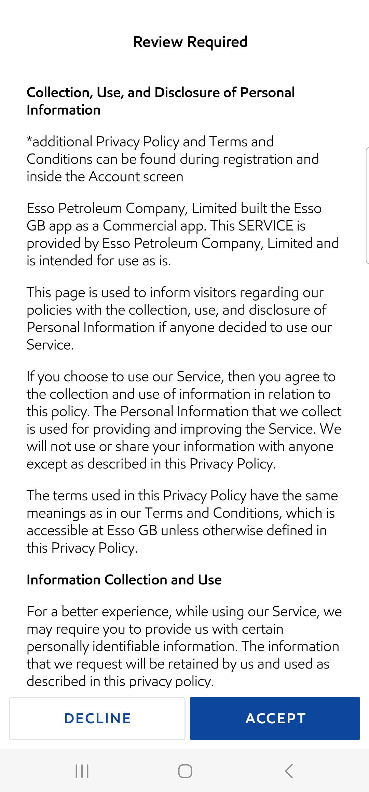

-
Account
3:27:50 pm / 00:11:10:617 Fail
Account
05.16.2024 3:27:50 pm 05.16.2024 3:39:01 pm 00:11:10:617 · #test-id=1PassVerify if system updates progress of the profile completion in 'percent' formatWhen user log out from the app if logged inAnd user clicks on Login IconWhen I enter "FrictEssoPsword" in login detailsAnd user taps login button in login screenWhen user is on NLID screenAnd user taps on the complete profileAnd user taps on the Email section in the complete profile screenAnd user verifies the completed pop up message and clicks ok buttonAnd user taps on back and navigates to LIDThen user verifies the progress in the LIDPassManual user - Verify whether app displaying ‘Google Pay’ as an available payment method in Add Payment Method screen- From Add payment popup by tapping on start fuelWhen user is on NLID screenWhen user taps on start button in LIDThen user validates the add payment popup title and ct once taps on start fuelThen user taps on ok button from add payment popupThen verify the googlepay displayed as first payment in add payment methodPassManual user - Verify whether app displaying ‘Google Pay’ as an available payment method in Add Payment Method screen-LID payment method LinkWhen user is on NLID screenAnd user validates the add payment link present in LID screenWhen user taps on add payment link present in LID screenThen user verifies the Add Payment method screenThen verify the googlepay displayed as first payment in add payment methodPassManual User - Verify Whether app is displaying the Credit/Debit Card info icon pop-up on the Add Payment Method screenWhen user is on NLID screenAnd user validates the add payment link present in LID screenWhen user taps on add payment link present in LID screenThen user verifies the Add Payment method screenThen user verifies the info icon present and taps on the buttonWhen user verifies the text present under info icon and taps on ok buttonThen user verifies the Add Payment method screenPassVerify if system navigates the user back to the Complete Your Profile' screen when the user taps on the CONTINUE buttonWhen user is on NLID screenAnd user taps on the complete profileAnd user taps on add payment methodThen user verifies the Add Payment method screenWhen user taps on Credit Debit card in Add Payment Method screenWhen user is on setup PIN screenWhen user enters four digit PINThen user tap on continue button in enter PIN screenThen tap on ok button and close location copy textThen enter name of the cardThen enter "5426 0640 0042 5174" card numberThen enter expiry dateThen enter CVVThen enter postal codeThen enter address line1Then enter Address line2Then enter cityThen check consent checkboxAnd tap on continue button in add payment screenThen validate if user is on 3ds password screenAnd enter valid password and click on submit buttonWhen user tap done button to navigate verify screen "Payment method added successfully"When user tap on payment method added successfully screen continue buttonThen user verifies the User Profile section in Complete your profile screenThen user verifies permission settings in the Complete your profile screenPassVerify that system should be able to see 60% profile completion on LIDWhen user is on NLID screenAnd user taps on the complete profileAnd user taps on the Email section in the complete profile screenAnd user verifies the completed pop up message and clicks ok buttonWhen user taps on the Accepted Privacy Policy and Terms and conditionsAnd user verifies the completed pop up message and clicks ok buttonWhen user taps on the Set First and Last NameAnd user verifies the completed pop up message and clicks ok buttonWhen user taps on add payment methodAnd user verifies the completed pop up message and clicks ok buttonWhen user taps on the NotificationsAnd user verifies the completed pop up message and clicks ok buttonAnd user taps on back and navigates to LIDThen user validates Add nectar card link in LIDPassVerify if system marks the 'Payment Method' task as completedWhen user is on NLID screenAnd user taps on the complete profileAnd user taps on add payment methodAnd user verifies the completed pop up message and clicks ok buttonThen user verifies the User Profile section in Complete your profile screenPassManual Registration->Verify whether the app marks the profile completion task 'Add Nectar Card' as complete when the user skip adding the Nectar card from Offer Screen >Add Nectar Card screenWhen user is on NLID screenAnd user clicks on offer iconAnd user clicks Add Nectar Card from offer screenAnd user taps on cancel button in the add nectar card screen from Profile completionWhen user taps on fuel icon and navigate to LID screenAnd user taps on the complete profileAnd user clicks on Add nectarThen user verifies the completed pop up message and clicks ok buttonAnd user taps on back and navigates to LIDThen user verifies the progress in the LIDPassDelete Nectar card from Account ScreenWhen user is on NLID screenAnd user taps on More button in tab barWhen user navigates to Account screenThen Add and verify Nectar cardThen Delete and verify Nectar cardFailVerify if user is able to see the link 'Tell us how often you'd like to hear from us' in LID screenWhen user is on NLID screenAnd user taps on the complete profileThen user verifies permission settings in the Complete your profile screenWhen user taps on location button in the complete profile screenAnd user verifies the completed pop up message and clicks ok buttonstepDefinitions.Hook.afterEachStep(io.cucumber.java.Scenario)2fa0e64b-a466-4b93-afd4-ddce06ed4dbbAnd user taps on back and navigates to LIDStep skippedAnd user verifies the Tell us how often you'd like to hear from us link in LID screenStep skippedFailVerify if system display a pop-up when the user taps on the CONTINUE button without selecting checkboxWhen user is on NLID screenAnd user taps on the complete profileWhen user taps on the Email Preferences in Complete your profile screenThen user verifies the Email Preferences screenstepDefinitions.Hook.afterEachStep(io.cucumber.java.Scenario)71683ca3-0898-448f-9109-3d99aae4e236When User taps on Continue button in the email preferences screenStep skippedThen user verifies the Email Preferences popup when the checkbox is not selectedStep skippedWhen user taps on Ok button in the Email Preferences popup when the checkbox is not selectedStep skippedThen user verifies the Email Preferences screenStep skipped -
COFChallengeFlow
3:39:01 pm / 01:11:42:994 Fail
COFChallengeFlow
05.16.2024 3:39:01 pm 05.16.2024 4:50:44 pm 01:11:42:994 · #test-id=237FailCheck whether system able to perform the 3DS SDK verification on selecting the COF for the payment method on successfully verifying the PIN, TouchID, FaceIdWhen user log out from the app if logged inAnd user clicks on Login IconWhen I enter "FrictEssoPsword" in login detailsAnd user taps login button in login screenWhen user is on NLID screenWhen user taps on start button in LIDAnd user is navigated to Select your pump screenstepDefinitions.Hook.afterEachStep(io.cucumber.java.Scenario)a1286b04-4924-4fc2-9b44-d1ce7ca0a97fAnd user selects pump number "1" to start fuellingStep skippedAnd user selects the pump from 'Select your Pump' page and taps on continue buttonStep skippedWhen user tap on Continue button in MFA screenStep skippedThen the user is navigated to Confirm payment screenStep skippedAnd user confirms card paymentStep skippedThen user land on enter PIN screenStep skippedWhen user enters four digit PINStep skippedThen user tap on continue button in enter PIN screenStep skippedWhen user lands on authorize payment screenStep skippedThen validate 3DS passphrase prompt for logged in userStep skippedThen validate if user is on 3ds password screenStep skippedPassCheck whether when user is on �Verify your Password� screen and entered password is incorrect then 3DS SDK response is declined and navigate user to the �Transaction Declined� screenGiven user is on NLID screenWhen user taps on start button in LIDAnd user is navigated to Select your pump screenAnd user selects pump number "5" to start fuellingAnd user selects the pump from 'Select your Pump' page and taps on continue buttonAnd user verify the MFA screenWhen user tap on Continue button in MFA screenThen the user is navigated to Confirm payment screenAnd user confirms card paymentThen user land on enter PIN screenWhen user enters four digit PINThen user tap on continue button in enter PIN screenWhen user lands on authorize payment screenThen validate if user is on 3ds password screenAnd enter invalid password and click on submit buttonAnd tap on done ButtonThen validate the error message displayed in modirum screenPassVerify that the application should not display a ‘Cancel’ button on the pump selection screen. (selected pump -Edit)When user is on NLID screenWhen user taps on start button in LIDAnd user is navigated to Select your pump screenAnd user selects pump number "1" to start fuellingAnd user selects the pump from 'Select your Pump' page and taps on continue buttonAnd user verify the MFA screenWhen user tap on Continue button in MFA screenThen the user is navigated to Confirm payment screenWhen user taps on edit button in the selected pump field in the Confirm payment screenThen user should not see cancel button at the bottom of the screenPassVerify that the application should not display a ‘Cancel’ button on the Payment Details screen. (Payment Method -Edit)When user is on NLID screenWhen user taps on start button in LIDAnd user is navigated to Select your pump screenAnd user selects pump number "1" to start fuellingAnd user selects the pump from 'Select your Pump' page and taps on continue buttonAnd user verify the MFA screenWhen user tap on Continue button in MFA screenThen the user is navigated to Confirm payment screenAnd Click on Change payment linkThen user should not see cancel button at the bottom of the screenPassVerify that the application should not display a ‘Cancel’ button on the Maximum Fuelling Amount screen. (MFA -Edit)When user is on NLID screenWhen user taps on start button in LIDAnd user is navigated to Select your pump screenAnd user selects pump number "1" to start fuellingAnd user selects the pump from 'Select your Pump' page and taps on continue buttonAnd user verify the MFA screenWhen user tap on Continue button in MFA screenThen the user is navigated to Confirm payment screenAnd Tap on Maximum Fuelling amount edit buttonThen user should not see cancel button at the bottom of the screenPassCheck whether user is navigating to start fueling screen when entered password is correct and 3DS SDK response is successGiven user is on NLID screenWhen user taps on start button in LIDAnd user is navigated to Select your pump screenAnd user selects pump number "10" to start fuellingAnd user selects the pump from 'Select your Pump' page and taps on continue buttonWhen user tap on Continue button in MFA screenThen the user is navigated to Confirm payment screenAnd user confirms card paymentThen user land on enter PIN screenWhen user enters four digit PINThen user tap on continue button in enter PIN screenWhen user lands on authorize payment screenWhen user lands on card verification screenAnd enter valid password and click on submit buttonThen user is navigated to start fueling now screenAnd then to now fuelingThen user tap on Done button in Transaction Complete screenPassCheck whether user able to navigate user to the 3DS SDK driven screen and allowing user to enter the password,when user has set-up password at the payment method levelGiven user is on NLID screenWhen user taps on start button in LIDAnd user is navigated to Select your pump screenAnd user selects pump number "3" to start fuellingAnd user selects the pump from 'Select your Pump' page and taps on continue buttonWhen user tap on Continue button in MFA screenThen the user is navigated to Confirm payment screenAnd user confirms card paymentThen user land on enter PIN screenWhen user enters four digit PINThen user tap on continue button in enter PIN screenWhen user lands on authorize payment screenAnd enter valid password and click on submit buttonPassSystem to display ‘Custom UI’ if the challenge flow is issued for the COF based fuelling-authorization request(Fueling Flow)Given user is on NLID screenWhen user taps on start button in LIDAnd user is navigated to Select your pump screenAnd user selects pump number "1" to start fuellingAnd user selects the pump from 'Select your Pump' page and taps on continue buttonWhen user tap on Continue button in MFA screenThen the user is navigated to Confirm payment screenAnd user confirms card paymentThen user land on enter PIN screenWhen user enters four digit PINThen user tap on continue button in enter PIN screenWhen user lands on authorize payment screenThen validate 3DS passphrase prompt for logged in userPassDisplay the Identify Confirmation prompt as per ‘Requirement 1.e’ for 5 seconds [Note: 5 seconds should be configurable] (Fueling Flow)Given user is on NLID screenWhen user taps on start button in LIDAnd user is navigated to Select your pump screenAnd user selects pump number "1" to start fuellingAnd user selects the pump from 'Select your Pump' page and taps on continue buttonWhen user tap on Continue button in MFA screenThen the user is navigated to Confirm payment screenAnd user confirms card paymentThen user land on enter PIN screenWhen user enters four digit PINThen user tap on continue button in enter PIN screenWhen user lands on authorize payment screenThen validate 3DS passphrase prompt for logged in userPassCheck whether system able to perform the 3DS SDK verification on selecting the COF for payment method on successfully verifying the PIN, TouchID, FaceIdGiven user is on NLID screenWhen user taps on start button in LIDAnd user is navigated to Select your pump screenAnd user selects pump number "1" to start fuellingAnd user selects the pump from 'Select your Pump' page and taps on continue buttonWhen user tap on Continue button in MFA screenThen the user is navigated to Confirm payment screenAnd user confirms card paymentThen user land on enter PIN screenWhen user enters four digit PINThen user tap on continue button in enter PIN screenWhen user lands on authorize payment screenThen validate if user is on 3ds password screenPassCheck whether user able to navigate user to the 3DS SDK driven screen and allowing user to enter the password,when user has set-up password at the payment method levelGiven user is on NLID screenWhen user taps on start button in LIDAnd user selects pump number "1" to start fuellingAnd user selects the pump from 'Select your Pump' page and taps on continue buttonAnd user tap on Continue button in MFA screenThen the user is navigated to Confirm payment screenAnd user confirms card paymentThen user land on enter PIN screenThen user enters four digit PINThen user tap on continue button in enter PIN screenWhen user lands on authorize payment screenPassCheck whether user is navigating to start fueling screen when entered password is correct and 3DS SDK response is successGiven user is on NLID screenWhen user taps on start button in LIDAnd user selects pump number "4" to start fuellingAnd user selects the pump from 'Select your Pump' page and taps on continue buttonAnd user tap on Continue button in MFA screenThen the user is navigated to Confirm payment screenAnd user confirms card paymentThen user land on enter PIN screenThen user enters four digit PINThen user tap on continue button in enter PIN screenWhen user lands on authorize payment screenThen validate if user is on 3ds password screenAnd enter valid password and click on submit buttonThen user is navigated to start fueling now screenAnd then to now fuelingThen user tap on Done button in Transaction Complete screenFailCheck whether user able to see webpage controlled by 3DS SDK, when the user has successfully authenticated the transaction, then 3DS SDK has responded back with the success response (A-Res) and 3DS SDK responded back with Challenge-responseGiven user is on NLID screenWhen user taps on start button in LIDAnd user selects pump number "1" to start fuellingAnd user selects the pump from 'Select your Pump' page and taps on continue buttonAnd user tap on Continue button in MFA screenThen the user is navigated to Confirm payment screenAnd user confirms card paymentThen user land on enter PIN screenThen user enters four digit PINThen user tap on continue button in enter PIN screenWhen user lands on authorize payment screenThen validate if user is on 3ds password screenstepDefinitions.Hook.afterEachStep(io.cucumber.java.Scenario)40ec24ec-2ecd-4b69-8bbf-2ddd29e43ca3FailDismiss the Fraud Prevention prompt as per Requirement if the user has tapped on the button(Fueling Flow)Given user is on NLID screenWhen user taps on start button in LIDAnd user selects pump number "1" to start fuellingAnd user selects the pump from 'Select your Pump' page and taps on continue buttonAnd user tap on Continue button in MFA screenThen the user is navigated to Confirm payment screenAnd user confirms card paymentThen user land on enter PIN screenThen user enters four digit PINThen user tap on continue button in enter PIN screenWhen user lands on authorize payment screenThen verify 3ds and tap on Got it buttonstepDefinitions.Hook.afterEachStep(io.cucumber.java.Scenario)aede8b76-ff4a-4be7-9058-033ac6d44364Then validate if user is on 3ds password screenStep skippedPassCheck whether user able to see webpage controlled by 3DS SDK, when user has successfully authenticated the transaction,then 3DS SDK has responded back with the success response (A-Res) and 3DS SDK responded back with Challenge responseGiven user is on NLID screenWhen user taps on start button in LIDAnd user selects pump number "1" to start fuellingAnd user selects the pump from 'Select your Pump' page and taps on continue buttonAnd user tap on Continue button in MFA screenThen the user is navigated to Confirm payment screenAnd user confirms card paymentThen user land on enter PIN screenThen user enters four digit PINThen user tap on continue button in enter PIN screenWhen user lands on authorize payment screenThen validate if user is on 3ds password screenPassCheck whether system to navigate user to ‘Start-Fuelling now’ screen as per current functionality post approved responseGiven user is on NLID screenWhen user taps on start button in LIDAnd user selects pump number "5" to start fuellingAnd user selects the pump from 'Select your Pump' page and taps on continue buttonAnd user verify the MFA screenAnd user tap on Continue button in MFA screenThen the user is navigated to Confirm payment screenAnd user confirms card paymentThen user land on enter PIN screenThen user enters four digit PINThen user tap on continue button in enter PIN screenWhen user lands on authorize payment screenThen validate if user is on 3ds password screenAnd enter valid password and click on submit buttonPassVerify weather System is displaying the mentioned details on the Maximum Fuelling Amount screen as per requirement.Given user is on NLID screenWhen user taps on start button in LIDAnd user selects pump number "1" to start fuellingAnd user selects the pump from 'Select your Pump' page and taps on continue buttonThen user verify the MFA screenThen the user taps "140" in the ruler in the Mfa screen and validates the continue button is updatedPassVerify that system should not display the 'Cancel' button on the Payment details screenGiven user is on NLID screenWhen user taps on start button in LIDAnd user selects pump number "1" to start fuellingAnd user selects the pump from 'Select your Pump' page and taps on continue buttonAnd user tap on Continue button in MFA screenThen the user is navigated to Confirm payment screenAnd Click on Change payment linkThen verify if the user lands on Payment Details ScreenThen user should not see cancel button at the bottom of the screenFailVerify the user should able to navigate the logged-in dashboard from Thank You screen.Given user is on NLID screenWhen user taps on start button in LIDAnd user selects pump number "4" to start fuellingAnd user selects the pump from 'Select your Pump' page and taps on continue buttonWhen the user taps "140" in the ruler in the Mfa screen and validates the continue button is updatedAnd user tap on Save for next time checkbox in MFA screenAnd user tap on Continue button in MFA screenThen the user is navigated to Confirm payment screenAnd user confirms card paymentThen user land on enter PIN screenThen user enters four digit PINThen user tap on continue button in enter PIN screenWhen user lands on authorize payment screenThen validate if user is on 3ds password screenAnd enter valid password and click on submit buttonAnd user verify the Transaction Complete screenThen user tap on Done button in Transaction Complete screenAnd close the thank you screen if displayedThen user is on NLID screenstepDefinitions.Hook.afterEachStep(io.cucumber.java.Scenario)0369bf8f-ba27-4e20-9a9a-fef39ea2ee67PassVerify that system should not display the MFA screen when user has already selected the checkbox for 'Save for next time'Given user is on NLID screenWhen user taps on start button in LIDAnd user selects pump number "1" to start fuellingAnd user selects the pump from 'Select your Pump' page and taps on continue buttonThen the user validates MFA screen is not displayed during the fuelling flowAnd the user validates the confirm payment screen and validates the pump number "1"Then the user validates whether "140" is updated in the Confirm Payment screenPassVerify that user should be able to see the updated Confirm Pump numberGiven user is on NLID screenWhen user taps on start button in LIDAnd user selects pump number "1" to start fuellingAnd user selects the pump from 'Select your Pump' page and taps on continue buttonThen the user is navigated to Confirm payment screenWhen the user taps on edit pump number from the Confirm payment screenThen user validates the Select your Pump screen when cancel button is not presentAnd user selects the pump from 'Select your Pump' page and taps on continue buttonAnd the user validates the confirm payment screen and validates the pump number "1"PassVerify that system should untick the 'Save for next time' checkboxGiven user is on NLID screenWhen user taps on start button in LIDAnd user selects pump number "1" to start fuellingAnd user selects the pump from 'Select your Pump' page and taps on continue buttonThen the user is navigated to Confirm payment screenWhen the user taps on edit button in the Mfa sectionThen user verify the MFA screen without cancel button and "140" as already selected valueAnd user tap on Continue button in MFA screenThen the user is navigated to Confirm payment screenPassVerify that user should allow the user to update the payment methodGiven user is on NLID screenWhen user taps on start button in LIDAnd user selects pump number "1" to start fuellingAnd user selects the pump from 'Select your Pump' page and taps on continue buttonAnd user tap on Continue button in MFA screenThen the user is navigated to Confirm payment screenAnd Click on Change payment linkThen verify if the user lands on Payment Details ScreenWhen the user taps on continue button in the Payment Details ScreenThen the user validates the confirm payment screen and validates the pump number "1"PassVerify that system should navigate the user back to the site check-in screen from the MFA screenGiven user is on NLID screenWhen user taps on start button in LIDAnd user selects pump number "1" to start fuellingAnd user selects the pump from 'Select your Pump' page and taps on continue buttonThen user verify the MFA screenWhen the user taps on back button in the MFA screenThen user validates the Select your Pump screen when cancel button is not presentAnd user selects the pump from 'Select your Pump' page and taps on continue buttonAnd the user is navigated to the Redemption screenAnd user tap on Continue button in MFA screenAnd the user validates the confirm payment screen and validates the pump number "1"FailVerify that System should display 100£ as the default MFA ruler unit and do not display the previous set MFA when User log out and log in to the same device after saving the MFA value for next time.Given user is on NLID screenWhen user taps on start button in LIDAnd user selects pump number "1" to start fuellingAnd user selects the pump from 'Select your Pump' page and taps on continue buttonWhen the user taps "140" in the ruler in the Mfa screen and validates the continue button is updatedAnd user tap on Save for next time checkbox in MFA screenAnd user tap on Continue button in MFA screenThen the user is navigated to Confirm payment screenWhen user kill and relaunch the appGiven user log out from the app if logged instepDefinitions.Hook.afterEachStep(io.cucumber.java.Scenario)3099d473-19da-4031-9f51-a90296d3f945When user clicks on Login IconStep skippedAnd I enter "FrictEssoPsword" in login detailsStep skippedAnd user taps login button in login screenStep skippedGiven user is on NLID screenStep skippedWhen user taps on start button in LIDStep skippedAnd user selects pump number "1" to start fuellingStep skippedAnd user selects the pump from 'Select your Pump' page and taps on continue buttonStep skippedThen user verify the MFA screenStep skippedFailVerify that system should allow the user to update the selected MFA unitGiven user is on NLID screenWhen user taps on start button in LIDAnd user selects pump number "1" to start fuellingAnd user selects the pump from 'Select your Pump' page and taps on continue buttonAnd user tap on Continue button in MFA screenstepDefinitions.Hook.afterEachStep(io.cucumber.java.Scenario)52b86aad-3705-4510-a2a3-45d166822624Then the user is navigated to Confirm payment screenStep skippedWhen the user taps on edit button in the Mfa sectionStep skippedWhen the user taps "140" in the ruler in the Mfa screen and validates the continue button is updatedStep skippedWhen user tap on Continue button in MFA screenStep skippedThen the user validates the confirm payment screen and validates the pump number "1"Step skippedThen the user validates whether "140" is updated in the Confirm Payment screenStep skippedPassSystem to display Custom UI if the challenge flow is issued for the COF onboarding(Manual Registration)When user log out from the app if logged inWhen user taps on register button from Login screenThen user should be navigated to Manual Register screenThen enter First NameThen enter Last NameThen enter "chibisakkrava.d+" Email addressThen enter passwordAnd confirm passwordThen click the check box for acceptWhen click on continue button from register screenWhen user tap on Skip buttonThen the system should display Skip warning popupWhen user tap on Skip anywayThen app to dismiss the popup and navigate the user to LID after reviewAnd user taps on More button in tab barWhen user navigates to Account screenThen user tap on add card button in accountWhen user taps on Credit Debit card in Add Payment Method screenWhen user is on setup PIN screenWhen user enters four digit PINThen user tap on continue button in enter PIN screenThen tap on ok button and close location copy textThen user lands on Add debit/credit card screenThen enter name of the cardThen enter "4012 0000 0001 2003 001" card numberThen enter expiry dateThen enter CVVThen enter postal codeThen enter address line1Then enter Address line2Then enter cityThen check consent checkboxAnd tap on continue button in add payment screenThen validate if user is on modirum password screenPassDismiss the Identify Confirmation prompt as per �Requirement 1.e� if the user has tapped on the button(Manual Registration)When user log out from the app if logged inWhen user taps on register button from Login screenThen user should be navigated to Manual Register screenThen enter First NameThen enter Last NameThen enter "chibisakkrava.d+" Email addressThen enter passwordAnd confirm passwordThen click the check box for acceptWhen click on continue button from register screenWhen user tap on Skip buttonThen the system should display Skip warning popupWhen user tap on Skip anywayThen app to dismiss the popup and navigate the user to LID after reviewAnd user taps on More button in tab barWhen user navigates to Account screenThen user tap on add card button in accountWhen user taps on Credit Debit card in Add Payment Method screenWhen user is on setup PIN screenWhen user enters four digit PINThen user tap on continue button in enter PIN screenThen tap on ok button and close location copy textThen user lands on Add debit/credit card screenThen enter name of the cardThen enter "4012 0000 0001 2003 001" card numberThen enter expiry dateThen enter CVVThen enter postal codeThen enter address line1Then enter Address line2Then enter cityThen check consent checkboxAnd tap on continue button in add payment screenThen verify 3ds and tap on Got it buttonThen validate if user is on modirum password screenPassCheck whether system able to perform the 3DS SDK verification System to display error message pop up based on the error response from SDKWhen user log out from the app if logged inWhen user taps on register button from Login screenThen user should be navigated to Manual Register screenThen enter First NameThen enter Last NameThen enter "chibisakkrava.d+" Email addressThen enter passwordAnd confirm passwordThen click the check box for acceptWhen click on continue button from register screenWhen user tap on Skip buttonThen the system should display Skip warning popupWhen user tap on Skip anywayThen app to dismiss the popup and navigate the user to LID after reviewAnd user taps on More button in tab barWhen user navigates to Account screenThen user tap on add card button in accountWhen user taps on Credit Debit card in Add Payment Method screenWhen user is on setup PIN screenWhen user enters four digit PINThen user tap on continue button in enter PIN screenThen tap on ok button and close location copy textThen user lands on Add debit/credit card screenThen enter name of the cardThen enter "5520 9050 1002 2051" card numberThen enter expiry dateThen enter CVVThen enter postal codeThen enter address line1Then enter Address line2Then enter cityThen check consent checkboxAnd tap on continue button in add payment screenThen validate if user is on OTP password screenAnd tap on cancel button navigate to payment screenPassCheck whether system able to perform the 3DS SDK verification System to display error message pop up based on the error response from SDKWhen user log out from the app if logged inWhen user taps on register button from Login screenThen user should be navigated to Manual Register screenThen enter First NameThen enter Last NameThen enter "chibisakkrava.d+" Email addressThen enter passwordAnd confirm passwordThen click the check box for acceptWhen click on continue button from register screenWhen user tap on Skip buttonThen the system should display Skip warning popupWhen user tap on Skip anywayThen app to dismiss the popup and navigate the user to LID after reviewAnd user taps on More button in tab barWhen user navigates to Account screenThen user tap on add card button in accountWhen user taps on Credit Debit card in Add Payment Method screenWhen user is on setup PIN screenWhen user enters four digit PINThen user tap on continue button in enter PIN screenThen tap on ok button and close location copy textThen user lands on Add debit/credit card screenThen enter name of the cardThen enter "5520 9050 1002 2051" card numberThen enter expiry dateThen enter CVVThen enter postal codeThen enter address line1Then enter Address line2Then enter cityThen check consent checkboxAnd tap on continue button in add payment screenThen validate if user is on OTP password screenAnd tap on cancel button navigate to payment screenFailCheck whether User cancels the Challenge Scenario.When user log out from the app if logged inWhen user taps on register button from Login screenThen user should be navigated to Manual Register screenThen enter First NameThen enter Last NameThen enter "chibisakkrava.d+" Email addressThen enter passwordAnd confirm passwordThen click the check box for acceptWhen click on continue button from register screenWhen user tap on Skip buttonThen the system should display Skip warning popupWhen user tap on Skip anywayThen app to dismiss the popup and navigate the user to LID after reviewAnd user taps on More button in tab barWhen user navigates to Account screenThen user tap on add card button in accountWhen user taps on Credit Debit card in Add Payment Method screenWhen user is on setup PIN screenWhen user enters four digit PINThen user tap on continue button in enter PIN screenThen tap on ok button and close location copy textThen user lands on Add debit/credit card screenThen enter name of the cardThen enter "5520 9050 1002 2051" card numberThen enter expiry dateThen enter CVVThen enter postal codeThen enter address line1Then enter Address line2Then enter cityThen check consent checkboxAnd tap on continue button in add payment screenThen validate if user is on OTP password screenstepDefinitions.Hook.afterEachStep(io.cucumber.java.Scenario)cbf6f95a-4980-4b02-ae80-5c9c6cff8ca5And tap on cancel button navigate to payment screenStep skippedPassCheck whether User clicks on DONE again, based on 3DS SDK status, the app will display the challenge flow. (repeat the flow until the user complete the challenge flow or cancels the step or try with another cardGiven user is on NLID screenAnd user taps on More button in tab barWhen user navigates to Account screenThen user tap on add card button in accountWhen user taps on Credit Debit card in Add Payment Method screenThen user lands on Add debit/credit card screenThen enter name of the cardThen enter "5520 9050 1002 2051" card numberThen enter expiry dateThen enter CVVThen enter postal codeThen enter address line1Then enter Address line2Then enter cityThen check consent checkboxAnd tap on continue button in add payment screenThen validate if user is on OTP password screenAnd tap on cancel button navigate to payment screenThen all fields on Add debit card screen should be cleared -
Contextual Registration
4:50:44 pm / 00:21:27:314 Fail
Contextual Registration
05.16.2024 4:50:44 pm 05.16.2024 5:12:11 pm 00:21:27:314 · #test-id=1,362PassVerify the Manual register user able view the list of email client installed on the user�s deviceWhen user log out from the app if logged inWhen user taps on register button from Login screenThen user should be navigated to Manual Register screenThen enter First NameThen enter Last NameThen enter "chibisakkrava.d+" Email addressThen enter passwordAnd confirm passwordThen click the check box for acceptWhen click on continue button from register screenThen App should navigates to Confirm your email address screenThen user tap on open inboxAnd see the list of apps installed in deviceThen tap on cancel button from email appsAnd App should navigates to Confirm your email address screenFailVerify the while App kill and relaunch form the 'Confirm your email address' screen and navigate to LIDWhen user log out from the app if logged inWhen user taps on register button from Login screenThen user should be navigated to Manual Register screenThen enter First NameThen enter Last NameThen enter "chibisakkrava.d+" Email addressThen enter passwordAnd confirm passwordThen click the check box for acceptWhen click on continue button from register screenThen App should navigates to Confirm your email address screenWhen user kill and relaunch the appThen app to dismiss the popup and navigate the user to LID after reviewstepDefinitions.Hook.afterEachStep(io.cucumber.java.Scenario)c234fe15-9761-4e17-8476-e1d767596cb9PassVerify the Manual register user should not able to view the �Add Payment Method' and �Maximum Fuelling Amount� �screens as part of the registration flowWhen user log out from the app if logged inWhen user taps on register button from Login screenThen user should be navigated to Manual Register screenThen enter First NameThen enter Last NameThen enter "chibisakkrava.d+" Email addressThen enter passwordAnd confirm passwordThen click the check box for acceptWhen click on continue button from register screenThen App should navigates to Confirm your email address screenThen App should not navigate user to add payment method or maximum fueling screenPassVerify the Manual register user able to dismiss the pop-up with the list of available email client installed on the deviceWhen user log out from the app if logged inWhen user taps on register button from Login screenThen user should be navigated to Manual Register screenThen enter First NameThen enter Last NameThen enter "chibisakkrava.d+" Email addressThen enter passwordAnd confirm passwordThen click the check box for acceptWhen click on continue button from register screenThen App should navigates to Confirm your email address screenAnd user should see details in contextual registration screenThen user tap on open inboxAnd see the list of apps installed in deviceThen tap on cancel button from email appsAnd App should navigates to Confirm your email address screenPassVerify the Manual register user able to view the following details on the 'Confirm your email address' screenWhen user log out from the app if logged inWhen user taps on register button from Login screenThen user should be navigated to Manual Register screenThen enter First NameThen enter Last NameThen enter "chibisakkrava.d+" Email addressThen enter passwordAnd confirm passwordThen click the check box for acceptWhen click on continue button from register screenThen App should navigates to Confirm your email address screenAnd user should see details in contextual registration screenPassVerify the Manual register user able to view the email resend confirmation pop-upWhen user log out from the app if logged inWhen user taps on register button from Login screenThen user should be navigated to Manual Register screenThen enter First NameThen enter Last NameThen enter "chibisakkrava.d+" Email addressThen enter passwordAnd confirm passwordThen click the check box for acceptWhen click on continue button from register screenThen App should navigates to Confirm your email address screenAnd user should see details in contextual registration screenWhen user tap on Resend confirmation email linkThen the system should display the confirmation popupAnd app to dismiss the popup when the user taps on OK buttonThen App should navigates to Confirm your email address screenPassVerify the Manual register user able to skip the 'Confirm your email address' screenWhen user log out from the app if logged inWhen user taps on register button from Login screenThen user should be navigated to Manual Register screenThen enter First NameThen enter Last NameThen enter "chibisakkrava.d+" Email addressThen enter passwordAnd confirm passwordThen click the check box for acceptWhen click on continue button from register screenThen App should navigates to Confirm your email address screenAnd user should see details in contextual registration screenWhen user tap on Skip buttonThen the system should display Skip warning popupWhen user tap on Skip anywayThen app to dismiss the popup and navigate the user to LID after reviewPassVerify the Manual register user able to dismiss the 'Skip confirmation' pop-up and display the pop-up with the list of email clientWhen user log out from the app if logged inWhen user taps on register button from Login screenThen user should be navigated to Manual Register screenThen enter First NameThen enter Last NameThen enter "chibisakkrava.d+" Email addressThen enter passwordAnd confirm passwordThen click the check box for acceptWhen click on continue button from register screenThen App should navigates to Confirm your email address screenWhen user tap on Skip buttonThen the system should display Skip warning popupWhen user tap on verify emailAnd see the list of apps installed in deviceThen tap on cancel button from email appsPassVerify the while App relaunch form the 'Confirm your email address' screenWhen user log out from the app if logged inWhen user taps on register button from Login screenThen user should be navigated to Manual Register screenThen enter First NameThen enter Last NameThen enter "chibisakkrava.d+" Email addressThen enter passwordAnd confirm passwordThen click the check box for acceptWhen click on continue button from register screenThen App should navigates to Confirm your email address screenWhen user minimize and relaunch the appThen App should navigates to Confirm your email address screen -
FrictionlessFlow
5:12:11 pm / 02:37:33:974 Fail
FrictionlessFlow
05.16.2024 5:12:11 pm 05.16.2024 7:49:45 pm 02:37:33:974 · #test-id=1,648FailValidate invalid password popup error message "Due to security reasons you need to login again.Button: OK"Given user log out from the app if logged inAnd user clicks on Login IconWhen I enter "FrictEssoPsword" in login detailsAnd user taps login button in login screenAnd user is on NLID screenWhen user taps on fuel icon and start fuelling buttonAnd user selects the pump from 'Select your Pump' page and taps on continue buttonWhen user tap on Continue button in MFA screenstepDefinitions.Hook.afterEachStep(io.cucumber.java.Scenario)5ba9e8e2-83ac-479e-9b20-a88b82403f67Then the user is navigated to Confirm payment screenStep skippedAnd user confirms card paymentStep skippedThen user land on enter PIN screenStep skippedAnd user should enter wrong PIN three timesStep skippedThen Verify user is navigated to Enter Password screenStep skippedWhen user enter invalid password in enter password screenStep skippedThen user able to see invalid password popup messageStep skippedAnd Verify that User is navigate back to NLID screenStep skippedPassCheck Whether System to show inline error message when user leaves the field blank and clicks on continueWhen user log out from the app if logged inWhen user taps on register button from Login screenThen user should be navigated to Manual Register screenThen enter First NameThen enter Last NameThen enter "chibisakkrava.d+" Email addressThen enter passwordAnd confirm passwordThen click the check box for acceptWhen click on continue button from register screenWhen user tap on Skip buttonThen the system should display Skip warning popupWhen user tap on Skip anywayThen app to dismiss the popup and navigate the user to LID after reviewAnd user taps on More button in tab barWhen user navigates to Account screenThen user tap on add card button in accountWhen user taps on Credit Debit card in Add Payment Method screenWhen user is on setup PIN screenWhen user enters four digit PINThen user tap on continue button in enter PIN screenThen tap on ok button and close location copy textThen user lands on Add debit/credit card screenAnd user taps on card number fieldThen check consent checkboxAnd tap on continue button in add payment screenThen user verifies the inline error message for card number fieldPassCheck whether System to display CT as prompt when user tap on the ‘Edit’ button i. CT[Message: Are you sure you want to delete this card?, Button: CANCEL, DELETE]Given user is on NLID screenAnd user taps on More button in tab barWhen user navigates to Account screenThen user tap on add card button in accountWhen user taps on Credit Debit card in Add Payment Method screenThen enter name of the cardThen enter "5232 0500 0019 0003" card numberThen enter expiry dateThen enter CVVThen enter postal codeThen enter address line1Then enter Address line2Then enter cityThen check consent checkboxThen user clicks on continue button in Card screenWhen user tap done button to navigate verify screen "Payment method added successfully"When user tap on payment method added successfully screen continue buttonAnd user click the edit card button with no mobile and no paypalAnd user should verify the last four digit of card numberAnd user tap on Delete Card buttonAnd user should verify the CT "Are you sure you want to delete this card?"And user should verify cancel and delete buttonPassCheck Whether System displays user able to enter maximum of fifty charactersGiven user is on NLID screenAnd user taps on More button in tab barWhen user navigates to Account screenThen user tap on add card button in accountWhen user taps on Credit Debit card in Add Payment Method screenThen user verifies the Billing address i icon in Card details screenAnd user clicks on City fieldThen user enters maximum of fifty characters above fifty user will not be able to enterPassCheck Whether System displays the default input text for the City field under Billing Details section as'City'Given user is on NLID screenAnd user taps on More button in tab barWhen user navigates to Account screenThen user tap on add card button in accountWhen user taps on Credit Debit card in Add Payment Method screenThen user verifies the default input text for the City field under Billing Details SectionPassSystem to display the entered card number in the format XXXX XXXX XXXX XXXXAnd user log out from the app if logged inWhen user taps on register button from Login screenThen user should be navigated to Manual Register screenThen enter First NameThen enter Last NameThen enter "chibisakkrava.d+" Email addressThen enter passwordAnd confirm passwordThen click the check box for acceptWhen click on continue button from register screenWhen user tap on Skip buttonThen the system should display Skip warning popupWhen user tap on Skip anywayThen app to dismiss the popup and navigate the user to LID after reviewAnd user taps on More button in tab barWhen user navigates to Account screenThen user tap on add card button in accountWhen user taps on Credit Debit card in Add Payment Method screenAnd Enter pinThen user verifies the popup and clicks on ok buttonAnd verify elements displayed in Add Card ScreenAnd Enter name Card NameAnd Verify card number in valid formatPassCheck Whether System displays the united kingdom in Billing details screenAnd user log out from the app if logged inWhen user taps on register button from Login screenThen user should be navigated to Manual Register screenThen enter First NameThen enter Last NameThen enter Email address as "chibisakkrava.d+"Then enter passwordAnd confirm passwordThen click the check box for acceptWhen click on continue button from register screenWhen user tap on Skip buttonThen the system should display Skip warning popupWhen user tap on Skip anywayThen app to dismiss the popup and navigate the user to LID after reviewAnd user taps on the complete profileWhen user taps on add payment methodWhen user taps on Credit Debit card in Add Payment Method screenWhen user is on setup PIN screenWhen user enters four digit PINThen user tap on continue button in enter PIN screenThen tap on ok button and close location copy textAnd user scrolls to Country name under Billing Details SectionThen user verifies the Country name as 'United Kingdom' by defaultPassSystem to close the info overlay as user taps on ‘GOT IT’ buttonWhen user log out from the app if logged inWhen user taps on register button from Login screenThen user should be navigated to Manual Register screenThen enter First NameThen enter Last NameThen enter "chibisakkrava.d+" Email addressThen enter passwordAnd confirm passwordThen click the check box for acceptWhen click on continue button from register screenWhen user tap on Skip buttonThen the system should display Skip warning popupWhen user tap on Skip anywayThen app to dismiss the popup and navigate the user to LID after reviewAnd user taps on More button in tab barWhen user navigates to Account screenThen user tap on add card button in accountWhen user taps on Credit Debit card in Add Payment Method screenAnd Enter pinThen user verifies the popup and clicks on ok buttonAnd Click on i icon in the security fieldThen Click on Got it button on popup screenPassCheck Whether System displays the list of address in postcode lookup screenAnd user log out from the app if logged inWhen user taps on register button from Login screenThen user should be navigated to Manual Register screenThen enter First NameThen enter Last NameThen enter Email address as "chibisakkrava.d+"Then enter passwordAnd confirm passwordThen click the check box for acceptWhen click on continue button from register screenWhen user tap on Skip buttonThen the system should display Skip warning popupWhen user tap on Skip anywayThen app to dismiss the popup and navigate the user to LID after reviewAnd user taps on the complete profileWhen user taps on add payment methodWhen user taps on Credit Debit card in Add Payment Method screenThen user verifies the Set Up pin screen with numeric keypadThen Enter pinThen user verifies the popup and clicks on ok buttonThen user verifies the Billing address i icon in Card details screenAnd user clicks on postcode fieldThen user verifies the search icon is enabledAnd user enters the postcode in the billing Details screenThen user clicks on enabled search iconThen user verifies the screen with screen title and back icon and search clear iconsAnd user verifies the list of address in postcode lookup screenPassCheck Whether System displays the entered numbers in post code fieldWhen user log out from the app if logged inWhen user taps on register button from Login screenThen user should be navigated to Manual Register screenThen enter First NameThen enter Last NameThen enter Email address as "chibisakkrava.d+"Then enter passwordAnd confirm passwordThen click the check box for acceptWhen click on continue button from register screenWhen user tap on Skip buttonThen the system should display Skip warning popupWhen user tap on Skip anywayThen app to dismiss the popup and navigate the user to LID after reviewAnd user taps on the complete profileWhen user taps on add payment methodWhen user taps on Credit Debit card in Add Payment Method screenWhen user is on setup PIN screenWhen user enters four digit PINThen user tap on continue button in enter PIN screenThen tap on ok button and close location copy textThen user verifies the Billing address i icon in Card details screenAnd user clicks on postcode fieldWhen user enters the postcode in the billing Details screenThen verify whether the entered postcode is alphanumeric and also the postcode lengthPassCheck Whether System displays the native picker while clicking the Expiry month and dateWhen user log out from the app if logged inWhen user taps on register button from Login screenThen user should be navigated to Manual Register screenThen enter First NameThen enter Last NameThen enter "chibisakkrava.d+" Email addressThen enter passwordAnd confirm passwordThen click the check box for acceptWhen click on continue button from register screenWhen user tap on Skip buttonThen the system should display Skip warning popupWhen user tap on Skip anywayThen app to dismiss the popup and navigate the user to LID after reviewAnd user taps on the complete profileWhen user taps on add payment methodWhen user taps on Credit Debit card in Add Payment Method screenThen user verifies the Set Up pin screen with numeric keypadThen Enter pinThen user verifies the popup and clicks on ok buttonThen enter expiry datePassScenario: Check Whether System displays the popup message for i icon next to consent to app checkbox fieldAnd user log out from the app if logged inWhen user taps on register button from Login screenThen user should be navigated to Manual Register screenThen enter First NameThen enter Last NameThen enter Email address as "chibisakkrava.d+"Then enter passwordAnd confirm passwordThen click the check box for acceptWhen click on continue button from register screenWhen user tap on Skip buttonThen the system should display Skip warning popupWhen user tap on Skip anywayThen app to dismiss the popup and navigate the user to LID after reviewAnd user taps on the complete profileWhen user taps on add payment methodWhen user taps on Credit Debit card in Add Payment Method screenWhen user is on setup PIN screenWhen user enters four digit PINThen user tap on continue button in enter PIN screenThen tap on ok button and close location copy textThen enter name of the cardThen enter "5232 0500 0019 0003" card numberThen enter expiry dateThen enter CVVThen enter postal codeThen enter address line1Then enter Address line2Then enter cityThen user verifies and clicks the i icon next to consent checkboxPassCheck whether System to display CTXX as inline error message ●CTXX[Message: Wrong PIN. 2 Attempts left]And user log out from the app if logged inWhen user taps on register button from Login screenThen user should be navigated to Manual Register screenThen enter First NameThen enter Last NameThen enter "chibisakkrava.d+" Email addressThen enter passwordAnd confirm passwordThen click the check box for acceptWhen click on continue button from register screenWhen user tap on Skip buttonThen the system should display Skip warning popupWhen user tap on Skip anywayThen app to dismiss the popup and navigate the user to LID after reviewAnd user taps on More button in tab barWhen user navigates to Account screenWhen user able to see the text of set up Esso PINThen user tap on Setup Esso PIN linkAnd Enter pinThen user verifies the popup and clicks on ok buttonAnd user Tap Edit buttonThen user enter the wrong pin number and click on continue buttonThen user verifies the inline error message for entering wrong pinPassCheck Whether System displays the Address 2 input fields in Card details screen under Billing Details section as'Address2'When user log out from the app if logged inWhen user taps on register button from Login screenThen user should be navigated to Manual Register screenThen enter First NameThen enter Last NameThen enter Email address as "chibisakkrava.d+"Then enter passwordAnd confirm passwordThen click the check box for acceptWhen click on continue button from register screenWhen user tap on Skip buttonThen the system should display Skip warning popupWhen user tap on Skip anywayThen app to dismiss the popup and navigate the user to LID after reviewAnd user taps on the complete profileWhen user taps on add payment methodWhen user taps on Credit Debit card in Add Payment Method screenWhen user is on setup PIN screenWhen user enters four digit PINThen user tap on continue button in enter PIN screenThen tap on ok button and close location copy textThen user verifies the Billing address i icon in Card details screenThen user verifies the default input text for the Address field Line two under Billing Details SectionPassCheck the whether System to allow the user to add cards as a payment method.Given user is on NLID screenAnd user taps on More button in tab barWhen user navigates to Account screenThen user tap on add card button in accountWhen user taps on Credit Debit card in Add Payment Method screenThen user should verify title text on the payment screenThen enter name of the cardThen enter "5232 0500 0019 0003" card numberThen enter expiry dateThen enter CVVThen enter postal codeThen enter address line1Then enter Address line2Then enter cityThen check consent checkboxThen user clicks on continue button in Card screenWhen user tap done button to navigate verify screen "Payment method added successfully"When user tap on payment method added successfully screen continue buttonThen user verifies the success set Default payment popupAnd user verifies the account pagePassCheck whether the system displays icons for cards of all app supported credit cards will be displayed here.When user log out from the app if logged inWhen user taps on register button from Login screenThen user should be navigated to Manual Register screenThen enter First NameThen enter Last NameThen enter "chibisakkrava.d+" Email addressThen enter passwordAnd confirm passwordThen click the check box for acceptWhen click on continue button from register screenWhen user tap on Skip buttonThen the system should display Skip warning popupWhen user tap on Skip anywayThen app to dismiss the popup and navigate the user to LID after reviewAnd user taps on More button in tab barWhen user navigates to Account screenThen user tap on add card button in accountWhen user taps on Credit Debit card in Add Payment Method screenWhen user enters four digit PINThen user tap on continue button in enter PIN screenThen tap on ok button and close location copy textThen user lands on Add debit/credit card screenWhen user enters the unsupported card number in the Card number fieldThen verify whether the logo of the cards are greyed outWhen user enters the first four digits of a valid card number in the Add number fieldThen verify whether the logo of the entered card is activeFailCheck Whether system allows the user to enter set the pin in numeric fieldWhen user log out from the app if logged inWhen user taps on register button from Login screenThen user should be navigated to Manual Register screenThen enter First NameThen enter Last NameThen enter "chibisakkrava.d+" Email addressThen enter passwordAnd confirm passwordThen click the check box for acceptWhen click on continue button from register screenWhen user tap on Skip buttonThen the system should display Skip warning popupWhen user tap on Skip anywayThen app to dismiss the popup and navigate the user to LID after reviewAnd user taps on More button in tab barstepDefinitions.Hook.afterEachStep(io.cucumber.java.Scenario)c50e97e1-f01f-4243-82a6-b98a86734868 When user navigates to Account screenStep skippedThen user tap on add card button in accountStep skippedWhen user taps on Credit Debit card in Add Payment Method screenStep skippedWhen user is on setup PIN screenStep skippedWhen user enters four digit PINStep skippedPassCheck Whether System displays the dot for completed pin in Payment MethodWhen user log out from the app if logged inWhen user taps on register button from Login screenThen user should be navigated to Manual Register screenThen enter First NameThen enter Last NameThen enter "chibisakkrava.d+" Email addressThen enter passwordAnd confirm passwordThen click the check box for acceptWhen click on continue button from register screenWhen user tap on Skip buttonThen the system should display Skip warning popupWhen user tap on Skip anywayThen app to dismiss the popup and navigate the user to LID after reviewAnd user taps on More button in tab barWhen user navigates to Account screenThen user tap on add card button in accountWhen user taps on Credit Debit card in Add Payment Method screenWhen user is on setup PIN screenAnd user sets the pin numberThen user verifies the entered pin as dotPassCheck System to display the following prompt when the card is successfully added a. Title: Message,Copy Text Message Card added successfully. Buttons:OK b. System to navigate user back to the account screenWhen user log out from the app if logged inWhen user taps on register button from Login screenThen user should be navigated to Manual Register screenThen enter First NameThen enter Last NameThen enter "chibisakkrava.d+" Email addressThen enter passwordAnd confirm passwordThen click the check box for acceptWhen click on continue button from register screenWhen user tap on Skip buttonThen the system should display Skip warning popupWhen user tap on Skip anywayThen app to dismiss the popup and navigate the user to LID after reviewAnd user taps on More button in tab barWhen user navigates to Account screenThen user tap on add card button in accountWhen user taps on Credit Debit card in Add Payment Method screenWhen user is on setup PIN screenWhen user enters four digit PINThen user tap on continue button in enter PIN screenThen tap on ok button and close location copy textThen user lands on Add debit/credit card screenThen enter name of the cardThen enter "5232 0500 0019 0003" card numberThen enter expiry dateThen enter CVVThen enter postal codeThen enter address line1Then enter Address line2Then enter cityThen check consent checkboxThen user clicks on continue button in Card screenWhen user tap done button to navigate verify screen "Payment method added successfully"PassCheck Whether system displays the set pin screen through AccountWhen user log out from the app if logged inWhen user taps on register button from Login screenThen user should be navigated to Manual Register screenThen enter First NameThen enter Last NameThen enter "chibisakkrava.d+" Email addressThen enter passwordAnd confirm passwordThen click the check box for acceptWhen click on continue button from register screenWhen user tap on Skip buttonThen the system should display Skip warning popupWhen user tap on Skip anywayThen app to dismiss the popup and navigate the user to LID after reviewAnd user taps on More button in tab barWhen user navigates to Account screenThen user tap on add card button in accountWhen user taps on Credit Debit card in Add Payment Method screenWhen user is on setup PIN screenWhen user enters four digit PINThen user tap on continue button in enter PIN screenThen tap on ok button and close location copy textThen user lands on Add debit/credit card screenAnd tap cancel button in the Add card screen LIDAnd tap cancel button in the Credit Debit card screenAnd user clicks on more iconWhen user navigates to Account screenThen user clicks on esso pin editAnd user sets the pin numberThen user clicks on continueThen user verifies the set new pin screenPassCheck Whether System displays the unsupported card message in Billing details screen while entering wrong card numberWhen user log out from the app if logged inWhen user taps on register button from Login screenThen user should be navigated to Manual Register screenThen enter First NameThen enter Last NameThen enter "chibisakkrava.d+" Email addressThen enter passwordAnd confirm passwordThen click the check box for acceptWhen click on continue button from register screenWhen user tap on Skip buttonThen the system should display Skip warning popupWhen user tap on Skip anywayThen app to dismiss the popup and navigate the user to LID after reviewAnd user taps on More button in tab barWhen user navigates to Account screenThen user tap on add card button in accountWhen user taps on Credit Debit card in Add Payment Method screenWhen user is on setup PIN screenWhen user enters four digit PINThen user tap on continue button in enter PIN screenThen tap on ok button and close location copy textThen user lands on Add debit/credit card screenThen enter name of the cardThen enter "3123" card numberThen enter expiry dateThen enter CVVThen enter postal codeThen enter address line1Then enter Address line2Then enter cityThen check consent checkboxAnd tap on continue button in add payment screenThen user verifies the inline error msg for the invalid cardFailCheck Whether System displays the entered card number in the Card number fieldWhen user log out from the app if logged inWhen user taps on register button from Login screenThen user should be navigated to Manual Register screenThen enter First NameThen enter Last NameThen enter "chibisakkrava.d+" Email addressThen enter passwordAnd confirm passwordThen click the check box for acceptWhen click on continue button from register screenWhen user tap on Skip buttonThen the system should display Skip warning popupWhen user tap on Skip anywayThen app to dismiss the popup and navigate the user to LID after reviewAnd user taps on More button in tab barstepDefinitions.Hook.afterEachStep(io.cucumber.java.Scenario)0fa933bb-8b44-4b13-b3f8-07176e59ecceWhen user navigates to Account screenStep skippedThen user tap on add card button in accountStep skippedWhen user taps on Credit Debit card in Add Payment Method screenStep skippedWhen user is on setup PIN screenStep skippedWhen user enters four digit PINStep skippedThen user tap on continue button in enter PIN screenStep skippedThen tap on ok button and close location copy textStep skippedThen user lands on Add debit/credit card screenStep skippedThen enter name of the cardStep skippedThen enter "4012 0000 0601 2003 100" card numberStep skippedThen verify whether the entered card number is displayedStep skippedPassCheck whether System to validate the PINWhen user log out from the app if logged inWhen user taps on register button from Login screenThen user should be navigated to Manual Register screenThen enter First NameThen enter Last NameThen enter "chibisakkrava.d+" Email addressThen enter passwordAnd confirm passwordThen click the check box for acceptWhen click on continue button from register screenWhen user tap on Skip buttonThen the system should display Skip warning popupWhen user tap on Skip anywayThen app to dismiss the popup and navigate the user to LID after reviewAnd user taps on More button in tab barWhen user navigates to Account screenWhen user able to see the text of set up Esso PINThen user tap on Setup Esso PIN linkThen user able to see the title Set up PINThen user is on setup PIN screenThen user should verify the text set the Esso PIN to unlock the app for fuellingThen user clicks on continueThen user verify the inline error messageWhen user enters four digit PINThen user tap on continue button in enter PIN screenThen tap on ok button and close location copy textPassCheck Whether System displays the set up pin through Account screenWhen user log out from the app if logged inWhen user taps on register button from Login screenThen user should be navigated to Manual Register screenThen enter First NameThen enter Last NameThen enter "chibisakkrava.d+" Email addressThen enter passwordAnd confirm passwordThen click the check box for acceptWhen click on continue button from register screenWhen user tap on Skip buttonThen the system should display Skip warning popupWhen user tap on Skip anywayThen app to dismiss the popup and navigate the user to LID after reviewAnd user taps on More button in tab barWhen user navigates to Account screenThen user tap on add card button in accountWhen user taps on Credit Debit card in Add Payment Method screenThen user able to see the title Set up PINThen user is on setup PIN screenThen user should verify the text set the Esso PIN to unlock the app for fuellingAnd Enter pinThen user verifies the popup and clicks on ok buttonPassCheck Whether System displays the Name on Card in Billing Details ScreenGiven user is on NLID screenAnd user taps on More button in tab barWhen user navigates to Account screenThen user tap on add card button in accountWhen user taps on Credit Debit card in Add Payment Method screenAnd verify elements displayed in Add Card ScreenAnd user enters the maximum characters in Card Name fieldThen verify whether the entered card name is displayedPassSystem to show inline error message when user does not enter ‘City’ and taps on Done : ”Please enter city”Given user is on NLID screenAnd user taps on More button in tab barWhen user navigates to Account screenThen user tap on add card button in accountWhen user taps on Credit Debit card in Add Payment Method screenThen enter expiry dateThen enter CVVThen enter postal codeThen enter address line1Then enter Address line2Then check consent checkboxAnd tap on continue button in add payment screenThen user should verify the inliner error "Please enter city"PassCheck whether System to allow user to add card on file link active.Given user is on NLID screenAnd user taps on More button in tab barWhen user navigates to Account screenThen user should verify the Add Card linkThen user tap on add card button in accountWhen user taps on Credit Debit card in Add Payment Method screenPassCheck Whether system ables to clear the Pin input field by clicking clear in keypadGiven user is on NLID screenAnd user taps on More button in tab barWhen user navigates to Account screenThen user click the edit pin button with no mobile numberThen user verifies the Set Up pin screen with numeric keypadAnd user sets the pin numberThen user verifies the entered pin as dotPassSystem to navigate user to Postcode Lookup screen, when clicked on search icon.Given user is on NLID screenAnd user taps on More button in tab barWhen user navigates to Account screenThen user tap on add card button in accountWhen user taps on Credit Debit card in Add Payment Method screenThen enter expiry dateThen enter CVVThen enter postal codeAnd tap on search iconThen verify user is navigated to postcode lookup screenThen user select postcode in the listThen user verifies the screen with screen title and back icon and search clear iconsAnd user verifies the list of address in postcode lookup screenPassSystem to navigate the user to Postcode Lookup’ search screen, if the user has entered the search criteria.Given user is on NLID screenAnd user taps on More button in tab barWhen user navigates to Account screenThen user tap on add card button in accountWhen user taps on Credit Debit card in Add Payment Method screenThen enter expiry dateThen enter CVVThen enter postal codeAnd tap on search iconThen verify user is navigated to postcode lookup screenPassCheck whether the User should see the following details for the‘Forgot Password’ Screen title: ‘Forgot Password’ ii. ‘Back’ buttoniii. CT screen label: In order to reset your password, an email will be sent to your address: (User email address) ‘SEND’ buttonGiven user is on NLID screenAnd user taps on More button in tab barWhen user navigates to Account screenThen user able to see the Esso PIN on Account ScreenThen user click the edit pin button with no mobile numberAnd User click the Forgot your PIN linkAnd User able to verify the CT labelThen user click the Forgot your pwd linkThen user should verify the title Forgot pwdThen user able to verify the forgot text and email addressThen user able to see the send buttonPassCheck Whether System System to display the Text Esso PIN on Accounts screen.And user log out from the app if logged inAnd user clicks on Login IconWhen I enter "regressioncredentials2" in login detailsAnd user taps login button in login screenGiven user is on NLID screenWhen user taps on More button in tab barWhen user navigates to Account screenAnd user verifies the Esso PIN under User Profile in Account ScreenFailCheck Whether System displays the Esso pin edit in Account screenGiven user is on NLID screenWhen user taps on More button in tab barWhen user navigates to Account screenAnd user verifies the Esso PIN under User Profile in Account ScreenThen verify whether the system displays the edit link near Esso PINstepDefinitions.Hook.afterEachStep(io.cucumber.java.Scenario)26d0e82a-bb0c-4565-b941-20f456277fbdThen User Tap Esso PIN Edit buttonStep skippedWhen user enters four digit PINStep skippedThen user tap on continue button in enter PIN screenStep skippedThen verify the Edit Esso PIN ScreenStep skippedFailSystem to show inline error messages if user has left the fields blank and taps on ‘Done’Given user is on NLID screenWhen user taps on More button in tab barWhen user navigates to Account screenThen user tap on add card button in accountWhen user taps on Credit Debit card in Add Payment Method screenAnd tap on continue button in add payment screenstepDefinitions.Hook.afterEachStep(io.cucumber.java.Scenario)31ee5af5-9904-48c4-925f-72f2c8011de8Then Verify the inline error message for Name On CardStep skippedAnd Verify the inline error message for Card NumberStep skippedAnd Verify the inline error message for Expiry DateStep skippedAnd Verify the inline error message for Security CodeStep skippedAnd Verify inline error message for post codeStep skippedAnd Verify inline error message for Address from LIDStep skippedAnd Verify the inline error message for city from LIDStep skippedFailCheck whether System should allow the user to edit the card on file detailsGiven user is on NLID screenAnd user taps on More button in tab barWhen user navigates to Account screenAnd User Tap Edit card button with mobile numberstepDefinitions.Hook.afterEachStep(io.cucumber.java.Scenario)9bac4025-63b2-4bd9-b80d-eee68114b78eThen verify whether the card details are prepopulated in the Edit payment screenStep skippedAnd edit any of the fields under Edit Payment screenStep skippedAnd user scrolls down to Consent checkbox sectionStep skippedThen check consent checkboxStep skippedWhen tap on continue button in add payment screenStep skippedThen user verifies the updated pop up and clicks on ok butttonStep skippedFailCheck Whether System the email sent popup in forgot your password screenGiven user is on NLID screenWhen user taps on More button in tab barWhen user navigates to Account screenAnd user click the edit pin button with no mobile numberstepDefinitions.Hook.afterEachStep(io.cucumber.java.Scenario)c5df4b0c-af0b-4d7c-b183-94ad75c740beThen user verifies the Set Up pin screen with numeric keypadStep skippedAnd user taps on forgot password in PINStep skippedThen user verifies the forgot password screen with enter password btn cancel btn and continue btnStep skippedAnd user taps on forget password linkStep skippedThen user clicks on send button to re loginStep skippedThen user verifies the popup message for relogin the ApplicationStep skippedAnd Verify that User is navigate back to NLID screenStep skippedPassCheck whether the system displays ‘select’ button as ‘Disabled’ until, user has made any selection from the search resultsWhen user log out from the app if logged inWhen user taps on register button from Login screenThen user should be navigated to Manual Register screenThen enter First NameThen enter Last NameThen enter "chibisakkrava.d+" Email addressThen enter passwordAnd confirm passwordThen click the check box for acceptWhen click on continue button from register screenWhen user tap on Skip buttonThen the system should display Skip warning popupWhen user tap on Skip anywayThen app to dismiss the popup and navigate the user to LID after reviewAnd user taps on More button in tab barWhen user navigates to Account screenThen user tap on add card button in accountWhen user taps on Credit Debit card in Add Payment Method screenWhen user is on setup PIN screenWhen user enters four digit PINThen user tap on continue button in enter PIN screenThen tap on ok button and close location copy textThen user lands on Add debit/credit card screenThen enter postal codeThen user verifies the search icon is enabledAnd user enters the postcode in the billing Details screenThen user clicks on enabled search iconThen user verifies if the select button as disabled until user has made any selectionPassCheck Whether System displays the tick mark for the selected address in postcode lookup screenWhen user log out from the app if logged inWhen user taps on register button from Login screenThen user should be navigated to Manual Register screenThen enter First NameThen enter Last NameThen enter "chibisakkrava.d+" Email addressThen enter passwordAnd confirm passwordThen click the check box for acceptWhen click on continue button from register screenWhen user tap on Skip buttonThen the system should display Skip warning popupWhen user tap on Skip anywayThen app to dismiss the popup and navigate the user to LID after reviewAnd user taps on More button in tab barWhen user navigates to Account screenThen user tap on add card button in accountWhen user taps on Credit Debit card in Add Payment Method screenWhen user is on setup PIN screenWhen user enters four digit PINThen user tap on continue button in enter PIN screenThen tap on ok button and close location copy textThen user lands on Add debit/credit card screenThen enter postal codeThen user verifies the search icon is enabledThen user clicks on enabled search iconAnd user clicks any one address in the belowThen user verifies the tick mark in the selected AddressPassCheck Whether System displays the entered text in postcode lookup screen is cleared by clicking clear iconWhen user log out from the app if logged inWhen user taps on register button from Login screenThen user should be navigated to Manual Register screenThen enter First NameThen enter Last NameThen enter "chibisakkrava.d+" Email addressThen enter passwordAnd confirm passwordThen click the check box for acceptWhen click on continue button from register screenWhen user tap on Skip buttonThen the system should display Skip warning popupWhen user tap on Skip anywayThen app to dismiss the popup and navigate the user to LID after reviewAnd user taps on More button in tab barWhen user navigates to Account screenThen user tap on add card button in accountWhen user taps on Credit Debit card in Add Payment Method screenWhen user is on setup PIN screenWhen user enters four digit PINThen user tap on continue button in enter PIN screenThen tap on ok button and close location copy textThen user lands on Add debit/credit card screenThen enter postal codeThen user verifies the search icon is enabledThen user clicks on enabled search iconAnd user clicks on clear icon in the postcode lookup screenThen verify the search text is clearedPassCheck Whether System displays the inline Error message for Name on the card field in Billing Details ScreenWhen user log out from the app if logged inWhen user taps on register button from Login screenThen user should be navigated to Manual Register screenThen enter First NameThen enter Last NameThen enter "chibisakkrava.d+" Email addressThen enter passwordAnd confirm passwordThen click the check box for acceptWhen click on continue button from register screenWhen user tap on Skip buttonThen the system should display Skip warning popupWhen user tap on Skip anywayThen app to dismiss the popup and navigate the user to LID after reviewAnd user taps on More button in tab barWhen user navigates to Account screenThen user tap on add card button in accountWhen user taps on Credit Debit card in Add Payment Method screenWhen user is on setup PIN screenWhen user enters four digit PINThen user tap on continue button in enter PIN screenThen tap on ok button and close location copy textThen user lands on Add debit/credit card screenThen enter "5520 9050 1002 2051" card numberThen enter expiry dateThen enter CVVThen enter postal codeThen enter address line1Then enter Address line2Then enter cityThen check consent checkboxAnd tap on continue button in add payment screenAnd user verifies the inline error message for name on the card fieldPassCheck whether the System performs displays the address when user has selected an option and tapped on ‘select’ button.When user log out from the app if logged inWhen user taps on register button from Login screenThen user should be navigated to Manual Register screenThen enter First NameThen enter Last NameThen enter "chibisakkrava.d+" Email addressThen enter passwordAnd confirm passwordThen click the check box for acceptWhen click on continue button from register screenWhen user tap on Skip buttonThen the system should display Skip warning popupWhen user tap on Skip anywayThen app to dismiss the popup and navigate the user to LID after reviewAnd user taps on More button in tab barWhen user navigates to Account screenThen user tap on add card button in accountWhen user taps on Credit Debit card in Add Payment Method screenWhen user is on setup PIN screenWhen user enters four digit PINThen user tap on continue button in enter PIN screenThen tap on ok button and close location copy textThen user lands on Add debit/credit card screenThen enter postal codeThen user verifies the search icon is enabledThen user clicks on enabled search iconAnd user clicks any one address in the belowThen user verifies the tick mark in the selected AddressThen user taps select optionThen check if the address is auto filled in the address fields in billing sectionFailVerify if System navigate the user to logged-in dashboard from the Add Nectar Card screen after 300 seconds of inactivityWhen user log out from the app if logged inAnd user clicks on Login IconWhen I enter "FrictEssoPsword" in login detailsAnd user taps login button in login screenAnd user taps on More button in tab barWhen user navigates to Account screenAnd delete added nectar card if existsWhen user taps on fuel icon and navigate to LID screenWhen user taps on start button in LIDstepDefinitions.Hook.afterEachStep(io.cucumber.java.Scenario)d9c9fd9a-5454-4fe4-9f33-59f5295c8832And user is navigated to Select your pump screenStep skippedAnd user selects pump number "1" to start fuellingStep skippedAnd user selects the pump from 'Select your Pump' page and taps on continue buttonStep skippedAnd user verify the MFA screenStep skippedWhen user tap on Continue button in MFA screenStep skippedThen the user is navigated to Confirm payment screenStep skippedAnd Click on Change payment linkStep skippedAnd user verifies Payment details screen before adding nectar cardStep skippedAnd user adds the Nectar card details by clicking the Add nectar card in Payment details screenStep skippedThen user is navigated to add nectar screenStep skippedThen Verify user navigated back to LID screenStep skippedPassVerify if System navigate the user to logged-in dashboard from the Change Payment Details screen after 300 seconds of inactivityGiven user is on NLID screenWhen user taps on start button in LIDAnd user is navigated to Select your pump screenAnd user selects pump number "1" to start fuellingAnd user selects the pump from 'Select your Pump' page and taps on continue buttonAnd user verify the MFA screenWhen user tap on Continue button in MFA screenThen the user is navigated to Confirm payment screenAnd Click on Change payment linkAnd user verifies Payment details screen before adding nectar cardAnd user adds the Nectar card details by clicking the Add nectar card in Payment details screenThen user is navigated to add nectar screenAnd user taps on scan barcodeThen Verify user navigated back to LID screenPassCheck whether the system to navigate the user to Enter PIN and user should see following details for Enter PIN screenGiven user is on NLID screenWhen user taps on start button in LIDAnd user is navigated to Select your pump screenAnd user selects pump number "1" to start fuellingAnd user selects the pump from 'Select your Pump' page and taps on continue buttonWhen user tap on Continue button in MFA screenThen the user is navigated to Confirm payment screenAnd user confirms card paymentAnd user able to see the cancel button in the enter pinAnd user enter the Enter PIN numberThen user able to see the screen label for Enter your Esso PIN to Authorize PaymentAnd User click the Forgot your PIN linkPassCheck whether system to navigate user back to LID screen tapping on ‘Cancel’ buttonGiven user is on NLID screenWhen user taps on start button in LIDAnd user is navigated to Select your pump screenAnd user selects pump number "1" to start fuellingAnd user selects the pump from 'Select your Pump' page and taps on continue buttonWhen user tap on Continue button in MFA screenThen the user is navigated to Confirm payment screenAnd user confirms card paymentThen user land on enter PIN screenAnd user able to see the cancel button in the enter pinThen user should verify navigate to Enter password ScreenAnd user tap the cancel buttonThen the user is navigated to Confirm payment screenPasswhether the system to navigate the user to Enter Password screen andGiven user is on NLID screenWhen user taps on start button in LIDAnd user is navigated to Select your pump screenAnd user selects pump number "1" to start fuellingAnd user selects the pump from 'Select your Pump' page and taps on continue buttonAnd user verify the MFA screenWhen user tap on Continue button in MFA screenThen the user is navigated to Confirm payment screenAnd user confirms card paymentThen user land on enter PIN screenThen user click forgot buttonAnd user able see the Enter password textAnd user able to view the passwordPassCheck whether System to display ‘Edit’ button if card is addedGiven user is on NLID screenAnd user clicks on more iconThen user clicks on AccountAnd verify the card numberAnd verify the card number is maskedAnd user enter the edit buttonAnd user able to see the edit payment methodAnd tap cancel button in the Add card screen LIDFailCheck whether system to navigate user to ‘Forgot Password’ screen when user tap on ‘Forgot your password?’ linkGiven user is on NLID screenWhen user taps on start button in LIDAnd user is navigated to Select your pump screenAnd user selects pump number "1" to start fuellingAnd user selects the pump from 'Select your Pump' page and taps on continue buttonWhen user tap on Continue button in MFA screenThen the user is navigated to Confirm payment screenAnd user confirms card paymentThen user click forgot buttonAnd user able see the Enter password textWhen user click the Forgot your pwd linkThen user should verify the CT label and clicks on send buttonstepDefinitions.Hook.afterEachStep(io.cucumber.java.Scenario)55ac3810-9599-4dbb-88a5-d61803de783fAnd user verifies the popup message for relogin the ApplicationStep skippedThen user verifies the app redirects back to NLIDStep skippedPassCheck Whether System displays Visa and MasterCard while clicking i iconGiven user log out from the app if logged inWhen user taps on register button from Login screenThen user should be navigated to Manual Register screenThen enter First NameThen enter Last NameThen enter Email address as "Shruthi.s1"Then enter passwordAnd confirm passwordThen click the check box for acceptWhen click on continue button from register screenWhen user tap on Skip buttonThen the system should display Skip warning popupWhen user tap on Skip anywayThen app to dismiss the popup and navigate the user to LID after reviewAnd user taps on the complete profileThen user taps on add payment methodWhen user taps on Credit Debit card in Add Payment Method screenThen user verifies the Set Up pin screen with numeric keypadAnd Enter pinThen user verifies the popup and clicks on ok buttonAnd user clicks on i icon in security codeThen user verifies the Visa and MasterCard in pop upAnd user is able to dismiss the pop upPassCheck Whether System displays the inline error messgae for Security code in card details screenGiven user is on NLID screenAnd user taps on the complete profileThen user taps on add payment methodWhen user taps on Credit Debit card in Add Payment Method screenAnd user enters the card details except "security code"Then user clicks on continue button in Card screen without "security code"Then user verifies the inline error message for security codePassCheck Whether System displays the inline error message for expiry date in Credit Debit card screenGiven user is on NLID screenAnd user taps on the complete profileThen user taps on add payment methodWhen user taps on Credit Debit card in Add Payment Method screenAnd user enters the card details except "expiry date"Then user clicks on continue button in Card screen without "expiry date"Then user verifies the inline error message for expiry datePassCheck whether system to navigate user to ‘Forgot Password’ screen when user tap on ‘Forgot your password?’ linkGiven user log out from the app if logged inWhen user clicks on Login IconWhen I enter "FrictEssoPsword" in login detailsAnd user taps login button in login screenAnd user is on NLID screenAnd user taps on More button in tab barAnd user navigates to Account screenAnd user click the edit pin button with no mobile numberAnd User click the Forgot your PIN linkAnd User able to verify the CT labelThen user should verify the cancel buttonThen user click the Forgot your pwd linkThen user should verify the title Forgot pwdThen user verify the back buttonPassCheck whether User should see only the last 4 digits of the cardAnd user is on NLID screenAnd user taps on More button in tab barWhen user navigates to Account screenThen user should verify the card last four digitPassCheck whether System to display the logo of the cardGiven user is on NLID screenAnd user taps on More button in tab barWhen user navigates to Account screenThen user should verify the card last four digitThen user should able to see the logo of the cardFailCheck whether system to send reset password email and user should see a promptAnd user is on NLID screenWhen user taps on start button in LIDAnd user is navigated to Select your pump screenAnd user selects pump number "1" to start fuellingAnd user selects the pump from 'Select your Pump' page and taps on continue buttonWhen user tap on Continue button in MFA screenThen the user is navigated to Confirm payment screenAnd user confirms card paymentWhen user taps on Forgot your pin linkThen Verify user is navigated to Enter Password screenWhen user taps on forget password linkThen verify user is navigated to Forgot Password screenWhen user taps on send button in Forgot Password ScreenThen verify the prompt message and tap on Ok buttonstepDefinitions.Hook.afterEachStep(io.cucumber.java.Scenario)8a359adf-3b30-44a5-98e0-112cbcf522a8Then user verifies the app redirects back to NLIDStep skippedPassSystem to display ‘Search’ as an iconGiven user log out from the app if logged inWhen user taps on register button from Login screenThen user should be navigated to Manual Register screenThen enter First NameThen enter Last NameThen enter "chibisakkrava.d+" Email addressThen enter passwordAnd confirm passwordThen click the check box for acceptWhen click on continue button from register screenWhen user tap on Skip buttonThen the system should display Skip warning popupWhen user tap on Skip anywayThen app to dismiss the popup and navigate the user to LID after reviewGiven user is on NLID screenAnd user taps on More button in tab barWhen user navigates to Account screenThen user tap on add card button in accountWhen user taps on Credit Debit card in Add Payment Method screenAnd Enter pinThen user verifies the popup and clicks on ok buttonAnd user able to see and verify the search iconPassVerify whether the inline error message for postcode fieldGiven user is on NLID screenAnd user taps on More button in tab barWhen user navigates to Account screenThen user tap on add card button in accountWhen user taps on Credit Debit card in Add Payment Method screenAnd user enters the card details except "post code"Then user clicks on continue button in Card screenThen user should able to view inline error message without enter the postcodePassCheck Whether System displays a popup when the consent checkbox is not clicked in the Add Debit/Credit Card ScreenGiven user is on NLID screenAnd user taps on the complete profileWhen user taps on add payment methodWhen user taps on Credit Debit card in Add Payment Method screenAnd user enters the card details except "consent checkbox"And user scrolls down to Consent checkbox sectionThen user clicks on continue button in Card screen without "consent checkbox"Then user verifies the popup message for checkboxAnd user clicks on ok in the popup messagePassCheck Whether system displays the input field for postcode and i icon in card details screenGiven user is on NLID screenAnd user taps on the complete profileThen user taps on add payment methodWhen user taps on Credit Debit card in Add Payment Method screenAnd user clicks on postcode fieldThen user verifies the postcode field as input fieldPassCheck Whether System displays Enter password screen while clicking Forgot your pinGiven user is on NLID screenAnd user taps on More button in tab barThen user clicks on AccountThen user click the edit pin button with no mobile numberAnd user taps on forgot password in PINThen user verifies the forgot password screen with enter password btn cancel btn and continue btnPassCheck Whether System displays the name on card field text or input field in Add Debit/Credit card screenGiven user is on NLID screenAnd user taps on the complete profileWhen user taps on add payment methodWhen user taps on Credit Debit card in Add Payment Method screenThen user verifies the Billing address i icon in Card details screenThen user verifies the default input text for the Card Name under Billing Details SectionPassCheck Whether System displays the copy text next to the i info iconGiven user is on NLID screenAnd user taps on the complete profileWhen user taps on add payment methodWhen user taps on Credit Debit card in Add Payment Method screenAnd user verifies the Billing address i icon in Card details screenWhen user taps on the consent info iconAnd verify whether the system displays the consent copy text msgPassCheck Whether System displays the entered text in first Address line Billing details screenGiven user is on NLID screenAnd user taps on the complete profileThen user taps on add payment methodWhen user taps on Credit Debit card in Add Payment Method screenThen user verifies the Billing address i icon in Card details screenAnd user taps on First Address field and verifies keypadThen user enters the fifty characters in Address fieldAnd the field should display the fifty characters in first address fieldPassCheck Whether System able to enter fifty characters in second Address fieldGiven user is on NLID screenAnd user taps on the complete profileThen user taps on add payment methodWhen user taps on Credit Debit card in Add Payment Method screenThen user verifies the Billing address i icon in Card details screenAnd user taps on second Address FieldThen user enters the fifty characters in second Address FieldAnd the field should display the fifty characters in second address fieldPassCheck Whether System displays the default input text for the Address Line 1 field under Billing Details section as'Address1'Given user is on NLID screenAnd user taps on the complete profileWhen user taps on add payment methodWhen user taps on Credit Debit card in Add Payment Method screenThen user verifies the default text in the first Address FieldPassCheck Whether System displays an inline error message if the Address is not entered and submittedGiven user is on NLID screenAnd user taps on the complete profileWhen user taps on add payment methodWhen user taps on Credit Debit card in Add Payment Method screenAnd user enters the card details except "billing address"And user clicks on continue button in Card screenAnd user verifies the inline error message for Address FieldPasssystem to display ‘Billing Details’ as section headerGiven user is on NLID screenAnd user taps on More button in tab barWhen user navigates to Account screenThen user tap on add card button in accountWhen user taps on Credit Debit card in Add Payment Method screenThen user verifies the Billing address in the screenPassCheck Whether System displays the Billing address i icon in Card details screenGiven user is on NLID screenAnd user taps on the complete profileWhen user taps on add payment methodWhen user taps on Credit Debit card in Add Payment Method screenThen user verifies the Billing address i icon in Card details screenPassCheck Whether System displays the Checkbox for consent and Touch ID authorization in the Billing Details fieldGiven user is on NLID screenAnd user taps on the complete profileWhen user taps on add payment methodWhen user taps on Credit Debit card in Add Payment Method screenThen enter name of the cardThen enter "5232 0500 0019 0003" card numberThen enter expiry dateThen enter CVVThen enter postal codeThen enter address line1Then enter Address line2Then enter cityThen user verifies the Check box for consent and AuthorizationPassCheck whether the system displays the Checkbox and the Copy textGiven user is on NLID screenAnd user taps on the complete profileWhen user taps on add payment methodWhen user taps on Credit Debit card in Add Payment Method screenThen enter name of the cardThen enter "5232 0500 0019 0003" card numberThen enter expiry dateThen enter CVVThen enter postal codeThen enter address line1Then enter Address line2Then enter cityThen check consent checkboxThen check consent checkbox and verifies the copy text displayedPassCheck Whether System displays the checkbox for consent to use the card in Billing Details ScreenGiven user is on NLID screenAnd user taps on the complete profileThen user taps on add payment methodWhen user taps on Credit Debit card in Add Payment Method screenThen user verifies the Billing address i icon in Card details screenThen enter name of the cardThen enter "5232 0500 0019 0003" card numberThen enter expiry dateThen enter CVVThen enter postal codeThen enter address line1Then enter Address line2Then enter cityThen user verifies and clicks the i icon next to consent checkboxAnd verify whether the system displays the consent copy text msgPassInability of the system to display past month and year as expiry date in the pickerGiven user is on NLID screenAnd user taps on the complete profileThen user taps on add payment methodWhen user taps on Credit Debit card in Add Payment Method screenAnd click on Card Exp Date field in Add Card screenThen Verify the Current Date and Current month are displayedPassCheck Whether System enables the search icon for the postcode after entering the number in post codeGiven user is on NLID screenAnd user taps on the complete profileWhen user taps on add payment methodWhen user taps on Credit Debit card in Add Payment Method screenThen user verifies the Billing address i icon in Card details screenAnd user clicks on postcode fieldAnd user enters the postcode in the billing Details screenThen user verifies the search icon is enabledPassCheck Whether System to disable ‘Search’ option if user has not entered any value in 'Postcode’ fieldGiven user is on NLID screenAnd user taps on the complete profileWhen user taps on add payment methodWhen user taps on Credit Debit card in Add Payment Method screenAnd user clicks on postcode fieldThen user verifies the search icon is disabledPassCheck Whether System displays the screen with screen title and back icon and search clear iconsGiven user is on NLID screenAnd user taps on the complete profileWhen user taps on add payment methodWhen user taps on Credit Debit card in Add Payment Method screenThen user verifies the Billing address i icon in Card details screenAnd user clicks on postcode fieldThen user verifies the search icon is enabledAnd user enters the postcode in the billing Details screenThen user clicks on enabled search iconThen user verifies the screen with screen title and back icon and search clear iconsPassCheck whether System to display CT as a prompt Message: Esso PIN added successfully., Button: OKWhen user log out from the app if logged inWhen user taps on register button from Login screenThen user should be navigated to Manual Register screenThen enter First NameThen enter Last NameThen enter "chibisakkrava.d+" Email addressThen enter passwordAnd confirm passwordThen click the check box for acceptWhen click on continue button from register screenWhen user tap on Skip buttonThen the system should display Skip warning popupWhen user tap on Skip anywayThen app to dismiss the popup and navigate the user to LID after reviewAnd user taps on More button in tab barWhen user navigates to Account screenThen verify Esso PIN section on accounts pageThen user taps on Set up Esso PIN linkWhen user is on setup PIN screenWhen user enters four digit PINThen user tap on continue button in enter PIN screenThen user verifies the popup and clicks on ok buttonPassApp should perform 3DS verification for Card Onboarding confirmationWhen user log out from the app if logged inWhen user taps on register button from Login screenThen user should be navigated to Manual Register screenThen enter First NameThen enter Last NameThen enter "roshini.narayanan+" Email addressThen enter passwordAnd confirm passwordThen click the check box for acceptWhen click on continue button from register screenWhen user tap on Skip buttonThen the system should display Skip warning popupWhen user tap on Skip anywayThen app to dismiss the popup and navigate the user to LID after reviewAnd user taps on More button in tab barWhen user navigates to Account screenThen user tap on add card button in accountWhen user taps on Credit Debit card in Add Payment Method screenWhen user is on setup PIN screenWhen user enters four digit PINThen user tap on continue button in enter PIN screenThen tap on ok button and close location copy textThen user lands on Add debit/credit card screenThen enter name of the cardThen enter "5520 9050 1002 2051" card numberThen enter expiry dateThen enter CVVThen enter postal codeThen enter address line1Then enter Address line2Then enter cityThen check consent checkboxAnd tap on continue button in add payment screenThen validate identity confirmation titleThen validate if user is on OTP password screenFailCheck Whether System displays the keypad for set pin screenGiven user log out from the app if logged inWhen user taps on register button from Login screenstepDefinitions.Hook.afterEachStep(io.cucumber.java.Scenario)f09a3414-a2bf-44a8-b48e-877428d5c130Then user should be navigated to Manual Register screenStep skippedThen enter First NameStep skippedThen enter Last NameStep skippedThen enter Email address as "Shruthi.s1"Step skippedThen enter passwordStep skippedAnd confirm passwordStep skippedThen click the check box for acceptStep skippedWhen click on continue button from register screenStep skippedWhen user tap on Skip buttonStep skippedThen the system should display Skip warning popupStep skippedWhen user tap on Skip anywayStep skippedThen app to dismiss the popup and navigate the user to LID after reviewStep skippedGiven user is on NLID screenStep skippedAnd user taps on the complete profileStep skippedThen user taps on add payment methodStep skippedWhen user taps on Credit Debit card in Add Payment Method screenStep skippedThen user verifies the Set Up pin screen with numeric keypadStep skippedAnd user sets the pin for firstStep skippedThen user verifies the first pin displayed as dotStep skipped
When user navigates to Account screenStep skippedThen user tap on add card button in accountStep skippedWhen user taps on Credit Debit card in Add Payment Method screenStep skippedWhen user is on setup PIN screenStep skippedWhen user enters four digit PINStep skippedPassCheck Whether System displays the dot for completed pin in Payment MethodWhen user log out from the app if logged inWhen user taps on register button from Login screenThen user should be navigated to Manual Register screenThen enter First NameThen enter Last NameThen enter "chibisakkrava.d+" Email addressThen enter passwordAnd confirm passwordThen click the check box for acceptWhen click on continue button from register screenWhen user tap on Skip buttonThen the system should display Skip warning popupWhen user tap on Skip anywayThen app to dismiss the popup and navigate the user to LID after reviewAnd user taps on More button in tab barWhen user navigates to Account screenThen user tap on add card button in accountWhen user taps on Credit Debit card in Add Payment Method screenWhen user is on setup PIN screenAnd user sets the pin numberThen user verifies the entered pin as dotPassCheck System to display the following prompt when the card is successfully added a. Title: Message,Copy Text Message Card added successfully. Buttons:OK b. System to navigate user back to the account screenWhen user log out from the app if logged inWhen user taps on register button from Login screenThen user should be navigated to Manual Register screenThen enter First NameThen enter Last NameThen enter "chibisakkrava.d+" Email addressThen enter passwordAnd confirm passwordThen click the check box for acceptWhen click on continue button from register screenWhen user tap on Skip buttonThen the system should display Skip warning popupWhen user tap on Skip anywayThen app to dismiss the popup and navigate the user to LID after reviewAnd user taps on More button in tab barWhen user navigates to Account screenThen user tap on add card button in accountWhen user taps on Credit Debit card in Add Payment Method screenWhen user is on setup PIN screenWhen user enters four digit PINThen user tap on continue button in enter PIN screenThen tap on ok button and close location copy textThen user lands on Add debit/credit card screenThen enter name of the cardThen enter "5232 0500 0019 0003" card numberThen enter expiry dateThen enter CVVThen enter postal codeThen enter address line1Then enter Address line2Then enter cityThen check consent checkboxThen user clicks on continue button in Card screenWhen user tap done button to navigate verify screen "Payment method added successfully"PassCheck Whether system displays the set pin screen through AccountWhen user log out from the app if logged inWhen user taps on register button from Login screenThen user should be navigated to Manual Register screenThen enter First NameThen enter Last NameThen enter "chibisakkrava.d+" Email addressThen enter passwordAnd confirm passwordThen click the check box for acceptWhen click on continue button from register screenWhen user tap on Skip buttonThen the system should display Skip warning popupWhen user tap on Skip anywayThen app to dismiss the popup and navigate the user to LID after reviewAnd user taps on More button in tab barWhen user navigates to Account screenThen user tap on add card button in accountWhen user taps on Credit Debit card in Add Payment Method screenWhen user is on setup PIN screenWhen user enters four digit PINThen user tap on continue button in enter PIN screenThen tap on ok button and close location copy textThen user lands on Add debit/credit card screenAnd tap cancel button in the Add card screen LIDAnd tap cancel button in the Credit Debit card screenAnd user clicks on more iconWhen user navigates to Account screenThen user clicks on esso pin editAnd user sets the pin numberThen user clicks on continueThen user verifies the set new pin screenPassCheck Whether System displays the unsupported card message in Billing details screen while entering wrong card numberWhen user log out from the app if logged inWhen user taps on register button from Login screenThen user should be navigated to Manual Register screenThen enter First NameThen enter Last NameThen enter "chibisakkrava.d+" Email addressThen enter passwordAnd confirm passwordThen click the check box for acceptWhen click on continue button from register screenWhen user tap on Skip buttonThen the system should display Skip warning popupWhen user tap on Skip anywayThen app to dismiss the popup and navigate the user to LID after reviewAnd user taps on More button in tab barWhen user navigates to Account screenThen user tap on add card button in accountWhen user taps on Credit Debit card in Add Payment Method screenWhen user is on setup PIN screenWhen user enters four digit PINThen user tap on continue button in enter PIN screenThen tap on ok button and close location copy textThen user lands on Add debit/credit card screenThen enter name of the cardThen enter "3123" card numberThen enter expiry dateThen enter CVVThen enter postal codeThen enter address line1Then enter Address line2Then enter cityThen check consent checkboxAnd tap on continue button in add payment screenThen user verifies the inline error msg for the invalid cardFailCheck Whether System displays the entered card number in the Card number fieldWhen user log out from the app if logged inWhen user taps on register button from Login screenThen user should be navigated to Manual Register screenThen enter First NameThen enter Last NameThen enter "chibisakkrava.d+" Email addressThen enter passwordAnd confirm passwordThen click the check box for acceptWhen click on continue button from register screenWhen user tap on Skip buttonThen the system should display Skip warning popupWhen user tap on Skip anywayThen app to dismiss the popup and navigate the user to LID after reviewAnd user taps on More button in tab barstepDefinitions.Hook.afterEachStep(io.cucumber.java.Scenario)0fa933bb-8b44-4b13-b3f8-07176e59ecceWhen user navigates to Account screenStep skippedThen user tap on add card button in accountStep skippedWhen user taps on Credit Debit card in Add Payment Method screenStep skippedWhen user is on setup PIN screenStep skippedWhen user enters four digit PINStep skippedThen user tap on continue button in enter PIN screenStep skippedThen tap on ok button and close location copy textStep skippedThen user lands on Add debit/credit card screenStep skippedThen enter name of the cardStep skippedThen enter "4012 0000 0601 2003 100" card numberStep skippedThen verify whether the entered card number is displayedStep skippedPassCheck whether System to validate the PINWhen user log out from the app if logged inWhen user taps on register button from Login screenThen user should be navigated to Manual Register screenThen enter First NameThen enter Last NameThen enter "chibisakkrava.d+" Email addressThen enter passwordAnd confirm passwordThen click the check box for acceptWhen click on continue button from register screenWhen user tap on Skip buttonThen the system should display Skip warning popupWhen user tap on Skip anywayThen app to dismiss the popup and navigate the user to LID after reviewAnd user taps on More button in tab barWhen user navigates to Account screenWhen user able to see the text of set up Esso PINThen user tap on Setup Esso PIN linkThen user able to see the title Set up PINThen user is on setup PIN screenThen user should verify the text set the Esso PIN to unlock the app for fuellingThen user clicks on continueThen user verify the inline error messageWhen user enters four digit PINThen user tap on continue button in enter PIN screenThen tap on ok button and close location copy textPassCheck Whether System displays the set up pin through Account screenWhen user log out from the app if logged inWhen user taps on register button from Login screenThen user should be navigated to Manual Register screenThen enter First NameThen enter Last NameThen enter "chibisakkrava.d+" Email addressThen enter passwordAnd confirm passwordThen click the check box for acceptWhen click on continue button from register screenWhen user tap on Skip buttonThen the system should display Skip warning popupWhen user tap on Skip anywayThen app to dismiss the popup and navigate the user to LID after reviewAnd user taps on More button in tab barWhen user navigates to Account screenThen user tap on add card button in accountWhen user taps on Credit Debit card in Add Payment Method screenThen user able to see the title Set up PINThen user is on setup PIN screenThen user should verify the text set the Esso PIN to unlock the app for fuellingAnd Enter pinThen user verifies the popup and clicks on ok buttonPassCheck Whether System displays the Name on Card in Billing Details ScreenGiven user is on NLID screenAnd user taps on More button in tab barWhen user navigates to Account screenThen user tap on add card button in accountWhen user taps on Credit Debit card in Add Payment Method screenAnd verify elements displayed in Add Card ScreenAnd user enters the maximum characters in Card Name fieldThen verify whether the entered card name is displayedPassSystem to show inline error message when user does not enter ‘City’ and taps on Done : ”Please enter city”Given user is on NLID screenAnd user taps on More button in tab barWhen user navigates to Account screenThen user tap on add card button in accountWhen user taps on Credit Debit card in Add Payment Method screenThen enter expiry dateThen enter CVVThen enter postal codeThen enter address line1Then enter Address line2Then check consent checkboxAnd tap on continue button in add payment screenThen user should verify the inliner error "Please enter city"PassCheck whether System to allow user to add card on file link active.Given user is on NLID screenAnd user taps on More button in tab barWhen user navigates to Account screenThen user should verify the Add Card linkThen user tap on add card button in accountWhen user taps on Credit Debit card in Add Payment Method screenPassCheck Whether system ables to clear the Pin input field by clicking clear in keypadGiven user is on NLID screenAnd user taps on More button in tab barWhen user navigates to Account screenThen user click the edit pin button with no mobile numberThen user verifies the Set Up pin screen with numeric keypadAnd user sets the pin numberThen user verifies the entered pin as dotPassSystem to navigate user to Postcode Lookup screen, when clicked on search icon.Given user is on NLID screenAnd user taps on More button in tab barWhen user navigates to Account screenThen user tap on add card button in accountWhen user taps on Credit Debit card in Add Payment Method screenThen enter expiry dateThen enter CVVThen enter postal codeAnd tap on search iconThen verify user is navigated to postcode lookup screenThen user select postcode in the listThen user verifies the screen with screen title and back icon and search clear iconsAnd user verifies the list of address in postcode lookup screenPassSystem to navigate the user to Postcode Lookup’ search screen, if the user has entered the search criteria.Given user is on NLID screenAnd user taps on More button in tab barWhen user navigates to Account screenThen user tap on add card button in accountWhen user taps on Credit Debit card in Add Payment Method screenThen enter expiry dateThen enter CVVThen enter postal codeAnd tap on search iconThen verify user is navigated to postcode lookup screenPassCheck whether the User should see the following details for the‘Forgot Password’ Screen title: ‘Forgot Password’ ii. ‘Back’ buttoniii. CT screen label: In order to reset your password, an email will be sent to your address: (User email address) ‘SEND’ buttonGiven user is on NLID screenAnd user taps on More button in tab barWhen user navigates to Account screenThen user able to see the Esso PIN on Account ScreenThen user click the edit pin button with no mobile numberAnd User click the Forgot your PIN linkAnd User able to verify the CT labelThen user click the Forgot your pwd linkThen user should verify the title Forgot pwdThen user able to verify the forgot text and email addressThen user able to see the send buttonPassCheck Whether System System to display the Text Esso PIN on Accounts screen.And user log out from the app if logged inAnd user clicks on Login IconWhen I enter "regressioncredentials2" in login detailsAnd user taps login button in login screenGiven user is on NLID screenWhen user taps on More button in tab barWhen user navigates to Account screenAnd user verifies the Esso PIN under User Profile in Account ScreenFailCheck Whether System displays the Esso pin edit in Account screenGiven user is on NLID screenWhen user taps on More button in tab barWhen user navigates to Account screenAnd user verifies the Esso PIN under User Profile in Account ScreenThen verify whether the system displays the edit link near Esso PINstepDefinitions.Hook.afterEachStep(io.cucumber.java.Scenario)26d0e82a-bb0c-4565-b941-20f456277fbdThen User Tap Esso PIN Edit buttonStep skippedWhen user enters four digit PINStep skippedThen user tap on continue button in enter PIN screenStep skippedThen verify the Edit Esso PIN ScreenStep skippedFailSystem to show inline error messages if user has left the fields blank and taps on ‘Done’Given user is on NLID screenWhen user taps on More button in tab barWhen user navigates to Account screenThen user tap on add card button in accountWhen user taps on Credit Debit card in Add Payment Method screenAnd tap on continue button in add payment screenstepDefinitions.Hook.afterEachStep(io.cucumber.java.Scenario)31ee5af5-9904-48c4-925f-72f2c8011de8Then Verify the inline error message for Name On CardStep skippedAnd Verify the inline error message for Card NumberStep skippedAnd Verify the inline error message for Expiry DateStep skippedAnd Verify the inline error message for Security CodeStep skippedAnd Verify inline error message for post codeStep skippedAnd Verify inline error message for Address from LIDStep skippedAnd Verify the inline error message for city from LIDStep skippedFailCheck whether System should allow the user to edit the card on file detailsGiven user is on NLID screenAnd user taps on More button in tab barWhen user navigates to Account screenAnd User Tap Edit card button with mobile numberstepDefinitions.Hook.afterEachStep(io.cucumber.java.Scenario)9bac4025-63b2-4bd9-b80d-eee68114b78eThen verify whether the card details are prepopulated in the Edit payment screenStep skippedAnd edit any of the fields under Edit Payment screenStep skippedAnd user scrolls down to Consent checkbox sectionStep skippedThen check consent checkboxStep skippedWhen tap on continue button in add payment screenStep skippedThen user verifies the updated pop up and clicks on ok butttonStep skippedFailCheck Whether System the email sent popup in forgot your password screenGiven user is on NLID screenWhen user taps on More button in tab barWhen user navigates to Account screenAnd user click the edit pin button with no mobile numberstepDefinitions.Hook.afterEachStep(io.cucumber.java.Scenario)c5df4b0c-af0b-4d7c-b183-94ad75c740beThen user verifies the Set Up pin screen with numeric keypadStep skippedAnd user taps on forgot password in PINStep skippedThen user verifies the forgot password screen with enter password btn cancel btn and continue btnStep skippedAnd user taps on forget password linkStep skippedThen user clicks on send button to re loginStep skippedThen user verifies the popup message for relogin the ApplicationStep skippedAnd Verify that User is navigate back to NLID screenStep skippedPassCheck whether the system displays ‘select’ button as ‘Disabled’ until, user has made any selection from the search resultsWhen user log out from the app if logged inWhen user taps on register button from Login screenThen user should be navigated to Manual Register screenThen enter First NameThen enter Last NameThen enter "chibisakkrava.d+" Email addressThen enter passwordAnd confirm passwordThen click the check box for acceptWhen click on continue button from register screenWhen user tap on Skip buttonThen the system should display Skip warning popupWhen user tap on Skip anywayThen app to dismiss the popup and navigate the user to LID after reviewAnd user taps on More button in tab barWhen user navigates to Account screenThen user tap on add card button in accountWhen user taps on Credit Debit card in Add Payment Method screenWhen user is on setup PIN screenWhen user enters four digit PINThen user tap on continue button in enter PIN screenThen tap on ok button and close location copy textThen user lands on Add debit/credit card screenThen enter postal codeThen user verifies the search icon is enabledAnd user enters the postcode in the billing Details screenThen user clicks on enabled search iconThen user verifies if the select button as disabled until user has made any selectionPassCheck Whether System displays the tick mark for the selected address in postcode lookup screenWhen user log out from the app if logged inWhen user taps on register button from Login screenThen user should be navigated to Manual Register screenThen enter First NameThen enter Last NameThen enter "chibisakkrava.d+" Email addressThen enter passwordAnd confirm passwordThen click the check box for acceptWhen click on continue button from register screenWhen user tap on Skip buttonThen the system should display Skip warning popupWhen user tap on Skip anywayThen app to dismiss the popup and navigate the user to LID after reviewAnd user taps on More button in tab barWhen user navigates to Account screenThen user tap on add card button in accountWhen user taps on Credit Debit card in Add Payment Method screenWhen user is on setup PIN screenWhen user enters four digit PINThen user tap on continue button in enter PIN screenThen tap on ok button and close location copy textThen user lands on Add debit/credit card screenThen enter postal codeThen user verifies the search icon is enabledThen user clicks on enabled search iconAnd user clicks any one address in the belowThen user verifies the tick mark in the selected AddressPassCheck Whether System displays the entered text in postcode lookup screen is cleared by clicking clear iconWhen user log out from the app if logged inWhen user taps on register button from Login screenThen user should be navigated to Manual Register screenThen enter First NameThen enter Last NameThen enter "chibisakkrava.d+" Email addressThen enter passwordAnd confirm passwordThen click the check box for acceptWhen click on continue button from register screenWhen user tap on Skip buttonThen the system should display Skip warning popupWhen user tap on Skip anywayThen app to dismiss the popup and navigate the user to LID after reviewAnd user taps on More button in tab barWhen user navigates to Account screenThen user tap on add card button in accountWhen user taps on Credit Debit card in Add Payment Method screenWhen user is on setup PIN screenWhen user enters four digit PINThen user tap on continue button in enter PIN screenThen tap on ok button and close location copy textThen user lands on Add debit/credit card screenThen enter postal codeThen user verifies the search icon is enabledThen user clicks on enabled search iconAnd user clicks on clear icon in the postcode lookup screenThen verify the search text is clearedPassCheck Whether System displays the inline Error message for Name on the card field in Billing Details ScreenWhen user log out from the app if logged inWhen user taps on register button from Login screenThen user should be navigated to Manual Register screenThen enter First NameThen enter Last NameThen enter "chibisakkrava.d+" Email addressThen enter passwordAnd confirm passwordThen click the check box for acceptWhen click on continue button from register screenWhen user tap on Skip buttonThen the system should display Skip warning popupWhen user tap on Skip anywayThen app to dismiss the popup and navigate the user to LID after reviewAnd user taps on More button in tab barWhen user navigates to Account screenThen user tap on add card button in accountWhen user taps on Credit Debit card in Add Payment Method screenWhen user is on setup PIN screenWhen user enters four digit PINThen user tap on continue button in enter PIN screenThen tap on ok button and close location copy textThen user lands on Add debit/credit card screenThen enter "5520 9050 1002 2051" card numberThen enter expiry dateThen enter CVVThen enter postal codeThen enter address line1Then enter Address line2Then enter cityThen check consent checkboxAnd tap on continue button in add payment screenAnd user verifies the inline error message for name on the card fieldPassCheck whether the System performs displays the address when user has selected an option and tapped on ‘select’ button.When user log out from the app if logged inWhen user taps on register button from Login screenThen user should be navigated to Manual Register screenThen enter First NameThen enter Last NameThen enter "chibisakkrava.d+" Email addressThen enter passwordAnd confirm passwordThen click the check box for acceptWhen click on continue button from register screenWhen user tap on Skip buttonThen the system should display Skip warning popupWhen user tap on Skip anywayThen app to dismiss the popup and navigate the user to LID after reviewAnd user taps on More button in tab barWhen user navigates to Account screenThen user tap on add card button in accountWhen user taps on Credit Debit card in Add Payment Method screenWhen user is on setup PIN screenWhen user enters four digit PINThen user tap on continue button in enter PIN screenThen tap on ok button and close location copy textThen user lands on Add debit/credit card screenThen enter postal codeThen user verifies the search icon is enabledThen user clicks on enabled search iconAnd user clicks any one address in the belowThen user verifies the tick mark in the selected AddressThen user taps select optionThen check if the address is auto filled in the address fields in billing sectionFailVerify if System navigate the user to logged-in dashboard from the Add Nectar Card screen after 300 seconds of inactivityWhen user log out from the app if logged inAnd user clicks on Login IconWhen I enter "FrictEssoPsword" in login detailsAnd user taps login button in login screenAnd user taps on More button in tab barWhen user navigates to Account screenAnd delete added nectar card if existsWhen user taps on fuel icon and navigate to LID screenWhen user taps on start button in LIDstepDefinitions.Hook.afterEachStep(io.cucumber.java.Scenario)d9c9fd9a-5454-4fe4-9f33-59f5295c8832And user is navigated to Select your pump screenStep skippedAnd user selects pump number "1" to start fuellingStep skippedAnd user selects the pump from 'Select your Pump' page and taps on continue buttonStep skippedAnd user verify the MFA screenStep skippedWhen user tap on Continue button in MFA screenStep skippedThen the user is navigated to Confirm payment screenStep skippedAnd Click on Change payment linkStep skippedAnd user verifies Payment details screen before adding nectar cardStep skippedAnd user adds the Nectar card details by clicking the Add nectar card in Payment details screenStep skippedThen user is navigated to add nectar screenStep skippedThen Verify user navigated back to LID screenStep skippedPassVerify if System navigate the user to logged-in dashboard from the Change Payment Details screen after 300 seconds of inactivityGiven user is on NLID screenWhen user taps on start button in LIDAnd user is navigated to Select your pump screenAnd user selects pump number "1" to start fuellingAnd user selects the pump from 'Select your Pump' page and taps on continue buttonAnd user verify the MFA screenWhen user tap on Continue button in MFA screenThen the user is navigated to Confirm payment screenAnd Click on Change payment linkAnd user verifies Payment details screen before adding nectar cardAnd user adds the Nectar card details by clicking the Add nectar card in Payment details screenThen user is navigated to add nectar screenAnd user taps on scan barcodeThen Verify user navigated back to LID screenPassCheck whether the system to navigate the user to Enter PIN and user should see following details for Enter PIN screenGiven user is on NLID screenWhen user taps on start button in LIDAnd user is navigated to Select your pump screenAnd user selects pump number "1" to start fuellingAnd user selects the pump from 'Select your Pump' page and taps on continue buttonWhen user tap on Continue button in MFA screenThen the user is navigated to Confirm payment screenAnd user confirms card paymentAnd user able to see the cancel button in the enter pinAnd user enter the Enter PIN numberThen user able to see the screen label for Enter your Esso PIN to Authorize PaymentAnd User click the Forgot your PIN linkPassCheck whether system to navigate user back to LID screen tapping on ‘Cancel’ buttonGiven user is on NLID screenWhen user taps on start button in LIDAnd user is navigated to Select your pump screenAnd user selects pump number "1" to start fuellingAnd user selects the pump from 'Select your Pump' page and taps on continue buttonWhen user tap on Continue button in MFA screenThen the user is navigated to Confirm payment screenAnd user confirms card paymentThen user land on enter PIN screenAnd user able to see the cancel button in the enter pinThen user should verify navigate to Enter password ScreenAnd user tap the cancel buttonThen the user is navigated to Confirm payment screenPasswhether the system to navigate the user to Enter Password screen andGiven user is on NLID screenWhen user taps on start button in LIDAnd user is navigated to Select your pump screenAnd user selects pump number "1" to start fuellingAnd user selects the pump from 'Select your Pump' page and taps on continue buttonAnd user verify the MFA screenWhen user tap on Continue button in MFA screenThen the user is navigated to Confirm payment screenAnd user confirms card paymentThen user land on enter PIN screenThen user click forgot buttonAnd user able see the Enter password textAnd user able to view the passwordPassCheck whether System to display ‘Edit’ button if card is addedGiven user is on NLID screenAnd user clicks on more iconThen user clicks on AccountAnd verify the card numberAnd verify the card number is maskedAnd user enter the edit buttonAnd user able to see the edit payment methodAnd tap cancel button in the Add card screen LIDFailCheck whether system to navigate user to ‘Forgot Password’ screen when user tap on ‘Forgot your password?’ linkGiven user is on NLID screenWhen user taps on start button in LIDAnd user is navigated to Select your pump screenAnd user selects pump number "1" to start fuellingAnd user selects the pump from 'Select your Pump' page and taps on continue buttonWhen user tap on Continue button in MFA screenThen the user is navigated to Confirm payment screenAnd user confirms card paymentThen user click forgot buttonAnd user able see the Enter password textWhen user click the Forgot your pwd linkThen user should verify the CT label and clicks on send buttonstepDefinitions.Hook.afterEachStep(io.cucumber.java.Scenario)55ac3810-9599-4dbb-88a5-d61803de783fAnd user verifies the popup message for relogin the ApplicationStep skippedThen user verifies the app redirects back to NLIDStep skippedPassCheck Whether System displays Visa and MasterCard while clicking i iconGiven user log out from the app if logged inWhen user taps on register button from Login screenThen user should be navigated to Manual Register screenThen enter First NameThen enter Last NameThen enter Email address as "Shruthi.s1"Then enter passwordAnd confirm passwordThen click the check box for acceptWhen click on continue button from register screenWhen user tap on Skip buttonThen the system should display Skip warning popupWhen user tap on Skip anywayThen app to dismiss the popup and navigate the user to LID after reviewAnd user taps on the complete profileThen user taps on add payment methodWhen user taps on Credit Debit card in Add Payment Method screenThen user verifies the Set Up pin screen with numeric keypadAnd Enter pinThen user verifies the popup and clicks on ok buttonAnd user clicks on i icon in security codeThen user verifies the Visa and MasterCard in pop upAnd user is able to dismiss the pop upPassCheck Whether System displays the inline error messgae for Security code in card details screenGiven user is on NLID screenAnd user taps on the complete profileThen user taps on add payment methodWhen user taps on Credit Debit card in Add Payment Method screenAnd user enters the card details except "security code"Then user clicks on continue button in Card screen without "security code"Then user verifies the inline error message for security codePassCheck Whether System displays the inline error message for expiry date in Credit Debit card screenGiven user is on NLID screenAnd user taps on the complete profileThen user taps on add payment methodWhen user taps on Credit Debit card in Add Payment Method screenAnd user enters the card details except "expiry date"Then user clicks on continue button in Card screen without "expiry date"Then user verifies the inline error message for expiry datePassCheck whether system to navigate user to ‘Forgot Password’ screen when user tap on ‘Forgot your password?’ linkGiven user log out from the app if logged inWhen user clicks on Login IconWhen I enter "FrictEssoPsword" in login detailsAnd user taps login button in login screenAnd user is on NLID screenAnd user taps on More button in tab barAnd user navigates to Account screenAnd user click the edit pin button with no mobile numberAnd User click the Forgot your PIN linkAnd User able to verify the CT labelThen user should verify the cancel buttonThen user click the Forgot your pwd linkThen user should verify the title Forgot pwdThen user verify the back buttonPassCheck whether User should see only the last 4 digits of the cardAnd user is on NLID screenAnd user taps on More button in tab barWhen user navigates to Account screenThen user should verify the card last four digitPassCheck whether System to display the logo of the cardGiven user is on NLID screenAnd user taps on More button in tab barWhen user navigates to Account screenThen user should verify the card last four digitThen user should able to see the logo of the cardFailCheck whether system to send reset password email and user should see a promptAnd user is on NLID screenWhen user taps on start button in LIDAnd user is navigated to Select your pump screenAnd user selects pump number "1" to start fuellingAnd user selects the pump from 'Select your Pump' page and taps on continue buttonWhen user tap on Continue button in MFA screenThen the user is navigated to Confirm payment screenAnd user confirms card paymentWhen user taps on Forgot your pin linkThen Verify user is navigated to Enter Password screenWhen user taps on forget password linkThen verify user is navigated to Forgot Password screenWhen user taps on send button in Forgot Password ScreenThen verify the prompt message and tap on Ok buttonstepDefinitions.Hook.afterEachStep(io.cucumber.java.Scenario)8a359adf-3b30-44a5-98e0-112cbcf522a8Then user verifies the app redirects back to NLIDStep skippedPassSystem to display ‘Search’ as an iconGiven user log out from the app if logged inWhen user taps on register button from Login screenThen user should be navigated to Manual Register screenThen enter First NameThen enter Last NameThen enter "chibisakkrava.d+" Email addressThen enter passwordAnd confirm passwordThen click the check box for acceptWhen click on continue button from register screenWhen user tap on Skip buttonThen the system should display Skip warning popupWhen user tap on Skip anywayThen app to dismiss the popup and navigate the user to LID after reviewGiven user is on NLID screenAnd user taps on More button in tab barWhen user navigates to Account screenThen user tap on add card button in accountWhen user taps on Credit Debit card in Add Payment Method screenAnd Enter pinThen user verifies the popup and clicks on ok buttonAnd user able to see and verify the search iconPassVerify whether the inline error message for postcode fieldGiven user is on NLID screenAnd user taps on More button in tab barWhen user navigates to Account screenThen user tap on add card button in accountWhen user taps on Credit Debit card in Add Payment Method screenAnd user enters the card details except "post code"Then user clicks on continue button in Card screenThen user should able to view inline error message without enter the postcodePassCheck Whether System displays a popup when the consent checkbox is not clicked in the Add Debit/Credit Card ScreenGiven user is on NLID screenAnd user taps on the complete profileWhen user taps on add payment methodWhen user taps on Credit Debit card in Add Payment Method screenAnd user enters the card details except "consent checkbox"And user scrolls down to Consent checkbox sectionThen user clicks on continue button in Card screen without "consent checkbox"Then user verifies the popup message for checkboxAnd user clicks on ok in the popup messagePassCheck Whether system displays the input field for postcode and i icon in card details screenGiven user is on NLID screenAnd user taps on the complete profileThen user taps on add payment methodWhen user taps on Credit Debit card in Add Payment Method screenAnd user clicks on postcode fieldThen user verifies the postcode field as input fieldPassCheck Whether System displays Enter password screen while clicking Forgot your pinGiven user is on NLID screenAnd user taps on More button in tab barThen user clicks on AccountThen user click the edit pin button with no mobile numberAnd user taps on forgot password in PINThen user verifies the forgot password screen with enter password btn cancel btn and continue btnPassCheck Whether System displays the name on card field text or input field in Add Debit/Credit card screenGiven user is on NLID screenAnd user taps on the complete profileWhen user taps on add payment methodWhen user taps on Credit Debit card in Add Payment Method screenThen user verifies the Billing address i icon in Card details screenThen user verifies the default input text for the Card Name under Billing Details SectionPassCheck Whether System displays the copy text next to the i info iconGiven user is on NLID screenAnd user taps on the complete profileWhen user taps on add payment methodWhen user taps on Credit Debit card in Add Payment Method screenAnd user verifies the Billing address i icon in Card details screenWhen user taps on the consent info iconAnd verify whether the system displays the consent copy text msgPassCheck Whether System displays the entered text in first Address line Billing details screenGiven user is on NLID screenAnd user taps on the complete profileThen user taps on add payment methodWhen user taps on Credit Debit card in Add Payment Method screenThen user verifies the Billing address i icon in Card details screenAnd user taps on First Address field and verifies keypadThen user enters the fifty characters in Address fieldAnd the field should display the fifty characters in first address fieldPassCheck Whether System able to enter fifty characters in second Address fieldGiven user is on NLID screenAnd user taps on the complete profileThen user taps on add payment methodWhen user taps on Credit Debit card in Add Payment Method screenThen user verifies the Billing address i icon in Card details screenAnd user taps on second Address FieldThen user enters the fifty characters in second Address FieldAnd the field should display the fifty characters in second address fieldPassCheck Whether System displays the default input text for the Address Line 1 field under Billing Details section as'Address1'Given user is on NLID screenAnd user taps on the complete profileWhen user taps on add payment methodWhen user taps on Credit Debit card in Add Payment Method screenThen user verifies the default text in the first Address FieldPassCheck Whether System displays an inline error message if the Address is not entered and submittedGiven user is on NLID screenAnd user taps on the complete profileWhen user taps on add payment methodWhen user taps on Credit Debit card in Add Payment Method screenAnd user enters the card details except "billing address"And user clicks on continue button in Card screenAnd user verifies the inline error message for Address FieldPasssystem to display ‘Billing Details’ as section headerGiven user is on NLID screenAnd user taps on More button in tab barWhen user navigates to Account screenThen user tap on add card button in accountWhen user taps on Credit Debit card in Add Payment Method screenThen user verifies the Billing address in the screenPassCheck Whether System displays the Billing address i icon in Card details screenGiven user is on NLID screenAnd user taps on the complete profileWhen user taps on add payment methodWhen user taps on Credit Debit card in Add Payment Method screenThen user verifies the Billing address i icon in Card details screenPassCheck Whether System displays the Checkbox for consent and Touch ID authorization in the Billing Details fieldGiven user is on NLID screenAnd user taps on the complete profileWhen user taps on add payment methodWhen user taps on Credit Debit card in Add Payment Method screenThen enter name of the cardThen enter "5232 0500 0019 0003" card numberThen enter expiry dateThen enter CVVThen enter postal codeThen enter address line1Then enter Address line2Then enter cityThen user verifies the Check box for consent and AuthorizationPassCheck whether the system displays the Checkbox and the Copy textGiven user is on NLID screenAnd user taps on the complete profileWhen user taps on add payment methodWhen user taps on Credit Debit card in Add Payment Method screenThen enter name of the cardThen enter "5232 0500 0019 0003" card numberThen enter expiry dateThen enter CVVThen enter postal codeThen enter address line1Then enter Address line2Then enter cityThen check consent checkboxThen check consent checkbox and verifies the copy text displayedPassCheck Whether System displays the checkbox for consent to use the card in Billing Details ScreenGiven user is on NLID screenAnd user taps on the complete profileThen user taps on add payment methodWhen user taps on Credit Debit card in Add Payment Method screenThen user verifies the Billing address i icon in Card details screenThen enter name of the cardThen enter "5232 0500 0019 0003" card numberThen enter expiry dateThen enter CVVThen enter postal codeThen enter address line1Then enter Address line2Then enter cityThen user verifies and clicks the i icon next to consent checkboxAnd verify whether the system displays the consent copy text msgPassInability of the system to display past month and year as expiry date in the pickerGiven user is on NLID screenAnd user taps on the complete profileThen user taps on add payment methodWhen user taps on Credit Debit card in Add Payment Method screenAnd click on Card Exp Date field in Add Card screenThen Verify the Current Date and Current month are displayedPassCheck Whether System enables the search icon for the postcode after entering the number in post codeGiven user is on NLID screenAnd user taps on the complete profileWhen user taps on add payment methodWhen user taps on Credit Debit card in Add Payment Method screenThen user verifies the Billing address i icon in Card details screenAnd user clicks on postcode fieldAnd user enters the postcode in the billing Details screenThen user verifies the search icon is enabledPassCheck Whether System to disable ‘Search’ option if user has not entered any value in 'Postcode’ fieldGiven user is on NLID screenAnd user taps on the complete profileWhen user taps on add payment methodWhen user taps on Credit Debit card in Add Payment Method screenAnd user clicks on postcode fieldThen user verifies the search icon is disabledPassCheck Whether System displays the screen with screen title and back icon and search clear iconsGiven user is on NLID screenAnd user taps on the complete profileWhen user taps on add payment methodWhen user taps on Credit Debit card in Add Payment Method screenThen user verifies the Billing address i icon in Card details screenAnd user clicks on postcode fieldThen user verifies the search icon is enabledAnd user enters the postcode in the billing Details screenThen user clicks on enabled search iconThen user verifies the screen with screen title and back icon and search clear iconsPassCheck whether System to display CT as a prompt Message: Esso PIN added successfully., Button: OKWhen user log out from the app if logged inWhen user taps on register button from Login screenThen user should be navigated to Manual Register screenThen enter First NameThen enter Last NameThen enter "chibisakkrava.d+" Email addressThen enter passwordAnd confirm passwordThen click the check box for acceptWhen click on continue button from register screenWhen user tap on Skip buttonThen the system should display Skip warning popupWhen user tap on Skip anywayThen app to dismiss the popup and navigate the user to LID after reviewAnd user taps on More button in tab barWhen user navigates to Account screenThen verify Esso PIN section on accounts pageThen user taps on Set up Esso PIN linkWhen user is on setup PIN screenWhen user enters four digit PINThen user tap on continue button in enter PIN screenThen user verifies the popup and clicks on ok buttonPassApp should perform 3DS verification for Card Onboarding confirmationWhen user log out from the app if logged inWhen user taps on register button from Login screenThen user should be navigated to Manual Register screenThen enter First NameThen enter Last NameThen enter "roshini.narayanan+" Email addressThen enter passwordAnd confirm passwordThen click the check box for acceptWhen click on continue button from register screenWhen user tap on Skip buttonThen the system should display Skip warning popupWhen user tap on Skip anywayThen app to dismiss the popup and navigate the user to LID after reviewAnd user taps on More button in tab barWhen user navigates to Account screenThen user tap on add card button in accountWhen user taps on Credit Debit card in Add Payment Method screenWhen user is on setup PIN screenWhen user enters four digit PINThen user tap on continue button in enter PIN screenThen tap on ok button and close location copy textThen user lands on Add debit/credit card screenThen enter name of the cardThen enter "5520 9050 1002 2051" card numberThen enter expiry dateThen enter CVVThen enter postal codeThen enter address line1Then enter Address line2Then enter cityThen check consent checkboxAnd tap on continue button in add payment screenThen validate identity confirmation titleThen validate if user is on OTP password screenFailCheck Whether System displays the keypad for set pin screenGiven user log out from the app if logged inWhen user taps on register button from Login screenstepDefinitions.Hook.afterEachStep(io.cucumber.java.Scenario)f09a3414-a2bf-44a8-b48e-877428d5c130Then user should be navigated to Manual Register screenStep skippedThen enter First NameStep skippedThen enter Last NameStep skippedThen enter Email address as "Shruthi.s1"Step skippedThen enter passwordStep skippedAnd confirm passwordStep skippedThen click the check box for acceptStep skippedWhen click on continue button from register screenStep skippedWhen user tap on Skip buttonStep skippedThen the system should display Skip warning popupStep skippedWhen user tap on Skip anywayStep skippedThen app to dismiss the popup and navigate the user to LID after reviewStep skippedGiven user is on NLID screenStep skippedAnd user taps on the complete profileStep skippedThen user taps on add payment methodStep skippedWhen user taps on Credit Debit card in Add Payment Method screenStep skippedThen user verifies the Set Up pin screen with numeric keypadStep skippedAnd user sets the pin for firstStep skippedThen user verifies the first pin displayed as dotStep skipped -
Guest_Check_Out
7:49:45 pm / 00:22:57:327 Fail
Guest_Check_Out
05.16.2024 7:49:45 pm 05.16.2024 8:12:42 pm 00:22:57:327 · #test-id=4,373PassCheck whether the user is able to verify he dont see the account details from NLIDWhen user log out from the app if logged inAnd user taps on More button in tab barWhen user navigates to Account screenThen Verify the popup message to login into app for seeing the featureFailVerify if System navigate the user to logged-in dashboard from the Scan QR-Code screen after 300 seconds of inactivityWhen user is on NLID screenAnd user clicks on Login IconWhen I enter "regressioncredentials2" in login detailsAnd user taps login button in login screenGiven user is on NLID screenWhen user taps on start button in LIDstepDefinitions.Hook.afterEachStep(io.cucumber.java.Scenario)1bb3bc72-0e36-471a-b166-6e00298af152And user is navigated to Select your pump screenStep skippedAnd user tap on scan QR code buttonStep skippedAnd Verify user doesn't navigate to LID untill five minutesStep skippedThen user able to view Fuel, Station, OffersStep skippedPassVerify if System navigate the user to logged-in dashboard from the Change Payment Details screen after 300 seconds of inactivityGiven user is on NLID screenWhen user taps on start button in LIDAnd user is navigated to Select your pump screenAnd user selects pump number "1" to start fuellingAnd user selects the pump from 'Select your Pump' page and taps on continue buttonAnd user verify the MFA screenWhen user tap on Continue button in MFA screenThen the user is navigated to Confirm payment screenAnd Click on Change payment linkThen verify if the user lands on Payment Details ScreenThen Verify user navigated back to LID screenPassVerify if System navigate the user to logged-in dashboard from the Geolocation based site check-in screen after 300 seconds of inactivityGiven user is on NLID screenWhen user taps on start button in LIDAnd user is navigated to Select your pump screenThen Verify user navigated back to LID screenPassVerify if System navigate the user to logged-in dashboard from Confirm Payment screen after 300 seconds of inactivityGiven user is on NLID screenWhen user taps on start button in LIDAnd user is navigated to Select your pump screenAnd user selects pump number "1" to start fuellingAnd user selects the pump from 'Select your Pump' page and taps on continue buttonAnd user verify the MFA screenWhen user tap on Continue button in MFA screenThen the user is navigated to Confirm payment screenThen Verify user navigated back to LID screen -
Help
8:12:42 pm / 00:14:36:693 Fail
Help
05.16.2024 8:12:42 pm 05.16.2024 8:27:19 pm 00:14:36:693 · #test-id=4,465PassCheck Whether system verifies the third tutorial screenWhen user log out from the app if logged inAnd user clicks on Login IconWhen I enter "regressioncredentials2" in login detailsAnd user taps login button in login screenGiven user is on NLID screenAnd user taps on More button in tab barAnd user taps on Support Centre iconAnd user taps on Tutorial button in Help screenAnd user taps on next button in the Tutorial screen one of the Help screenAnd user taps on next button in the Tutorial screen two of the Help screenThen user verifies the third screenPassCheck Whether system system verifies the second tutorial screenWhen user is on NLID screenAnd user taps on More button in tab barAnd user taps on Support Centre iconAnd user taps on Tutorial button in Help screenAnd user taps on next button in the Tutorial screen one of the Help screenThen user verifies the second screenPassCheck Whether system displays the Get started icon on third tutorial screensWhen user is on NLID screenAnd user taps on More button in tab barAnd user taps on Support Centre iconAnd user taps on Tutorial button in Help screenAnd user taps on next button in the Tutorial screen one of the Help screenAnd user taps on next button in the Tutorial screen two of the Help screenAnd user taps on Get started button in the Help screenThen user lands on Help screen in NLIDPassCheck Whether system displays the Get started icon on third tutorial screensWhen user is on NLID screenAnd user taps on More button in tab barAnd user taps on Support Centre iconAnd user taps on Tutorial button in Help screenThen user verifies the first screenAnd user taps on next button in the Tutorial screen one of the Help screenThen user verifies the second screenAnd user taps on next button in the Tutorial screen two of the Help screenThen user verifies the third screenAnd user taps on Get started button in the Help screenThen user lands on Help screen in NLIDPassManual user - Verify the user is able to see the updated Esso logo in the "LID" screenWhen user is on NLID screenThen verify the updated esso logo is displayedPassVerify whether the user is able to see the Esso logo on the LID when the user navigates to LID from any screen.When user is on NLID screenThen user taps on Station FinderAnd user taps on fuel iconThen verify the updated esso logo is displayedWhen user taps on OffersAnd user taps on fuel iconThen verify the updated esso logo is displayedThen user taps on HistoryAnd user taps on fuel iconThen verify the updated esso logo is displayedAnd user taps on More button in tab barWhen user navigates to Products and Information screenAnd user taps on fuel iconThen verify the updated esso logo is displayedPassVerify whether the user should be able to see the Esso logo on the LID (Manual Log-in)When user is on NLID screenThen verify the updated esso logo is displayedPassCheck Whether the system able to Add nectar cardWhen user is on NLID screenAnd user taps on More button in tab barWhen user navigates to Account screenAnd navigate to the Nectar card sectionAnd Delete the Nectar card if it is presentAnd Add the Nectar cardThen Verify the nectar card section in the Account screenPassLID -Manual user- Verify that wether App is app displaying a broadcast banner on the LIDWhen user verifies the broadcast bannerFailLID -Manual user- Verify that wether app dismiss the broadcast banner on LID without the user interactionWhen user verifies the broadcast bannerThen user confirms the banner board is not presentstepDefinitions.Hook.afterEachStep(io.cucumber.java.Scenario)12a1fa3d-5581-4035-961b-960d51e2e740PassManual User - Verify the Esso app is not displaying the App Assistant in LID stateWhen user is on NLID screenThen user validates that the app assistant is not presentPassManual User - Verify the Esso app is not displaying the App Assistant in More screenWhen user is on NLID screenAnd user taps on More button in tab barThen user validates that the app assistant is not presentPassManual User - Verify the Esso app is not displaying the App Assistant in Support Centre screenWhen user is on NLID screenAnd user taps on More button in tab barAnd user taps on Support Centre iconThen user validates that the app assistant is not presentPassManual User - Verify the Esso app is not displaying the App Assistant in History screen (when there are no receipt)When user is on NLID screenWhen user taps on History icon from footersThen user should navigate to Transaction History ScreenThen user validates that the app assistant is not present -
Manual Registration
8:27:19 pm / 00:33:51:303 Fail
Manual Registration
05.16.2024 8:27:19 pm 05.16.2024 9:01:10 pm 00:33:51:303 · #test-id=4,662PassCheck whether system closes the keyboard prompt upon tapping Done or Return buttonGiven user log out from the app if logged inWhen user taps on register button from Login screenAnd enter First NameAnd enter Last NameAnd enter "chibisakkrava.d+" Email addressAnd enter passwordAnd confirm passwordThen user taps on Done buttonPassApp should not allow the Manual user to login again with the deleted accountWhen user log out from the app if logged inWhen user taps on register button from Login screenThen user should be navigated to Manual Register screenThen enter First NameThen enter Last NameThen enter "chibisakkrava.d+" Email addressThen enter passwordAnd confirm passwordThen click the check box for acceptWhen click on continue button from register screenWhen user tap on Skip buttonThen the system should display Skip warning popupWhen user tap on Skip anywayThen app to dismiss the popup and navigate the user to LID after reviewAnd user taps on More button in tab barWhen user navigates to Account screenAnd user verifies the Account title in the account sectionAnd user takes the mail id of the userAnd user taps on delete your account in account screenAnd user verifies the delete your account screenAnd user taps on delete in delete your account screenAnd user verifies the delete your account popupAnd tap on Ok ButtonThen user verifies the app redirects back to NLIDAnd user clicks on Login IconAnd user uses the auto generated mail in login screenAnd enter password in login screenAnd user taps the Login Button aloneThen validate the error message displayed in login screenPassCheck whether the system is able validate the email address field once the user navigates to the next fieldGiven user log out from the app if logged inWhen user taps on register button from Login screenThen enter First NameThen enter Last NameAnd user enters the "regressioncredentials2" already registered mail addressThen enter passwordThen user verifies the whether the email id is validatedPassVerify the system should redirect the user to the 'Register' screen when the user taps on the 'Sign Up Now!' link.Given user log out from the app if logged inWhen user clicks on Login IconThen user verifies the forgot login and sign up linkWhen user tap on sign up link in login screenThen user should be navigated to Manual Register screenPassVerify the user should able to display the updated password rules from manual registration screen.Given user log out from the app if logged inWhen user clicks on Login IconWhen user tap on sign up link in login screenThen user should be navigated to Manual Register screenWhen enter the password less then 8 charactersThen user verifies the updated password rulesPassCheck whether the password character limit is atleast 8 charactersGiven user log out from the app if logged inWhen user taps on register button from Login screenAnd enter the password less then 8 charactersAnd user verifies the updated password rulesThen verify the tick marks are presentPassVerify application display validation message in password field if user enter less than 8 charactersGiven user log out from the app if logged inWhen user taps on register button from Login screenAnd enter First NameAnd enter Last NameAnd enter "chibisakkrava.d+" Email addressAnd user enters a password with less than 8 charactersThen user verifies the updated password rulesAnd confirm passwordThen click the check box for acceptAnd click on continue button from register screenThen user verifies the validation messagePassThe app should display the updated password rule no 1 on the manual registration form from Login ScreenGiven user log out from the app if logged inWhen user clicks on Login IconAnd user tap on sign up link in login screenThen user should be navigated to Manual Register screenWhen user enters a password with only upper case more than 8 charactersThen user verifies the first rule in the register screenPassVerify whether interim text that said has changed to "Contains a number and a special character" for password fieldGiven user log out from the app if logged inWhen user clicks on Login IconAnd user tap on sign up link in login screenThen user should be navigated to Manual Register screenWhen user enters a password with only upper case more than 8 charactersThen user verifies the third rule in the register screenPassThe app should display an inline error message when the user enters a password of fewer than 10 characters on the manual registration form from Login screenGiven user log out from the app if logged inWhen user clicks on Login IconAnd user tap on sign up link in login screenThen user should be navigated to Manual Register screenWhen user enters a password with only upper case more than 8 charactersAnd confirm passwordThen click the check box for acceptAnd click on continue button from register screenThen verify the inline error message in the password sectionFailCheck whether the Privacy Policy, Terms and Conditions are getting openedGiven user log out from the app if logged inWhen user taps on register button from Login screenAnd confirm passwordThen click the check box for acceptAnd user taps on Privacy Policy link in the Registration screenAnd user lands in the Privacy Policy screenstepDefinitions.Hook.afterEachStep(io.cucumber.java.Scenario)0650e8c7-f68a-409b-bb07-72592d4886e5When user kill and relaunch the appStep skippedWhen user taps on register button from Login screenStep skippedAnd confirm passwordStep skippedThen click the check box for acceptStep skippedAnd user taps on Terms and Conditions link in the Registration screenStep skippedAnd user lands in the Terms and Condition screenStep skippedPassCheck whether the system is able to display - Please Accept Privacy Policy and T&CGiven user log out from the app if logged inWhen user taps on register button from Login screenThen enter First NameThen enter Last NameThen enter "chibisakkrava.d+" Email addressThen enter passwordAnd confirm passwordWhen click on continue button from register screen without selecting the PP and TC checkboxThen verify the title of the PP and TC checkboxPassCheck whether system show inline message if the user taps on CONTINUE button without entering info in the following fieldsGiven user log out from the app if logged inWhen user taps on register button from Login screenWhen click on continue button from register screenThen user verifies the inline error message of the empty first nameThen user verifies the inline error message of the empty last nameThen user verifies the inline error message of the empty email addressThen user verifies the inline error message of the empty PasswordPassCheck whether the system to validate the email, when user taps on tap button / when the focus is shifted from Email fieldGiven user log out from the app if logged inWhen user taps on register button from Login screenThen enter First NameThen enter Last NameAnd user enters the wrong mail format in the Register screenThen enter passwordWhen click on continue button from register screen without selecting the PP and TC checkboxThen user verifies the inline error message of the mail idPassCheck whether Inability of the system to allow user to register with same email-id multiple timesGiven user log out from the app if logged inWhen user taps on register button from Login screenThen enter First NameThen enter Last NameAnd user enters the "regressioncredentials2" already registered mail addressThen enter passwordAnd confirm passwordThen click the check box for acceptWhen click on continue button from register screenThen verify the multiple registration error popupPassVerify validation message is displayed in confirmation password if password condition is not satisfiedGiven user log out from the app if logged inWhen user taps on register button from Login screenAnd enter First NameAnd enter Last NameAnd enter "chibisakkrava.d+" Email addressAnd enter passwordAnd enter a random password in the confirm password fieldThen click the check box for acceptWhen click on continue button from register screenThen verify the inline error message in the confirm passwordPassCheck whether the system is able to display Accept Privacy Policy and T&C contentGiven user log out from the app if logged inWhen user taps on register button from Login screenThen enter First NameThen enter Last NameThen enter "chibisakkrava.d+" Email addressThen enter passwordAnd confirm passwordWhen click on continue button from register screen without selecting the PP and TC checkboxThen verify the content of the PP and TC checkboxPassCheck whether the system is able to enroll user email-id for receiving news and exclusive offers, if user has selected the check-boxGiven user log out from the app if logged inWhen user taps on register button from Login screenThen user should be navigated to Manual Register screenAnd enter First NameAnd enter Last NameAnd enter "chibisakkrava.d+" Email addressAnd enter passwordAnd confirm passwordThen click the check box for acceptThen user selects the receive mails checkboxWhen click on continue button from register screenFailVerify that system should display the device verification required pop-up when I change to a new device and attempt to log into the AppWhen user log out from the app if logged inAnd user clicks on Login IconWhen I enter "accountLoginOtherDeviceCredentials" in login detailsAnd user taps the Login Button aloneThen user verify the Login Notification TitleThen user verify the Login Notification content in the Login screenstepDefinitions.Hook.afterEachStep(io.cucumber.java.Scenario)bcbd6be8-7a76-4f53-b520-f00cea851688Then user verify the OK button and Resend buttonStep skippedAnd user tap on OK button in the Login Notification popupStep skippedThen user verifies the Login screenStep skippedFailVerify that system should display the resend email confirmation pop-upGiven user log out from the app if logged inAnd user clicks on Login IconWhen I enter "accountLoginOtherDeviceCredentials" in login detailsAnd user taps the Login Button aloneThen user verify the Login Notification TitleThen user verify the Login Notification content in the Login screenstepDefinitions.Hook.afterEachStep(io.cucumber.java.Scenario)76aefc3b-cb27-4cb2-86b6-11eb4571bb8dThen user verify the OK button and Resend buttonStep skippedAnd user tap on Resend link in the Login Notification popupStep skippedThen user verifies the mail sent popupStep skippedFailVerify for guest user the updated URL to be displayed when user is tapping on FAQs link in more optionWhen user log out from the app if logged inWhen user taps on More button in tab barAnd user taps on Support Centre iconWhen User click on the Frequently asked Question linkAnd user click on Loyalty pointsAnd user click on nectar link in loyalty pointsAnd tap on FAQ link in the nectar sectionstepDefinitions.Hook.afterEachStep(io.cucumber.java.Scenario)c25f121c-f3a9-435c-9576-4ea83d265cabThen user verifies the faq linkStep skippedPassVerify validation is displayed when user enter only uppercase in password fieldWhen user log out from the app if logged inWhen user taps on register button from Login screenAnd enter First NameAnd enter Last NameAnd enter "chibisakkrava.d+" Email addressAnd user enters a password with only upper case more than 8 charactersAnd confirm passwordThen click the check box for acceptWhen click on continue button from register screenThen user verifies the validation messagePassVerify validation is displayed when user enter only lowercase in password fieldGiven user log out from the app if logged inWhen user taps on register button from Login screenAnd enter First NameAnd enter Last NameAnd enter "chibisakkrava.d+" Email addressAnd user enters a password with only lower caseAnd confirm passwordThen click the check box for acceptWhen click on continue button from register screenThen user verifies the validation messagePassVerify system display validation message if user enter password without any number or special charactersGiven user log out from the app if logged inWhen user taps on register button from Login screenAnd enter First NameAnd enter Last NameAnd enter "chibisakkrava.d+" Email addressAnd user enters a password with only upper case more than 8 charactersAnd confirm passwordThen click the check box for acceptWhen click on continue button from register screenThen user verifies the validation messagePassVerify user is able to enter ASCII key in Registration pageGiven user log out from the app if logged inWhen user taps on register button from Login screenThen user enter the "AsciiCharacters32to61" in Registration fields and verify the valuesAnd user enter the "AsciiCharacters62to91" in Registration fields and verify the valuesAnd user enter the "AsciiCharacters92to121" in Registration fields and verify the valuesAnd user enter the "AsciiCharacters122to126" in Registration fields and verify the valuesFailVerify the app should display a ‘Sign up' link on the 'Add Nectar Card’ screenWhen user log out from the app if logged inWhen user taps on register button from Login screenThen user should be navigated to Manual Register screenWhen enter First NameAnd enter Last NameAnd enter "chibisakkrava.d+" Email addressAnd enter passwordAnd confirm passwordAnd click the check box for acceptAnd click on continue button from register screenThen App should navigates to Confirm your email address screenAnd user should see details in contextual registration screenWhen user tap on Skip buttonAnd user tap on Skip anywayThen app to dismiss the popup and navigate the user to LID after reviewWhen user taps on OffersThen user validate the empty offers screenWhen user clicks Add Nectar Card from offer screenThen User is navigated to Add Nectar Card screenAnd user verifies the Add nectar card screen from offersWhen user clicks on Sign up link in Add Nectar card screenThen user verifies the sign up link offers screenstepDefinitions.Hook.afterEachStep(io.cucumber.java.Scenario)fd06e0e4-3ebf-479e-950f-c56488d8456bPassVerify whether application is not displaying add mobile number task in manual Profile completion on LIDWhen user is on NLID screenAnd user taps on the complete profileThen user confirms the mobile number field is not present in the Completes your profile screenPassVerify user is able to validate update password rules in edit pageWhen user is on NLID screenAnd user taps on More button in tab barThen user navigates to Account screenAnd user taps on edit usr pwdAnd user enters Current passwordAnd user enters a New Password to change the passwordAnd user enters a Confirm New Password to change the passwordAnd user tap on Done buttonThen verify copy text message for password changedWhen user taps on ok buttonThen user verifies the app redirects back to NLIDPassCheck whether the user is able to see the below mentioned details for Registration ScreenWhen user log out from the app if logged inWhen user taps on register button from Login screenThen user verifies the back buttonAnd user verifies the first name checkboxAnd user verifies the last name checkboxAnd user verifies the email checkboxThen user verifies the show hide toggle buttonThen user verifies the Continue buttonAnd confirm passwordThen user verifies the checkboxesThen user verifies the PP and TC related content -
Menu
9:01:10 pm / 00:34:40:786 Fail
Menu
05.16.2024 9:01:10 pm 05.16.2024 9:35:51 pm 00:34:40:786 · #test-id=5,304PassCheck whether System to allow user to enter new passwordWhen user log out from the app if logged inAnd user clicks on Login IconAnd I enter "regressioncredentials2" in login detailsAnd user taps login button in login screenGiven user is on NLID screenWhen user taps on More button in tab barWhen user navigates to Account screenAnd user verifies the Account title in the account sectionAnd user should verify the masked password and edit button in the account sectionWhen user taps on edit usr pwdThen user verifies the edit password titleAnd user enters the current password from the "regressioncredentials2"And user verifies the New Password textbox in Edit PasswordThen user tap on Done buttonThen user verifies the inline error message in password section Edit Password screenAnd user enters New PasswordThen user verifies the updated password rules in Edit Password screenAnd user enter the "IncorrectPwd" in new password and verify the valuesThen user tap on Done buttonThen user verifies the validation message in the Password section in Edit Password screenAnd user enter the "AsciiCharacters32to61" in new password and verify the valuesThen user tap on Done buttonAnd user enter the "AsciiCharacters62to91" in new password and verify the valuesThen user tap on Done buttonAnd user enter the "AsciiCharacters92to121" in new password and verify the valuesThen user tap on Done buttonAnd user enter the "AsciiCharacters122to126" in new password and verify the valuesThen user tap on Done buttonFailVerify for login user the updated URL to be displayed when user is tapping on FAQs link in more optionGiven user is on NLID screenAnd user taps on More button in tab barAnd user taps on Support Centre iconWhen User click on the Frequently asked Question linkAnd user click on Loyalty pointsAnd user click on nectar link in loyalty pointsAnd tap on FAQ link in the nectar sectionstepDefinitions.Hook.afterEachStep(io.cucumber.java.Scenario)8644cc52-f33d-4c96-bff5-e71651713d47Then user verifies the faq linkStep skippedPassVerify that the app should not display the ‘Esso App Feedback’ section on the 'Support Centre' screen. (Normal user - LID)Given user is on NLID screenWhen user taps on More button in tab barAnd user taps on Support Centre iconThen user verifies the esso app feedback section is not presentFailCheck whether System to display Confirm new password field for Edit Password screenGiven user is on NLID screenWhen user taps on More button in tab barWhen user navigates to Account screenAnd user verifies the Account title in the account sectionAnd user should verify the masked password and edit button in the account sectionWhen user taps on edit usr pwdThen user verifies the edit password titleAnd user enters the current password from the "regressioncredentials2"And user verifies the New Password textbox in Edit PasswordAnd user enters New PasswordAnd user Taps on show button and verify the new password typed is shown to the userThen user taps on hide button and verify the masked password in new passwordThen user verifies the Confirm new password text boxAnd user enter the "AsciiCharacters32to61" in confirm password and verify the valuesstepDefinitions.Hook.afterEachStep(io.cucumber.java.Scenario)185ec8b7-5529-447d-baa2-4ae38f813246Then user tap on Done buttonStep skippedAnd user enter the "AsciiCharacters62to91" in confirm password and verify the valuesStep skippedThen user tap on Done buttonStep skippedAnd user enter the "AsciiCharacters92to121" in confirm password and verify the valuesStep skippedThen user tap on Done buttonStep skippedAnd user enter the "AsciiCharacters122to126" in confirm password and verify the valuesStep skippedThen user tap on Done buttonStep skippedPassCheck whether System to navigate to Transaction Details screenGiven user is on NLID screenAnd user taps on More button in tab barWhen user taps on History icon from footersThen user should navigate to Transaction History ScreenAnd transaction for last 90 daysAnd the deatils as Date, Time, Transaction AmountAnd user taps on select button in transaction historyAnd System should display Email Receipt button with Disable stateAnd user select any Transaction Checkbox HistoryThen user taps on Email receipt ButtonThen user should able to see Popup with text as Receipts sent via emailAnd user taps on Ok ButtonPassCheck whether System to navigate to Transaction Details screenGiven user is on NLID screenAnd user taps on More button in tab barWhen user taps on History icon from footersThen user should navigate to Transaction History ScreenAnd transaction for last 90 daysAnd the deatils as Date, Time, Transaction AmountThen user tap on transaction listAnd user is navigated to transaction detailsAnd user validate vat receipt view linkPassTo verify that system will display following details for the Help screenGiven user is on NLID screenAnd user taps on More button in tab barAnd user taps on Support Centre iconThen validate the Support Centre page optionsPassCheck whether System to allow user to update the First name and Last nameGiven user is on NLID screenAnd user taps on More button in tab barThen user navigates to Account screenWhen user edit name by entering firstname and lastnameAnd tap on update buttonThen verify the Updated message is displayedAnd verify navigate back to account screen after tapping ok buttonWhen user taps on fuel icon and navigate to LID screenPassCheck whether System to allow user to enter current passwordGiven user is on NLID screenWhen user taps on More button in tab barWhen user navigates to Account screenAnd user verifies the Account title in the account sectionAnd user should verify the masked password and edit button in the account sectionWhen user taps on edit usr pwdThen user verifies the edit password titleThen user verifies the Current password text boxThen user tap on Done buttonThen user verifies the inline error message in Current passwordAnd user enters the current password from the "regressioncredentials2"And user Taps on show button and verify the current password "regressioncredentials2" shown to the userThen user taps on hide button and verify the masked passwordPassCheck whether System to display incorrect password promptGiven user is on NLID screenWhen user taps on More button in tab barWhen user navigates to Account screenAnd user verifies the Account title in the account sectionAnd user should verify the masked password and edit button in the account sectionWhen user taps on edit usr pwdThen user verifies the edit password titleAnd user enters incorrect Current passwordAnd user enters New PasswordAnd user enters Confirm New PasswordThen user tap on Done buttonThen user verifies the popup containing current password is wrongAnd Tap on OK buttonThen user verifies the edit password titlePassCheck whether system Perform validation for New password and Confirm new password fieldsGiven user is on NLID screenWhen user taps on More button in tab barWhen user navigates to Account screenAnd user verifies the Account title in the account sectionAnd user verifies the user profile title and the icon in the account sectionAnd user should verify the masked password and edit button in the account sectionWhen user taps on edit usr pwdThen user verifies the edit password titleAnd user enters the current password from the "regressioncredentials2"And user enters New PasswordAnd user enters different Confirm New PasswordAnd user tap on Done buttonThen user verify the error message for password mismatchPassCheck whether System to display Payment Method section in AccountGiven user is on NLID screenAnd user taps on More button in tab barWhen user navigates to Account screenThen user veify the display the available payment methods under the payment method sectionPassCheck whether System to display receipt subscription checkboxGiven user is on NLID screenAnd user taps on More button in tab barWhen user navigates to Account screenThen user should opt out for receipts by email checkboxThen user should validate the receipt checkbox copy text for not opting to receive emailsThen tap on ok button and close receipt checkbox copy textThen user should opt for Offers by email checkboxAnd user should validate the offer checkbox copy text for opting to receive emailsThen tap on ok button and close receipt checkbox copy textPassCheck whether System to display offers checkboxGiven user is on NLID screenAnd user taps on More button in tab barWhen user navigates to Account screenThen user should opt for Offers by email checkboxAnd user should validate the offer checkbox copy text for opting to receive emailsThen tap on ok button and close receipt checkbox copy textThen user should opt out for Offers by email checkboxAnd user should validate the offer checkbox copy text for not opting to receive emailsThen tap on ok button and close receipt checkbox copy textPassCheck the ability of the user to view Transaction history screenGiven user is on NLID screenWhen user taps on History icon from footersThen user should navigate to Transaction History ScreenThen user verify the Transaction History screenWhen user taps on any of the Transaction infos from listThen user should navigate to transaction details screenWhen user taps on back Arrow from transaction detailsThen user should navigate to Transaction History ScreenPassCheck whether System to display Copy Text as prompt, as user taps Email Receipt buttonGiven user is on NLID screenWhen user taps on History icon from footersThen user should navigate to Transaction History ScreenWhen user taps on Select ButtonThen System should display Email Receipt button with Disable stateWhen user select any Transaction Checkbox HistoryWhen user taps on Email receipt ButtonThen user should able to see Popup with text as Receipts sent via emailWhen user taps on Ok ButtonThen user verify the Transaction History screenPassCheck whether ability of system to display the VAT Receipt link as per following scenariosGiven user is on NLID screenWhen user taps on History icon from footersThen user should navigate to Transaction History ScreenThen user tap on transaction listAnd user validate vat receipt view linkThen user tap on view vat receipt and validateFailManual User - Verify the Esso app is not displaying the App Assistant in History screen (when there are receipt)When user is on NLID screenWhen user taps on History icon from footersstepDefinitions.Hook.afterEachStep(io.cucumber.java.Scenario)9f31b4c0-62d4-4832-9eed-3f8a756a35d0 Then user should navigate to Transaction History ScreenStep skippedThen user validates that the app assistant is not presentStep skippedFailCheck whether Ability of user to add a note to the Transaction DetailsGiven user is on NLID screenWhen user taps on History icon from footersstepDefinitions.Hook.afterEachStep(io.cucumber.java.Scenario)f20d734f-95c6-43e5-a240-2e03d2228dae
Then user should navigate to Transaction History ScreenStep skippedThen user validates that the app assistant is not presentStep skippedFailCheck whether Ability of user to add a note to the Transaction DetailsGiven user is on NLID screenWhen user taps on History icon from footersstepDefinitions.Hook.afterEachStep(io.cucumber.java.Scenario)f20d734f-95c6-43e5-a240-2e03d2228dae Then user should navigate to Transaction History ScreenStep skippedThen user tap on transaction listStep skippedThen user tap on Add note linkStep skippedAnd enter a note and saveStep skippedThen validate the entered noteStep skippedFailCheck whether System to display the updated Copy Text XX as the message along with the link sharedGiven user is on NLID screenAnd user taps on More button in tab barstepDefinitions.Hook.afterEachStep(io.cucumber.java.Scenario)ed602080-1d8f-4644-b775-cdb219567dcb
Then user should navigate to Transaction History ScreenStep skippedThen user tap on transaction listStep skippedThen user tap on Add note linkStep skippedAnd enter a note and saveStep skippedThen validate the entered noteStep skippedFailCheck whether System to display the updated Copy Text XX as the message along with the link sharedGiven user is on NLID screenAnd user taps on More button in tab barstepDefinitions.Hook.afterEachStep(io.cucumber.java.Scenario)ed602080-1d8f-4644-b775-cdb219567dcb Then user taps on Tell a FriendStep skippedThen user verifies the Tell a friend screenStep skippedThen user taps on Tell a friend button in Tell a friend screenStep skippedFailCheck whether System to display the updated prompt when user opt in for the news and promotionsGiven user is on NLID screenAnd user taps on More button in tab barstepDefinitions.Hook.afterEachStep(io.cucumber.java.Scenario)f840c80f-aa38-4442-b747-93087458596d
Then user taps on Tell a FriendStep skippedThen user verifies the Tell a friend screenStep skippedThen user taps on Tell a friend button in Tell a friend screenStep skippedFailCheck whether System to display the updated prompt when user opt in for the news and promotionsGiven user is on NLID screenAnd user taps on More button in tab barstepDefinitions.Hook.afterEachStep(io.cucumber.java.Scenario)f840c80f-aa38-4442-b747-93087458596d When user navigates to Account screenStep skippedThen user should opt for Offers by email checkboxStep skippedAnd user should validate the offer checkbox copy text for opting to receive emailsStep skippedThen tap on ok button and close receipt checkbox copy textStep skippedFailCheck whether System to display the updated prompt when user opt out for the news and promotionsGiven user is on NLID screenAnd user taps on More button in tab barstepDefinitions.Hook.afterEachStep(io.cucumber.java.Scenario)f15fc9af-37af-4f7d-8a0b-e557ec505b52
When user navigates to Account screenStep skippedThen user should opt for Offers by email checkboxStep skippedAnd user should validate the offer checkbox copy text for opting to receive emailsStep skippedThen tap on ok button and close receipt checkbox copy textStep skippedFailCheck whether System to display the updated prompt when user opt out for the news and promotionsGiven user is on NLID screenAnd user taps on More button in tab barstepDefinitions.Hook.afterEachStep(io.cucumber.java.Scenario)f15fc9af-37af-4f7d-8a0b-e557ec505b52 When user navigates to Account screenStep skippedThen user should opt out for Offers by email checkboxStep skippedAnd user should validate the offer checkbox copy text for not opting to receive emailsStep skippedThen tap on ok button and close receipt checkbox copy textStep skippedFailTo verify that system will display following topics under FAQ.Given user is on NLID screenAnd user taps on More button in tab barstepDefinitions.Hook.afterEachStep(io.cucumber.java.Scenario)7a5fb37e-791b-4b0d-ab5e-5f045ea83e51
When user navigates to Account screenStep skippedThen user should opt out for Offers by email checkboxStep skippedAnd user should validate the offer checkbox copy text for not opting to receive emailsStep skippedThen tap on ok button and close receipt checkbox copy textStep skippedFailTo verify that system will display following topics under FAQ.Given user is on NLID screenAnd user taps on More button in tab barstepDefinitions.Hook.afterEachStep(io.cucumber.java.Scenario)7a5fb37e-791b-4b0d-ab5e-5f045ea83e51 And user taps on Support Centre iconStep skippedGiven User click on the Frequently asked Question linkStep skippedThen Validate the header of Frequently asked Question title "Frequently Asked Questions"Step skippedThen Validate all the Frequently Asked Question Header
And user taps on Support Centre iconStep skippedGiven User click on the Frequently asked Question linkStep skippedThen Validate the header of Frequently asked Question title "Frequently Asked Questions"Step skippedThen Validate all the Frequently Asked Question HeaderHow the app works Payments & Billing Safety and Security Loyalty Points Benefits of Using the Esso App Technical Communications & Data Privacy Step skippedFailCheck whether System to display Products and Information screen in sectionsGiven user is on NLID screenAnd user taps on More button in tab barstepDefinitions.Hook.afterEachStep(io.cucumber.java.Scenario)709e936d-23be-4d01-9234-ae4f4813e1afWhen user navigates to Products and Information screenStep skippedThen verify the about Esso fuel products & InformationStep skippedFailCheck whether System to display display LOG OUT buttonGiven user is on NLID screenAnd user taps on More button in tab barstepDefinitions.Hook.afterEachStep(io.cucumber.java.Scenario)2f62fc46-6bcb-499d-93ba-67aa141aa542 When user navigates to Account screenStep skippedAnd user taps LogOut button in Account screenStep skippedThen verify user is on non logged in DashboardStep skippedFailCheck whether System displays following Tabs for the Global Tab BarWhen user log out from the app if logged instepDefinitions.Hook.afterEachStep(io.cucumber.java.Scenario)38c1d8d4-4b79-4cc3-82de-b7830d3c5d5c
When user navigates to Account screenStep skippedAnd user taps LogOut button in Account screenStep skippedThen verify user is on non logged in DashboardStep skippedFailCheck whether System displays following Tabs for the Global Tab BarWhen user log out from the app if logged instepDefinitions.Hook.afterEachStep(io.cucumber.java.Scenario)38c1d8d4-4b79-4cc3-82de-b7830d3c5d5c Then verify user is on non logged in DashboardStep skippedThen user able to view Fuel, Station, OffersStep skippedAnd History,MoreStep skippedFailCheck user is not allowed to access Offers from non logged-in dashboard if accessed from tab barGiven user is on NLID screenWhen user taps on More button in tab barstepDefinitions.Hook.afterEachStep(io.cucumber.java.Scenario)4500078e-5acf-4f2e-95d9-d52c620228df
Then verify user is on non logged in DashboardStep skippedThen user able to view Fuel, Station, OffersStep skippedAnd History,MoreStep skippedFailCheck user is not allowed to access Offers from non logged-in dashboard if accessed from tab barGiven user is on NLID screenWhen user taps on More button in tab barstepDefinitions.Hook.afterEachStep(io.cucumber.java.Scenario)4500078e-5acf-4f2e-95d9-d52c620228df Then user taps on OffersStep skippedAnd verify user is able to see login popupStep skippedThen user taps on ok buttonStep skippedAnd verify system navigating to login pageStep skippedFailCheck user is not allowed to access History from non logged-in dashboard if accessed from tab barGiven user is on NLID screenThen user taps on HistorystepDefinitions.Hook.afterEachStep(io.cucumber.java.Scenario)db8ba980-8e04-47ab-a503-6ed8dfc72f0aAnd verify user is able to see login popupStep skippedThen user taps on ok buttonStep skippedAnd verify system navigating to login pageStep skipped
Then user taps on OffersStep skippedAnd verify user is able to see login popupStep skippedThen user taps on ok buttonStep skippedAnd verify system navigating to login pageStep skippedFailCheck user is not allowed to access History from non logged-in dashboard if accessed from tab barGiven user is on NLID screenThen user taps on HistorystepDefinitions.Hook.afterEachStep(io.cucumber.java.Scenario)db8ba980-8e04-47ab-a503-6ed8dfc72f0aAnd verify user is able to see login popupStep skippedThen user taps on ok buttonStep skippedAnd verify system navigating to login pageStep skipped
-
org.openqa.selenium.WebDriverException
1 tests
org.openqa.selenium.WebDriverException
1 failedStatus Timestamp TestName Fail 16:46:36 pm Then validate if user is on OTP password screen COFChallengeFlow.Check whether User cancels the Challenge Scenario..Then validate if user is on OTP password screen -
org.openqa.selenium.NoSuchElementException
1 tests
org.openqa.selenium.NoSuchElementException
1 failedStatus Timestamp TestName Fail 18:32:29 pm And tap on continue button in add payment screen FrictionlessFlow.System to show inline error messages if user has left the fields blank and taps on ‘Done’.And tap on continue button in add payment screen -
java.lang.AssertionError
38 tests
java.lang.AssertionError
38 failedStatus Timestamp TestName Fail 15:37:55 pm And user verifies the completed pop up message and clicks ok button Account.Verify if user is able to see the link 'Tell us how often you'd like to hear from us' in LID screen.And user verifies the completed pop up message and clicks ok buttonFail 15:38:35 pm Then user verifies the Email Preferences screen Account.Verify if system display a pop-up when the user taps on the CONTINUE button without selecting checkbox.Then user verifies the Email Preferences screenFail 15:40:56 pm And user is navigated to Select your pump screen COFChallengeFlow.Check whether system able to perform the 3DS SDK verification on selecting the COF for the payment method on successfully verifying the PIN, TouchID, FaceId.And user is navigated to Select your pump screenFail 16:01:07 pm Then validate if user is on 3ds password screen COFChallengeFlow.Check whether user able to see webpage controlled by 3DS SDK, when the user has successfully authenticated the transaction, then 3DS SDK has responded back with the success response (A-Res) and 3DS SDK responded back with Challenge-response.Then validate if user is on 3ds password screenFail 16:13:38 pm Then user is on NLID screen COFChallengeFlow.Verify the user should able to navigate the logged-in dashboard from Thank You screen..Then user is on NLID screenFail 16:22:37 pm Given user log out from the app if logged in COFChallengeFlow.Verify that System should display 100£ as the default MFA ruler unit and do not display the previous set MFA when User log out and log in to the same device after saving the MFA value for next time..Given user log out from the app if logged inFail 16:23:39 pm And user tap on Continue button in MFA screen COFChallengeFlow.Verify that system should allow the user to update the selected MFA unit.And user tap on Continue button in MFA screenFail 16:55:15 pm Then app to dismiss the popup and navigate the user to LID after review Contextual Registration.Verify the while App kill and relaunch form the 'Confirm your email address' screen and navigate to LID.Then app to dismiss the popup and navigate the user to LID after reviewFail 17:15:25 pm When user tap on Continue button in MFA screen FrictionlessFlow.Validate invalid password popup error message "Due to security reasons you need to login again.Button: OK".When user tap on Continue button in MFA screenFail 17:58:00 pm And user taps on More button in tab bar FrictionlessFlow.Check Whether system allows the user to enter set the pin in numeric field.And user taps on More button in tab barFail 18:14:43 pm And user taps on More button in tab bar FrictionlessFlow.Check Whether System displays the entered card number in the Card number field.And user taps on More button in tab barFail 18:31:33 pm Then verify whether the system displays the edit link near Esso PIN FrictionlessFlow.Check Whether System displays the Esso pin edit in Account screen.Then verify whether the system displays the edit link near Esso PINFail 18:33:24 pm And User Tap Edit card button with mobile number FrictionlessFlow.Check whether System should allow the user to edit the card on file details.And User Tap Edit card button with mobile numberFail 18:34:10 pm And user click the edit pin button with no mobile number FrictionlessFlow.Check Whether System the email sent popup in forgot your password screen.And user click the edit pin button with no mobile numberFail 18:54:20 pm When user taps on start button in LID FrictionlessFlow.Verify if System navigate the user to logged-in dashboard from the Add Nectar Card screen after 300 seconds of inactivity.When user taps on start button in LIDFail 19:07:31 pm Then user should verify the CT label and clicks on send button FrictionlessFlow.Check whether system to navigate user to ‘Forgot Password’ screen when user tap on ‘Forgot your password?’ link.Then user should verify the CT label and clicks on send buttonFail 19:18:01 pm Then verify the prompt message and tap on Ok button FrictionlessFlow.Check whether system to send reset password email and user should see a prompt.Then verify the prompt message and tap on Ok buttonFail 19:48:51 pm When user taps on register button from Login screen FrictionlessFlow.Check Whether System displays the keypad for set pin screen.When user taps on register button from Login screenFail 19:53:17 pm When user taps on start button in LID Guest_Check_Out.Verify if System navigate the user to logged-in dashboard from the Scan QR-Code screen after 300 seconds of inactivity.When user taps on start button in LIDFail 20:23:24 pm Then user confirms the banner board is not present Help.LID -Manual user- Verify that wether app dismiss the broadcast banner on LID without the user interaction.Then user confirms the banner board is not presentFail 20:38:01 pm And user lands in the Privacy Policy screen Manual Registration.Check whether the Privacy Policy, Terms and Conditions are getting opened.And user lands in the Privacy Policy screenFail 20:48:21 pm Then user verify the Login Notification content in the Login screen Manual Registration.Verify that system should display the device verification required pop-up when I change to a new device and attempt to log into the App.Then user verify the Login Notification content in the Login screenFail 20:49:23 pm Then user verify the Login Notification content in the Login screen Manual Registration.Verify that system should display the resend email confirmation pop-up.Then user verify the Login Notification content in the Login screenFail 20:50:12 pm And tap on FAQ link in the nectar section Manual Registration.Verify for guest user the updated URL to be displayed when user is tapping on FAQs link in more option.And tap on FAQ link in the nectar sectionFail 20:58:43 pm Then user verifies the sign up link offers screen Manual Registration.Verify the app should display a ‘Sign up' link on the 'Add Nectar Card’ screen.Then user verifies the sign up link offers screenFail 21:05:43 pm And tap on FAQ link in the nectar section Menu.Verify for login user the updated URL to be displayed when user is tapping on FAQs link in more option.And tap on FAQ link in the nectar sectionFail 21:07:38 pm And user enter the "AsciiCharacters32to61" in confirm password and verify the values Menu.Check whether System to display Confirm new password field for Edit Password screen.And user enter the "AsciiCharacters32to61" in confirm password and verify the valuesFail 21:21:54 pm When user taps on History icon from footers Menu.Manual User - Verify the Esso app is not displaying the App Assistant in History screen (when there are receipt).When user taps on History icon from footersFail 21:22:54 pm When user taps on History icon from footers Menu.Check whether Ability of user to add a note to the Transaction Details.When user taps on History icon from footersFail 21:23:54 pm And user taps on More button in tab bar Menu.Check whether System to display the updated Copy Text XX as the message along with the link shared.And user taps on More button in tab barFail 21:25:24 pm And user taps on More button in tab bar Menu.Check whether System to display the updated prompt when user opt in for the news and promotions.And user taps on More button in tab barFail 21:26:52 pm And user taps on More button in tab bar Menu.Check whether System to display the updated prompt when user opt out for the news and promotions.And user taps on More button in tab barFail 21:28:22 pm And user taps on More button in tab bar Menu.To verify that system will display following topics under FAQ..And user taps on More button in tab barFail 21:29:51 pm And user taps on More button in tab bar Menu.Check whether System to display Products and Information screen in sections.And user taps on More button in tab barFail 21:31:21 pm And user taps on More button in tab bar Menu.Check whether System to display display LOG OUT button.And user taps on More button in tab barFail 21:32:10 pm When user log out from the app if logged in Menu.Check whether System displays following Tabs for the Global Tab Bar.When user log out from the app if logged inFail 21:34:13 pm When user taps on More button in tab bar Menu.Check user is not allowed to access Offers from non logged-in dashboard if accessed from tab bar.When user taps on More button in tab barFail 21:35:42 pm Then user taps on History Menu.Check user is not allowed to access History from non logged-in dashboard if accessed from tab bar.Then user taps on History -
org.openqa.selenium.TimeoutException
1 tests
org.openqa.selenium.TimeoutException
1 failedStatus Timestamp TestName Fail 16:04:05 pm Then verify 3ds and tap on Got it button COFChallengeFlow.Dismiss the Fraud Prevention prompt as per Requirement if the user has tapped on the button(Fueling Flow).Then verify 3ds and tap on Got it button
-
@P11270-29489
1 tests
@P11270-29489
1 passedStatus Timestamp TestName Pass 20:36:35 pm The app should display an inline error message when the user enters a password of fewer than 10 characters on the manual registration form from Login screen Manual Registration.The app should display an inline error message when the user enters a password of fewer than 10 characters on the manual registration form from Login screen -
@P11270-4994
1 tests
@P11270-4994
1 failedStatus Timestamp TestName Fail 21:33:25 pm Check user is not allowed to access Offers from non logged-in dashboard if accessed from tab bar Menu.Check user is not allowed to access Offers from non logged-in dashboard if accessed from tab bar -
@P11270-12880
1 tests
@P11270-12880
1 passedStatus Timestamp TestName Pass 19:23:17 pm Check Whether system displays the input field for postcode and i icon in card details screen FrictionlessFlow.Check Whether system displays the input field for postcode and i icon in card details screen -
@P11270-23842
1 tests
@P11270-23842
1 passedStatus Timestamp TestName Pass 16:19:35 pm Verify that system should navigate the user back to the site check-in screen from the MFA screen COFChallengeFlow.Verify that system should navigate the user back to the site check-in screen from the MFA screen -
@P11270-11907
1 tests
@P11270-11907
1 failedStatus Timestamp TestName Fail 16:52:52 pm Verify the while App kill and relaunch form the 'Confirm your email address' screen and navigate to LID Contextual Registration.Verify the while App kill and relaunch form the 'Confirm your email address' screen and navigate to LID -
@P11270-5028
1 tests
@P11270-5028
1 failedStatus Timestamp TestName Fail 21:30:32 pm Check whether System to display display LOG OUT button Menu.Check whether System to display display LOG OUT button -
@P11270-12850
1 tests
@P11270-12850
1 passedStatus Timestamp TestName Pass 15:50:29 pm Check whether user able to navigate user to the 3DS SDK driven screen and allowing user to enter the password,when user has set-up password at the payment method level COFChallengeFlow.Check whether user able to navigate user to the 3DS SDK driven screen and allowing user to enter the password,when user has set-up password at the payment method level -
@P11270-12892
1 tests
@P11270-12892
1 passedStatus Timestamp TestName Pass 16:37:37 pm Check whether system able to perform the 3DS SDK verification System to display error message pop up based on the error response from SDK COFChallengeFlow.Check whether system able to perform the 3DS SDK verification System to display error message pop up based on the error response from SDK -
@P11270-14798
1 tests
@P11270-14798
1 failedStatus Timestamp TestName Fail 18:51:54 pm Verify if System navigate the user to logged-in dashboard from the Add Nectar Card screen after 300 seconds of inactivity FrictionlessFlow.Verify if System navigate the user to logged-in dashboard from the Add Nectar Card screen after 300 seconds of inactivity -
@P11270-23848
1 tests
@P11270-23848
1 passedStatus Timestamp TestName Pass 16:09:56 pm Verify that system should not display the 'Cancel' button on the Payment details screen COFChallengeFlow.Verify that system should not display the 'Cancel' button on the Payment details screen -
@P11270-23973
1 tests
@P11270-23973
1 failedStatus Timestamp TestName Fail 16:21:19 pm Verify that System should display 100£ as the default MFA ruler unit and do not display the previous set MFA when User log out and log in to the same device after saving the MFA value for next time. COFChallengeFlow.Verify that System should display 100£ as the default MFA ruler unit and do not display the previous set MFA when User log out and log in to the same device after saving the MFA value for next time. -
@P11270-13101
1 tests
@P11270-13101
1 passedStatus Timestamp TestName Pass 20:12:42 pm Check Whether system verifies the third tutorial screen Help.Check Whether system verifies the third tutorial screen -
@P11270-12860
1 tests
@P11270-12860
1 passedStatus Timestamp TestName Pass 16:05:13 pm Check whether user able to see webpage controlled by 3DS SDK, when user has successfully authenticated the transaction,then 3DS SDK has responded back with the success response (A-Res) and 3DS SDK responded back with Challenge response COFChallengeFlow.Check whether user able to see webpage controlled by 3DS SDK, when user has successfully authenticated the transaction,then 3DS SDK has responded back with the success response (A-Res) and 3DS SDK responded back with Challenge response -
@SprintiOS2323_
1 tests
@SprintiOS2323_
1 passedStatus Timestamp TestName Pass 15:35:18 pm Manual Registration->Verify whether the app marks the profile completion task 'Add Nectar Card' as complete when the user skip adding the Nectar card from Offer Screen >Add Nectar Card screen Account.Manual Registration->Verify whether the app marks the profile completion task 'Add Nectar Card' as complete when the user skip adding the Nectar card from Offer Screen >Add Nectar Card screen -
@P11270-11578
1 tests
@P11270-11578
1 passedStatus Timestamp TestName Pass 16:50:44 pm Verify the Manual register user able view the list of email client installed on the user�s device Contextual Registration.Verify the Manual register user able view the list of email client installed on the user�s device -
@P11270-4993
1 tests
@P11270-4993
1 passedStatus Timestamp TestName Pass 21:08:47 pm Check whether System to navigate to Transaction Details screen Menu.Check whether System to navigate to Transaction Details screen -
@P11270-12789
1 tests
@P11270-12789
1 passedStatus Timestamp TestName Pass 17:52:37 pm Check whether the system displays icons for cards of all app supported credit cards will be displayed here. FrictionlessFlow.Check whether the system displays icons for cards of all app supported credit cards will be displayed here. -
@P11270-12866
1 tests
@P11270-12866
1 passedStatus Timestamp TestName Pass 19:16:06 pm Check whether System to display the logo of the card FrictionlessFlow.Check whether System to display the logo of the card -
@P11270-11645
1 tests
@P11270-11645
1 passedStatus Timestamp TestName Pass 17:02:37 pm Verify the Manual register user able to view the email resend confirmation pop-up Contextual Registration.Verify the Manual register user able to view the email resend confirmation pop-up -
@P11270-23840
1 tests
@P11270-23840
1 passedStatus Timestamp TestName Pass 16:17:07 pm Verify that system should untick the 'Save for next time' checkbox COFChallengeFlow.Verify that system should untick the 'Save for next time' checkbox -
@P11270-33072
1 tests
@P11270-33072
1 passedStatus Timestamp TestName Pass 15:35:18 pm Manual Registration->Verify whether the app marks the profile completion task 'Add Nectar Card' as complete when the user skip adding the Nectar card from Offer Screen >Add Nectar Card screen Account.Manual Registration->Verify whether the app marks the profile completion task 'Add Nectar Card' as complete when the user skip adding the Nectar card from Offer Screen >Add Nectar Card screen -
@P11270-13098
1 tests
@P11270-13098
1 passedStatus Timestamp TestName Pass 20:16:29 pm Check Whether system displays the Get started icon on third tutorial screens Help.Check Whether system displays the Get started icon on third tutorial screens -
@Sprint2322_23__
1 tests
@Sprint2322_23__
1 passedStatus Timestamp TestName Pass 15:35:18 pm Manual Registration->Verify whether the app marks the profile completion task 'Add Nectar Card' as complete when the user skip adding the Nectar card from Offer Screen >Add Nectar Card screen Account.Manual Registration->Verify whether the app marks the profile completion task 'Add Nectar Card' as complete when the user skip adding the Nectar card from Offer Screen >Add Nectar Card screen -
@P11270-13253
1 tests
@P11270-13253
1 failedStatus Timestamp TestName Fail 20:49:34 pm Verify for guest user the updated URL to be displayed when user is tapping on FAQs link in more option Manual Registration.Verify for guest user the updated URL to be displayed when user is tapping on FAQs link in more option -
@P11270-13108
1 tests
@P11270-13108
1 passedStatus Timestamp TestName Pass 20:21:50 pm Check Whether the system able to Add nectar card Help.Check Whether the system able to Add nectar card -
@P11270-12810
1 tests
@P11270-12810
1 passedStatus Timestamp TestName Pass 15:41:05 pm Check whether when user is on �Verify your Password� screen and entered password is incorrect then 3DS SDK response is declined and navigate user to the �Transaction Declined� screen COFChallengeFlow.Check whether when user is on �Verify your Password� screen and entered password is incorrect then 3DS SDK response is declined and navigate user to the �Transaction Declined� screen -
@iOSRegressionSet1
200 tests
@iOSRegressionSet1
160 passed 40 failedStatus Timestamp TestName Pass 15:27:50 pm Verify if system updates progress of the profile completion in 'percent' format Account.Verify if system updates progress of the profile completion in 'percent' formatPass 15:30:38 pm Manual User - Verify Whether app is displaying the Credit/Debit Card info icon pop-up on the Add Payment Method screen Account.Manual User - Verify Whether app is displaying the Credit/Debit Card info icon pop-up on the Add Payment Method screenPass 15:31:16 pm Verify if system navigates the user back to the Complete Your Profile' screen when the user taps on the CONTINUE button Account.Verify if system navigates the user back to the Complete Your Profile' screen when the user taps on the CONTINUE buttonPass 15:33:47 pm Verify that system should be able to see 60% profile completion on LID Account.Verify that system should be able to see 60% profile completion on LIDPass 15:34:41 pm Verify if system marks the 'Payment Method' task as completed Account.Verify if system marks the 'Payment Method' task as completedPass 15:35:18 pm Manual Registration->Verify whether the app marks the profile completion task 'Add Nectar Card' as complete when the user skip adding the Nectar card from Offer Screen >Add Nectar Card screen Account.Manual Registration->Verify whether the app marks the profile completion task 'Add Nectar Card' as complete when the user skip adding the Nectar card from Offer Screen >Add Nectar Card screenPass 15:36:13 pm Delete Nectar card from Account Screen Account.Delete Nectar card from Account ScreenFail 15:37:29 pm Verify if user is able to see the link 'Tell us how often you'd like to hear from us' in LID screen Account.Verify if user is able to see the link 'Tell us how often you'd like to hear from us' in LID screenFail 15:38:04 pm Verify if system display a pop-up when the user taps on the CONTINUE button without selecting checkbox Account.Verify if system display a pop-up when the user taps on the CONTINUE button without selecting checkboxFail 15:39:01 pm Check whether system able to perform the 3DS SDK verification on selecting the COF for the payment method on successfully verifying the PIN, TouchID, FaceId COFChallengeFlow.Check whether system able to perform the 3DS SDK verification on selecting the COF for the payment method on successfully verifying the PIN, TouchID, FaceIdPass 15:41:05 pm Check whether when user is on �Verify your Password� screen and entered password is incorrect then 3DS SDK response is declined and navigate user to the �Transaction Declined� screen COFChallengeFlow.Check whether when user is on �Verify your Password� screen and entered password is incorrect then 3DS SDK response is declined and navigate user to the �Transaction Declined� screenPass 15:44:15 pm Verify that the application should not display a ‘Cancel’ button on the pump selection screen. (selected pump -Edit) COFChallengeFlow.Verify that the application should not display a ‘Cancel’ button on the pump selection screen. (selected pump -Edit)Pass 15:45:47 pm Verify that the application should not display a ‘Cancel’ button on the Payment Details screen. (Payment Method -Edit) COFChallengeFlow.Verify that the application should not display a ‘Cancel’ button on the Payment Details screen. (Payment Method -Edit)Pass 15:47:16 pm Verify that the application should not display a ‘Cancel’ button on the Maximum Fuelling Amount screen. (MFA -Edit) COFChallengeFlow.Verify that the application should not display a ‘Cancel’ button on the Maximum Fuelling Amount screen. (MFA -Edit)Pass 15:48:28 pm Check whether user is navigating to start fueling screen when entered password is correct and 3DS SDK response is success COFChallengeFlow.Check whether user is navigating to start fueling screen when entered password is correct and 3DS SDK response is successPass 15:50:29 pm Check whether user able to navigate user to the 3DS SDK driven screen and allowing user to enter the password,when user has set-up password at the payment method level COFChallengeFlow.Check whether user able to navigate user to the 3DS SDK driven screen and allowing user to enter the password,when user has set-up password at the payment method levelPass 15:52:04 pm System to display ‘Custom UI’ if the challenge flow is issued for the COF based fuelling-authorization request(Fueling Flow) COFChallengeFlow.System to display ‘Custom UI’ if the challenge flow is issued for the COF based fuelling-authorization request(Fueling Flow)Pass 15:53:27 pm Display the Identify Confirmation prompt as per ‘Requirement 1.e’ for 5 seconds [Note: 5 seconds should be configurable] (Fueling Flow) COFChallengeFlow.Display the Identify Confirmation prompt as per ‘Requirement 1.e’ for 5 seconds [Note: 5 seconds should be configurable] (Fueling Flow)Pass 15:54:50 pm Check whether system able to perform the 3DS SDK verification on selecting the COF for payment method on successfully verifying the PIN, TouchID, FaceId COFChallengeFlow.Check whether system able to perform the 3DS SDK verification on selecting the COF for payment method on successfully verifying the PIN, TouchID, FaceIdPass 15:56:26 pm Check whether user able to navigate user to the 3DS SDK driven screen and allowing user to enter the password,when user has set-up password at the payment method level COFChallengeFlow.Check whether user able to navigate user to the 3DS SDK driven screen and allowing user to enter the password,when user has set-up password at the payment method levelPass 15:57:45 pm Check whether user is navigating to start fueling screen when entered password is correct and 3DS SDK response is success COFChallengeFlow.Check whether user is navigating to start fueling screen when entered password is correct and 3DS SDK response is successFail 15:59:54 pm Check whether user able to see webpage controlled by 3DS SDK, when the user has successfully authenticated the transaction, then 3DS SDK has responded back with the success response (A-Res) and 3DS SDK responded back with Challenge-response COFChallengeFlow.Check whether user able to see webpage controlled by 3DS SDK, when the user has successfully authenticated the transaction, then 3DS SDK has responded back with the success response (A-Res) and 3DS SDK responded back with Challenge-responseFail 16:02:50 pm Dismiss the Fraud Prevention prompt as per Requirement if the user has tapped on the button(Fueling Flow) COFChallengeFlow.Dismiss the Fraud Prevention prompt as per Requirement if the user has tapped on the button(Fueling Flow)Pass 16:05:13 pm Check whether user able to see webpage controlled by 3DS SDK, when user has successfully authenticated the transaction,then 3DS SDK has responded back with the success response (A-Res) and 3DS SDK responded back with Challenge response COFChallengeFlow.Check whether user able to see webpage controlled by 3DS SDK, when user has successfully authenticated the transaction,then 3DS SDK has responded back with the success response (A-Res) and 3DS SDK responded back with Challenge responsePass 16:07:05 pm Check whether system to navigate user to ‘Start-Fuelling now’ screen as per current functionality post approved response COFChallengeFlow.Check whether system to navigate user to ‘Start-Fuelling now’ screen as per current functionality post approved responsePass 16:08:52 pm Verify weather System is displaying the mentioned details on the Maximum Fuelling Amount screen as per requirement. COFChallengeFlow.Verify weather System is displaying the mentioned details on the Maximum Fuelling Amount screen as per requirement.Pass 16:09:56 pm Verify that system should not display the 'Cancel' button on the Payment details screen COFChallengeFlow.Verify that system should not display the 'Cancel' button on the Payment details screenFail 16:11:31 pm Verify the user should able to navigate the logged-in dashboard from Thank You screen. COFChallengeFlow.Verify the user should able to navigate the logged-in dashboard from Thank You screen.Pass 16:14:18 pm Verify that system should not display the MFA screen when user has already selected the checkbox for 'Save for next time' COFChallengeFlow.Verify that system should not display the MFA screen when user has already selected the checkbox for 'Save for next time'Pass 16:15:28 pm Verify that user should be able to see the updated Confirm Pump number COFChallengeFlow.Verify that user should be able to see the updated Confirm Pump numberPass 16:17:07 pm Verify that system should untick the 'Save for next time' checkbox COFChallengeFlow.Verify that system should untick the 'Save for next time' checkboxPass 16:18:15 pm Verify that user should allow the user to update the payment method COFChallengeFlow.Verify that user should allow the user to update the payment methodPass 16:19:35 pm Verify that system should navigate the user back to the site check-in screen from the MFA screen COFChallengeFlow.Verify that system should navigate the user back to the site check-in screen from the MFA screenFail 16:21:19 pm Verify that System should display 100£ as the default MFA ruler unit and do not display the previous set MFA when User log out and log in to the same device after saving the MFA value for next time. COFChallengeFlow.Verify that System should display 100£ as the default MFA ruler unit and do not display the previous set MFA when User log out and log in to the same device after saving the MFA value for next time.Fail 16:22:44 pm Verify that system should allow the user to update the selected MFA unit COFChallengeFlow.Verify that system should allow the user to update the selected MFA unitPass 16:23:58 pm System to display Custom UI if the challenge flow is issued for the COF onboarding(Manual Registration) COFChallengeFlow.System to display Custom UI if the challenge flow is issued for the COF onboarding(Manual Registration)Pass 16:28:30 pm Dismiss the Identify Confirmation prompt as per �Requirement 1.e� if the user has tapped on the button(Manual Registration) COFChallengeFlow.Dismiss the Identify Confirmation prompt as per �Requirement 1.e� if the user has tapped on the button(Manual Registration)Pass 16:32:37 pm Check whether system able to perform the 3DS SDK verification System to display error message pop up based on the error response from SDK COFChallengeFlow.Check whether system able to perform the 3DS SDK verification System to display error message pop up based on the error response from SDKPass 16:37:37 pm Check whether system able to perform the 3DS SDK verification System to display error message pop up based on the error response from SDK COFChallengeFlow.Check whether system able to perform the 3DS SDK verification System to display error message pop up based on the error response from SDKFail 16:42:49 pm Check whether User cancels the Challenge Scenario. COFChallengeFlow.Check whether User cancels the Challenge Scenario.Pass 16:47:41 pm Check whether User clicks on DONE again, based on 3DS SDK status, the app will display the challenge flow. (repeat the flow until the user complete the challenge flow or cancels the step or try with another card COFChallengeFlow.Check whether User clicks on DONE again, based on 3DS SDK status, the app will display the challenge flow. (repeat the flow until the user complete the challenge flow or cancels the step or try with another cardPass 16:50:44 pm Verify the Manual register user able view the list of email client installed on the user�s device Contextual Registration.Verify the Manual register user able view the list of email client installed on the user�s deviceFail 16:52:52 pm Verify the while App kill and relaunch form the 'Confirm your email address' screen and navigate to LID Contextual Registration.Verify the while App kill and relaunch form the 'Confirm your email address' screen and navigate to LIDPass 16:55:21 pm Verify the Manual register user should not able to view the �Add Payment Method' and �Maximum Fuelling Amount� �screens as part of the registration flow Contextual Registration.Verify the Manual register user should not able to view the �Add Payment Method' and �Maximum Fuelling Amount� �screens as part of the registration flowPass 16:58:02 pm Verify the Manual register user able to dismiss the pop-up with the list of available email client installed on the device Contextual Registration.Verify the Manual register user able to dismiss the pop-up with the list of available email client installed on the devicePass 17:00:22 pm Verify the Manual register user able to view the following details on the 'Confirm your email address' screen Contextual Registration.Verify the Manual register user able to view the following details on the 'Confirm your email address' screenPass 17:02:37 pm Verify the Manual register user able to view the email resend confirmation pop-up Contextual Registration.Verify the Manual register user able to view the email resend confirmation pop-upPass 17:04:54 pm Verify the Manual register user able to skip the 'Confirm your email address' screen Contextual Registration.Verify the Manual register user able to skip the 'Confirm your email address' screenPass 17:07:19 pm Verify the Manual register user able to dismiss the 'Skip confirmation' pop-up and display the pop-up with the list of email client Contextual Registration.Verify the Manual register user able to dismiss the 'Skip confirmation' pop-up and display the pop-up with the list of email clientPass 17:09:36 pm Verify the while App relaunch form the 'Confirm your email address' screen Contextual Registration.Verify the while App relaunch form the 'Confirm your email address' screenFail 17:12:11 pm Validate invalid password popup error message "Due to security reasons you need to login again.Button: OK" FrictionlessFlow.Validate invalid password popup error message "Due to security reasons you need to login again.Button: OK"Pass 17:15:44 pm Check Whether System to show inline error message when user leaves the field blank and clicks on continue FrictionlessFlow.Check Whether System to show inline error message when user leaves the field blank and clicks on continuePass 17:19:12 pm Check whether System to display CT as prompt when user tap on the ‘Edit’ button i. CT[Message: Are you sure you want to delete this card?, Button: CANCEL, DELETE] FrictionlessFlow.Check whether System to display CT as prompt when user tap on the ‘Edit’ button i. CT[Message: Are you sure you want to delete this card?, Button: CANCEL, DELETE]Pass 17:21:23 pm Check Whether System displays user able to enter maximum of fifty characters FrictionlessFlow.Check Whether System displays user able to enter maximum of fifty charactersPass 17:22:34 pm Check Whether System displays the default input text for the City field under Billing Details section as'City' FrictionlessFlow.Check Whether System displays the default input text for the City field under Billing Details section as'City'Pass 17:23:21 pm System to display the entered card number in the format XXXX XXXX XXXX XXXX FrictionlessFlow.System to display the entered card number in the format XXXX XXXX XXXX XXXXPass 17:26:32 pm Check Whether System displays the united kingdom in Billing details screen FrictionlessFlow.Check Whether System displays the united kingdom in Billing details screenPass 17:29:12 pm System to close the info overlay as user taps on ‘GOT IT’ button FrictionlessFlow.System to close the info overlay as user taps on ‘GOT IT’ buttonPass 17:32:14 pm Check Whether System displays the list of address in postcode lookup screen FrictionlessFlow.Check Whether System displays the list of address in postcode lookup screenPass 17:35:27 pm Check Whether System displays the entered numbers in post code field FrictionlessFlow.Check Whether System displays the entered numbers in post code fieldPass 17:38:26 pm Check Whether System displays the native picker while clicking the Expiry month and date FrictionlessFlow.Check Whether System displays the native picker while clicking the Expiry month and datePass 17:41:00 pm Scenario: Check Whether System displays the popup message for i icon next to consent to app checkbox field FrictionlessFlow.Scenario: Check Whether System displays the popup message for i icon next to consent to app checkbox fieldPass 17:44:38 pm Check whether System to display CTXX as inline error message ●CTXX[Message: Wrong PIN. 2 Attempts left] FrictionlessFlow.Check whether System to display CTXX as inline error message ●CTXX[Message: Wrong PIN. 2 Attempts left]Pass 17:47:45 pm Check Whether System displays the Address 2 input fields in Card details screen under Billing Details section as'Address2' FrictionlessFlow.Check Whether System displays the Address 2 input fields in Card details screen under Billing Details section as'Address2'Pass 17:50:35 pm Check the whether System to allow the user to add cards as a payment method. FrictionlessFlow.Check the whether System to allow the user to add cards as a payment method.Fail 17:55:51 pm Check Whether system allows the user to enter set the pin in numeric field FrictionlessFlow.Check Whether system allows the user to enter set the pin in numeric fieldPass 18:01:10 pm Check System to display the following prompt when the card is successfully added a. Title: Message,Copy Text Message Card added successfully. Buttons:OK b. System to navigate user back to the account screen FrictionlessFlow.Check System to display the following prompt when the card is successfully added a. Title: Message,Copy Text Message Card added successfully. Buttons:OK b. System to navigate user back to the account screenPass 18:05:11 pm Check Whether system displays the set pin screen through Account FrictionlessFlow.Check Whether system displays the set pin screen through AccountPass 18:08:45 pm Check Whether System displays the unsupported card message in Billing details screen while entering wrong card number FrictionlessFlow.Check Whether System displays the unsupported card message in Billing details screen while entering wrong card numberFail 18:12:34 pm Check Whether System displays the entered card number in the Card number field FrictionlessFlow.Check Whether System displays the entered card number in the Card number fieldPass 18:14:55 pm Check whether System to validate the PIN FrictionlessFlow.Check whether System to validate the PINPass 18:18:01 pm Check Whether System displays the set up pin through Account screen FrictionlessFlow.Check Whether System displays the set up pin through Account screenPass 18:20:55 pm Check Whether System displays the Name on Card in Billing Details Screen FrictionlessFlow.Check Whether System displays the Name on Card in Billing Details ScreenPass 18:21:48 pm System to show inline error message when user does not enter ‘City’ and taps on Done : ”Please enter city” FrictionlessFlow.System to show inline error message when user does not enter ‘City’ and taps on Done : ”Please enter city”Pass 18:23:14 pm Check whether System to allow user to add card on file link active. FrictionlessFlow.Check whether System to allow user to add card on file link active.Pass 18:25:02 pm System to navigate user to Postcode Lookup screen, when clicked on search icon. FrictionlessFlow.System to navigate user to Postcode Lookup screen, when clicked on search icon.Pass 18:26:24 pm System to navigate the user to Postcode Lookup’ search screen, if the user has entered the search criteria. FrictionlessFlow.System to navigate the user to Postcode Lookup’ search screen, if the user has entered the search criteria.Pass 18:27:32 pm Check whether the User should see the following details for the‘Forgot Password’ Screen title: ‘Forgot Password’ ii. ‘Back’ buttoniii. CT screen label: In order to reset your password, an email will be sent to your address: (User email address) ‘SEND’ button FrictionlessFlow.Check whether the User should see the following details for the‘Forgot Password’ Screen title: ‘Forgot Password’ ii. ‘Back’ buttoniii. CT screen label: In order to reset your password, an email will be sent to your address: (User email address) ‘SEND’ buttonPass 18:28:38 pm Check Whether System System to display the Text Esso PIN on Accounts screen. FrictionlessFlow.Check Whether System System to display the Text Esso PIN on Accounts screen.Fail 18:30:55 pm Check Whether System displays the Esso pin edit in Account screen FrictionlessFlow.Check Whether System displays the Esso pin edit in Account screenFail 18:31:45 pm System to show inline error messages if user has left the fields blank and taps on ‘Done’ FrictionlessFlow.System to show inline error messages if user has left the fields blank and taps on ‘Done’Fail 18:32:49 pm Check whether System should allow the user to edit the card on file details FrictionlessFlow.Check whether System should allow the user to edit the card on file detailsFail 18:33:37 pm Check Whether System the email sent popup in forgot your password screen FrictionlessFlow.Check Whether System the email sent popup in forgot your password screenPass 18:34:40 pm Check whether the system displays ‘select’ button as ‘Disabled’ until, user has made any selection from the search results FrictionlessFlow.Check whether the system displays ‘select’ button as ‘Disabled’ until, user has made any selection from the search resultsPass 18:38:09 pm Check Whether System displays the tick mark for the selected address in postcode lookup screen FrictionlessFlow.Check Whether System displays the tick mark for the selected address in postcode lookup screenPass 18:41:26 pm Check Whether System displays the entered text in postcode lookup screen is cleared by clicking clear icon FrictionlessFlow.Check Whether System displays the entered text in postcode lookup screen is cleared by clicking clear iconPass 18:44:40 pm Check Whether System displays the inline Error message for Name on the card field in Billing Details Screen FrictionlessFlow.Check Whether System displays the inline Error message for Name on the card field in Billing Details ScreenPass 18:48:25 pm Check whether the System performs displays the address when user has selected an option and tapped on ‘select’ button. FrictionlessFlow.Check whether the System performs displays the address when user has selected an option and tapped on ‘select’ button.Fail 18:51:54 pm Verify if System navigate the user to logged-in dashboard from the Add Nectar Card screen after 300 seconds of inactivity FrictionlessFlow.Verify if System navigate the user to logged-in dashboard from the Add Nectar Card screen after 300 seconds of inactivityPass 18:54:49 pm Verify if System navigate the user to logged-in dashboard from the Change Payment Details screen after 300 seconds of inactivity FrictionlessFlow.Verify if System navigate the user to logged-in dashboard from the Change Payment Details screen after 300 seconds of inactivityPass 19:01:32 pm Check whether the system to navigate the user to Enter PIN and user should see following details for Enter PIN screen FrictionlessFlow.Check whether the system to navigate the user to Enter PIN and user should see following details for Enter PIN screenPass 19:03:06 pm Check whether system to navigate user back to LID screen tapping on ‘Cancel’ button FrictionlessFlow.Check whether system to navigate user back to LID screen tapping on ‘Cancel’ buttonPass 19:04:25 pm whether the system to navigate the user to Enter Password screen and FrictionlessFlow.whether the system to navigate the user to Enter Password screen andPass 19:05:50 pm Check whether System to display ‘Edit’ button if card is added FrictionlessFlow.Check whether System to display ‘Edit’ button if card is addedFail 19:06:29 pm Check whether system to navigate user to ‘Forgot Password’ screen when user tap on ‘Forgot your password?’ link FrictionlessFlow.Check whether system to navigate user to ‘Forgot Password’ screen when user tap on ‘Forgot your password?’ linkPass 19:07:38 pm Check Whether System displays Visa and MasterCard while clicking i icon FrictionlessFlow.Check Whether System displays Visa and MasterCard while clicking i iconPass 19:10:48 pm Check Whether System displays the inline error messgae for Security code in card details screen FrictionlessFlow.Check Whether System displays the inline error messgae for Security code in card details screenPass 19:11:46 pm Check Whether System displays the inline error message for expiry date in Credit Debit card screen FrictionlessFlow.Check Whether System displays the inline error message for expiry date in Credit Debit card screenPass 19:12:46 pm Check whether system to navigate user to ‘Forgot Password’ screen when user tap on ‘Forgot your password?’ link FrictionlessFlow.Check whether system to navigate user to ‘Forgot Password’ screen when user tap on ‘Forgot your password?’ linkPass 19:15:16 pm Check whether User should see only the last 4 digits of the card FrictionlessFlow.Check whether User should see only the last 4 digits of the cardPass 19:16:06 pm Check whether System to display the logo of the card FrictionlessFlow.Check whether System to display the logo of the cardFail 19:16:55 pm Check whether system to send reset password email and user should see a prompt FrictionlessFlow.Check whether system to send reset password email and user should see a promptPass 19:18:10 pm System to display ‘Search’ as an icon FrictionlessFlow.System to display ‘Search’ as an iconPass 19:20:38 pm Verify whether the inline error message for postcode field FrictionlessFlow.Verify whether the inline error message for postcode fieldPass 19:22:14 pm Check Whether System displays a popup when the consent checkbox is not clicked in the Add Debit/Credit Card Screen FrictionlessFlow.Check Whether System displays a popup when the consent checkbox is not clicked in the Add Debit/Credit Card ScreenPass 19:23:17 pm Check Whether system displays the input field for postcode and i icon in card details screen FrictionlessFlow.Check Whether system displays the input field for postcode and i icon in card details screenPass 19:23:49 pm Check Whether System displays Enter password screen while clicking Forgot your pin FrictionlessFlow.Check Whether System displays Enter password screen while clicking Forgot your pinPass 19:24:50 pm Check Whether System displays the name on card field text or input field in Add Debit/Credit card screen FrictionlessFlow.Check Whether System displays the name on card field text or input field in Add Debit/Credit card screenPass 19:25:37 pm Check Whether System displays the copy text next to the i info icon FrictionlessFlow.Check Whether System displays the copy text next to the i info iconPass 19:26:31 pm Check Whether System displays the entered text in first Address line Billing details screen FrictionlessFlow.Check Whether System displays the entered text in first Address line Billing details screenPass 19:27:24 pm Check Whether System able to enter fifty characters in second Address field FrictionlessFlow.Check Whether System able to enter fifty characters in second Address fieldPass 19:28:16 pm Check Whether System displays the default input text for the Address Line 1 field under Billing Details section as'Address1' FrictionlessFlow.Check Whether System displays the default input text for the Address Line 1 field under Billing Details section as'Address1'Pass 19:28:47 pm Check Whether System displays an inline error message if the Address is not entered and submitted FrictionlessFlow.Check Whether System displays an inline error message if the Address is not entered and submittedPass 19:30:04 pm system to display ‘Billing Details’ as section header FrictionlessFlow.system to display ‘Billing Details’ as section headerPass 19:30:57 pm Check Whether System displays the Billing address i icon in Card details screen FrictionlessFlow.Check Whether System displays the Billing address i icon in Card details screenPass 19:31:45 pm Check Whether System displays the Checkbox for consent and Touch ID authorization in the Billing Details field FrictionlessFlow.Check Whether System displays the Checkbox for consent and Touch ID authorization in the Billing Details fieldPass 19:33:09 pm Check whether the system displays the Checkbox and the Copy text FrictionlessFlow.Check whether the system displays the Checkbox and the Copy textPass 19:34:33 pm Check Whether System displays the checkbox for consent to use the card in Billing Details Screen FrictionlessFlow.Check Whether System displays the checkbox for consent to use the card in Billing Details ScreenPass 19:36:15 pm Inability of the system to display past month and year as expiry date in the picker FrictionlessFlow.Inability of the system to display past month and year as expiry date in the pickerPass 19:36:55 pm Check Whether System enables the search icon for the postcode after entering the number in post code FrictionlessFlow.Check Whether System enables the search icon for the postcode after entering the number in post codePass 19:37:49 pm Check Whether System to disable ‘Search’ option if user has not entered any value in 'Postcode’ field FrictionlessFlow.Check Whether System to disable ‘Search’ option if user has not entered any value in 'Postcode’ fieldPass 19:38:24 pm Check Whether System displays the screen with screen title and back icon and search clear icons FrictionlessFlow.Check Whether System displays the screen with screen title and back icon and search clear iconsPass 19:39:30 pm Check whether System to display CT as a prompt Message: Esso PIN added successfully., Button: OK FrictionlessFlow.Check whether System to display CT as a prompt Message: Esso PIN added successfully., Button: OKPass 19:42:31 pm App should perform 3DS verification for Card Onboarding confirmation FrictionlessFlow.App should perform 3DS verification for Card Onboarding confirmationPass 19:49:45 pm Check whether the user is able to verify he dont see the account details from NLID Guest_Check_Out.Check whether the user is able to verify he dont see the account details from NLIDFail 19:50:23 pm Verify if System navigate the user to logged-in dashboard from the Scan QR-Code screen after 300 seconds of inactivity Guest_Check_Out.Verify if System navigate the user to logged-in dashboard from the Scan QR-Code screen after 300 seconds of inactivityPass 19:53:47 pm Verify if System navigate the user to logged-in dashboard from the Change Payment Details screen after 300 seconds of inactivity Guest_Check_Out.Verify if System navigate the user to logged-in dashboard from the Change Payment Details screen after 300 seconds of inactivityPass 20:00:21 pm Verify if System navigate the user to logged-in dashboard from the Geolocation based site check-in screen after 300 seconds of inactivity Guest_Check_Out.Verify if System navigate the user to logged-in dashboard from the Geolocation based site check-in screen after 300 seconds of inactivityPass 20:06:15 pm Verify if System navigate the user to logged-in dashboard from Confirm Payment screen after 300 seconds of inactivity Guest_Check_Out.Verify if System navigate the user to logged-in dashboard from Confirm Payment screen after 300 seconds of inactivityPass 20:12:42 pm Check Whether system verifies the third tutorial screen Help.Check Whether system verifies the third tutorial screenPass 20:15:36 pm Check Whether system system verifies the second tutorial screen Help.Check Whether system system verifies the second tutorial screenPass 20:16:29 pm Check Whether system displays the Get started icon on third tutorial screens Help.Check Whether system displays the Get started icon on third tutorial screensPass 20:17:30 pm Check Whether system displays the Get started icon on third tutorial screens Help.Check Whether system displays the Get started icon on third tutorial screensPass 20:18:51 pm Manual user - Verify the user is able to see the updated Esso logo in the "LID" screen Help.Manual user - Verify the user is able to see the updated Esso logo in the "LID" screenPass 20:19:15 pm Verify whether the user is able to see the Esso logo on the LID when the user navigates to LID from any screen. Help.Verify whether the user is able to see the Esso logo on the LID when the user navigates to LID from any screen.Pass 20:21:25 pm Verify whether the user should be able to see the Esso logo on the LID (Manual Log-in) Help.Verify whether the user should be able to see the Esso logo on the LID (Manual Log-in)Pass 20:21:50 pm Check Whether the system able to Add nectar card Help.Check Whether the system able to Add nectar cardPass 20:23:02 pm LID -Manual user- Verify that wether App is app displaying a broadcast banner on the LID Help.LID -Manual user- Verify that wether App is app displaying a broadcast banner on the LIDFail 20:23:16 pm LID -Manual user- Verify that wether app dismiss the broadcast banner on LID without the user interaction Help.LID -Manual user- Verify that wether app dismiss the broadcast banner on LID without the user interactionPass 20:23:35 pm Manual User - Verify the Esso app is not displaying the App Assistant in LID state Help.Manual User - Verify the Esso app is not displaying the App Assistant in LID statePass 20:24:22 pm Manual User - Verify the Esso app is not displaying the App Assistant in More screen Help.Manual User - Verify the Esso app is not displaying the App Assistant in More screenPass 20:25:24 pm Manual User - Verify the Esso app is not displaying the App Assistant in Support Centre screen Help.Manual User - Verify the Esso app is not displaying the App Assistant in Support Centre screenPass 20:26:27 pm Manual User - Verify the Esso app is not displaying the App Assistant in History screen (when there are no receipt) Help.Manual User - Verify the Esso app is not displaying the App Assistant in History screen (when there are no receipt)Pass 20:27:19 pm Check whether system closes the keyboard prompt upon tapping Done or Return button Manual Registration.Check whether system closes the keyboard prompt upon tapping Done or Return buttonPass 20:29:02 pm App should not allow the Manual user to login again with the deleted account Manual Registration.App should not allow the Manual user to login again with the deleted accountPass 20:31:54 pm Check whether the system is able validate the email address field once the user navigates to the next field Manual Registration.Check whether the system is able validate the email address field once the user navigates to the next fieldPass 20:32:46 pm Verify the system should redirect the user to the 'Register' screen when the user taps on the 'Sign Up Now!' link. Manual Registration.Verify the system should redirect the user to the 'Register' screen when the user taps on the 'Sign Up Now!' link.Pass 20:33:11 pm Verify the user should able to display the updated password rules from manual registration screen. Manual Registration.Verify the user should able to display the updated password rules from manual registration screen.Pass 20:33:43 pm Check whether the password character limit is atleast 8 characters Manual Registration.Check whether the password character limit is atleast 8 charactersPass 20:34:18 pm Verify application display validation message in password field if user enter less than 8 characters Manual Registration.Verify application display validation message in password field if user enter less than 8 charactersPass 20:35:39 pm The app should display the updated password rule no 1 on the manual registration form from Login Screen Manual Registration.The app should display the updated password rule no 1 on the manual registration form from Login ScreenPass 20:36:07 pm Verify whether interim text that said has changed to "Contains a number and a special character" for password field Manual Registration.Verify whether interim text that said has changed to "Contains a number and a special character" for password fieldPass 20:36:35 pm The app should display an inline error message when the user enters a password of fewer than 10 characters on the manual registration form from Login screen Manual Registration.The app should display an inline error message when the user enters a password of fewer than 10 characters on the manual registration form from Login screenFail 20:37:36 pm Check whether the Privacy Policy, Terms and Conditions are getting opened Manual Registration.Check whether the Privacy Policy, Terms and Conditions are getting openedPass 20:38:24 pm Check whether the system is able to display - Please Accept Privacy Policy and T&C Manual Registration.Check whether the system is able to display - Please Accept Privacy Policy and T&CPass 20:39:31 pm Check whether system show inline message if the user taps on CONTINUE button without entering info in the following fields Manual Registration.Check whether system show inline message if the user taps on CONTINUE button without entering info in the following fieldsPass 20:40:23 pm Check whether the system to validate the email, when user taps on tap button / when the focus is shifted from Email field Manual Registration.Check whether the system to validate the email, when user taps on tap button / when the focus is shifted from Email fieldPass 20:41:26 pm Check whether Inability of the system to allow user to register with same email-id multiple times Manual Registration.Check whether Inability of the system to allow user to register with same email-id multiple timesPass 20:42:49 pm Verify validation message is displayed in confirmation password if password condition is not satisfied Manual Registration.Verify validation message is displayed in confirmation password if password condition is not satisfiedPass 20:44:11 pm Check whether the system is able to display Accept Privacy Policy and T&C content Manual Registration.Check whether the system is able to display Accept Privacy Policy and T&C contentPass 20:45:18 pm Check whether the system is able to enroll user email-id for receiving news and exclusive offers, if user has selected the check-box Manual Registration.Check whether the system is able to enroll user email-id for receiving news and exclusive offers, if user has selected the check-boxFail 20:46:41 pm Verify that system should display the device verification required pop-up when I change to a new device and attempt to log into the App Manual Registration.Verify that system should display the device verification required pop-up when I change to a new device and attempt to log into the AppFail 20:48:32 pm Verify that system should display the resend email confirmation pop-up Manual Registration.Verify that system should display the resend email confirmation pop-upFail 20:49:34 pm Verify for guest user the updated URL to be displayed when user is tapping on FAQs link in more option Manual Registration.Verify for guest user the updated URL to be displayed when user is tapping on FAQs link in more optionPass 20:50:27 pm Verify validation is displayed when user enter only uppercase in password field Manual Registration.Verify validation is displayed when user enter only uppercase in password fieldPass 20:51:49 pm Verify validation is displayed when user enter only lowercase in password field Manual Registration.Verify validation is displayed when user enter only lowercase in password fieldPass 20:53:10 pm Verify system display validation message if user enter password without any number or special characters Manual Registration.Verify system display validation message if user enter password without any number or special charactersPass 20:54:31 pm Verify user is able to enter ASCII key in Registration page Manual Registration.Verify user is able to enter ASCII key in Registration pageFail 20:56:51 pm Verify the app should display a ‘Sign up' link on the 'Add Nectar Card’ screen Manual Registration.Verify the app should display a ‘Sign up' link on the 'Add Nectar Card’ screenPass 20:58:52 pm Verify whether application is not displaying add mobile number task in manual Profile completion on LID Manual Registration.Verify whether application is not displaying add mobile number task in manual Profile completion on LIDPass 20:59:20 pm Verify user is able to validate update password rules in edit page Manual Registration.Verify user is able to validate update password rules in edit pagePass 21:00:28 pm Check whether the user is able to see the below mentioned details for Registration Screen Manual Registration.Check whether the user is able to see the below mentioned details for Registration ScreenPass 21:01:10 pm Check whether System to allow user to enter new password Menu.Check whether System to allow user to enter new passwordFail 21:05:04 pm Verify for login user the updated URL to be displayed when user is tapping on FAQs link in more option Menu.Verify for login user the updated URL to be displayed when user is tapping on FAQs link in more optionPass 21:05:58 pm Verify that the app should not display the ‘Esso App Feedback’ section on the 'Support Centre' screen. (Normal user - LID) Menu.Verify that the app should not display the ‘Esso App Feedback’ section on the 'Support Centre' screen. (Normal user - LID)Fail 21:06:41 pm Check whether System to display Confirm new password field for Edit Password screen Menu.Check whether System to display Confirm new password field for Edit Password screenPass 21:07:48 pm Check whether System to navigate to Transaction Details screen Menu.Check whether System to navigate to Transaction Details screenPass 21:08:47 pm Check whether System to navigate to Transaction Details screen Menu.Check whether System to navigate to Transaction Details screenPass 21:09:52 pm To verify that system will display following details for the Help screen Menu.To verify that system will display following details for the Help screenPass 21:10:33 pm Check whether System to allow user to update the First name and Last name Menu.Check whether System to allow user to update the First name and Last namePass 21:11:46 pm Check whether System to allow user to enter current password Menu.Check whether System to allow user to enter current passwordPass 21:12:50 pm Check whether System to display incorrect password prompt Menu.Check whether System to display incorrect password promptPass 21:14:05 pm Check whether system Perform validation for New password and Confirm new password fields Menu.Check whether system Perform validation for New password and Confirm new password fieldsPass 21:15:16 pm Check whether System to display Payment Method section in Account Menu.Check whether System to display Payment Method section in AccountPass 21:16:06 pm Check whether System to display receipt subscription checkbox Menu.Check whether System to display receipt subscription checkboxPass 21:17:33 pm Check whether System to display offers checkbox Menu.Check whether System to display offers checkboxPass 21:18:54 pm Check the ability of the user to view Transaction history screen Menu.Check the ability of the user to view Transaction history screenPass 21:19:45 pm Check whether System to display Copy Text as prompt, as user taps Email Receipt button Menu.Check whether System to display Copy Text as prompt, as user taps Email Receipt buttonPass 21:20:34 pm Check whether ability of system to display the VAT Receipt link as per following scenarios Menu.Check whether ability of system to display the VAT Receipt link as per following scenariosFail 21:21:06 pm Manual User - Verify the Esso app is not displaying the App Assistant in History screen (when there are receipt) Menu.Manual User - Verify the Esso app is not displaying the App Assistant in History screen (when there are receipt)Fail 21:22:06 pm Check whether Ability of user to add a note to the Transaction Details Menu.Check whether Ability of user to add a note to the Transaction DetailsFail 21:23:06 pm Check whether System to display the updated Copy Text XX as the message along with the link shared Menu.Check whether System to display the updated Copy Text XX as the message along with the link sharedFail 21:24:35 pm Check whether System to display the updated prompt when user opt in for the news and promotions Menu.Check whether System to display the updated prompt when user opt in for the news and promotionsFail 21:26:04 pm Check whether System to display the updated prompt when user opt out for the news and promotions Menu.Check whether System to display the updated prompt when user opt out for the news and promotionsFail 21:27:33 pm To verify that system will display following topics under FAQ. Menu.To verify that system will display following topics under FAQ.Fail 21:29:02 pm Check whether System to display Products and Information screen in sections Menu.Check whether System to display Products and Information screen in sectionsFail 21:30:32 pm Check whether System to display display LOG OUT button Menu.Check whether System to display display LOG OUT buttonFail 21:32:03 pm Check whether System displays following Tabs for the Global Tab Bar Menu.Check whether System displays following Tabs for the Global Tab BarFail 21:33:25 pm Check user is not allowed to access Offers from non logged-in dashboard if accessed from tab bar Menu.Check user is not allowed to access Offers from non logged-in dashboard if accessed from tab barFail 21:34:54 pm Check user is not allowed to access History from non logged-in dashboard if accessed from tab bar Menu.Check user is not allowed to access History from non logged-in dashboard if accessed from tab bar -
@P11270-13250
1 tests
@P11270-13250
1 passedStatus Timestamp TestName Pass 20:54:31 pm Verify user is able to enter ASCII key in Registration page Manual Registration.Verify user is able to enter ASCII key in Registration page -
@P11270-36704
1 tests
@P11270-36704
1 passedStatus Timestamp TestName Pass 21:05:58 pm Verify that the app should not display the ‘Esso App Feedback’ section on the 'Support Centre' screen. (Normal user - LID) Menu.Verify that the app should not display the ‘Esso App Feedback’ section on the 'Support Centre' screen. (Normal user - LID) -
@Sprintandroid2322
18 tests
@Sprintandroid2322
16 passed 2 failedStatus Timestamp TestName Pass 15:29:34 pm Manual user - Verify whether app displaying ‘Google Pay’ as an available payment method in Add Payment Method screen- From Add payment popup by tapping on start fuel Account.Manual user - Verify whether app displaying ‘Google Pay’ as an available payment method in Add Payment Method screen- From Add payment popup by tapping on start fuelPass 15:30:04 pm Manual user - Verify whether app displaying ‘Google Pay’ as an available payment method in Add Payment Method screen-LID payment method Link Account.Manual user - Verify whether app displaying ‘Google Pay’ as an available payment method in Add Payment Method screen-LID payment method LinkPass 15:30:38 pm Manual User - Verify Whether app is displaying the Credit/Debit Card info icon pop-up on the Add Payment Method screen Account.Manual User - Verify Whether app is displaying the Credit/Debit Card info icon pop-up on the Add Payment Method screenPass 15:31:16 pm Verify if system navigates the user back to the Complete Your Profile' screen when the user taps on the CONTINUE button Account.Verify if system navigates the user back to the Complete Your Profile' screen when the user taps on the CONTINUE buttonFail 15:38:04 pm Verify if system display a pop-up when the user taps on the CONTINUE button without selecting checkbox Account.Verify if system display a pop-up when the user taps on the CONTINUE button without selecting checkboxPass 20:18:51 pm Manual user - Verify the user is able to see the updated Esso logo in the "LID" screen Help.Manual user - Verify the user is able to see the updated Esso logo in the "LID" screenPass 20:19:15 pm Verify whether the user is able to see the Esso logo on the LID when the user navigates to LID from any screen. Help.Verify whether the user is able to see the Esso logo on the LID when the user navigates to LID from any screen.Pass 20:21:25 pm Verify whether the user should be able to see the Esso logo on the LID (Manual Log-in) Help.Verify whether the user should be able to see the Esso logo on the LID (Manual Log-in)Pass 20:23:02 pm LID -Manual user- Verify that wether App is app displaying a broadcast banner on the LID Help.LID -Manual user- Verify that wether App is app displaying a broadcast banner on the LIDFail 20:23:16 pm LID -Manual user- Verify that wether app dismiss the broadcast banner on LID without the user interaction Help.LID -Manual user- Verify that wether app dismiss the broadcast banner on LID without the user interactionPass 20:29:02 pm App should not allow the Manual user to login again with the deleted account Manual Registration.App should not allow the Manual user to login again with the deleted accountPass 20:32:46 pm Verify the system should redirect the user to the 'Register' screen when the user taps on the 'Sign Up Now!' link. Manual Registration.Verify the system should redirect the user to the 'Register' screen when the user taps on the 'Sign Up Now!' link.Pass 20:33:11 pm Verify the user should able to display the updated password rules from manual registration screen. Manual Registration.Verify the user should able to display the updated password rules from manual registration screen.Pass 20:35:39 pm The app should display the updated password rule no 1 on the manual registration form from Login Screen Manual Registration.The app should display the updated password rule no 1 on the manual registration form from Login ScreenPass 20:36:07 pm Verify whether interim text that said has changed to "Contains a number and a special character" for password field Manual Registration.Verify whether interim text that said has changed to "Contains a number and a special character" for password fieldPass 20:36:35 pm The app should display an inline error message when the user enters a password of fewer than 10 characters on the manual registration form from Login screen Manual Registration.The app should display an inline error message when the user enters a password of fewer than 10 characters on the manual registration form from Login screenPass 20:58:52 pm Verify whether application is not displaying add mobile number task in manual Profile completion on LID Manual Registration.Verify whether application is not displaying add mobile number task in manual Profile completion on LIDPass 21:05:58 pm Verify that the app should not display the ‘Esso App Feedback’ section on the 'Support Centre' screen. (Normal user - LID) Menu.Verify that the app should not display the ‘Esso App Feedback’ section on the 'Support Centre' screen. (Normal user - LID) -
@P11270-12844
1 tests
@P11270-12844
1 passedStatus Timestamp TestName Pass 19:34:33 pm Check Whether System displays the checkbox for consent to use the card in Billing Details Screen FrictionlessFlow.Check Whether System displays the checkbox for consent to use the card in Billing Details Screen -
@P11270-4832
1 tests
@P11270-4832
1 failedStatus Timestamp TestName Fail 20:37:36 pm Check whether the Privacy Policy, Terms and Conditions are getting opened Manual Registration.Check whether the Privacy Policy, Terms and Conditions are getting opened -
@P11270-12870
1 tests
@P11270-12870
1 passedStatus Timestamp TestName Pass 15:53:27 pm Display the Identify Confirmation prompt as per ‘Requirement 1.e’ for 5 seconds [Note: 5 seconds should be configurable] (Fueling Flow) COFChallengeFlow.Display the Identify Confirmation prompt as per ‘Requirement 1.e’ for 5 seconds [Note: 5 seconds should be configurable] (Fueling Flow) -
@P11270-12881
1 tests
@P11270-12881
1 passedStatus Timestamp TestName Pass 19:22:14 pm Check Whether System displays a popup when the consent checkbox is not clicked in the Add Debit/Credit Card Screen FrictionlessFlow.Check Whether System displays a popup when the consent checkbox is not clicked in the Add Debit/Credit Card Screen -
@P11270-13104
1 tests
@P11270-13104
1 passedStatus Timestamp TestName Pass 20:17:30 pm Check Whether system displays the Get started icon on third tutorial screens Help.Check Whether system displays the Get started icon on third tutorial screens -
@P11270-38593
1 tests
@P11270-38593
1 failedStatus Timestamp TestName Fail 20:23:16 pm LID -Manual user- Verify that wether app dismiss the broadcast banner on LID without the user interaction Help.LID -Manual user- Verify that wether app dismiss the broadcast banner on LID without the user interaction -
@P11270-4857
1 tests
@P11270-4857
1 passedStatus Timestamp TestName Pass 20:44:11 pm Check whether the system is able to display Accept Privacy Policy and T&C content Manual Registration.Check whether the system is able to display Accept Privacy Policy and T&C content -
@P11270-12871
1 tests
@P11270-12871
1 passedStatus Timestamp TestName Pass 19:28:47 pm Check Whether System displays an inline error message if the Address is not entered and submitted FrictionlessFlow.Check Whether System displays an inline error message if the Address is not entered and submitted -
@P11270-36999
1 tests
@P11270-36999
1 passedStatus Timestamp TestName Pass 20:26:27 pm Manual User - Verify the Esso app is not displaying the App Assistant in History screen (when there are no receipt) Help.Manual User - Verify the Esso app is not displaying the App Assistant in History screen (when there are no receipt) -
@P11270-12790
1 tests
@P11270-12790
1 passedStatus Timestamp TestName Pass 15:57:45 pm Check whether user is navigating to start fueling screen when entered password is correct and 3DS SDK response is success COFChallengeFlow.Check whether user is navigating to start fueling screen when entered password is correct and 3DS SDK response is success -
@P11270-12831
1 tests
@P11270-12831
1 passedStatus Timestamp TestName Pass 19:39:30 pm Check whether System to display CT as a prompt Message: Esso PIN added successfully., Button: OK FrictionlessFlow.Check whether System to display CT as a prompt Message: Esso PIN added successfully., Button: OK -
@P11270-13254
1 tests
@P11270-13254
1 failedStatus Timestamp TestName Fail 21:05:04 pm Verify for login user the updated URL to be displayed when user is tapping on FAQs link in more option Menu.Verify for login user the updated URL to be displayed when user is tapping on FAQs link in more option -
@P11270-12817
1 tests
@P11270-12817
1 failedStatus Timestamp TestName Fail 18:33:37 pm Check Whether System the email sent popup in forgot your password screen FrictionlessFlow.Check Whether System the email sent popup in forgot your password screen -
@P11270-12837
1 tests
@P11270-12837
1 passedStatus Timestamp TestName Pass 18:48:25 pm Check whether the System performs displays the address when user has selected an option and tapped on ‘select’ button. FrictionlessFlow.Check whether the System performs displays the address when user has selected an option and tapped on ‘select’ button. -
@P11270-15837
1 tests
@P11270-15837
1 failedStatus Timestamp TestName Fail 20:56:51 pm Verify the app should display a ‘Sign up' link on the 'Add Nectar Card’ screen Manual Registration.Verify the app should display a ‘Sign up' link on the 'Add Nectar Card’ screen -
@P11270-12869
1 tests
@P11270-12869
1 passedStatus Timestamp TestName Pass 19:27:24 pm Check Whether System able to enter fifty characters in second Address field FrictionlessFlow.Check Whether System able to enter fifty characters in second Address field -
@P11270-12911
1 tests
@P11270-12911
1 passedStatus Timestamp TestName Pass 19:11:46 pm Check Whether System displays the inline error message for expiry date in Credit Debit card screen FrictionlessFlow.Check Whether System displays the inline error message for expiry date in Credit Debit card screen -
@P11270-11616
1 tests
@P11270-11616
1 passedStatus Timestamp TestName Pass 17:00:22 pm Verify the Manual register user able to view the following details on the 'Confirm your email address' screen Contextual Registration.Verify the Manual register user able to view the following details on the 'Confirm your email address' screen -
@P11270-12834
1 tests
@P11270-12834
1 failedStatus Timestamp TestName Fail 18:31:45 pm System to show inline error messages if user has left the fields blank and taps on ‘Done’ FrictionlessFlow.System to show inline error messages if user has left the fields blank and taps on ‘Done’ -
@P11270-16089
1 tests
@P11270-16089
1 passedStatus Timestamp TestName Pass 20:59:20 pm Verify user is able to validate update password rules in edit page Manual Registration.Verify user is able to validate update password rules in edit page -
@P11270-5040
1 tests
@P11270-5040
1 passedStatus Timestamp TestName Pass 21:09:52 pm To verify that system will display following details for the Help screen Menu.To verify that system will display following details for the Help screen -
@ManualRegistration1
29 tests
@ManualRegistration1
24 passed 5 failedStatus Timestamp TestName Pass 20:27:19 pm Check whether system closes the keyboard prompt upon tapping Done or Return button Manual Registration.Check whether system closes the keyboard prompt upon tapping Done or Return buttonPass 20:29:02 pm App should not allow the Manual user to login again with the deleted account Manual Registration.App should not allow the Manual user to login again with the deleted accountPass 20:31:54 pm Check whether the system is able validate the email address field once the user navigates to the next field Manual Registration.Check whether the system is able validate the email address field once the user navigates to the next fieldPass 20:32:46 pm Verify the system should redirect the user to the 'Register' screen when the user taps on the 'Sign Up Now!' link. Manual Registration.Verify the system should redirect the user to the 'Register' screen when the user taps on the 'Sign Up Now!' link.Pass 20:33:11 pm Verify the user should able to display the updated password rules from manual registration screen. Manual Registration.Verify the user should able to display the updated password rules from manual registration screen.Pass 20:33:43 pm Check whether the password character limit is atleast 8 characters Manual Registration.Check whether the password character limit is atleast 8 charactersPass 20:34:18 pm Verify application display validation message in password field if user enter less than 8 characters Manual Registration.Verify application display validation message in password field if user enter less than 8 charactersPass 20:35:39 pm The app should display the updated password rule no 1 on the manual registration form from Login Screen Manual Registration.The app should display the updated password rule no 1 on the manual registration form from Login ScreenPass 20:36:07 pm Verify whether interim text that said has changed to "Contains a number and a special character" for password field Manual Registration.Verify whether interim text that said has changed to "Contains a number and a special character" for password fieldPass 20:36:35 pm The app should display an inline error message when the user enters a password of fewer than 10 characters on the manual registration form from Login screen Manual Registration.The app should display an inline error message when the user enters a password of fewer than 10 characters on the manual registration form from Login screenFail 20:37:36 pm Check whether the Privacy Policy, Terms and Conditions are getting opened Manual Registration.Check whether the Privacy Policy, Terms and Conditions are getting openedPass 20:38:24 pm Check whether the system is able to display - Please Accept Privacy Policy and T&C Manual Registration.Check whether the system is able to display - Please Accept Privacy Policy and T&CPass 20:39:31 pm Check whether system show inline message if the user taps on CONTINUE button without entering info in the following fields Manual Registration.Check whether system show inline message if the user taps on CONTINUE button without entering info in the following fieldsPass 20:40:23 pm Check whether the system to validate the email, when user taps on tap button / when the focus is shifted from Email field Manual Registration.Check whether the system to validate the email, when user taps on tap button / when the focus is shifted from Email fieldPass 20:41:26 pm Check whether Inability of the system to allow user to register with same email-id multiple times Manual Registration.Check whether Inability of the system to allow user to register with same email-id multiple timesPass 20:42:49 pm Verify validation message is displayed in confirmation password if password condition is not satisfied Manual Registration.Verify validation message is displayed in confirmation password if password condition is not satisfiedPass 20:44:11 pm Check whether the system is able to display Accept Privacy Policy and T&C content Manual Registration.Check whether the system is able to display Accept Privacy Policy and T&C contentPass 20:45:18 pm Check whether the system is able to enroll user email-id for receiving news and exclusive offers, if user has selected the check-box Manual Registration.Check whether the system is able to enroll user email-id for receiving news and exclusive offers, if user has selected the check-boxFail 20:46:41 pm Verify that system should display the device verification required pop-up when I change to a new device and attempt to log into the App Manual Registration.Verify that system should display the device verification required pop-up when I change to a new device and attempt to log into the AppFail 20:48:32 pm Verify that system should display the resend email confirmation pop-up Manual Registration.Verify that system should display the resend email confirmation pop-upFail 20:49:34 pm Verify for guest user the updated URL to be displayed when user is tapping on FAQs link in more option Manual Registration.Verify for guest user the updated URL to be displayed when user is tapping on FAQs link in more optionPass 20:50:27 pm Verify validation is displayed when user enter only uppercase in password field Manual Registration.Verify validation is displayed when user enter only uppercase in password fieldPass 20:51:49 pm Verify validation is displayed when user enter only lowercase in password field Manual Registration.Verify validation is displayed when user enter only lowercase in password fieldPass 20:53:10 pm Verify system display validation message if user enter password without any number or special characters Manual Registration.Verify system display validation message if user enter password without any number or special charactersPass 20:54:31 pm Verify user is able to enter ASCII key in Registration page Manual Registration.Verify user is able to enter ASCII key in Registration pageFail 20:56:51 pm Verify the app should display a ‘Sign up' link on the 'Add Nectar Card’ screen Manual Registration.Verify the app should display a ‘Sign up' link on the 'Add Nectar Card’ screenPass 20:58:52 pm Verify whether application is not displaying add mobile number task in manual Profile completion on LID Manual Registration.Verify whether application is not displaying add mobile number task in manual Profile completion on LIDPass 20:59:20 pm Verify user is able to validate update password rules in edit page Manual Registration.Verify user is able to validate update password rules in edit pagePass 21:00:28 pm Check whether the user is able to see the below mentioned details for Registration Screen Manual Registration.Check whether the user is able to see the below mentioned details for Registration Screen -
@P11270-12793
1 tests
@P11270-12793
1 passedStatus Timestamp TestName Pass 17:58:11 pm Check Whether System displays the dot for completed pin in Payment Method FrictionlessFlow.Check Whether System displays the dot for completed pin in Payment Method -
@P11270-21604
1 tests
@P11270-21604
1 passedStatus Timestamp TestName Pass 20:33:11 pm Verify the user should able to display the updated password rules from manual registration screen. Manual Registration.Verify the user should able to display the updated password rules from manual registration screen. -
@COFChallengeFlow
32 tests
@COFChallengeFlow
25 passed 7 failedStatus Timestamp TestName Fail 15:39:01 pm Check whether system able to perform the 3DS SDK verification on selecting the COF for the payment method on successfully verifying the PIN, TouchID, FaceId COFChallengeFlow.Check whether system able to perform the 3DS SDK verification on selecting the COF for the payment method on successfully verifying the PIN, TouchID, FaceIdPass 15:41:05 pm Check whether when user is on �Verify your Password� screen and entered password is incorrect then 3DS SDK response is declined and navigate user to the �Transaction Declined� screen COFChallengeFlow.Check whether when user is on �Verify your Password� screen and entered password is incorrect then 3DS SDK response is declined and navigate user to the �Transaction Declined� screenPass 15:44:15 pm Verify that the application should not display a ‘Cancel’ button on the pump selection screen. (selected pump -Edit) COFChallengeFlow.Verify that the application should not display a ‘Cancel’ button on the pump selection screen. (selected pump -Edit)Pass 15:45:47 pm Verify that the application should not display a ‘Cancel’ button on the Payment Details screen. (Payment Method -Edit) COFChallengeFlow.Verify that the application should not display a ‘Cancel’ button on the Payment Details screen. (Payment Method -Edit)Pass 15:47:16 pm Verify that the application should not display a ‘Cancel’ button on the Maximum Fuelling Amount screen. (MFA -Edit) COFChallengeFlow.Verify that the application should not display a ‘Cancel’ button on the Maximum Fuelling Amount screen. (MFA -Edit)Pass 15:48:28 pm Check whether user is navigating to start fueling screen when entered password is correct and 3DS SDK response is success COFChallengeFlow.Check whether user is navigating to start fueling screen when entered password is correct and 3DS SDK response is successPass 15:50:29 pm Check whether user able to navigate user to the 3DS SDK driven screen and allowing user to enter the password,when user has set-up password at the payment method level COFChallengeFlow.Check whether user able to navigate user to the 3DS SDK driven screen and allowing user to enter the password,when user has set-up password at the payment method levelPass 15:52:04 pm System to display ‘Custom UI’ if the challenge flow is issued for the COF based fuelling-authorization request(Fueling Flow) COFChallengeFlow.System to display ‘Custom UI’ if the challenge flow is issued for the COF based fuelling-authorization request(Fueling Flow)Pass 15:53:27 pm Display the Identify Confirmation prompt as per ‘Requirement 1.e’ for 5 seconds [Note: 5 seconds should be configurable] (Fueling Flow) COFChallengeFlow.Display the Identify Confirmation prompt as per ‘Requirement 1.e’ for 5 seconds [Note: 5 seconds should be configurable] (Fueling Flow)Pass 15:54:50 pm Check whether system able to perform the 3DS SDK verification on selecting the COF for payment method on successfully verifying the PIN, TouchID, FaceId COFChallengeFlow.Check whether system able to perform the 3DS SDK verification on selecting the COF for payment method on successfully verifying the PIN, TouchID, FaceIdPass 15:56:26 pm Check whether user able to navigate user to the 3DS SDK driven screen and allowing user to enter the password,when user has set-up password at the payment method level COFChallengeFlow.Check whether user able to navigate user to the 3DS SDK driven screen and allowing user to enter the password,when user has set-up password at the payment method levelPass 15:57:45 pm Check whether user is navigating to start fueling screen when entered password is correct and 3DS SDK response is success COFChallengeFlow.Check whether user is navigating to start fueling screen when entered password is correct and 3DS SDK response is successFail 15:59:54 pm Check whether user able to see webpage controlled by 3DS SDK, when the user has successfully authenticated the transaction, then 3DS SDK has responded back with the success response (A-Res) and 3DS SDK responded back with Challenge-response COFChallengeFlow.Check whether user able to see webpage controlled by 3DS SDK, when the user has successfully authenticated the transaction, then 3DS SDK has responded back with the success response (A-Res) and 3DS SDK responded back with Challenge-responseFail 16:02:50 pm Dismiss the Fraud Prevention prompt as per Requirement if the user has tapped on the button(Fueling Flow) COFChallengeFlow.Dismiss the Fraud Prevention prompt as per Requirement if the user has tapped on the button(Fueling Flow)Pass 16:05:13 pm Check whether user able to see webpage controlled by 3DS SDK, when user has successfully authenticated the transaction,then 3DS SDK has responded back with the success response (A-Res) and 3DS SDK responded back with Challenge response COFChallengeFlow.Check whether user able to see webpage controlled by 3DS SDK, when user has successfully authenticated the transaction,then 3DS SDK has responded back with the success response (A-Res) and 3DS SDK responded back with Challenge responsePass 16:07:05 pm Check whether system to navigate user to ‘Start-Fuelling now’ screen as per current functionality post approved response COFChallengeFlow.Check whether system to navigate user to ‘Start-Fuelling now’ screen as per current functionality post approved responsePass 16:08:52 pm Verify weather System is displaying the mentioned details on the Maximum Fuelling Amount screen as per requirement. COFChallengeFlow.Verify weather System is displaying the mentioned details on the Maximum Fuelling Amount screen as per requirement.Pass 16:09:56 pm Verify that system should not display the 'Cancel' button on the Payment details screen COFChallengeFlow.Verify that system should not display the 'Cancel' button on the Payment details screenFail 16:11:31 pm Verify the user should able to navigate the logged-in dashboard from Thank You screen. COFChallengeFlow.Verify the user should able to navigate the logged-in dashboard from Thank You screen.Pass 16:14:18 pm Verify that system should not display the MFA screen when user has already selected the checkbox for 'Save for next time' COFChallengeFlow.Verify that system should not display the MFA screen when user has already selected the checkbox for 'Save for next time'Pass 16:15:28 pm Verify that user should be able to see the updated Confirm Pump number COFChallengeFlow.Verify that user should be able to see the updated Confirm Pump numberPass 16:17:07 pm Verify that system should untick the 'Save for next time' checkbox COFChallengeFlow.Verify that system should untick the 'Save for next time' checkboxPass 16:18:15 pm Verify that user should allow the user to update the payment method COFChallengeFlow.Verify that user should allow the user to update the payment methodPass 16:19:35 pm Verify that system should navigate the user back to the site check-in screen from the MFA screen COFChallengeFlow.Verify that system should navigate the user back to the site check-in screen from the MFA screenFail 16:21:19 pm Verify that System should display 100£ as the default MFA ruler unit and do not display the previous set MFA when User log out and log in to the same device after saving the MFA value for next time. COFChallengeFlow.Verify that System should display 100£ as the default MFA ruler unit and do not display the previous set MFA when User log out and log in to the same device after saving the MFA value for next time.Fail 16:22:44 pm Verify that system should allow the user to update the selected MFA unit COFChallengeFlow.Verify that system should allow the user to update the selected MFA unitPass 16:23:58 pm System to display Custom UI if the challenge flow is issued for the COF onboarding(Manual Registration) COFChallengeFlow.System to display Custom UI if the challenge flow is issued for the COF onboarding(Manual Registration)Pass 16:28:30 pm Dismiss the Identify Confirmation prompt as per �Requirement 1.e� if the user has tapped on the button(Manual Registration) COFChallengeFlow.Dismiss the Identify Confirmation prompt as per �Requirement 1.e� if the user has tapped on the button(Manual Registration)Pass 16:32:37 pm Check whether system able to perform the 3DS SDK verification System to display error message pop up based on the error response from SDK COFChallengeFlow.Check whether system able to perform the 3DS SDK verification System to display error message pop up based on the error response from SDKPass 16:37:37 pm Check whether system able to perform the 3DS SDK verification System to display error message pop up based on the error response from SDK COFChallengeFlow.Check whether system able to perform the 3DS SDK verification System to display error message pop up based on the error response from SDKFail 16:42:49 pm Check whether User cancels the Challenge Scenario. COFChallengeFlow.Check whether User cancels the Challenge Scenario.Pass 16:47:41 pm Check whether User clicks on DONE again, based on 3DS SDK status, the app will display the challenge flow. (repeat the flow until the user complete the challenge flow or cancels the step or try with another card COFChallengeFlow.Check whether User clicks on DONE again, based on 3DS SDK status, the app will display the challenge flow. (repeat the flow until the user complete the challenge flow or cancels the step or try with another card -
@P11270-12791
1 tests
@P11270-12791
1 failedStatus Timestamp TestName Fail 17:55:51 pm Check Whether system allows the user to enter set the pin in numeric field FrictionlessFlow.Check Whether system allows the user to enter set the pin in numeric field -
@P11270-23855
1 tests
@P11270-23855
1 passedStatus Timestamp TestName Pass 15:33:47 pm Verify that system should be able to see 60% profile completion on LID Account.Verify that system should be able to see 60% profile completion on LID -
@P11270-4995
1 tests
@P11270-4995
1 failedStatus Timestamp TestName Fail 21:34:54 pm Check user is not allowed to access History from non logged-in dashboard if accessed from tab bar Menu.Check user is not allowed to access History from non logged-in dashboard if accessed from tab bar -
@P11270-12830
1 tests
@P11270-12830
1 passedStatus Timestamp TestName Pass 18:38:09 pm Check Whether System displays the tick mark for the selected address in postcode lookup screen FrictionlessFlow.Check Whether System displays the tick mark for the selected address in postcode lookup screen -
@P11270-12859
1 tests
@P11270-12859
1 passedStatus Timestamp TestName Pass 19:31:45 pm Check Whether System displays the Checkbox for consent and Touch ID authorization in the Billing Details field FrictionlessFlow.Check Whether System displays the Checkbox for consent and Touch ID authorization in the Billing Details field -
@P11270-12883
1 tests
@P11270-12883
1 passedStatus Timestamp TestName Pass 19:18:10 pm System to display ‘Search’ as an icon FrictionlessFlow.System to display ‘Search’ as an icon -
@P11270-4854
1 tests
@P11270-4854
1 passedStatus Timestamp TestName Pass 20:41:26 pm Check whether Inability of the system to allow user to register with same email-id multiple times Manual Registration.Check whether Inability of the system to allow user to register with same email-id multiple times -
@P11270-12794
1 tests
@P11270-12794
1 failedStatus Timestamp TestName Fail 15:59:54 pm Check whether user able to see webpage controlled by 3DS SDK, when the user has successfully authenticated the transaction, then 3DS SDK has responded back with the success response (A-Res) and 3DS SDK responded back with Challenge-response COFChallengeFlow.Check whether user able to see webpage controlled by 3DS SDK, when the user has successfully authenticated the transaction, then 3DS SDK has responded back with the success response (A-Res) and 3DS SDK responded back with Challenge-response -
@P11270-12071
1 tests
@P11270-12071
1 failedStatus Timestamp TestName Fail 15:38:04 pm Verify if system display a pop-up when the user taps on the CONTINUE button without selecting checkbox Account.Verify if system display a pop-up when the user taps on the CONTINUE button without selecting checkbox -
@P11270-12816
1 tests
@P11270-12816
1 passedStatus Timestamp TestName Pass 18:21:48 pm System to show inline error message when user does not enter ‘City’ and taps on Done : ”Please enter city” FrictionlessFlow.System to show inline error message when user does not enter ‘City’ and taps on Done : ”Please enter city” -
@P11270-12819
1 tests
@P11270-12819
1 passedStatus Timestamp TestName Pass 18:26:24 pm System to navigate the user to Postcode Lookup’ search screen, if the user has entered the search criteria. FrictionlessFlow.System to navigate the user to Postcode Lookup’ search screen, if the user has entered the search criteria. -
@P11270-12890
1 tests
@P11270-12890
1 passedStatus Timestamp TestName Pass 16:32:37 pm Check whether system able to perform the 3DS SDK verification System to display error message pop up based on the error response from SDK COFChallengeFlow.Check whether system able to perform the 3DS SDK verification System to display error message pop up based on the error response from SDK -
@P11270-12796
1 tests
@P11270-12796
1 passedStatus Timestamp TestName Pass 18:05:11 pm Check Whether system displays the set pin screen through Account FrictionlessFlow.Check Whether system displays the set pin screen through Account -
@SprintiOS2319
2 tests
@SprintiOS2319
1 passed 1 failedStatus Timestamp TestName Pass 16:09:56 pm Verify that system should not display the 'Cancel' button on the Payment details screen COFChallengeFlow.Verify that system should not display the 'Cancel' button on the Payment details screenFail 16:11:31 pm Verify the user should able to navigate the logged-in dashboard from Thank You screen. COFChallengeFlow.Verify the user should able to navigate the logged-in dashboard from Thank You screen. -
@P11270-12905
1 tests
@P11270-12905
1 passedStatus Timestamp TestName Pass 19:01:32 pm Check whether the system to navigate the user to Enter PIN and user should see following details for Enter PIN screen FrictionlessFlow.Check whether the system to navigate the user to Enter PIN and user should see following details for Enter PIN screen -
@P11270-29595
1 tests
@P11270-29595
1 passedStatus Timestamp TestName Pass 20:35:39 pm The app should display the updated password rule no 1 on the manual registration form from Login Screen Manual Registration.The app should display the updated password rule no 1 on the manual registration form from Login Screen -
@P11270-12809
1 tests
@P11270-12809
1 passedStatus Timestamp TestName Pass 19:42:31 pm App should perform 3DS verification for Card Onboarding confirmation FrictionlessFlow.App should perform 3DS verification for Card Onboarding confirmation -
@P11270-4853
1 tests
@P11270-4853
1 passedStatus Timestamp TestName Pass 20:40:23 pm Check whether the system to validate the email, when user taps on tap button / when the focus is shifted from Email field Manual Registration.Check whether the system to validate the email, when user taps on tap button / when the focus is shifted from Email field -
@P11270-4829
1 tests
@P11270-4829
1 passedStatus Timestamp TestName Pass 20:33:43 pm Check whether the password character limit is atleast 8 characters Manual Registration.Check whether the password character limit is atleast 8 characters -
@P11270-5042
1 tests
@P11270-5042
1 failedStatus Timestamp TestName Fail 21:27:33 pm To verify that system will display following topics under FAQ. Menu.To verify that system will display following topics under FAQ. -
@P11270-5009
1 tests
@P11270-5009
1 passedStatus Timestamp TestName Pass 21:15:16 pm Check whether System to display Payment Method section in Account Menu.Check whether System to display Payment Method section in Account -
@SprintiOS2320
8 tests
@SprintiOS2320
6 passed 2 failedStatus Timestamp TestName Pass 16:08:52 pm Verify weather System is displaying the mentioned details on the Maximum Fuelling Amount screen as per requirement. COFChallengeFlow.Verify weather System is displaying the mentioned details on the Maximum Fuelling Amount screen as per requirement.Pass 16:14:18 pm Verify that system should not display the MFA screen when user has already selected the checkbox for 'Save for next time' COFChallengeFlow.Verify that system should not display the MFA screen when user has already selected the checkbox for 'Save for next time'Pass 16:15:28 pm Verify that user should be able to see the updated Confirm Pump number COFChallengeFlow.Verify that user should be able to see the updated Confirm Pump numberPass 16:17:07 pm Verify that system should untick the 'Save for next time' checkbox COFChallengeFlow.Verify that system should untick the 'Save for next time' checkboxPass 16:18:15 pm Verify that user should allow the user to update the payment method COFChallengeFlow.Verify that user should allow the user to update the payment methodPass 16:19:35 pm Verify that system should navigate the user back to the site check-in screen from the MFA screen COFChallengeFlow.Verify that system should navigate the user back to the site check-in screen from the MFA screenFail 16:21:19 pm Verify that System should display 100£ as the default MFA ruler unit and do not display the previous set MFA when User log out and log in to the same device after saving the MFA value for next time. COFChallengeFlow.Verify that System should display 100£ as the default MFA ruler unit and do not display the previous set MFA when User log out and log in to the same device after saving the MFA value for next time.Fail 16:22:44 pm Verify that system should allow the user to update the selected MFA unit COFChallengeFlow.Verify that system should allow the user to update the selected MFA unit -
@P11270-12906
1 tests
@P11270-12906
1 passedStatus Timestamp TestName Pass 19:07:38 pm Check Whether System displays Visa and MasterCard while clicking i icon FrictionlessFlow.Check Whether System displays Visa and MasterCard while clicking i icon -
@P11270-12836
1 tests
@P11270-12836
1 failedStatus Timestamp TestName Fail 15:39:01 pm Check whether system able to perform the 3DS SDK verification on selecting the COF for the payment method on successfully verifying the PIN, TouchID, FaceId COFChallengeFlow.Check whether system able to perform the 3DS SDK verification on selecting the COF for the payment method on successfully verifying the PIN, TouchID, FaceId -
@P11270-13247
1 tests
@P11270-13247
1 passedStatus Timestamp TestName Pass 20:53:10 pm Verify system display validation message if user enter password without any number or special characters Manual Registration.Verify system display validation message if user enter password without any number or special characters -
@P11270-25786
1 tests
@P11270-25786
1 passedStatus Timestamp TestName Pass 20:19:15 pm Verify whether the user is able to see the Esso logo on the LID when the user navigates to LID from any screen. Help.Verify whether the user is able to see the Esso logo on the LID when the user navigates to LID from any screen. -
@P11270-12919
1 tests
@P11270-12919
1 passedStatus Timestamp TestName Pass 17:38:26 pm Check Whether System displays the native picker while clicking the Expiry month and date FrictionlessFlow.Check Whether System displays the native picker while clicking the Expiry month and date -
@P11270-5038
1 tests
@P11270-5038
1 failedStatus Timestamp TestName Fail 21:24:35 pm Check whether System to display the updated prompt when user opt in for the news and promotions Menu.Check whether System to display the updated prompt when user opt in for the news and promotions -
@P11270-21431
1 tests
@P11270-21431
1 passedStatus Timestamp TestName Pass 20:32:46 pm Verify the system should redirect the user to the 'Register' screen when the user taps on the 'Sign Up Now!' link. Manual Registration.Verify the system should redirect the user to the 'Register' screen when the user taps on the 'Sign Up Now!' link. -
@P11270-11980
1 tests
@P11270-11980
1 failedStatus Timestamp TestName Fail 15:37:29 pm Verify if user is able to see the link 'Tell us how often you'd like to hear from us' in LID screen Account.Verify if user is able to see the link 'Tell us how often you'd like to hear from us' in LID screen -
@P11270-12841
1 tests
@P11270-12841
1 passedStatus Timestamp TestName Pass 19:28:16 pm Check Whether System displays the default input text for the Address Line 1 field under Billing Details section as'Address1' FrictionlessFlow.Check Whether System displays the default input text for the Address Line 1 field under Billing Details section as'Address1' -
@P11270-12877
1 tests
@P11270-12877
1 passedStatus Timestamp TestName Pass 19:12:46 pm Check whether system to navigate user to ‘Forgot Password’ screen when user tap on ‘Forgot your password?’ link FrictionlessFlow.Check whether system to navigate user to ‘Forgot Password’ screen when user tap on ‘Forgot your password?’ link -
@P11270-12862
1 tests
@P11270-12862
1 passedStatus Timestamp TestName Pass 15:54:50 pm Check whether system able to perform the 3DS SDK verification on selecting the COF for payment method on successfully verifying the PIN, TouchID, FaceId COFChallengeFlow.Check whether system able to perform the 3DS SDK verification on selecting the COF for payment method on successfully verifying the PIN, TouchID, FaceId -
@P11270-12798
1 tests
@P11270-12798
1 failedStatus Timestamp TestName Fail 18:12:34 pm Check Whether System displays the entered card number in the Card number field FrictionlessFlow.Check Whether System displays the entered card number in the Card number field -
@P11270-13103
1 tests
@P11270-13103
1 passedStatus Timestamp TestName Pass 20:15:36 pm Check Whether system system verifies the second tutorial screen Help.Check Whether system system verifies the second tutorial screen -
@ContextualRegistration
9 tests
@ContextualRegistration
8 passed 1 failedStatus Timestamp TestName Pass 16:50:44 pm Verify the Manual register user able view the list of email client installed on the user�s device Contextual Registration.Verify the Manual register user able view the list of email client installed on the user�s deviceFail 16:52:52 pm Verify the while App kill and relaunch form the 'Confirm your email address' screen and navigate to LID Contextual Registration.Verify the while App kill and relaunch form the 'Confirm your email address' screen and navigate to LIDPass 16:55:21 pm Verify the Manual register user should not able to view the �Add Payment Method' and �Maximum Fuelling Amount� �screens as part of the registration flow Contextual Registration.Verify the Manual register user should not able to view the �Add Payment Method' and �Maximum Fuelling Amount� �screens as part of the registration flowPass 16:58:02 pm Verify the Manual register user able to dismiss the pop-up with the list of available email client installed on the device Contextual Registration.Verify the Manual register user able to dismiss the pop-up with the list of available email client installed on the devicePass 17:00:22 pm Verify the Manual register user able to view the following details on the 'Confirm your email address' screen Contextual Registration.Verify the Manual register user able to view the following details on the 'Confirm your email address' screenPass 17:02:37 pm Verify the Manual register user able to view the email resend confirmation pop-up Contextual Registration.Verify the Manual register user able to view the email resend confirmation pop-upPass 17:04:54 pm Verify the Manual register user able to skip the 'Confirm your email address' screen Contextual Registration.Verify the Manual register user able to skip the 'Confirm your email address' screenPass 17:07:19 pm Verify the Manual register user able to dismiss the 'Skip confirmation' pop-up and display the pop-up with the list of email client Contextual Registration.Verify the Manual register user able to dismiss the 'Skip confirmation' pop-up and display the pop-up with the list of email clientPass 17:09:36 pm Verify the while App relaunch form the 'Confirm your email address' screen Contextual Registration.Verify the while App relaunch form the 'Confirm your email address' screen -
@P11270-39539
1 tests
@P11270-39539
1 passedStatus Timestamp TestName Pass 15:30:04 pm Manual user - Verify whether app displaying ‘Google Pay’ as an available payment method in Add Payment Method screen-LID payment method Link Account.Manual user - Verify whether app displaying ‘Google Pay’ as an available payment method in Add Payment Method screen-LID payment method Link -
@P11270-16259
1 tests
@P11270-16259
1 failedStatus Timestamp TestName Fail 18:32:49 pm Check whether System should allow the user to edit the card on file details FrictionlessFlow.Check whether System should allow the user to edit the card on file details -
@P11270-12833
1 tests
@P11270-12833
1 passedStatus Timestamp TestName Pass 18:41:26 pm Check Whether System displays the entered text in postcode lookup screen is cleared by clicking clear icon FrictionlessFlow.Check Whether System displays the entered text in postcode lookup screen is cleared by clicking clear icon -
@P11270-13251
1 tests
@P11270-13251
1 passedStatus Timestamp TestName Pass 20:59:20 pm Verify user is able to validate update password rules in edit page Manual Registration.Verify user is able to validate update password rules in edit page -
@P11270-12915
1 tests
@P11270-12915
1 passedStatus Timestamp TestName Pass 19:04:25 pm whether the system to navigate the user to Enter Password screen and FrictionlessFlow.whether the system to navigate the user to Enter Password screen and -
@P11270-12842
1 tests
@P11270-12842
1 passedStatus Timestamp TestName Pass 16:07:05 pm Check whether system to navigate user to ‘Start-Fuelling now’ screen as per current functionality post approved response COFChallengeFlow.Check whether system to navigate user to ‘Start-Fuelling now’ screen as per current functionality post approved response -
@P11270-5025
1 tests
@P11270-5025
1 passedStatus Timestamp TestName Pass 21:17:33 pm Check whether System to display offers checkbox Menu.Check whether System to display offers checkbox -
@P11270-5032
1 tests
@P11270-5032
1 passedStatus Timestamp TestName Pass 21:19:45 pm Check whether System to display Copy Text as prompt, as user taps Email Receipt button Menu.Check whether System to display Copy Text as prompt, as user taps Email Receipt button -
@P11270-12876
1 tests
@P11270-12876
1 passedStatus Timestamp TestName Pass 17:47:45 pm Check Whether System displays the Address 2 input fields in Card details screen under Billing Details section as'Address2' FrictionlessFlow.Check Whether System displays the Address 2 input fields in Card details screen under Billing Details section as'Address2' -
@P11270-14810
1 tests
@P11270-14810
1 passedStatus Timestamp TestName Pass 20:06:15 pm Verify if System navigate the user to logged-in dashboard from Confirm Payment screen after 300 seconds of inactivity Guest_Check_Out.Verify if System navigate the user to logged-in dashboard from Confirm Payment screen after 300 seconds of inactivity -
@P11270-5035
1 tests
@P11270-5035
1 failedStatus Timestamp TestName Fail 21:22:06 pm Check whether Ability of user to add a note to the Transaction Details Menu.Check whether Ability of user to add a note to the Transaction Details -
@P11270-25337
1 tests
@P11270-25337
1 passedStatus Timestamp TestName Pass 20:21:25 pm Verify whether the user should be able to see the Esso logo on the LID (Manual Log-in) Help.Verify whether the user should be able to see the Esso logo on the LID (Manual Log-in) -
@P11270-4858
1 tests
@P11270-4858
1 passedStatus Timestamp TestName Pass 20:45:18 pm Check whether the system is able to enroll user email-id for receiving news and exclusive offers, if user has selected the check-box Manual Registration.Check whether the system is able to enroll user email-id for receiving news and exclusive offers, if user has selected the check-box -
@P11270-12785
1 tests
@P11270-12785
1 passedStatus Timestamp TestName Pass 15:56:26 pm Check whether user able to navigate user to the 3DS SDK driven screen and allowing user to enter the password,when user has set-up password at the payment method level COFChallengeFlow.Check whether user able to navigate user to the 3DS SDK driven screen and allowing user to enter the password,when user has set-up password at the payment method level -
@P11270-12907
1 tests
@P11270-12907
1 passedStatus Timestamp TestName Pass 19:10:48 pm Check Whether System displays the inline error messgae for Security code in card details screen FrictionlessFlow.Check Whether System displays the inline error messgae for Security code in card details screen -
@P11270-4824
1 tests
@P11270-4824
1 passedStatus Timestamp TestName Pass 20:27:19 pm Check whether system closes the keyboard prompt upon tapping Done or Return button Manual Registration.Check whether system closes the keyboard prompt upon tapping Done or Return button -
@P11270-11872
1 tests
@P11270-11872
1 passedStatus Timestamp TestName Pass 17:09:36 pm Verify the while App relaunch form the 'Confirm your email address' screen Contextual Registration.Verify the while App relaunch form the 'Confirm your email address' screen -
@P11270-12806
1 tests
@P11270-12806
1 passedStatus Timestamp TestName Pass 16:23:58 pm System to display Custom UI if the challenge flow is issued for the COF onboarding(Manual Registration) COFChallengeFlow.System to display Custom UI if the challenge flow is issued for the COF onboarding(Manual Registration) -
@P11270-38592
1 tests
@P11270-38592
1 passedStatus Timestamp TestName Pass 20:23:02 pm LID -Manual user- Verify that wether App is app displaying a broadcast banner on the LID Help.LID -Manual user- Verify that wether App is app displaying a broadcast banner on the LID -
@P11270-36754
1 tests
@P11270-36754
1 passedStatus Timestamp TestName Pass 15:44:15 pm Verify that the application should not display a ‘Cancel’ button on the pump selection screen. (selected pump -Edit) COFChallengeFlow.Verify that the application should not display a ‘Cancel’ button on the pump selection screen. (selected pump -Edit) -
@P11270-38689
1 tests
@P11270-38689
1 passedStatus Timestamp TestName Pass 20:18:51 pm Manual user - Verify the user is able to see the updated Esso logo in the "LID" screen Help.Manual user - Verify the user is able to see the updated Esso logo in the "LID" screen -
@SprintiOS2324
4 tests
@SprintiOS2324
3 passed 1 failedStatus Timestamp TestName Pass 15:33:47 pm Verify that system should be able to see 60% profile completion on LID Account.Verify that system should be able to see 60% profile completion on LIDFail 15:37:29 pm Verify if user is able to see the link 'Tell us how often you'd like to hear from us' in LID screen Account.Verify if user is able to see the link 'Tell us how often you'd like to hear from us' in LID screenPass 19:42:31 pm App should perform 3DS verification for Card Onboarding confirmation FrictionlessFlow.App should perform 3DS verification for Card Onboarding confirmationPass 20:29:02 pm App should not allow the Manual user to login again with the deleted account Manual Registration.App should not allow the Manual user to login again with the deleted account -
@P11270-12887
1 tests
@P11270-12887
1 passedStatus Timestamp TestName Pass 15:52:04 pm System to display ‘Custom UI’ if the challenge flow is issued for the COF based fuelling-authorization request(Fueling Flow) COFChallengeFlow.System to display ‘Custom UI’ if the challenge flow is issued for the COF based fuelling-authorization request(Fueling Flow) -
@P11270-12832
1 tests
@P11270-12832
1 passedStatus Timestamp TestName Pass 17:32:14 pm Check Whether System displays the list of address in postcode lookup screen FrictionlessFlow.Check Whether System displays the list of address in postcode lookup screen -
@P11270-12786
1 tests
@P11270-12786
1 passedStatus Timestamp TestName Pass 17:15:44 pm Check Whether System to show inline error message when user leaves the field blank and clicks on continue FrictionlessFlow.Check Whether System to show inline error message when user leaves the field blank and clicks on continue -
@P11270-36995
1 tests
@P11270-36995
1 passedStatus Timestamp TestName Pass 20:23:35 pm Manual User - Verify the Esso app is not displaying the App Assistant in LID state Help.Manual User - Verify the Esso app is not displaying the App Assistant in LID state -
@P11270-4855
1 tests
@P11270-4855
1 passedStatus Timestamp TestName Pass 20:42:49 pm Verify validation message is displayed in confirmation password if password condition is not satisfied Manual Registration.Verify validation message is displayed in confirmation password if password condition is not satisfied -
@R123
8 tests
@R123
7 passed 1 failedStatus Timestamp TestName Pass 15:44:15 pm Verify that the application should not display a ‘Cancel’ button on the pump selection screen. (selected pump -Edit) COFChallengeFlow.Verify that the application should not display a ‘Cancel’ button on the pump selection screen. (selected pump -Edit)Pass 15:45:47 pm Verify that the application should not display a ‘Cancel’ button on the Payment Details screen. (Payment Method -Edit) COFChallengeFlow.Verify that the application should not display a ‘Cancel’ button on the Payment Details screen. (Payment Method -Edit)Pass 15:47:16 pm Verify that the application should not display a ‘Cancel’ button on the Maximum Fuelling Amount screen. (MFA -Edit) COFChallengeFlow.Verify that the application should not display a ‘Cancel’ button on the Maximum Fuelling Amount screen. (MFA -Edit)Pass 20:23:35 pm Manual User - Verify the Esso app is not displaying the App Assistant in LID state Help.Manual User - Verify the Esso app is not displaying the App Assistant in LID statePass 20:24:22 pm Manual User - Verify the Esso app is not displaying the App Assistant in More screen Help.Manual User - Verify the Esso app is not displaying the App Assistant in More screenPass 20:25:24 pm Manual User - Verify the Esso app is not displaying the App Assistant in Support Centre screen Help.Manual User - Verify the Esso app is not displaying the App Assistant in Support Centre screenPass 20:26:27 pm Manual User - Verify the Esso app is not displaying the App Assistant in History screen (when there are no receipt) Help.Manual User - Verify the Esso app is not displaying the App Assistant in History screen (when there are no receipt)Fail 21:21:06 pm Manual User - Verify the Esso app is not displaying the App Assistant in History screen (when there are receipt) Menu.Manual User - Verify the Esso app is not displaying the App Assistant in History screen (when there are receipt) -
@P11270-5003
1 tests
@P11270-5003
1 passedStatus Timestamp TestName Pass 21:11:46 pm Check whether System to allow user to enter current password Menu.Check whether System to allow user to enter current password -
@P11270-11666
1 tests
@P11270-11666
1 passedStatus Timestamp TestName Pass 16:55:21 pm Verify the Manual register user should not able to view the �Add Payment Method' and �Maximum Fuelling Amount� �screens as part of the registration flow Contextual Registration.Verify the Manual register user should not able to view the �Add Payment Method' and �Maximum Fuelling Amount� �screens as part of the registration flow -
@P11270-12888
1 tests
@P11270-12888
1 passedStatus Timestamp TestName Pass 16:47:41 pm Check whether User clicks on DONE again, based on 3DS SDK status, the app will display the challenge flow. (repeat the flow until the user complete the challenge flow or cancels the step or try with another card COFChallengeFlow.Check whether User clicks on DONE again, based on 3DS SDK status, the app will display the challenge flow. (repeat the flow until the user complete the challenge flow or cancels the step or try with another card -
@P11270-5052
1 tests
@P11270-5052
1 failedStatus Timestamp TestName Fail 21:29:02 pm Check whether System to display Products and Information screen in sections Menu.Check whether System to display Products and Information screen in sections -
@P11270-12897
1 tests
@P11270-12897
1 failedStatus Timestamp TestName Fail 16:42:49 pm Check whether User cancels the Challenge Scenario. COFChallengeFlow.Check whether User cancels the Challenge Scenario. -
@P11270-12828
1 tests
@P11270-12828
1 failedStatus Timestamp TestName Fail 18:30:55 pm Check Whether System displays the Esso pin edit in Account screen FrictionlessFlow.Check Whether System displays the Esso pin edit in Account screen -
@Sprintandroid2321
2 tests
@Sprintandroid2321
2 passedStatus Timestamp TestName Pass 16:18:15 pm Verify that user should allow the user to update the payment method COFChallengeFlow.Verify that user should allow the user to update the payment methodPass 16:19:35 pm Verify that system should navigate the user back to the site check-in screen from the MFA screen COFChallengeFlow.Verify that system should navigate the user back to the site check-in screen from the MFA screen -
@P11270-14797
1 tests
@P11270-14797
1 passedStatus Timestamp TestName Pass 19:53:47 pm Verify if System navigate the user to logged-in dashboard from the Change Payment Details screen after 300 seconds of inactivity Guest_Check_Out.Verify if System navigate the user to logged-in dashboard from the Change Payment Details screen after 300 seconds of inactivity -
@P11270-12874
1 tests
@P11270-12874
1 failedStatus Timestamp TestName Fail 19:47:38 pm Check Whether System displays the keypad for set pin screen FrictionlessFlow.Check Whether System displays the keypad for set pin screen -
@P11270-11998
1 tests
@P11270-11998
1 passedStatus Timestamp TestName Pass 15:31:16 pm Verify if system navigates the user back to the Complete Your Profile' screen when the user taps on the CONTINUE button Account.Verify if system navigates the user back to the Complete Your Profile' screen when the user taps on the CONTINUE button -
@P11270-15918-
1 tests
@P11270-15918-
1 passedStatus Timestamp TestName Pass 15:48:28 pm Check whether user is navigating to start fueling screen when entered password is correct and 3DS SDK response is success COFChallengeFlow.Check whether user is navigating to start fueling screen when entered password is correct and 3DS SDK response is success -
@P11270-35337
1 tests
@P11270-35337
1 passedStatus Timestamp TestName Pass 15:30:38 pm Manual User - Verify Whether app is displaying the Credit/Debit Card info icon pop-up on the Add Payment Method screen Account.Manual User - Verify Whether app is displaying the Credit/Debit Card info icon pop-up on the Add Payment Method screen -
@P11270-12822
1 tests
@P11270-12822
1 passedStatus Timestamp TestName Pass 17:19:12 pm Check whether System to display CT as prompt when user tap on the ‘Edit’ button i. CT[Message: Are you sure you want to delete this card?, Button: CANCEL, DELETE] FrictionlessFlow.Check whether System to display CT as prompt when user tap on the ‘Edit’ button i. CT[Message: Are you sure you want to delete this card?, Button: CANCEL, DELETE] -
@Account
11 tests
@Account
9 passed 2 failedStatus Timestamp TestName Pass 15:27:50 pm Verify if system updates progress of the profile completion in 'percent' format Account.Verify if system updates progress of the profile completion in 'percent' formatPass 15:29:34 pm Manual user - Verify whether app displaying ‘Google Pay’ as an available payment method in Add Payment Method screen- From Add payment popup by tapping on start fuel Account.Manual user - Verify whether app displaying ‘Google Pay’ as an available payment method in Add Payment Method screen- From Add payment popup by tapping on start fuelPass 15:30:04 pm Manual user - Verify whether app displaying ‘Google Pay’ as an available payment method in Add Payment Method screen-LID payment method Link Account.Manual user - Verify whether app displaying ‘Google Pay’ as an available payment method in Add Payment Method screen-LID payment method LinkPass 15:30:38 pm Manual User - Verify Whether app is displaying the Credit/Debit Card info icon pop-up on the Add Payment Method screen Account.Manual User - Verify Whether app is displaying the Credit/Debit Card info icon pop-up on the Add Payment Method screenPass 15:31:16 pm Verify if system navigates the user back to the Complete Your Profile' screen when the user taps on the CONTINUE button Account.Verify if system navigates the user back to the Complete Your Profile' screen when the user taps on the CONTINUE buttonPass 15:33:47 pm Verify that system should be able to see 60% profile completion on LID Account.Verify that system should be able to see 60% profile completion on LIDPass 15:34:41 pm Verify if system marks the 'Payment Method' task as completed Account.Verify if system marks the 'Payment Method' task as completedPass 15:35:18 pm Manual Registration->Verify whether the app marks the profile completion task 'Add Nectar Card' as complete when the user skip adding the Nectar card from Offer Screen >Add Nectar Card screen Account.Manual Registration->Verify whether the app marks the profile completion task 'Add Nectar Card' as complete when the user skip adding the Nectar card from Offer Screen >Add Nectar Card screenPass 15:36:13 pm Delete Nectar card from Account Screen Account.Delete Nectar card from Account ScreenFail 15:37:29 pm Verify if user is able to see the link 'Tell us how often you'd like to hear from us' in LID screen Account.Verify if user is able to see the link 'Tell us how often you'd like to hear from us' in LID screenFail 15:38:04 pm Verify if system display a pop-up when the user taps on the CONTINUE button without selecting checkbox Account.Verify if system display a pop-up when the user taps on the CONTINUE button without selecting checkbox -
@P11270-36753
1 tests
@P11270-36753
1 passedStatus Timestamp TestName Pass 15:45:47 pm Verify that the application should not display a ‘Cancel’ button on the Payment Details screen. (Payment Method -Edit) COFChallengeFlow.Verify that the application should not display a ‘Cancel’ button on the Payment Details screen. (Payment Method -Edit) -
@P11270-12885
1 tests
@P11270-12885
1 passedStatus Timestamp TestName Pass 19:15:16 pm Check whether User should see only the last 4 digits of the card FrictionlessFlow.Check whether User should see only the last 4 digits of the card -
@P11270-23833
1 tests
@P11270-23833
1 passedStatus Timestamp TestName Pass 16:08:52 pm Verify weather System is displaying the mentioned details on the Maximum Fuelling Amount screen as per requirement. COFChallengeFlow.Verify weather System is displaying the mentioned details on the Maximum Fuelling Amount screen as per requirement. -
@P11270-12838
1 tests
@P11270-12838
1 passedStatus Timestamp TestName Pass 19:37:49 pm Check Whether System to disable ‘Search’ option if user has not entered any value in 'Postcode’ field FrictionlessFlow.Check Whether System to disable ‘Search’ option if user has not entered any value in 'Postcode’ field -
@Sprintandroid2319
2 tests
@Sprintandroid2319
1 passed 1 failedStatus Timestamp TestName Pass 16:09:56 pm Verify that system should not display the 'Cancel' button on the Payment details screen COFChallengeFlow.Verify that system should not display the 'Cancel' button on the Payment details screenFail 16:11:31 pm Verify the user should able to navigate the logged-in dashboard from Thank You screen. COFChallengeFlow.Verify the user should able to navigate the logged-in dashboard from Thank You screen. -
@P11270-12845
1 tests
@P11270-12845
1 passedStatus Timestamp TestName Pass 15:48:28 pm Check whether user is navigating to start fueling screen when entered password is correct and 3DS SDK response is success COFChallengeFlow.Check whether user is navigating to start fueling screen when entered password is correct and 3DS SDK response is success -
@P11270-12852
1 tests
@P11270-12852
1 passedStatus Timestamp TestName Pass 19:20:38 pm Verify whether the inline error message for postcode field FrictionlessFlow.Verify whether the inline error message for postcode field -
@AndroidRegression
206 tests
@AndroidRegression
165 passed 41 failedStatus Timestamp TestName Pass 15:27:50 pm Verify if system updates progress of the profile completion in 'percent' format Account.Verify if system updates progress of the profile completion in 'percent' formatPass 15:29:34 pm Manual user - Verify whether app displaying ‘Google Pay’ as an available payment method in Add Payment Method screen- From Add payment popup by tapping on start fuel Account.Manual user - Verify whether app displaying ‘Google Pay’ as an available payment method in Add Payment Method screen- From Add payment popup by tapping on start fuelPass 15:30:04 pm Manual user - Verify whether app displaying ‘Google Pay’ as an available payment method in Add Payment Method screen-LID payment method Link Account.Manual user - Verify whether app displaying ‘Google Pay’ as an available payment method in Add Payment Method screen-LID payment method LinkPass 15:30:38 pm Manual User - Verify Whether app is displaying the Credit/Debit Card info icon pop-up on the Add Payment Method screen Account.Manual User - Verify Whether app is displaying the Credit/Debit Card info icon pop-up on the Add Payment Method screenPass 15:31:16 pm Verify if system navigates the user back to the Complete Your Profile' screen when the user taps on the CONTINUE button Account.Verify if system navigates the user back to the Complete Your Profile' screen when the user taps on the CONTINUE buttonPass 15:33:47 pm Verify that system should be able to see 60% profile completion on LID Account.Verify that system should be able to see 60% profile completion on LIDPass 15:34:41 pm Verify if system marks the 'Payment Method' task as completed Account.Verify if system marks the 'Payment Method' task as completedPass 15:35:18 pm Manual Registration->Verify whether the app marks the profile completion task 'Add Nectar Card' as complete when the user skip adding the Nectar card from Offer Screen >Add Nectar Card screen Account.Manual Registration->Verify whether the app marks the profile completion task 'Add Nectar Card' as complete when the user skip adding the Nectar card from Offer Screen >Add Nectar Card screenPass 15:36:13 pm Delete Nectar card from Account Screen Account.Delete Nectar card from Account ScreenFail 15:37:29 pm Verify if user is able to see the link 'Tell us how often you'd like to hear from us' in LID screen Account.Verify if user is able to see the link 'Tell us how often you'd like to hear from us' in LID screenFail 15:38:04 pm Verify if system display a pop-up when the user taps on the CONTINUE button without selecting checkbox Account.Verify if system display a pop-up when the user taps on the CONTINUE button without selecting checkboxFail 15:39:01 pm Check whether system able to perform the 3DS SDK verification on selecting the COF for the payment method on successfully verifying the PIN, TouchID, FaceId COFChallengeFlow.Check whether system able to perform the 3DS SDK verification on selecting the COF for the payment method on successfully verifying the PIN, TouchID, FaceIdPass 15:41:05 pm Check whether when user is on �Verify your Password� screen and entered password is incorrect then 3DS SDK response is declined and navigate user to the �Transaction Declined� screen COFChallengeFlow.Check whether when user is on �Verify your Password� screen and entered password is incorrect then 3DS SDK response is declined and navigate user to the �Transaction Declined� screenPass 15:44:15 pm Verify that the application should not display a ‘Cancel’ button on the pump selection screen. (selected pump -Edit) COFChallengeFlow.Verify that the application should not display a ‘Cancel’ button on the pump selection screen. (selected pump -Edit)Pass 15:45:47 pm Verify that the application should not display a ‘Cancel’ button on the Payment Details screen. (Payment Method -Edit) COFChallengeFlow.Verify that the application should not display a ‘Cancel’ button on the Payment Details screen. (Payment Method -Edit)Pass 15:47:16 pm Verify that the application should not display a ‘Cancel’ button on the Maximum Fuelling Amount screen. (MFA -Edit) COFChallengeFlow.Verify that the application should not display a ‘Cancel’ button on the Maximum Fuelling Amount screen. (MFA -Edit)Pass 15:48:28 pm Check whether user is navigating to start fueling screen when entered password is correct and 3DS SDK response is success COFChallengeFlow.Check whether user is navigating to start fueling screen when entered password is correct and 3DS SDK response is successPass 15:50:29 pm Check whether user able to navigate user to the 3DS SDK driven screen and allowing user to enter the password,when user has set-up password at the payment method level COFChallengeFlow.Check whether user able to navigate user to the 3DS SDK driven screen and allowing user to enter the password,when user has set-up password at the payment method levelPass 15:52:04 pm System to display ‘Custom UI’ if the challenge flow is issued for the COF based fuelling-authorization request(Fueling Flow) COFChallengeFlow.System to display ‘Custom UI’ if the challenge flow is issued for the COF based fuelling-authorization request(Fueling Flow)Pass 15:53:27 pm Display the Identify Confirmation prompt as per ‘Requirement 1.e’ for 5 seconds [Note: 5 seconds should be configurable] (Fueling Flow) COFChallengeFlow.Display the Identify Confirmation prompt as per ‘Requirement 1.e’ for 5 seconds [Note: 5 seconds should be configurable] (Fueling Flow)Pass 15:54:50 pm Check whether system able to perform the 3DS SDK verification on selecting the COF for payment method on successfully verifying the PIN, TouchID, FaceId COFChallengeFlow.Check whether system able to perform the 3DS SDK verification on selecting the COF for payment method on successfully verifying the PIN, TouchID, FaceIdPass 15:56:26 pm Check whether user able to navigate user to the 3DS SDK driven screen and allowing user to enter the password,when user has set-up password at the payment method level COFChallengeFlow.Check whether user able to navigate user to the 3DS SDK driven screen and allowing user to enter the password,when user has set-up password at the payment method levelPass 15:57:45 pm Check whether user is navigating to start fueling screen when entered password is correct and 3DS SDK response is success COFChallengeFlow.Check whether user is navigating to start fueling screen when entered password is correct and 3DS SDK response is successFail 15:59:54 pm Check whether user able to see webpage controlled by 3DS SDK, when the user has successfully authenticated the transaction, then 3DS SDK has responded back with the success response (A-Res) and 3DS SDK responded back with Challenge-response COFChallengeFlow.Check whether user able to see webpage controlled by 3DS SDK, when the user has successfully authenticated the transaction, then 3DS SDK has responded back with the success response (A-Res) and 3DS SDK responded back with Challenge-responseFail 16:02:50 pm Dismiss the Fraud Prevention prompt as per Requirement if the user has tapped on the button(Fueling Flow) COFChallengeFlow.Dismiss the Fraud Prevention prompt as per Requirement if the user has tapped on the button(Fueling Flow)Pass 16:05:13 pm Check whether user able to see webpage controlled by 3DS SDK, when user has successfully authenticated the transaction,then 3DS SDK has responded back with the success response (A-Res) and 3DS SDK responded back with Challenge response COFChallengeFlow.Check whether user able to see webpage controlled by 3DS SDK, when user has successfully authenticated the transaction,then 3DS SDK has responded back with the success response (A-Res) and 3DS SDK responded back with Challenge responsePass 16:07:05 pm Check whether system to navigate user to ‘Start-Fuelling now’ screen as per current functionality post approved response COFChallengeFlow.Check whether system to navigate user to ‘Start-Fuelling now’ screen as per current functionality post approved responsePass 16:08:52 pm Verify weather System is displaying the mentioned details on the Maximum Fuelling Amount screen as per requirement. COFChallengeFlow.Verify weather System is displaying the mentioned details on the Maximum Fuelling Amount screen as per requirement.Pass 16:09:56 pm Verify that system should not display the 'Cancel' button on the Payment details screen COFChallengeFlow.Verify that system should not display the 'Cancel' button on the Payment details screenFail 16:11:31 pm Verify the user should able to navigate the logged-in dashboard from Thank You screen. COFChallengeFlow.Verify the user should able to navigate the logged-in dashboard from Thank You screen.Pass 16:14:18 pm Verify that system should not display the MFA screen when user has already selected the checkbox for 'Save for next time' COFChallengeFlow.Verify that system should not display the MFA screen when user has already selected the checkbox for 'Save for next time'Pass 16:15:28 pm Verify that user should be able to see the updated Confirm Pump number COFChallengeFlow.Verify that user should be able to see the updated Confirm Pump numberPass 16:17:07 pm Verify that system should untick the 'Save for next time' checkbox COFChallengeFlow.Verify that system should untick the 'Save for next time' checkboxPass 16:18:15 pm Verify that user should allow the user to update the payment method COFChallengeFlow.Verify that user should allow the user to update the payment methodPass 16:19:35 pm Verify that system should navigate the user back to the site check-in screen from the MFA screen COFChallengeFlow.Verify that system should navigate the user back to the site check-in screen from the MFA screenFail 16:21:19 pm Verify that System should display 100£ as the default MFA ruler unit and do not display the previous set MFA when User log out and log in to the same device after saving the MFA value for next time. COFChallengeFlow.Verify that System should display 100£ as the default MFA ruler unit and do not display the previous set MFA when User log out and log in to the same device after saving the MFA value for next time.Fail 16:22:44 pm Verify that system should allow the user to update the selected MFA unit COFChallengeFlow.Verify that system should allow the user to update the selected MFA unitPass 16:23:58 pm System to display Custom UI if the challenge flow is issued for the COF onboarding(Manual Registration) COFChallengeFlow.System to display Custom UI if the challenge flow is issued for the COF onboarding(Manual Registration)Pass 16:28:30 pm Dismiss the Identify Confirmation prompt as per �Requirement 1.e� if the user has tapped on the button(Manual Registration) COFChallengeFlow.Dismiss the Identify Confirmation prompt as per �Requirement 1.e� if the user has tapped on the button(Manual Registration)Pass 16:32:37 pm Check whether system able to perform the 3DS SDK verification System to display error message pop up based on the error response from SDK COFChallengeFlow.Check whether system able to perform the 3DS SDK verification System to display error message pop up based on the error response from SDKPass 16:37:37 pm Check whether system able to perform the 3DS SDK verification System to display error message pop up based on the error response from SDK COFChallengeFlow.Check whether system able to perform the 3DS SDK verification System to display error message pop up based on the error response from SDKFail 16:42:49 pm Check whether User cancels the Challenge Scenario. COFChallengeFlow.Check whether User cancels the Challenge Scenario.Pass 16:47:41 pm Check whether User clicks on DONE again, based on 3DS SDK status, the app will display the challenge flow. (repeat the flow until the user complete the challenge flow or cancels the step or try with another card COFChallengeFlow.Check whether User clicks on DONE again, based on 3DS SDK status, the app will display the challenge flow. (repeat the flow until the user complete the challenge flow or cancels the step or try with another cardPass 16:50:44 pm Verify the Manual register user able view the list of email client installed on the user�s device Contextual Registration.Verify the Manual register user able view the list of email client installed on the user�s deviceFail 16:52:52 pm Verify the while App kill and relaunch form the 'Confirm your email address' screen and navigate to LID Contextual Registration.Verify the while App kill and relaunch form the 'Confirm your email address' screen and navigate to LIDPass 16:55:21 pm Verify the Manual register user should not able to view the �Add Payment Method' and �Maximum Fuelling Amount� �screens as part of the registration flow Contextual Registration.Verify the Manual register user should not able to view the �Add Payment Method' and �Maximum Fuelling Amount� �screens as part of the registration flowPass 16:58:02 pm Verify the Manual register user able to dismiss the pop-up with the list of available email client installed on the device Contextual Registration.Verify the Manual register user able to dismiss the pop-up with the list of available email client installed on the devicePass 17:00:22 pm Verify the Manual register user able to view the following details on the 'Confirm your email address' screen Contextual Registration.Verify the Manual register user able to view the following details on the 'Confirm your email address' screenPass 17:02:37 pm Verify the Manual register user able to view the email resend confirmation pop-up Contextual Registration.Verify the Manual register user able to view the email resend confirmation pop-upPass 17:04:54 pm Verify the Manual register user able to skip the 'Confirm your email address' screen Contextual Registration.Verify the Manual register user able to skip the 'Confirm your email address' screenPass 17:07:19 pm Verify the Manual register user able to dismiss the 'Skip confirmation' pop-up and display the pop-up with the list of email client Contextual Registration.Verify the Manual register user able to dismiss the 'Skip confirmation' pop-up and display the pop-up with the list of email clientPass 17:09:36 pm Verify the while App relaunch form the 'Confirm your email address' screen Contextual Registration.Verify the while App relaunch form the 'Confirm your email address' screenFail 17:12:11 pm Validate invalid password popup error message "Due to security reasons you need to login again.Button: OK" FrictionlessFlow.Validate invalid password popup error message "Due to security reasons you need to login again.Button: OK"Pass 17:15:44 pm Check Whether System to show inline error message when user leaves the field blank and clicks on continue FrictionlessFlow.Check Whether System to show inline error message when user leaves the field blank and clicks on continuePass 17:19:12 pm Check whether System to display CT as prompt when user tap on the ‘Edit’ button i. CT[Message: Are you sure you want to delete this card?, Button: CANCEL, DELETE] FrictionlessFlow.Check whether System to display CT as prompt when user tap on the ‘Edit’ button i. CT[Message: Are you sure you want to delete this card?, Button: CANCEL, DELETE]Pass 17:21:23 pm Check Whether System displays user able to enter maximum of fifty characters FrictionlessFlow.Check Whether System displays user able to enter maximum of fifty charactersPass 17:22:34 pm Check Whether System displays the default input text for the City field under Billing Details section as'City' FrictionlessFlow.Check Whether System displays the default input text for the City field under Billing Details section as'City'Pass 17:23:21 pm System to display the entered card number in the format XXXX XXXX XXXX XXXX FrictionlessFlow.System to display the entered card number in the format XXXX XXXX XXXX XXXXPass 17:26:32 pm Check Whether System displays the united kingdom in Billing details screen FrictionlessFlow.Check Whether System displays the united kingdom in Billing details screenPass 17:29:12 pm System to close the info overlay as user taps on ‘GOT IT’ button FrictionlessFlow.System to close the info overlay as user taps on ‘GOT IT’ buttonPass 17:32:14 pm Check Whether System displays the list of address in postcode lookup screen FrictionlessFlow.Check Whether System displays the list of address in postcode lookup screenPass 17:35:27 pm Check Whether System displays the entered numbers in post code field FrictionlessFlow.Check Whether System displays the entered numbers in post code fieldPass 17:38:26 pm Check Whether System displays the native picker while clicking the Expiry month and date FrictionlessFlow.Check Whether System displays the native picker while clicking the Expiry month and datePass 17:41:00 pm Scenario: Check Whether System displays the popup message for i icon next to consent to app checkbox field FrictionlessFlow.Scenario: Check Whether System displays the popup message for i icon next to consent to app checkbox fieldPass 17:44:38 pm Check whether System to display CTXX as inline error message ●CTXX[Message: Wrong PIN. 2 Attempts left] FrictionlessFlow.Check whether System to display CTXX as inline error message ●CTXX[Message: Wrong PIN. 2 Attempts left]Pass 17:47:45 pm Check Whether System displays the Address 2 input fields in Card details screen under Billing Details section as'Address2' FrictionlessFlow.Check Whether System displays the Address 2 input fields in Card details screen under Billing Details section as'Address2'Pass 17:50:35 pm Check the whether System to allow the user to add cards as a payment method. FrictionlessFlow.Check the whether System to allow the user to add cards as a payment method.Pass 17:52:37 pm Check whether the system displays icons for cards of all app supported credit cards will be displayed here. FrictionlessFlow.Check whether the system displays icons for cards of all app supported credit cards will be displayed here.Fail 17:55:51 pm Check Whether system allows the user to enter set the pin in numeric field FrictionlessFlow.Check Whether system allows the user to enter set the pin in numeric fieldPass 17:58:11 pm Check Whether System displays the dot for completed pin in Payment Method FrictionlessFlow.Check Whether System displays the dot for completed pin in Payment MethodPass 18:01:10 pm Check System to display the following prompt when the card is successfully added a. Title: Message,Copy Text Message Card added successfully. Buttons:OK b. System to navigate user back to the account screen FrictionlessFlow.Check System to display the following prompt when the card is successfully added a. Title: Message,Copy Text Message Card added successfully. Buttons:OK b. System to navigate user back to the account screenPass 18:05:11 pm Check Whether system displays the set pin screen through Account FrictionlessFlow.Check Whether system displays the set pin screen through AccountPass 18:08:45 pm Check Whether System displays the unsupported card message in Billing details screen while entering wrong card number FrictionlessFlow.Check Whether System displays the unsupported card message in Billing details screen while entering wrong card numberFail 18:12:34 pm Check Whether System displays the entered card number in the Card number field FrictionlessFlow.Check Whether System displays the entered card number in the Card number fieldPass 18:14:55 pm Check whether System to validate the PIN FrictionlessFlow.Check whether System to validate the PINPass 18:18:01 pm Check Whether System displays the set up pin through Account screen FrictionlessFlow.Check Whether System displays the set up pin through Account screenPass 18:20:55 pm Check Whether System displays the Name on Card in Billing Details Screen FrictionlessFlow.Check Whether System displays the Name on Card in Billing Details ScreenPass 18:21:48 pm System to show inline error message when user does not enter ‘City’ and taps on Done : ”Please enter city” FrictionlessFlow.System to show inline error message when user does not enter ‘City’ and taps on Done : ”Please enter city”Pass 18:23:14 pm Check whether System to allow user to add card on file link active. FrictionlessFlow.Check whether System to allow user to add card on file link active.Pass 18:24:01 pm Check Whether system ables to clear the Pin input field by clicking clear in keypad FrictionlessFlow.Check Whether system ables to clear the Pin input field by clicking clear in keypadPass 18:25:02 pm System to navigate user to Postcode Lookup screen, when clicked on search icon. FrictionlessFlow.System to navigate user to Postcode Lookup screen, when clicked on search icon.Pass 18:26:24 pm System to navigate the user to Postcode Lookup’ search screen, if the user has entered the search criteria. FrictionlessFlow.System to navigate the user to Postcode Lookup’ search screen, if the user has entered the search criteria.Pass 18:27:32 pm Check whether the User should see the following details for the‘Forgot Password’ Screen title: ‘Forgot Password’ ii. ‘Back’ buttoniii. CT screen label: In order to reset your password, an email will be sent to your address: (User email address) ‘SEND’ button FrictionlessFlow.Check whether the User should see the following details for the‘Forgot Password’ Screen title: ‘Forgot Password’ ii. ‘Back’ buttoniii. CT screen label: In order to reset your password, an email will be sent to your address: (User email address) ‘SEND’ buttonPass 18:28:38 pm Check Whether System System to display the Text Esso PIN on Accounts screen. FrictionlessFlow.Check Whether System System to display the Text Esso PIN on Accounts screen.Fail 18:30:55 pm Check Whether System displays the Esso pin edit in Account screen FrictionlessFlow.Check Whether System displays the Esso pin edit in Account screenFail 18:31:45 pm System to show inline error messages if user has left the fields blank and taps on ‘Done’ FrictionlessFlow.System to show inline error messages if user has left the fields blank and taps on ‘Done’Fail 18:32:49 pm Check whether System should allow the user to edit the card on file details FrictionlessFlow.Check whether System should allow the user to edit the card on file detailsFail 18:33:37 pm Check Whether System the email sent popup in forgot your password screen FrictionlessFlow.Check Whether System the email sent popup in forgot your password screenPass 18:34:40 pm Check whether the system displays ‘select’ button as ‘Disabled’ until, user has made any selection from the search results FrictionlessFlow.Check whether the system displays ‘select’ button as ‘Disabled’ until, user has made any selection from the search resultsPass 18:38:09 pm Check Whether System displays the tick mark for the selected address in postcode lookup screen FrictionlessFlow.Check Whether System displays the tick mark for the selected address in postcode lookup screenPass 18:41:26 pm Check Whether System displays the entered text in postcode lookup screen is cleared by clicking clear icon FrictionlessFlow.Check Whether System displays the entered text in postcode lookup screen is cleared by clicking clear iconPass 18:44:40 pm Check Whether System displays the inline Error message for Name on the card field in Billing Details Screen FrictionlessFlow.Check Whether System displays the inline Error message for Name on the card field in Billing Details ScreenPass 18:48:25 pm Check whether the System performs displays the address when user has selected an option and tapped on ‘select’ button. FrictionlessFlow.Check whether the System performs displays the address when user has selected an option and tapped on ‘select’ button.Fail 18:51:54 pm Verify if System navigate the user to logged-in dashboard from the Add Nectar Card screen after 300 seconds of inactivity FrictionlessFlow.Verify if System navigate the user to logged-in dashboard from the Add Nectar Card screen after 300 seconds of inactivityPass 18:54:49 pm Verify if System navigate the user to logged-in dashboard from the Change Payment Details screen after 300 seconds of inactivity FrictionlessFlow.Verify if System navigate the user to logged-in dashboard from the Change Payment Details screen after 300 seconds of inactivityPass 19:01:32 pm Check whether the system to navigate the user to Enter PIN and user should see following details for Enter PIN screen FrictionlessFlow.Check whether the system to navigate the user to Enter PIN and user should see following details for Enter PIN screenPass 19:03:06 pm Check whether system to navigate user back to LID screen tapping on ‘Cancel’ button FrictionlessFlow.Check whether system to navigate user back to LID screen tapping on ‘Cancel’ buttonPass 19:04:25 pm whether the system to navigate the user to Enter Password screen and FrictionlessFlow.whether the system to navigate the user to Enter Password screen andPass 19:05:50 pm Check whether System to display ‘Edit’ button if card is added FrictionlessFlow.Check whether System to display ‘Edit’ button if card is addedFail 19:06:29 pm Check whether system to navigate user to ‘Forgot Password’ screen when user tap on ‘Forgot your password?’ link FrictionlessFlow.Check whether system to navigate user to ‘Forgot Password’ screen when user tap on ‘Forgot your password?’ linkPass 19:07:38 pm Check Whether System displays Visa and MasterCard while clicking i icon FrictionlessFlow.Check Whether System displays Visa and MasterCard while clicking i iconPass 19:10:48 pm Check Whether System displays the inline error messgae for Security code in card details screen FrictionlessFlow.Check Whether System displays the inline error messgae for Security code in card details screenPass 19:11:46 pm Check Whether System displays the inline error message for expiry date in Credit Debit card screen FrictionlessFlow.Check Whether System displays the inline error message for expiry date in Credit Debit card screenPass 19:12:46 pm Check whether system to navigate user to ‘Forgot Password’ screen when user tap on ‘Forgot your password?’ link FrictionlessFlow.Check whether system to navigate user to ‘Forgot Password’ screen when user tap on ‘Forgot your password?’ linkPass 19:15:16 pm Check whether User should see only the last 4 digits of the card FrictionlessFlow.Check whether User should see only the last 4 digits of the cardPass 19:16:06 pm Check whether System to display the logo of the card FrictionlessFlow.Check whether System to display the logo of the cardFail 19:16:55 pm Check whether system to send reset password email and user should see a prompt FrictionlessFlow.Check whether system to send reset password email and user should see a promptPass 19:18:10 pm System to display ‘Search’ as an icon FrictionlessFlow.System to display ‘Search’ as an iconPass 19:20:38 pm Verify whether the inline error message for postcode field FrictionlessFlow.Verify whether the inline error message for postcode fieldPass 19:22:14 pm Check Whether System displays a popup when the consent checkbox is not clicked in the Add Debit/Credit Card Screen FrictionlessFlow.Check Whether System displays a popup when the consent checkbox is not clicked in the Add Debit/Credit Card ScreenPass 19:23:17 pm Check Whether system displays the input field for postcode and i icon in card details screen FrictionlessFlow.Check Whether system displays the input field for postcode and i icon in card details screenPass 19:23:49 pm Check Whether System displays Enter password screen while clicking Forgot your pin FrictionlessFlow.Check Whether System displays Enter password screen while clicking Forgot your pinPass 19:24:50 pm Check Whether System displays the name on card field text or input field in Add Debit/Credit card screen FrictionlessFlow.Check Whether System displays the name on card field text or input field in Add Debit/Credit card screenPass 19:25:37 pm Check Whether System displays the copy text next to the i info icon FrictionlessFlow.Check Whether System displays the copy text next to the i info iconPass 19:26:31 pm Check Whether System displays the entered text in first Address line Billing details screen FrictionlessFlow.Check Whether System displays the entered text in first Address line Billing details screenPass 19:27:24 pm Check Whether System able to enter fifty characters in second Address field FrictionlessFlow.Check Whether System able to enter fifty characters in second Address fieldPass 19:28:16 pm Check Whether System displays the default input text for the Address Line 1 field under Billing Details section as'Address1' FrictionlessFlow.Check Whether System displays the default input text for the Address Line 1 field under Billing Details section as'Address1'Pass 19:28:47 pm Check Whether System displays an inline error message if the Address is not entered and submitted FrictionlessFlow.Check Whether System displays an inline error message if the Address is not entered and submittedPass 19:30:04 pm system to display ‘Billing Details’ as section header FrictionlessFlow.system to display ‘Billing Details’ as section headerPass 19:30:57 pm Check Whether System displays the Billing address i icon in Card details screen FrictionlessFlow.Check Whether System displays the Billing address i icon in Card details screenPass 19:31:45 pm Check Whether System displays the Checkbox for consent and Touch ID authorization in the Billing Details field FrictionlessFlow.Check Whether System displays the Checkbox for consent and Touch ID authorization in the Billing Details fieldPass 19:33:09 pm Check whether the system displays the Checkbox and the Copy text FrictionlessFlow.Check whether the system displays the Checkbox and the Copy textPass 19:34:33 pm Check Whether System displays the checkbox for consent to use the card in Billing Details Screen FrictionlessFlow.Check Whether System displays the checkbox for consent to use the card in Billing Details ScreenPass 19:36:15 pm Inability of the system to display past month and year as expiry date in the picker FrictionlessFlow.Inability of the system to display past month and year as expiry date in the pickerPass 19:36:55 pm Check Whether System enables the search icon for the postcode after entering the number in post code FrictionlessFlow.Check Whether System enables the search icon for the postcode after entering the number in post codePass 19:37:49 pm Check Whether System to disable ‘Search’ option if user has not entered any value in 'Postcode’ field FrictionlessFlow.Check Whether System to disable ‘Search’ option if user has not entered any value in 'Postcode’ fieldPass 19:38:24 pm Check Whether System displays the screen with screen title and back icon and search clear icons FrictionlessFlow.Check Whether System displays the screen with screen title and back icon and search clear iconsPass 19:39:30 pm Check whether System to display CT as a prompt Message: Esso PIN added successfully., Button: OK FrictionlessFlow.Check whether System to display CT as a prompt Message: Esso PIN added successfully., Button: OKPass 19:42:31 pm App should perform 3DS verification for Card Onboarding confirmation FrictionlessFlow.App should perform 3DS verification for Card Onboarding confirmationFail 19:47:38 pm Check Whether System displays the keypad for set pin screen FrictionlessFlow.Check Whether System displays the keypad for set pin screenPass 19:49:45 pm Check whether the user is able to verify he dont see the account details from NLID Guest_Check_Out.Check whether the user is able to verify he dont see the account details from NLIDFail 19:50:23 pm Verify if System navigate the user to logged-in dashboard from the Scan QR-Code screen after 300 seconds of inactivity Guest_Check_Out.Verify if System navigate the user to logged-in dashboard from the Scan QR-Code screen after 300 seconds of inactivityPass 19:53:47 pm Verify if System navigate the user to logged-in dashboard from the Change Payment Details screen after 300 seconds of inactivity Guest_Check_Out.Verify if System navigate the user to logged-in dashboard from the Change Payment Details screen after 300 seconds of inactivityPass 20:00:21 pm Verify if System navigate the user to logged-in dashboard from the Geolocation based site check-in screen after 300 seconds of inactivity Guest_Check_Out.Verify if System navigate the user to logged-in dashboard from the Geolocation based site check-in screen after 300 seconds of inactivityPass 20:06:15 pm Verify if System navigate the user to logged-in dashboard from Confirm Payment screen after 300 seconds of inactivity Guest_Check_Out.Verify if System navigate the user to logged-in dashboard from Confirm Payment screen after 300 seconds of inactivityPass 20:12:42 pm Check Whether system verifies the third tutorial screen Help.Check Whether system verifies the third tutorial screenPass 20:15:36 pm Check Whether system system verifies the second tutorial screen Help.Check Whether system system verifies the second tutorial screenPass 20:16:29 pm Check Whether system displays the Get started icon on third tutorial screens Help.Check Whether system displays the Get started icon on third tutorial screensPass 20:17:30 pm Check Whether system displays the Get started icon on third tutorial screens Help.Check Whether system displays the Get started icon on third tutorial screensPass 20:18:51 pm Manual user - Verify the user is able to see the updated Esso logo in the "LID" screen Help.Manual user - Verify the user is able to see the updated Esso logo in the "LID" screenPass 20:19:15 pm Verify whether the user is able to see the Esso logo on the LID when the user navigates to LID from any screen. Help.Verify whether the user is able to see the Esso logo on the LID when the user navigates to LID from any screen.Pass 20:21:25 pm Verify whether the user should be able to see the Esso logo on the LID (Manual Log-in) Help.Verify whether the user should be able to see the Esso logo on the LID (Manual Log-in)Pass 20:21:50 pm Check Whether the system able to Add nectar card Help.Check Whether the system able to Add nectar cardPass 20:23:02 pm LID -Manual user- Verify that wether App is app displaying a broadcast banner on the LID Help.LID -Manual user- Verify that wether App is app displaying a broadcast banner on the LIDFail 20:23:16 pm LID -Manual user- Verify that wether app dismiss the broadcast banner on LID without the user interaction Help.LID -Manual user- Verify that wether app dismiss the broadcast banner on LID without the user interactionPass 20:23:35 pm Manual User - Verify the Esso app is not displaying the App Assistant in LID state Help.Manual User - Verify the Esso app is not displaying the App Assistant in LID statePass 20:24:22 pm Manual User - Verify the Esso app is not displaying the App Assistant in More screen Help.Manual User - Verify the Esso app is not displaying the App Assistant in More screenPass 20:25:24 pm Manual User - Verify the Esso app is not displaying the App Assistant in Support Centre screen Help.Manual User - Verify the Esso app is not displaying the App Assistant in Support Centre screenPass 20:26:27 pm Manual User - Verify the Esso app is not displaying the App Assistant in History screen (when there are no receipt) Help.Manual User - Verify the Esso app is not displaying the App Assistant in History screen (when there are no receipt)Pass 20:27:19 pm Check whether system closes the keyboard prompt upon tapping Done or Return button Manual Registration.Check whether system closes the keyboard prompt upon tapping Done or Return buttonPass 20:29:02 pm App should not allow the Manual user to login again with the deleted account Manual Registration.App should not allow the Manual user to login again with the deleted accountPass 20:31:54 pm Check whether the system is able validate the email address field once the user navigates to the next field Manual Registration.Check whether the system is able validate the email address field once the user navigates to the next fieldPass 20:32:46 pm Verify the system should redirect the user to the 'Register' screen when the user taps on the 'Sign Up Now!' link. Manual Registration.Verify the system should redirect the user to the 'Register' screen when the user taps on the 'Sign Up Now!' link.Pass 20:33:11 pm Verify the user should able to display the updated password rules from manual registration screen. Manual Registration.Verify the user should able to display the updated password rules from manual registration screen.Pass 20:33:43 pm Check whether the password character limit is atleast 8 characters Manual Registration.Check whether the password character limit is atleast 8 charactersPass 20:34:18 pm Verify application display validation message in password field if user enter less than 8 characters Manual Registration.Verify application display validation message in password field if user enter less than 8 charactersPass 20:35:39 pm The app should display the updated password rule no 1 on the manual registration form from Login Screen Manual Registration.The app should display the updated password rule no 1 on the manual registration form from Login ScreenPass 20:36:07 pm Verify whether interim text that said has changed to "Contains a number and a special character" for password field Manual Registration.Verify whether interim text that said has changed to "Contains a number and a special character" for password fieldPass 20:36:35 pm The app should display an inline error message when the user enters a password of fewer than 10 characters on the manual registration form from Login screen Manual Registration.The app should display an inline error message when the user enters a password of fewer than 10 characters on the manual registration form from Login screenFail 20:37:36 pm Check whether the Privacy Policy, Terms and Conditions are getting opened Manual Registration.Check whether the Privacy Policy, Terms and Conditions are getting openedPass 20:38:24 pm Check whether the system is able to display - Please Accept Privacy Policy and T&C Manual Registration.Check whether the system is able to display - Please Accept Privacy Policy and T&CPass 20:39:31 pm Check whether system show inline message if the user taps on CONTINUE button without entering info in the following fields Manual Registration.Check whether system show inline message if the user taps on CONTINUE button without entering info in the following fieldsPass 20:40:23 pm Check whether the system to validate the email, when user taps on tap button / when the focus is shifted from Email field Manual Registration.Check whether the system to validate the email, when user taps on tap button / when the focus is shifted from Email fieldPass 20:41:26 pm Check whether Inability of the system to allow user to register with same email-id multiple times Manual Registration.Check whether Inability of the system to allow user to register with same email-id multiple timesPass 20:42:49 pm Verify validation message is displayed in confirmation password if password condition is not satisfied Manual Registration.Verify validation message is displayed in confirmation password if password condition is not satisfiedPass 20:44:11 pm Check whether the system is able to display Accept Privacy Policy and T&C content Manual Registration.Check whether the system is able to display Accept Privacy Policy and T&C contentPass 20:45:18 pm Check whether the system is able to enroll user email-id for receiving news and exclusive offers, if user has selected the check-box Manual Registration.Check whether the system is able to enroll user email-id for receiving news and exclusive offers, if user has selected the check-boxFail 20:46:41 pm Verify that system should display the device verification required pop-up when I change to a new device and attempt to log into the App Manual Registration.Verify that system should display the device verification required pop-up when I change to a new device and attempt to log into the AppFail 20:48:32 pm Verify that system should display the resend email confirmation pop-up Manual Registration.Verify that system should display the resend email confirmation pop-upFail 20:49:34 pm Verify for guest user the updated URL to be displayed when user is tapping on FAQs link in more option Manual Registration.Verify for guest user the updated URL to be displayed when user is tapping on FAQs link in more optionPass 20:50:27 pm Verify validation is displayed when user enter only uppercase in password field Manual Registration.Verify validation is displayed when user enter only uppercase in password fieldPass 20:51:49 pm Verify validation is displayed when user enter only lowercase in password field Manual Registration.Verify validation is displayed when user enter only lowercase in password fieldPass 20:53:10 pm Verify system display validation message if user enter password without any number or special characters Manual Registration.Verify system display validation message if user enter password without any number or special charactersPass 20:54:31 pm Verify user is able to enter ASCII key in Registration page Manual Registration.Verify user is able to enter ASCII key in Registration pageFail 20:56:51 pm Verify the app should display a ‘Sign up' link on the 'Add Nectar Card’ screen Manual Registration.Verify the app should display a ‘Sign up' link on the 'Add Nectar Card’ screenPass 20:58:52 pm Verify whether application is not displaying add mobile number task in manual Profile completion on LID Manual Registration.Verify whether application is not displaying add mobile number task in manual Profile completion on LIDPass 20:59:20 pm Verify user is able to validate update password rules in edit page Manual Registration.Verify user is able to validate update password rules in edit pagePass 21:00:28 pm Check whether the user is able to see the below mentioned details for Registration Screen Manual Registration.Check whether the user is able to see the below mentioned details for Registration ScreenPass 21:01:10 pm Check whether System to allow user to enter new password Menu.Check whether System to allow user to enter new passwordFail 21:05:04 pm Verify for login user the updated URL to be displayed when user is tapping on FAQs link in more option Menu.Verify for login user the updated URL to be displayed when user is tapping on FAQs link in more optionPass 21:05:58 pm Verify that the app should not display the ‘Esso App Feedback’ section on the 'Support Centre' screen. (Normal user - LID) Menu.Verify that the app should not display the ‘Esso App Feedback’ section on the 'Support Centre' screen. (Normal user - LID)Fail 21:06:41 pm Check whether System to display Confirm new password field for Edit Password screen Menu.Check whether System to display Confirm new password field for Edit Password screenPass 21:07:48 pm Check whether System to navigate to Transaction Details screen Menu.Check whether System to navigate to Transaction Details screenPass 21:08:47 pm Check whether System to navigate to Transaction Details screen Menu.Check whether System to navigate to Transaction Details screenPass 21:09:52 pm To verify that system will display following details for the Help screen Menu.To verify that system will display following details for the Help screenPass 21:10:33 pm Check whether System to allow user to update the First name and Last name Menu.Check whether System to allow user to update the First name and Last namePass 21:11:46 pm Check whether System to allow user to enter current password Menu.Check whether System to allow user to enter current passwordPass 21:12:50 pm Check whether System to display incorrect password prompt Menu.Check whether System to display incorrect password promptPass 21:14:05 pm Check whether system Perform validation for New password and Confirm new password fields Menu.Check whether system Perform validation for New password and Confirm new password fieldsPass 21:15:16 pm Check whether System to display Payment Method section in Account Menu.Check whether System to display Payment Method section in AccountPass 21:16:06 pm Check whether System to display receipt subscription checkbox Menu.Check whether System to display receipt subscription checkboxPass 21:17:33 pm Check whether System to display offers checkbox Menu.Check whether System to display offers checkboxPass 21:18:54 pm Check the ability of the user to view Transaction history screen Menu.Check the ability of the user to view Transaction history screenPass 21:19:45 pm Check whether System to display Copy Text as prompt, as user taps Email Receipt button Menu.Check whether System to display Copy Text as prompt, as user taps Email Receipt buttonPass 21:20:34 pm Check whether ability of system to display the VAT Receipt link as per following scenarios Menu.Check whether ability of system to display the VAT Receipt link as per following scenariosFail 21:21:06 pm Manual User - Verify the Esso app is not displaying the App Assistant in History screen (when there are receipt) Menu.Manual User - Verify the Esso app is not displaying the App Assistant in History screen (when there are receipt)Fail 21:22:06 pm Check whether Ability of user to add a note to the Transaction Details Menu.Check whether Ability of user to add a note to the Transaction DetailsFail 21:23:06 pm Check whether System to display the updated Copy Text XX as the message along with the link shared Menu.Check whether System to display the updated Copy Text XX as the message along with the link sharedFail 21:24:35 pm Check whether System to display the updated prompt when user opt in for the news and promotions Menu.Check whether System to display the updated prompt when user opt in for the news and promotionsFail 21:26:04 pm Check whether System to display the updated prompt when user opt out for the news and promotions Menu.Check whether System to display the updated prompt when user opt out for the news and promotionsFail 21:27:33 pm To verify that system will display following topics under FAQ. Menu.To verify that system will display following topics under FAQ.Fail 21:29:02 pm Check whether System to display Products and Information screen in sections Menu.Check whether System to display Products and Information screen in sectionsFail 21:30:32 pm Check whether System to display display LOG OUT button Menu.Check whether System to display display LOG OUT buttonFail 21:32:03 pm Check whether System displays following Tabs for the Global Tab Bar Menu.Check whether System displays following Tabs for the Global Tab BarFail 21:33:25 pm Check user is not allowed to access Offers from non logged-in dashboard if accessed from tab bar Menu.Check user is not allowed to access Offers from non logged-in dashboard if accessed from tab barFail 21:34:54 pm Check user is not allowed to access History from non logged-in dashboard if accessed from tab bar Menu.Check user is not allowed to access History from non logged-in dashboard if accessed from tab bar -
@P11270-12886
1 tests
@P11270-12886
1 passedStatus Timestamp TestName Pass 17:50:35 pm Check the whether System to allow the user to add cards as a payment method. FrictionlessFlow.Check the whether System to allow the user to add cards as a payment method. -
@P11270-16079
1 tests
@P11270-16079
1 failedStatus Timestamp TestName Fail 20:48:32 pm Verify that system should display the resend email confirmation pop-up Manual Registration.Verify that system should display the resend email confirmation pop-up -
@P11270-12904
1 tests
@P11270-12904
1 failedStatus Timestamp TestName Fail 17:12:11 pm Validate invalid password popup error message "Due to security reasons you need to login again.Button: OK" FrictionlessFlow.Validate invalid password popup error message "Due to security reasons you need to login again.Button: OK" -
@P11270-12914
1 tests
@P11270-12914
1 failedStatus Timestamp TestName Fail 19:06:29 pm Check whether system to navigate user to ‘Forgot Password’ screen when user tap on ‘Forgot your password?’ link FrictionlessFlow.Check whether system to navigate user to ‘Forgot Password’ screen when user tap on ‘Forgot your password?’ link -
@P11270-14800
1 tests
@P11270-14800
1 passedStatus Timestamp TestName Pass 18:54:49 pm Verify if System navigate the user to logged-in dashboard from the Change Payment Details screen after 300 seconds of inactivity FrictionlessFlow.Verify if System navigate the user to logged-in dashboard from the Change Payment Details screen after 300 seconds of inactivity -
@P11270-4833
1 tests
@P11270-4833
1 passedStatus Timestamp TestName Pass 20:38:24 pm Check whether the system is able to display - Please Accept Privacy Policy and T&C Manual Registration.Check whether the system is able to display - Please Accept Privacy Policy and T&C -
@Sprint2319_20
1 tests
@Sprint2319_20
1 failedStatus Timestamp TestName Fail 16:21:19 pm Verify that System should display 100£ as the default MFA ruler unit and do not display the previous set MFA when User log out and log in to the same device after saving the MFA value for next time. COFChallengeFlow.Verify that System should display 100£ as the default MFA ruler unit and do not display the previous set MFA when User log out and log in to the same device after saving the MFA value for next time. -
@P11270-12902
1 tests
@P11270-12902
1 passedStatus Timestamp TestName Pass 19:12:46 pm Check whether system to navigate user to ‘Forgot Password’ screen when user tap on ‘Forgot your password?’ link FrictionlessFlow.Check whether system to navigate user to ‘Forgot Password’ screen when user tap on ‘Forgot your password?’ link -
@P11270-12882
1 tests
@P11270-12882
1 passedStatus Timestamp TestName Pass 17:41:00 pm Scenario: Check Whether System displays the popup message for i icon next to consent to app checkbox field FrictionlessFlow.Scenario: Check Whether System displays the popup message for i icon next to consent to app checkbox field -
@P11270-36752
1 tests
@P11270-36752
1 passedStatus Timestamp TestName Pass 15:47:16 pm Verify that the application should not display a ‘Cancel’ button on the Maximum Fuelling Amount screen. (MFA -Edit) COFChallengeFlow.Verify that the application should not display a ‘Cancel’ button on the Maximum Fuelling Amount screen. (MFA -Edit) -
@P11270-12879
1 tests
@P11270-12879
1 passedStatus Timestamp TestName Pass 19:23:49 pm Check Whether System displays Enter password screen while clicking Forgot your pin FrictionlessFlow.Check Whether System displays Enter password screen while clicking Forgot your pin -
@P11270-12002
1 tests
@P11270-12002
1 passedStatus Timestamp TestName Pass 15:34:41 pm Verify if system marks the 'Payment Method' task as completed Account.Verify if system marks the 'Payment Method' task as completed -
@P11270-12865
1 tests
@P11270-12865
1 passedStatus Timestamp TestName Pass 19:30:04 pm system to display ‘Billing Details’ as section header FrictionlessFlow.system to display ‘Billing Details’ as section header -
@P11270-12912
1 tests
@P11270-12912
1 failedStatus Timestamp TestName Fail 17:12:11 pm Validate invalid password popup error message "Due to security reasons you need to login again.Button: OK" FrictionlessFlow.Validate invalid password popup error message "Due to security reasons you need to login again.Button: OK" -
@P11270-12812
1 tests
@P11270-12812
1 passedStatus Timestamp TestName Pass 18:14:55 pm Check whether System to validate the PIN FrictionlessFlow.Check whether System to validate the PIN -
@P11270-12913
1 tests
@P11270-12913
1 passedStatus Timestamp TestName Pass 19:03:06 pm Check whether system to navigate user back to LID screen tapping on ‘Cancel’ button FrictionlessFlow.Check whether system to navigate user back to LID screen tapping on ‘Cancel’ button -
@P11270-12873
1 tests
@P11270-12873
1 passedStatus Timestamp TestName Pass 17:44:38 pm Check whether System to display CTXX as inline error message ●CTXX[Message: Wrong PIN. 2 Attempts left] FrictionlessFlow.Check whether System to display CTXX as inline error message ●CTXX[Message: Wrong PIN. 2 Attempts left] -
@P11270-12848
1 tests
@P11270-12848
1 passedStatus Timestamp TestName Pass 19:33:09 pm Check whether the system displays the Checkbox and the Copy text FrictionlessFlow.Check whether the system displays the Checkbox and the Copy text -
@P11270-14224
1 tests
@P11270-14224
1 passedStatus Timestamp TestName Pass 20:00:21 pm Verify if System navigate the user to logged-in dashboard from the Geolocation based site check-in screen after 300 seconds of inactivity Guest_Check_Out.Verify if System navigate the user to logged-in dashboard from the Geolocation based site check-in screen after 300 seconds of inactivity -
@P11270-5034
1 tests
@P11270-5034
1 passedStatus Timestamp TestName Pass 21:20:34 pm Check whether ability of system to display the VAT Receipt link as per following scenarios Menu.Check whether ability of system to display the VAT Receipt link as per following scenarios -
@P11270-23844
1 tests
@P11270-23844
1 passedStatus Timestamp TestName Pass 16:15:28 pm Verify that user should be able to see the updated Confirm Pump number COFChallengeFlow.Verify that user should be able to see the updated Confirm Pump number -
@P11270-16073
1 tests
@P11270-16073
1 failedStatus Timestamp TestName Fail 20:46:41 pm Verify that system should display the device verification required pop-up when I change to a new device and attempt to log into the App Manual Registration.Verify that system should display the device verification required pop-up when I change to a new device and attempt to log into the App -
@P11270-12839
1 tests
@P11270-12839
1 passedStatus Timestamp TestName Pass 19:38:24 pm Check Whether System displays the screen with screen title and back icon and search clear icons FrictionlessFlow.Check Whether System displays the screen with screen title and back icon and search clear icons -
@P11270-12797
1 tests
@P11270-12797
1 passedStatus Timestamp TestName Pass 18:08:45 pm Check Whether System displays the unsupported card message in Billing details screen while entering wrong card number FrictionlessFlow.Check Whether System displays the unsupported card message in Billing details screen while entering wrong card number -
@P11270-5031
1 tests
@P11270-5031
1 passedStatus Timestamp TestName Pass 21:07:48 pm Check whether System to navigate to Transaction Details screen Menu.Check whether System to navigate to Transaction Details screen -
@P11270-5030
1 tests
@P11270-5030
1 passedStatus Timestamp TestName Pass 21:18:54 pm Check the ability of the user to view Transaction history screen Menu.Check the ability of the user to view Transaction history screen -
@P11270-12795
1 tests
@P11270-12795
1 passedStatus Timestamp TestName Pass 18:01:10 pm Check System to display the following prompt when the card is successfully added a. Title: Message,Copy Text Message Card added successfully. Buttons:OK b. System to navigate user back to the account screen FrictionlessFlow.Check System to display the following prompt when the card is successfully added a. Title: Message,Copy Text Message Card added successfully. Buttons:OK b. System to navigate user back to the account screen -
@P11270-22546
1 tests
@P11270-22546
1 passedStatus Timestamp TestName Pass 20:36:07 pm Verify whether interim text that said has changed to "Contains a number and a special character" for password field Manual Registration.Verify whether interim text that said has changed to "Contains a number and a special character" for password field -
@P11270-5037
1 tests
@P11270-5037
1 failedStatus Timestamp TestName Fail 21:23:06 pm Check whether System to display the updated Copy Text XX as the message along with the link shared Menu.Check whether System to display the updated Copy Text XX as the message along with the link shared -
@P11270-12846
1 tests
@P11270-12846
1 passedStatus Timestamp TestName Pass 19:25:37 pm Check Whether System displays the copy text next to the i info icon FrictionlessFlow.Check Whether System displays the copy text next to the i info icon -
@Menu
28 tests
@Menu
15 passed 13 failedStatus Timestamp TestName Pass 21:01:10 pm Check whether System to allow user to enter new password Menu.Check whether System to allow user to enter new passwordFail 21:05:04 pm Verify for login user the updated URL to be displayed when user is tapping on FAQs link in more option Menu.Verify for login user the updated URL to be displayed when user is tapping on FAQs link in more optionPass 21:05:58 pm Verify that the app should not display the ‘Esso App Feedback’ section on the 'Support Centre' screen. (Normal user - LID) Menu.Verify that the app should not display the ‘Esso App Feedback’ section on the 'Support Centre' screen. (Normal user - LID)Fail 21:06:41 pm Check whether System to display Confirm new password field for Edit Password screen Menu.Check whether System to display Confirm new password field for Edit Password screenPass 21:07:48 pm Check whether System to navigate to Transaction Details screen Menu.Check whether System to navigate to Transaction Details screenPass 21:08:47 pm Check whether System to navigate to Transaction Details screen Menu.Check whether System to navigate to Transaction Details screenPass 21:09:52 pm To verify that system will display following details for the Help screen Menu.To verify that system will display following details for the Help screenPass 21:10:33 pm Check whether System to allow user to update the First name and Last name Menu.Check whether System to allow user to update the First name and Last namePass 21:11:46 pm Check whether System to allow user to enter current password Menu.Check whether System to allow user to enter current passwordPass 21:12:50 pm Check whether System to display incorrect password prompt Menu.Check whether System to display incorrect password promptPass 21:14:05 pm Check whether system Perform validation for New password and Confirm new password fields Menu.Check whether system Perform validation for New password and Confirm new password fieldsPass 21:15:16 pm Check whether System to display Payment Method section in Account Menu.Check whether System to display Payment Method section in AccountPass 21:16:06 pm Check whether System to display receipt subscription checkbox Menu.Check whether System to display receipt subscription checkboxPass 21:17:33 pm Check whether System to display offers checkbox Menu.Check whether System to display offers checkboxPass 21:18:54 pm Check the ability of the user to view Transaction history screen Menu.Check the ability of the user to view Transaction history screenPass 21:19:45 pm Check whether System to display Copy Text as prompt, as user taps Email Receipt button Menu.Check whether System to display Copy Text as prompt, as user taps Email Receipt buttonPass 21:20:34 pm Check whether ability of system to display the VAT Receipt link as per following scenarios Menu.Check whether ability of system to display the VAT Receipt link as per following scenariosFail 21:21:06 pm Manual User - Verify the Esso app is not displaying the App Assistant in History screen (when there are receipt) Menu.Manual User - Verify the Esso app is not displaying the App Assistant in History screen (when there are receipt)Fail 21:22:06 pm Check whether Ability of user to add a note to the Transaction Details Menu.Check whether Ability of user to add a note to the Transaction DetailsFail 21:23:06 pm Check whether System to display the updated Copy Text XX as the message along with the link shared Menu.Check whether System to display the updated Copy Text XX as the message along with the link sharedFail 21:24:35 pm Check whether System to display the updated prompt when user opt in for the news and promotions Menu.Check whether System to display the updated prompt when user opt in for the news and promotionsFail 21:26:04 pm Check whether System to display the updated prompt when user opt out for the news and promotions Menu.Check whether System to display the updated prompt when user opt out for the news and promotionsFail 21:27:33 pm To verify that system will display following topics under FAQ. Menu.To verify that system will display following topics under FAQ.Fail 21:29:02 pm Check whether System to display Products and Information screen in sections Menu.Check whether System to display Products and Information screen in sectionsFail 21:30:32 pm Check whether System to display display LOG OUT button Menu.Check whether System to display display LOG OUT buttonFail 21:32:03 pm Check whether System displays following Tabs for the Global Tab Bar Menu.Check whether System displays following Tabs for the Global Tab BarFail 21:33:25 pm Check user is not allowed to access Offers from non logged-in dashboard if accessed from tab bar Menu.Check user is not allowed to access Offers from non logged-in dashboard if accessed from tab barFail 21:34:54 pm Check user is not allowed to access History from non logged-in dashboard if accessed from tab bar Menu.Check user is not allowed to access History from non logged-in dashboard if accessed from tab bar -
@Frictionless
78 tests
@Frictionless
67 passed 11 failedStatus Timestamp TestName Fail 17:12:11 pm Validate invalid password popup error message "Due to security reasons you need to login again.Button: OK" FrictionlessFlow.Validate invalid password popup error message "Due to security reasons you need to login again.Button: OK"Pass 17:15:44 pm Check Whether System to show inline error message when user leaves the field blank and clicks on continue FrictionlessFlow.Check Whether System to show inline error message when user leaves the field blank and clicks on continuePass 17:19:12 pm Check whether System to display CT as prompt when user tap on the ‘Edit’ button i. CT[Message: Are you sure you want to delete this card?, Button: CANCEL, DELETE] FrictionlessFlow.Check whether System to display CT as prompt when user tap on the ‘Edit’ button i. CT[Message: Are you sure you want to delete this card?, Button: CANCEL, DELETE]Pass 17:21:23 pm Check Whether System displays user able to enter maximum of fifty characters FrictionlessFlow.Check Whether System displays user able to enter maximum of fifty charactersPass 17:22:34 pm Check Whether System displays the default input text for the City field under Billing Details section as'City' FrictionlessFlow.Check Whether System displays the default input text for the City field under Billing Details section as'City'Pass 17:23:21 pm System to display the entered card number in the format XXXX XXXX XXXX XXXX FrictionlessFlow.System to display the entered card number in the format XXXX XXXX XXXX XXXXPass 17:26:32 pm Check Whether System displays the united kingdom in Billing details screen FrictionlessFlow.Check Whether System displays the united kingdom in Billing details screenPass 17:29:12 pm System to close the info overlay as user taps on ‘GOT IT’ button FrictionlessFlow.System to close the info overlay as user taps on ‘GOT IT’ buttonPass 17:32:14 pm Check Whether System displays the list of address in postcode lookup screen FrictionlessFlow.Check Whether System displays the list of address in postcode lookup screenPass 17:35:27 pm Check Whether System displays the entered numbers in post code field FrictionlessFlow.Check Whether System displays the entered numbers in post code fieldPass 17:38:26 pm Check Whether System displays the native picker while clicking the Expiry month and date FrictionlessFlow.Check Whether System displays the native picker while clicking the Expiry month and datePass 17:41:00 pm Scenario: Check Whether System displays the popup message for i icon next to consent to app checkbox field FrictionlessFlow.Scenario: Check Whether System displays the popup message for i icon next to consent to app checkbox fieldPass 17:44:38 pm Check whether System to display CTXX as inline error message ●CTXX[Message: Wrong PIN. 2 Attempts left] FrictionlessFlow.Check whether System to display CTXX as inline error message ●CTXX[Message: Wrong PIN. 2 Attempts left]Pass 17:47:45 pm Check Whether System displays the Address 2 input fields in Card details screen under Billing Details section as'Address2' FrictionlessFlow.Check Whether System displays the Address 2 input fields in Card details screen under Billing Details section as'Address2'Pass 17:50:35 pm Check the whether System to allow the user to add cards as a payment method. FrictionlessFlow.Check the whether System to allow the user to add cards as a payment method.Pass 17:52:37 pm Check whether the system displays icons for cards of all app supported credit cards will be displayed here. FrictionlessFlow.Check whether the system displays icons for cards of all app supported credit cards will be displayed here.Fail 17:55:51 pm Check Whether system allows the user to enter set the pin in numeric field FrictionlessFlow.Check Whether system allows the user to enter set the pin in numeric fieldPass 17:58:11 pm Check Whether System displays the dot for completed pin in Payment Method FrictionlessFlow.Check Whether System displays the dot for completed pin in Payment MethodPass 18:01:10 pm Check System to display the following prompt when the card is successfully added a. Title: Message,Copy Text Message Card added successfully. Buttons:OK b. System to navigate user back to the account screen FrictionlessFlow.Check System to display the following prompt when the card is successfully added a. Title: Message,Copy Text Message Card added successfully. Buttons:OK b. System to navigate user back to the account screenPass 18:05:11 pm Check Whether system displays the set pin screen through Account FrictionlessFlow.Check Whether system displays the set pin screen through AccountPass 18:08:45 pm Check Whether System displays the unsupported card message in Billing details screen while entering wrong card number FrictionlessFlow.Check Whether System displays the unsupported card message in Billing details screen while entering wrong card numberFail 18:12:34 pm Check Whether System displays the entered card number in the Card number field FrictionlessFlow.Check Whether System displays the entered card number in the Card number fieldPass 18:14:55 pm Check whether System to validate the PIN FrictionlessFlow.Check whether System to validate the PINPass 18:18:01 pm Check Whether System displays the set up pin through Account screen FrictionlessFlow.Check Whether System displays the set up pin through Account screenPass 18:20:55 pm Check Whether System displays the Name on Card in Billing Details Screen FrictionlessFlow.Check Whether System displays the Name on Card in Billing Details ScreenPass 18:21:48 pm System to show inline error message when user does not enter ‘City’ and taps on Done : ”Please enter city” FrictionlessFlow.System to show inline error message when user does not enter ‘City’ and taps on Done : ”Please enter city”Pass 18:23:14 pm Check whether System to allow user to add card on file link active. FrictionlessFlow.Check whether System to allow user to add card on file link active.Pass 18:24:01 pm Check Whether system ables to clear the Pin input field by clicking clear in keypad FrictionlessFlow.Check Whether system ables to clear the Pin input field by clicking clear in keypadPass 18:25:02 pm System to navigate user to Postcode Lookup screen, when clicked on search icon. FrictionlessFlow.System to navigate user to Postcode Lookup screen, when clicked on search icon.Pass 18:26:24 pm System to navigate the user to Postcode Lookup’ search screen, if the user has entered the search criteria. FrictionlessFlow.System to navigate the user to Postcode Lookup’ search screen, if the user has entered the search criteria.Pass 18:27:32 pm Check whether the User should see the following details for the‘Forgot Password’ Screen title: ‘Forgot Password’ ii. ‘Back’ buttoniii. CT screen label: In order to reset your password, an email will be sent to your address: (User email address) ‘SEND’ button FrictionlessFlow.Check whether the User should see the following details for the‘Forgot Password’ Screen title: ‘Forgot Password’ ii. ‘Back’ buttoniii. CT screen label: In order to reset your password, an email will be sent to your address: (User email address) ‘SEND’ buttonPass 18:28:38 pm Check Whether System System to display the Text Esso PIN on Accounts screen. FrictionlessFlow.Check Whether System System to display the Text Esso PIN on Accounts screen.Fail 18:30:55 pm Check Whether System displays the Esso pin edit in Account screen FrictionlessFlow.Check Whether System displays the Esso pin edit in Account screenFail 18:31:45 pm System to show inline error messages if user has left the fields blank and taps on ‘Done’ FrictionlessFlow.System to show inline error messages if user has left the fields blank and taps on ‘Done’Fail 18:32:49 pm Check whether System should allow the user to edit the card on file details FrictionlessFlow.Check whether System should allow the user to edit the card on file detailsFail 18:33:37 pm Check Whether System the email sent popup in forgot your password screen FrictionlessFlow.Check Whether System the email sent popup in forgot your password screenPass 18:34:40 pm Check whether the system displays ‘select’ button as ‘Disabled’ until, user has made any selection from the search results FrictionlessFlow.Check whether the system displays ‘select’ button as ‘Disabled’ until, user has made any selection from the search resultsPass 18:38:09 pm Check Whether System displays the tick mark for the selected address in postcode lookup screen FrictionlessFlow.Check Whether System displays the tick mark for the selected address in postcode lookup screenPass 18:41:26 pm Check Whether System displays the entered text in postcode lookup screen is cleared by clicking clear icon FrictionlessFlow.Check Whether System displays the entered text in postcode lookup screen is cleared by clicking clear iconPass 18:44:40 pm Check Whether System displays the inline Error message for Name on the card field in Billing Details Screen FrictionlessFlow.Check Whether System displays the inline Error message for Name on the card field in Billing Details ScreenPass 18:48:25 pm Check whether the System performs displays the address when user has selected an option and tapped on ‘select’ button. FrictionlessFlow.Check whether the System performs displays the address when user has selected an option and tapped on ‘select’ button.Fail 18:51:54 pm Verify if System navigate the user to logged-in dashboard from the Add Nectar Card screen after 300 seconds of inactivity FrictionlessFlow.Verify if System navigate the user to logged-in dashboard from the Add Nectar Card screen after 300 seconds of inactivityPass 18:54:49 pm Verify if System navigate the user to logged-in dashboard from the Change Payment Details screen after 300 seconds of inactivity FrictionlessFlow.Verify if System navigate the user to logged-in dashboard from the Change Payment Details screen after 300 seconds of inactivityPass 19:01:32 pm Check whether the system to navigate the user to Enter PIN and user should see following details for Enter PIN screen FrictionlessFlow.Check whether the system to navigate the user to Enter PIN and user should see following details for Enter PIN screenPass 19:03:06 pm Check whether system to navigate user back to LID screen tapping on ‘Cancel’ button FrictionlessFlow.Check whether system to navigate user back to LID screen tapping on ‘Cancel’ buttonPass 19:04:25 pm whether the system to navigate the user to Enter Password screen and FrictionlessFlow.whether the system to navigate the user to Enter Password screen andPass 19:05:50 pm Check whether System to display ‘Edit’ button if card is added FrictionlessFlow.Check whether System to display ‘Edit’ button if card is addedFail 19:06:29 pm Check whether system to navigate user to ‘Forgot Password’ screen when user tap on ‘Forgot your password?’ link FrictionlessFlow.Check whether system to navigate user to ‘Forgot Password’ screen when user tap on ‘Forgot your password?’ linkPass 19:07:38 pm Check Whether System displays Visa and MasterCard while clicking i icon FrictionlessFlow.Check Whether System displays Visa and MasterCard while clicking i iconPass 19:10:48 pm Check Whether System displays the inline error messgae for Security code in card details screen FrictionlessFlow.Check Whether System displays the inline error messgae for Security code in card details screenPass 19:11:46 pm Check Whether System displays the inline error message for expiry date in Credit Debit card screen FrictionlessFlow.Check Whether System displays the inline error message for expiry date in Credit Debit card screenPass 19:12:46 pm Check whether system to navigate user to ‘Forgot Password’ screen when user tap on ‘Forgot your password?’ link FrictionlessFlow.Check whether system to navigate user to ‘Forgot Password’ screen when user tap on ‘Forgot your password?’ linkPass 19:15:16 pm Check whether User should see only the last 4 digits of the card FrictionlessFlow.Check whether User should see only the last 4 digits of the cardPass 19:16:06 pm Check whether System to display the logo of the card FrictionlessFlow.Check whether System to display the logo of the cardFail 19:16:55 pm Check whether system to send reset password email and user should see a prompt FrictionlessFlow.Check whether system to send reset password email and user should see a promptPass 19:18:10 pm System to display ‘Search’ as an icon FrictionlessFlow.System to display ‘Search’ as an iconPass 19:20:38 pm Verify whether the inline error message for postcode field FrictionlessFlow.Verify whether the inline error message for postcode fieldPass 19:22:14 pm Check Whether System displays a popup when the consent checkbox is not clicked in the Add Debit/Credit Card Screen FrictionlessFlow.Check Whether System displays a popup when the consent checkbox is not clicked in the Add Debit/Credit Card ScreenPass 19:23:17 pm Check Whether system displays the input field for postcode and i icon in card details screen FrictionlessFlow.Check Whether system displays the input field for postcode and i icon in card details screenPass 19:23:49 pm Check Whether System displays Enter password screen while clicking Forgot your pin FrictionlessFlow.Check Whether System displays Enter password screen while clicking Forgot your pinPass 19:24:50 pm Check Whether System displays the name on card field text or input field in Add Debit/Credit card screen FrictionlessFlow.Check Whether System displays the name on card field text or input field in Add Debit/Credit card screenPass 19:25:37 pm Check Whether System displays the copy text next to the i info icon FrictionlessFlow.Check Whether System displays the copy text next to the i info iconPass 19:26:31 pm Check Whether System displays the entered text in first Address line Billing details screen FrictionlessFlow.Check Whether System displays the entered text in first Address line Billing details screenPass 19:27:24 pm Check Whether System able to enter fifty characters in second Address field FrictionlessFlow.Check Whether System able to enter fifty characters in second Address fieldPass 19:28:16 pm Check Whether System displays the default input text for the Address Line 1 field under Billing Details section as'Address1' FrictionlessFlow.Check Whether System displays the default input text for the Address Line 1 field under Billing Details section as'Address1'Pass 19:28:47 pm Check Whether System displays an inline error message if the Address is not entered and submitted FrictionlessFlow.Check Whether System displays an inline error message if the Address is not entered and submittedPass 19:30:04 pm system to display ‘Billing Details’ as section header FrictionlessFlow.system to display ‘Billing Details’ as section headerPass 19:30:57 pm Check Whether System displays the Billing address i icon in Card details screen FrictionlessFlow.Check Whether System displays the Billing address i icon in Card details screenPass 19:31:45 pm Check Whether System displays the Checkbox for consent and Touch ID authorization in the Billing Details field FrictionlessFlow.Check Whether System displays the Checkbox for consent and Touch ID authorization in the Billing Details fieldPass 19:33:09 pm Check whether the system displays the Checkbox and the Copy text FrictionlessFlow.Check whether the system displays the Checkbox and the Copy textPass 19:34:33 pm Check Whether System displays the checkbox for consent to use the card in Billing Details Screen FrictionlessFlow.Check Whether System displays the checkbox for consent to use the card in Billing Details ScreenPass 19:36:15 pm Inability of the system to display past month and year as expiry date in the picker FrictionlessFlow.Inability of the system to display past month and year as expiry date in the pickerPass 19:36:55 pm Check Whether System enables the search icon for the postcode after entering the number in post code FrictionlessFlow.Check Whether System enables the search icon for the postcode after entering the number in post codePass 19:37:49 pm Check Whether System to disable ‘Search’ option if user has not entered any value in 'Postcode’ field FrictionlessFlow.Check Whether System to disable ‘Search’ option if user has not entered any value in 'Postcode’ fieldPass 19:38:24 pm Check Whether System displays the screen with screen title and back icon and search clear icons FrictionlessFlow.Check Whether System displays the screen with screen title and back icon and search clear iconsPass 19:39:30 pm Check whether System to display CT as a prompt Message: Esso PIN added successfully., Button: OK FrictionlessFlow.Check whether System to display CT as a prompt Message: Esso PIN added successfully., Button: OKPass 19:42:31 pm App should perform 3DS verification for Card Onboarding confirmation FrictionlessFlow.App should perform 3DS verification for Card Onboarding confirmationFail 19:47:38 pm Check Whether System displays the keypad for set pin screen FrictionlessFlow.Check Whether System displays the keypad for set pin screen -
@P11270-11651
1 tests
@P11270-11651
1 passedStatus Timestamp TestName Pass 17:04:54 pm Verify the Manual register user able to skip the 'Confirm your email address' screen Contextual Registration.Verify the Manual register user able to skip the 'Confirm your email address' screen -
@P11270-12872
1 tests
@P11270-12872
1 passedStatus Timestamp TestName Pass 19:26:31 pm Check Whether System displays the entered text in first Address line Billing details screen FrictionlessFlow.Check Whether System displays the entered text in first Address line Billing details screen -
@P11270-12829
1 tests
@P11270-12829
1 passedStatus Timestamp TestName Pass 18:34:40 pm Check whether the system displays ‘select’ button as ‘Disabled’ until, user has made any selection from the search results FrictionlessFlow.Check whether the system displays ‘select’ button as ‘Disabled’ until, user has made any selection from the search results -
@Sprint2321_22
2 tests
@Sprint2321_22
2 passedStatus Timestamp TestName Pass 15:27:50 pm Verify if system updates progress of the profile completion in 'percent' format Account.Verify if system updates progress of the profile completion in 'percent' formatPass 15:34:41 pm Verify if system marks the 'Payment Method' task as completed Account.Verify if system marks the 'Payment Method' task as completed -
@P11270-12835
1 tests
@P11270-12835
1 passedStatus Timestamp TestName Pass 18:44:40 pm Check Whether System displays the inline Error message for Name on the card field in Billing Details Screen FrictionlessFlow.Check Whether System displays the inline Error message for Name on the card field in Billing Details Screen -
@P11270-5033
1 tests
@P11270-5033
1 passedStatus Timestamp TestName Pass 21:08:47 pm Check whether System to navigate to Transaction Details screen Menu.Check whether System to navigate to Transaction Details screen -
@P11270-13245
1 tests
@P11270-13245
1 passedStatus Timestamp TestName Pass 20:50:27 pm Verify validation is displayed when user enter only uppercase in password field Manual Registration.Verify validation is displayed when user enter only uppercase in password field -
@P11270-12813
1 tests
@P11270-12813
1 passedStatus Timestamp TestName Pass 18:18:01 pm Check Whether System displays the set up pin through Account screen FrictionlessFlow.Check Whether System displays the set up pin through Account screen -
@P11270-12821
1 tests
@P11270-12821
1 passedStatus Timestamp TestName Pass 18:25:02 pm System to navigate user to Postcode Lookup screen, when clicked on search icon. FrictionlessFlow.System to navigate user to Postcode Lookup screen, when clicked on search icon. -
@P11270-5007
1 tests
@P11270-5007
1 passedStatus Timestamp TestName Pass 21:14:05 pm Check whether system Perform validation for New password and Confirm new password fields Menu.Check whether system Perform validation for New password and Confirm new password fields -
@P11270-12861
1 tests
@P11270-12861
1 passedStatus Timestamp TestName Pass 19:30:57 pm Check Whether System displays the Billing address i icon in Card details screen FrictionlessFlow.Check Whether System displays the Billing address i icon in Card details screen -
@P11270-5004
1 tests
@P11270-5004
1 passedStatus Timestamp TestName Pass 21:12:50 pm Check whether System to display incorrect password prompt Menu.Check whether System to display incorrect password prompt -
@P11270-5002
1 tests
@P11270-5002
1 passedStatus Timestamp TestName Pass 21:10:33 pm Check whether System to allow user to update the First name and Last name Menu.Check whether System to allow user to update the First name and Last name -
@P11270-4852
1 tests
@P11270-4852
1 passedStatus Timestamp TestName Pass 20:39:31 pm Check whether system show inline message if the user taps on CONTINUE button without entering info in the following fields Manual Registration.Check whether system show inline message if the user taps on CONTINUE button without entering info in the following fields -
@P11270-12820
1 tests
@P11270-12820
1 passedStatus Timestamp TestName Pass 18:24:01 pm Check Whether system ables to clear the Pin input field by clicking clear in keypad FrictionlessFlow.Check Whether system ables to clear the Pin input field by clicking clear in keypad -
@P11270-12826
1 tests
@P11270-12826
1 passedStatus Timestamp TestName Pass 17:22:34 pm Check Whether System displays the default input text for the City field under Billing Details section as'City' FrictionlessFlow.Check Whether System displays the default input text for the City field under Billing Details section as'City' -
@P11270-12805
1 tests
@P11270-12805
1 passedStatus Timestamp TestName Pass 16:28:30 pm Dismiss the Identify Confirmation prompt as per �Requirement 1.e� if the user has tapped on the button(Manual Registration) COFChallengeFlow.Dismiss the Identify Confirmation prompt as per �Requirement 1.e� if the user has tapped on the button(Manual Registration) -
@Sprintandroid2323
1 tests
@Sprintandroid2323
1 passedStatus Timestamp TestName Pass 15:33:47 pm Verify that system should be able to see 60% profile completion on LID Account.Verify that system should be able to see 60% profile completion on LID -
@P11270-5006
1 tests
@P11270-5006
1 failedStatus Timestamp TestName Fail 21:06:41 pm Check whether System to display Confirm new password field for Edit Password screen Menu.Check whether System to display Confirm new password field for Edit Password screen -
@P11270-13107
1 tests
@P11270-13107
1 passedStatus Timestamp TestName Pass 15:36:13 pm Delete Nectar card from Account Screen Account.Delete Nectar card from Account Screen -
@P11270-12089
1 tests
@P11270-12089
1 passedStatus Timestamp TestName Pass 19:49:45 pm Check whether the user is able to verify he dont see the account details from NLID Guest_Check_Out.Check whether the user is able to verify he dont see the account details from NLID -
@P11270-5005
1 tests
@P11270-5005
1 passedStatus Timestamp TestName Pass 21:01:10 pm Check whether System to allow user to enter new password Menu.Check whether System to allow user to enter new password -
@P11270-12840
1 tests
@P11270-12840
1 passedStatus Timestamp TestName Pass 18:28:38 pm Check Whether System System to display the Text Esso PIN on Accounts screen. FrictionlessFlow.Check Whether System System to display the Text Esso PIN on Accounts screen. -
@P11270-30620
1 tests
@P11270-30620
1 passedStatus Timestamp TestName Pass 20:58:52 pm Verify whether application is not displaying add mobile number task in manual Profile completion on LID Manual Registration.Verify whether application is not displaying add mobile number task in manual Profile completion on LID -
@SprintiOS2322
14 tests
@SprintiOS2322
12 passed 2 failedStatus Timestamp TestName Pass 15:30:38 pm Manual User - Verify Whether app is displaying the Credit/Debit Card info icon pop-up on the Add Payment Method screen Account.Manual User - Verify Whether app is displaying the Credit/Debit Card info icon pop-up on the Add Payment Method screenPass 15:34:41 pm Verify if system marks the 'Payment Method' task as completed Account.Verify if system marks the 'Payment Method' task as completedFail 15:38:04 pm Verify if system display a pop-up when the user taps on the CONTINUE button without selecting checkbox Account.Verify if system display a pop-up when the user taps on the CONTINUE button without selecting checkboxPass 20:19:15 pm Verify whether the user is able to see the Esso logo on the LID when the user navigates to LID from any screen. Help.Verify whether the user is able to see the Esso logo on the LID when the user navigates to LID from any screen.Pass 20:21:25 pm Verify whether the user should be able to see the Esso logo on the LID (Manual Log-in) Help.Verify whether the user should be able to see the Esso logo on the LID (Manual Log-in)Pass 20:23:02 pm LID -Manual user- Verify that wether App is app displaying a broadcast banner on the LID Help.LID -Manual user- Verify that wether App is app displaying a broadcast banner on the LIDFail 20:23:16 pm LID -Manual user- Verify that wether app dismiss the broadcast banner on LID without the user interaction Help.LID -Manual user- Verify that wether app dismiss the broadcast banner on LID without the user interactionPass 20:32:46 pm Verify the system should redirect the user to the 'Register' screen when the user taps on the 'Sign Up Now!' link. Manual Registration.Verify the system should redirect the user to the 'Register' screen when the user taps on the 'Sign Up Now!' link.Pass 20:33:11 pm Verify the user should able to display the updated password rules from manual registration screen. Manual Registration.Verify the user should able to display the updated password rules from manual registration screen.Pass 20:35:39 pm The app should display the updated password rule no 1 on the manual registration form from Login Screen Manual Registration.The app should display the updated password rule no 1 on the manual registration form from Login ScreenPass 20:36:07 pm Verify whether interim text that said has changed to "Contains a number and a special character" for password field Manual Registration.Verify whether interim text that said has changed to "Contains a number and a special character" for password fieldPass 20:36:35 pm The app should display an inline error message when the user enters a password of fewer than 10 characters on the manual registration form from Login screen Manual Registration.The app should display an inline error message when the user enters a password of fewer than 10 characters on the manual registration form from Login screenPass 20:58:52 pm Verify whether application is not displaying add mobile number task in manual Profile completion on LID Manual Registration.Verify whether application is not displaying add mobile number task in manual Profile completion on LIDPass 21:05:58 pm Verify that the app should not display the ‘Esso App Feedback’ section on the 'Support Centre' screen. (Normal user - LID) Menu.Verify that the app should not display the ‘Esso App Feedback’ section on the 'Support Centre' screen. (Normal user - LID) -
@P11270-12814
1 tests
@P11270-12814
1 passedStatus Timestamp TestName Pass 18:20:55 pm Check Whether System displays the Name on Card in Billing Details Screen FrictionlessFlow.Check Whether System displays the Name on Card in Billing Details Screen -
@P11270-37002
1 tests
@P11270-37002
1 passedStatus Timestamp TestName Pass 20:25:24 pm Manual User - Verify the Esso app is not displaying the App Assistant in Support Centre screen Help.Manual User - Verify the Esso app is not displaying the App Assistant in Support Centre screen -
@P11270-23838
1 tests
@P11270-23838
1 passedStatus Timestamp TestName Pass 16:14:18 pm Verify that system should not display the MFA screen when user has already selected the checkbox for 'Save for next time' COFChallengeFlow.Verify that system should not display the MFA screen when user has already selected the checkbox for 'Save for next time' -
@P11270-11607
1 tests
@P11270-11607
1 passedStatus Timestamp TestName Pass 16:58:02 pm Verify the Manual register user able to dismiss the pop-up with the list of available email client installed on the device Contextual Registration.Verify the Manual register user able to dismiss the pop-up with the list of available email client installed on the device -
@P11270-4825
1 tests
@P11270-4825
1 passedStatus Timestamp TestName Pass 20:31:54 pm Check whether the system is able validate the email address field once the user navigates to the next field Manual Registration.Check whether the system is able validate the email address field once the user navigates to the next field -
@Sprintandroid2324
1 tests
@Sprintandroid2324
1 failedStatus Timestamp TestName Fail 15:37:29 pm Verify if user is able to see the link 'Tell us how often you'd like to hear from us' in LID screen Account.Verify if user is able to see the link 'Tell us how often you'd like to hear from us' in LID screen -
@P11270-12799
1 tests
@P11270-12799
1 failedStatus Timestamp TestName Fail 16:02:50 pm Dismiss the Fraud Prevention prompt as per Requirement if the user has tapped on the button(Fueling Flow) COFChallengeFlow.Dismiss the Fraud Prevention prompt as per Requirement if the user has tapped on the button(Fueling Flow) -
@P11270-23845
1 tests
@P11270-23845
1 passedStatus Timestamp TestName Pass 16:18:15 pm Verify that user should allow the user to update the payment method COFChallengeFlow.Verify that user should allow the user to update the payment method -
@P11270-11657
1 tests
@P11270-11657
1 passedStatus Timestamp TestName Pass 17:07:19 pm Verify the Manual register user able to dismiss the 'Skip confirmation' pop-up and display the pop-up with the list of email client Contextual Registration.Verify the Manual register user able to dismiss the 'Skip confirmation' pop-up and display the pop-up with the list of email client -
@SprintiOS2321
2 tests
@SprintiOS2321
2 passedStatus Timestamp TestName Pass 15:27:50 pm Verify if system updates progress of the profile completion in 'percent' format Account.Verify if system updates progress of the profile completion in 'percent' formatPass 15:31:16 pm Verify if system navigates the user back to the Complete Your Profile' screen when the user taps on the CONTINUE button Account.Verify if system navigates the user back to the Complete Your Profile' screen when the user taps on the CONTINUE button -
@P11270-12853
1 tests
@P11270-12853
1 passedStatus Timestamp TestName Pass 17:35:27 pm Check Whether System displays the entered numbers in post code field FrictionlessFlow.Check Whether System displays the entered numbers in post code field -
@P11270-28466
1 tests
@P11270-28466
1 passedStatus Timestamp TestName Pass 20:29:02 pm App should not allow the Manual user to login again with the deleted account Manual Registration.App should not allow the Manual user to login again with the deleted account -
@AndroidRegressionSet1
206 tests
@AndroidRegressionSet1
165 passed 41 failedStatus Timestamp TestName Pass 15:27:50 pm Verify if system updates progress of the profile completion in 'percent' format Account.Verify if system updates progress of the profile completion in 'percent' formatPass 15:29:34 pm Manual user - Verify whether app displaying ‘Google Pay’ as an available payment method in Add Payment Method screen- From Add payment popup by tapping on start fuel Account.Manual user - Verify whether app displaying ‘Google Pay’ as an available payment method in Add Payment Method screen- From Add payment popup by tapping on start fuelPass 15:30:04 pm Manual user - Verify whether app displaying ‘Google Pay’ as an available payment method in Add Payment Method screen-LID payment method Link Account.Manual user - Verify whether app displaying ‘Google Pay’ as an available payment method in Add Payment Method screen-LID payment method LinkPass 15:30:38 pm Manual User - Verify Whether app is displaying the Credit/Debit Card info icon pop-up on the Add Payment Method screen Account.Manual User - Verify Whether app is displaying the Credit/Debit Card info icon pop-up on the Add Payment Method screenPass 15:31:16 pm Verify if system navigates the user back to the Complete Your Profile' screen when the user taps on the CONTINUE button Account.Verify if system navigates the user back to the Complete Your Profile' screen when the user taps on the CONTINUE buttonPass 15:33:47 pm Verify that system should be able to see 60% profile completion on LID Account.Verify that system should be able to see 60% profile completion on LIDPass 15:34:41 pm Verify if system marks the 'Payment Method' task as completed Account.Verify if system marks the 'Payment Method' task as completedPass 15:35:18 pm Manual Registration->Verify whether the app marks the profile completion task 'Add Nectar Card' as complete when the user skip adding the Nectar card from Offer Screen >Add Nectar Card screen Account.Manual Registration->Verify whether the app marks the profile completion task 'Add Nectar Card' as complete when the user skip adding the Nectar card from Offer Screen >Add Nectar Card screenPass 15:36:13 pm Delete Nectar card from Account Screen Account.Delete Nectar card from Account ScreenFail 15:37:29 pm Verify if user is able to see the link 'Tell us how often you'd like to hear from us' in LID screen Account.Verify if user is able to see the link 'Tell us how often you'd like to hear from us' in LID screenFail 15:38:04 pm Verify if system display a pop-up when the user taps on the CONTINUE button without selecting checkbox Account.Verify if system display a pop-up when the user taps on the CONTINUE button without selecting checkboxFail 15:39:01 pm Check whether system able to perform the 3DS SDK verification on selecting the COF for the payment method on successfully verifying the PIN, TouchID, FaceId COFChallengeFlow.Check whether system able to perform the 3DS SDK verification on selecting the COF for the payment method on successfully verifying the PIN, TouchID, FaceIdPass 15:41:05 pm Check whether when user is on �Verify your Password� screen and entered password is incorrect then 3DS SDK response is declined and navigate user to the �Transaction Declined� screen COFChallengeFlow.Check whether when user is on �Verify your Password� screen and entered password is incorrect then 3DS SDK response is declined and navigate user to the �Transaction Declined� screenPass 15:44:15 pm Verify that the application should not display a ‘Cancel’ button on the pump selection screen. (selected pump -Edit) COFChallengeFlow.Verify that the application should not display a ‘Cancel’ button on the pump selection screen. (selected pump -Edit)Pass 15:45:47 pm Verify that the application should not display a ‘Cancel’ button on the Payment Details screen. (Payment Method -Edit) COFChallengeFlow.Verify that the application should not display a ‘Cancel’ button on the Payment Details screen. (Payment Method -Edit)Pass 15:47:16 pm Verify that the application should not display a ‘Cancel’ button on the Maximum Fuelling Amount screen. (MFA -Edit) COFChallengeFlow.Verify that the application should not display a ‘Cancel’ button on the Maximum Fuelling Amount screen. (MFA -Edit)Pass 15:48:28 pm Check whether user is navigating to start fueling screen when entered password is correct and 3DS SDK response is success COFChallengeFlow.Check whether user is navigating to start fueling screen when entered password is correct and 3DS SDK response is successPass 15:50:29 pm Check whether user able to navigate user to the 3DS SDK driven screen and allowing user to enter the password,when user has set-up password at the payment method level COFChallengeFlow.Check whether user able to navigate user to the 3DS SDK driven screen and allowing user to enter the password,when user has set-up password at the payment method levelPass 15:52:04 pm System to display ‘Custom UI’ if the challenge flow is issued for the COF based fuelling-authorization request(Fueling Flow) COFChallengeFlow.System to display ‘Custom UI’ if the challenge flow is issued for the COF based fuelling-authorization request(Fueling Flow)Pass 15:53:27 pm Display the Identify Confirmation prompt as per ‘Requirement 1.e’ for 5 seconds [Note: 5 seconds should be configurable] (Fueling Flow) COFChallengeFlow.Display the Identify Confirmation prompt as per ‘Requirement 1.e’ for 5 seconds [Note: 5 seconds should be configurable] (Fueling Flow)Pass 15:54:50 pm Check whether system able to perform the 3DS SDK verification on selecting the COF for payment method on successfully verifying the PIN, TouchID, FaceId COFChallengeFlow.Check whether system able to perform the 3DS SDK verification on selecting the COF for payment method on successfully verifying the PIN, TouchID, FaceIdPass 15:56:26 pm Check whether user able to navigate user to the 3DS SDK driven screen and allowing user to enter the password,when user has set-up password at the payment method level COFChallengeFlow.Check whether user able to navigate user to the 3DS SDK driven screen and allowing user to enter the password,when user has set-up password at the payment method levelPass 15:57:45 pm Check whether user is navigating to start fueling screen when entered password is correct and 3DS SDK response is success COFChallengeFlow.Check whether user is navigating to start fueling screen when entered password is correct and 3DS SDK response is successFail 15:59:54 pm Check whether user able to see webpage controlled by 3DS SDK, when the user has successfully authenticated the transaction, then 3DS SDK has responded back with the success response (A-Res) and 3DS SDK responded back with Challenge-response COFChallengeFlow.Check whether user able to see webpage controlled by 3DS SDK, when the user has successfully authenticated the transaction, then 3DS SDK has responded back with the success response (A-Res) and 3DS SDK responded back with Challenge-responseFail 16:02:50 pm Dismiss the Fraud Prevention prompt as per Requirement if the user has tapped on the button(Fueling Flow) COFChallengeFlow.Dismiss the Fraud Prevention prompt as per Requirement if the user has tapped on the button(Fueling Flow)Pass 16:05:13 pm Check whether user able to see webpage controlled by 3DS SDK, when user has successfully authenticated the transaction,then 3DS SDK has responded back with the success response (A-Res) and 3DS SDK responded back with Challenge response COFChallengeFlow.Check whether user able to see webpage controlled by 3DS SDK, when user has successfully authenticated the transaction,then 3DS SDK has responded back with the success response (A-Res) and 3DS SDK responded back with Challenge responsePass 16:07:05 pm Check whether system to navigate user to ‘Start-Fuelling now’ screen as per current functionality post approved response COFChallengeFlow.Check whether system to navigate user to ‘Start-Fuelling now’ screen as per current functionality post approved responsePass 16:08:52 pm Verify weather System is displaying the mentioned details on the Maximum Fuelling Amount screen as per requirement. COFChallengeFlow.Verify weather System is displaying the mentioned details on the Maximum Fuelling Amount screen as per requirement.Pass 16:09:56 pm Verify that system should not display the 'Cancel' button on the Payment details screen COFChallengeFlow.Verify that system should not display the 'Cancel' button on the Payment details screenFail 16:11:31 pm Verify the user should able to navigate the logged-in dashboard from Thank You screen. COFChallengeFlow.Verify the user should able to navigate the logged-in dashboard from Thank You screen.Pass 16:14:18 pm Verify that system should not display the MFA screen when user has already selected the checkbox for 'Save for next time' COFChallengeFlow.Verify that system should not display the MFA screen when user has already selected the checkbox for 'Save for next time'Pass 16:15:28 pm Verify that user should be able to see the updated Confirm Pump number COFChallengeFlow.Verify that user should be able to see the updated Confirm Pump numberPass 16:17:07 pm Verify that system should untick the 'Save for next time' checkbox COFChallengeFlow.Verify that system should untick the 'Save for next time' checkboxPass 16:18:15 pm Verify that user should allow the user to update the payment method COFChallengeFlow.Verify that user should allow the user to update the payment methodPass 16:19:35 pm Verify that system should navigate the user back to the site check-in screen from the MFA screen COFChallengeFlow.Verify that system should navigate the user back to the site check-in screen from the MFA screenFail 16:21:19 pm Verify that System should display 100£ as the default MFA ruler unit and do not display the previous set MFA when User log out and log in to the same device after saving the MFA value for next time. COFChallengeFlow.Verify that System should display 100£ as the default MFA ruler unit and do not display the previous set MFA when User log out and log in to the same device after saving the MFA value for next time.Fail 16:22:44 pm Verify that system should allow the user to update the selected MFA unit COFChallengeFlow.Verify that system should allow the user to update the selected MFA unitPass 16:23:58 pm System to display Custom UI if the challenge flow is issued for the COF onboarding(Manual Registration) COFChallengeFlow.System to display Custom UI if the challenge flow is issued for the COF onboarding(Manual Registration)Pass 16:28:30 pm Dismiss the Identify Confirmation prompt as per �Requirement 1.e� if the user has tapped on the button(Manual Registration) COFChallengeFlow.Dismiss the Identify Confirmation prompt as per �Requirement 1.e� if the user has tapped on the button(Manual Registration)Pass 16:32:37 pm Check whether system able to perform the 3DS SDK verification System to display error message pop up based on the error response from SDK COFChallengeFlow.Check whether system able to perform the 3DS SDK verification System to display error message pop up based on the error response from SDKPass 16:37:37 pm Check whether system able to perform the 3DS SDK verification System to display error message pop up based on the error response from SDK COFChallengeFlow.Check whether system able to perform the 3DS SDK verification System to display error message pop up based on the error response from SDKFail 16:42:49 pm Check whether User cancels the Challenge Scenario. COFChallengeFlow.Check whether User cancels the Challenge Scenario.Pass 16:47:41 pm Check whether User clicks on DONE again, based on 3DS SDK status, the app will display the challenge flow. (repeat the flow until the user complete the challenge flow or cancels the step or try with another card COFChallengeFlow.Check whether User clicks on DONE again, based on 3DS SDK status, the app will display the challenge flow. (repeat the flow until the user complete the challenge flow or cancels the step or try with another cardPass 16:50:44 pm Verify the Manual register user able view the list of email client installed on the user�s device Contextual Registration.Verify the Manual register user able view the list of email client installed on the user�s deviceFail 16:52:52 pm Verify the while App kill and relaunch form the 'Confirm your email address' screen and navigate to LID Contextual Registration.Verify the while App kill and relaunch form the 'Confirm your email address' screen and navigate to LIDPass 16:55:21 pm Verify the Manual register user should not able to view the �Add Payment Method' and �Maximum Fuelling Amount� �screens as part of the registration flow Contextual Registration.Verify the Manual register user should not able to view the �Add Payment Method' and �Maximum Fuelling Amount� �screens as part of the registration flowPass 16:58:02 pm Verify the Manual register user able to dismiss the pop-up with the list of available email client installed on the device Contextual Registration.Verify the Manual register user able to dismiss the pop-up with the list of available email client installed on the devicePass 17:00:22 pm Verify the Manual register user able to view the following details on the 'Confirm your email address' screen Contextual Registration.Verify the Manual register user able to view the following details on the 'Confirm your email address' screenPass 17:02:37 pm Verify the Manual register user able to view the email resend confirmation pop-up Contextual Registration.Verify the Manual register user able to view the email resend confirmation pop-upPass 17:04:54 pm Verify the Manual register user able to skip the 'Confirm your email address' screen Contextual Registration.Verify the Manual register user able to skip the 'Confirm your email address' screenPass 17:07:19 pm Verify the Manual register user able to dismiss the 'Skip confirmation' pop-up and display the pop-up with the list of email client Contextual Registration.Verify the Manual register user able to dismiss the 'Skip confirmation' pop-up and display the pop-up with the list of email clientPass 17:09:36 pm Verify the while App relaunch form the 'Confirm your email address' screen Contextual Registration.Verify the while App relaunch form the 'Confirm your email address' screenFail 17:12:11 pm Validate invalid password popup error message "Due to security reasons you need to login again.Button: OK" FrictionlessFlow.Validate invalid password popup error message "Due to security reasons you need to login again.Button: OK"Pass 17:15:44 pm Check Whether System to show inline error message when user leaves the field blank and clicks on continue FrictionlessFlow.Check Whether System to show inline error message when user leaves the field blank and clicks on continuePass 17:19:12 pm Check whether System to display CT as prompt when user tap on the ‘Edit’ button i. CT[Message: Are you sure you want to delete this card?, Button: CANCEL, DELETE] FrictionlessFlow.Check whether System to display CT as prompt when user tap on the ‘Edit’ button i. CT[Message: Are you sure you want to delete this card?, Button: CANCEL, DELETE]Pass 17:21:23 pm Check Whether System displays user able to enter maximum of fifty characters FrictionlessFlow.Check Whether System displays user able to enter maximum of fifty charactersPass 17:22:34 pm Check Whether System displays the default input text for the City field under Billing Details section as'City' FrictionlessFlow.Check Whether System displays the default input text for the City field under Billing Details section as'City'Pass 17:23:21 pm System to display the entered card number in the format XXXX XXXX XXXX XXXX FrictionlessFlow.System to display the entered card number in the format XXXX XXXX XXXX XXXXPass 17:26:32 pm Check Whether System displays the united kingdom in Billing details screen FrictionlessFlow.Check Whether System displays the united kingdom in Billing details screenPass 17:29:12 pm System to close the info overlay as user taps on ‘GOT IT’ button FrictionlessFlow.System to close the info overlay as user taps on ‘GOT IT’ buttonPass 17:32:14 pm Check Whether System displays the list of address in postcode lookup screen FrictionlessFlow.Check Whether System displays the list of address in postcode lookup screenPass 17:35:27 pm Check Whether System displays the entered numbers in post code field FrictionlessFlow.Check Whether System displays the entered numbers in post code fieldPass 17:38:26 pm Check Whether System displays the native picker while clicking the Expiry month and date FrictionlessFlow.Check Whether System displays the native picker while clicking the Expiry month and datePass 17:41:00 pm Scenario: Check Whether System displays the popup message for i icon next to consent to app checkbox field FrictionlessFlow.Scenario: Check Whether System displays the popup message for i icon next to consent to app checkbox fieldPass 17:44:38 pm Check whether System to display CTXX as inline error message ●CTXX[Message: Wrong PIN. 2 Attempts left] FrictionlessFlow.Check whether System to display CTXX as inline error message ●CTXX[Message: Wrong PIN. 2 Attempts left]Pass 17:47:45 pm Check Whether System displays the Address 2 input fields in Card details screen under Billing Details section as'Address2' FrictionlessFlow.Check Whether System displays the Address 2 input fields in Card details screen under Billing Details section as'Address2'Pass 17:50:35 pm Check the whether System to allow the user to add cards as a payment method. FrictionlessFlow.Check the whether System to allow the user to add cards as a payment method.Pass 17:52:37 pm Check whether the system displays icons for cards of all app supported credit cards will be displayed here. FrictionlessFlow.Check whether the system displays icons for cards of all app supported credit cards will be displayed here.Fail 17:55:51 pm Check Whether system allows the user to enter set the pin in numeric field FrictionlessFlow.Check Whether system allows the user to enter set the pin in numeric fieldPass 17:58:11 pm Check Whether System displays the dot for completed pin in Payment Method FrictionlessFlow.Check Whether System displays the dot for completed pin in Payment MethodPass 18:01:10 pm Check System to display the following prompt when the card is successfully added a. Title: Message,Copy Text Message Card added successfully. Buttons:OK b. System to navigate user back to the account screen FrictionlessFlow.Check System to display the following prompt when the card is successfully added a. Title: Message,Copy Text Message Card added successfully. Buttons:OK b. System to navigate user back to the account screenPass 18:05:11 pm Check Whether system displays the set pin screen through Account FrictionlessFlow.Check Whether system displays the set pin screen through AccountPass 18:08:45 pm Check Whether System displays the unsupported card message in Billing details screen while entering wrong card number FrictionlessFlow.Check Whether System displays the unsupported card message in Billing details screen while entering wrong card numberFail 18:12:34 pm Check Whether System displays the entered card number in the Card number field FrictionlessFlow.Check Whether System displays the entered card number in the Card number fieldPass 18:14:55 pm Check whether System to validate the PIN FrictionlessFlow.Check whether System to validate the PINPass 18:18:01 pm Check Whether System displays the set up pin through Account screen FrictionlessFlow.Check Whether System displays the set up pin through Account screenPass 18:20:55 pm Check Whether System displays the Name on Card in Billing Details Screen FrictionlessFlow.Check Whether System displays the Name on Card in Billing Details ScreenPass 18:21:48 pm System to show inline error message when user does not enter ‘City’ and taps on Done : ”Please enter city” FrictionlessFlow.System to show inline error message when user does not enter ‘City’ and taps on Done : ”Please enter city”Pass 18:23:14 pm Check whether System to allow user to add card on file link active. FrictionlessFlow.Check whether System to allow user to add card on file link active.Pass 18:24:01 pm Check Whether system ables to clear the Pin input field by clicking clear in keypad FrictionlessFlow.Check Whether system ables to clear the Pin input field by clicking clear in keypadPass 18:25:02 pm System to navigate user to Postcode Lookup screen, when clicked on search icon. FrictionlessFlow.System to navigate user to Postcode Lookup screen, when clicked on search icon.Pass 18:26:24 pm System to navigate the user to Postcode Lookup’ search screen, if the user has entered the search criteria. FrictionlessFlow.System to navigate the user to Postcode Lookup’ search screen, if the user has entered the search criteria.Pass 18:27:32 pm Check whether the User should see the following details for the‘Forgot Password’ Screen title: ‘Forgot Password’ ii. ‘Back’ buttoniii. CT screen label: In order to reset your password, an email will be sent to your address: (User email address) ‘SEND’ button FrictionlessFlow.Check whether the User should see the following details for the‘Forgot Password’ Screen title: ‘Forgot Password’ ii. ‘Back’ buttoniii. CT screen label: In order to reset your password, an email will be sent to your address: (User email address) ‘SEND’ buttonPass 18:28:38 pm Check Whether System System to display the Text Esso PIN on Accounts screen. FrictionlessFlow.Check Whether System System to display the Text Esso PIN on Accounts screen.Fail 18:30:55 pm Check Whether System displays the Esso pin edit in Account screen FrictionlessFlow.Check Whether System displays the Esso pin edit in Account screenFail 18:31:45 pm System to show inline error messages if user has left the fields blank and taps on ‘Done’ FrictionlessFlow.System to show inline error messages if user has left the fields blank and taps on ‘Done’Fail 18:32:49 pm Check whether System should allow the user to edit the card on file details FrictionlessFlow.Check whether System should allow the user to edit the card on file detailsFail 18:33:37 pm Check Whether System the email sent popup in forgot your password screen FrictionlessFlow.Check Whether System the email sent popup in forgot your password screenPass 18:34:40 pm Check whether the system displays ‘select’ button as ‘Disabled’ until, user has made any selection from the search results FrictionlessFlow.Check whether the system displays ‘select’ button as ‘Disabled’ until, user has made any selection from the search resultsPass 18:38:09 pm Check Whether System displays the tick mark for the selected address in postcode lookup screen FrictionlessFlow.Check Whether System displays the tick mark for the selected address in postcode lookup screenPass 18:41:26 pm Check Whether System displays the entered text in postcode lookup screen is cleared by clicking clear icon FrictionlessFlow.Check Whether System displays the entered text in postcode lookup screen is cleared by clicking clear iconPass 18:44:40 pm Check Whether System displays the inline Error message for Name on the card field in Billing Details Screen FrictionlessFlow.Check Whether System displays the inline Error message for Name on the card field in Billing Details ScreenPass 18:48:25 pm Check whether the System performs displays the address when user has selected an option and tapped on ‘select’ button. FrictionlessFlow.Check whether the System performs displays the address when user has selected an option and tapped on ‘select’ button.Fail 18:51:54 pm Verify if System navigate the user to logged-in dashboard from the Add Nectar Card screen after 300 seconds of inactivity FrictionlessFlow.Verify if System navigate the user to logged-in dashboard from the Add Nectar Card screen after 300 seconds of inactivityPass 18:54:49 pm Verify if System navigate the user to logged-in dashboard from the Change Payment Details screen after 300 seconds of inactivity FrictionlessFlow.Verify if System navigate the user to logged-in dashboard from the Change Payment Details screen after 300 seconds of inactivityPass 19:01:32 pm Check whether the system to navigate the user to Enter PIN and user should see following details for Enter PIN screen FrictionlessFlow.Check whether the system to navigate the user to Enter PIN and user should see following details for Enter PIN screenPass 19:03:06 pm Check whether system to navigate user back to LID screen tapping on ‘Cancel’ button FrictionlessFlow.Check whether system to navigate user back to LID screen tapping on ‘Cancel’ buttonPass 19:04:25 pm whether the system to navigate the user to Enter Password screen and FrictionlessFlow.whether the system to navigate the user to Enter Password screen andPass 19:05:50 pm Check whether System to display ‘Edit’ button if card is added FrictionlessFlow.Check whether System to display ‘Edit’ button if card is addedFail 19:06:29 pm Check whether system to navigate user to ‘Forgot Password’ screen when user tap on ‘Forgot your password?’ link FrictionlessFlow.Check whether system to navigate user to ‘Forgot Password’ screen when user tap on ‘Forgot your password?’ linkPass 19:07:38 pm Check Whether System displays Visa and MasterCard while clicking i icon FrictionlessFlow.Check Whether System displays Visa and MasterCard while clicking i iconPass 19:10:48 pm Check Whether System displays the inline error messgae for Security code in card details screen FrictionlessFlow.Check Whether System displays the inline error messgae for Security code in card details screenPass 19:11:46 pm Check Whether System displays the inline error message for expiry date in Credit Debit card screen FrictionlessFlow.Check Whether System displays the inline error message for expiry date in Credit Debit card screenPass 19:12:46 pm Check whether system to navigate user to ‘Forgot Password’ screen when user tap on ‘Forgot your password?’ link FrictionlessFlow.Check whether system to navigate user to ‘Forgot Password’ screen when user tap on ‘Forgot your password?’ linkPass 19:15:16 pm Check whether User should see only the last 4 digits of the card FrictionlessFlow.Check whether User should see only the last 4 digits of the cardPass 19:16:06 pm Check whether System to display the logo of the card FrictionlessFlow.Check whether System to display the logo of the cardFail 19:16:55 pm Check whether system to send reset password email and user should see a prompt FrictionlessFlow.Check whether system to send reset password email and user should see a promptPass 19:18:10 pm System to display ‘Search’ as an icon FrictionlessFlow.System to display ‘Search’ as an iconPass 19:20:38 pm Verify whether the inline error message for postcode field FrictionlessFlow.Verify whether the inline error message for postcode fieldPass 19:22:14 pm Check Whether System displays a popup when the consent checkbox is not clicked in the Add Debit/Credit Card Screen FrictionlessFlow.Check Whether System displays a popup when the consent checkbox is not clicked in the Add Debit/Credit Card ScreenPass 19:23:17 pm Check Whether system displays the input field for postcode and i icon in card details screen FrictionlessFlow.Check Whether system displays the input field for postcode and i icon in card details screenPass 19:23:49 pm Check Whether System displays Enter password screen while clicking Forgot your pin FrictionlessFlow.Check Whether System displays Enter password screen while clicking Forgot your pinPass 19:24:50 pm Check Whether System displays the name on card field text or input field in Add Debit/Credit card screen FrictionlessFlow.Check Whether System displays the name on card field text or input field in Add Debit/Credit card screenPass 19:25:37 pm Check Whether System displays the copy text next to the i info icon FrictionlessFlow.Check Whether System displays the copy text next to the i info iconPass 19:26:31 pm Check Whether System displays the entered text in first Address line Billing details screen FrictionlessFlow.Check Whether System displays the entered text in first Address line Billing details screenPass 19:27:24 pm Check Whether System able to enter fifty characters in second Address field FrictionlessFlow.Check Whether System able to enter fifty characters in second Address fieldPass 19:28:16 pm Check Whether System displays the default input text for the Address Line 1 field under Billing Details section as'Address1' FrictionlessFlow.Check Whether System displays the default input text for the Address Line 1 field under Billing Details section as'Address1'Pass 19:28:47 pm Check Whether System displays an inline error message if the Address is not entered and submitted FrictionlessFlow.Check Whether System displays an inline error message if the Address is not entered and submittedPass 19:30:04 pm system to display ‘Billing Details’ as section header FrictionlessFlow.system to display ‘Billing Details’ as section headerPass 19:30:57 pm Check Whether System displays the Billing address i icon in Card details screen FrictionlessFlow.Check Whether System displays the Billing address i icon in Card details screenPass 19:31:45 pm Check Whether System displays the Checkbox for consent and Touch ID authorization in the Billing Details field FrictionlessFlow.Check Whether System displays the Checkbox for consent and Touch ID authorization in the Billing Details fieldPass 19:33:09 pm Check whether the system displays the Checkbox and the Copy text FrictionlessFlow.Check whether the system displays the Checkbox and the Copy textPass 19:34:33 pm Check Whether System displays the checkbox for consent to use the card in Billing Details Screen FrictionlessFlow.Check Whether System displays the checkbox for consent to use the card in Billing Details ScreenPass 19:36:15 pm Inability of the system to display past month and year as expiry date in the picker FrictionlessFlow.Inability of the system to display past month and year as expiry date in the pickerPass 19:36:55 pm Check Whether System enables the search icon for the postcode after entering the number in post code FrictionlessFlow.Check Whether System enables the search icon for the postcode after entering the number in post codePass 19:37:49 pm Check Whether System to disable ‘Search’ option if user has not entered any value in 'Postcode’ field FrictionlessFlow.Check Whether System to disable ‘Search’ option if user has not entered any value in 'Postcode’ fieldPass 19:38:24 pm Check Whether System displays the screen with screen title and back icon and search clear icons FrictionlessFlow.Check Whether System displays the screen with screen title and back icon and search clear iconsPass 19:39:30 pm Check whether System to display CT as a prompt Message: Esso PIN added successfully., Button: OK FrictionlessFlow.Check whether System to display CT as a prompt Message: Esso PIN added successfully., Button: OKPass 19:42:31 pm App should perform 3DS verification for Card Onboarding confirmation FrictionlessFlow.App should perform 3DS verification for Card Onboarding confirmationFail 19:47:38 pm Check Whether System displays the keypad for set pin screen FrictionlessFlow.Check Whether System displays the keypad for set pin screenPass 19:49:45 pm Check whether the user is able to verify he dont see the account details from NLID Guest_Check_Out.Check whether the user is able to verify he dont see the account details from NLIDFail 19:50:23 pm Verify if System navigate the user to logged-in dashboard from the Scan QR-Code screen after 300 seconds of inactivity Guest_Check_Out.Verify if System navigate the user to logged-in dashboard from the Scan QR-Code screen after 300 seconds of inactivityPass 19:53:47 pm Verify if System navigate the user to logged-in dashboard from the Change Payment Details screen after 300 seconds of inactivity Guest_Check_Out.Verify if System navigate the user to logged-in dashboard from the Change Payment Details screen after 300 seconds of inactivityPass 20:00:21 pm Verify if System navigate the user to logged-in dashboard from the Geolocation based site check-in screen after 300 seconds of inactivity Guest_Check_Out.Verify if System navigate the user to logged-in dashboard from the Geolocation based site check-in screen after 300 seconds of inactivityPass 20:06:15 pm Verify if System navigate the user to logged-in dashboard from Confirm Payment screen after 300 seconds of inactivity Guest_Check_Out.Verify if System navigate the user to logged-in dashboard from Confirm Payment screen after 300 seconds of inactivityPass 20:12:42 pm Check Whether system verifies the third tutorial screen Help.Check Whether system verifies the third tutorial screenPass 20:15:36 pm Check Whether system system verifies the second tutorial screen Help.Check Whether system system verifies the second tutorial screenPass 20:16:29 pm Check Whether system displays the Get started icon on third tutorial screens Help.Check Whether system displays the Get started icon on third tutorial screensPass 20:17:30 pm Check Whether system displays the Get started icon on third tutorial screens Help.Check Whether system displays the Get started icon on third tutorial screensPass 20:18:51 pm Manual user - Verify the user is able to see the updated Esso logo in the "LID" screen Help.Manual user - Verify the user is able to see the updated Esso logo in the "LID" screenPass 20:19:15 pm Verify whether the user is able to see the Esso logo on the LID when the user navigates to LID from any screen. Help.Verify whether the user is able to see the Esso logo on the LID when the user navigates to LID from any screen.Pass 20:21:25 pm Verify whether the user should be able to see the Esso logo on the LID (Manual Log-in) Help.Verify whether the user should be able to see the Esso logo on the LID (Manual Log-in)Pass 20:21:50 pm Check Whether the system able to Add nectar card Help.Check Whether the system able to Add nectar cardPass 20:23:02 pm LID -Manual user- Verify that wether App is app displaying a broadcast banner on the LID Help.LID -Manual user- Verify that wether App is app displaying a broadcast banner on the LIDFail 20:23:16 pm LID -Manual user- Verify that wether app dismiss the broadcast banner on LID without the user interaction Help.LID -Manual user- Verify that wether app dismiss the broadcast banner on LID without the user interactionPass 20:23:35 pm Manual User - Verify the Esso app is not displaying the App Assistant in LID state Help.Manual User - Verify the Esso app is not displaying the App Assistant in LID statePass 20:24:22 pm Manual User - Verify the Esso app is not displaying the App Assistant in More screen Help.Manual User - Verify the Esso app is not displaying the App Assistant in More screenPass 20:25:24 pm Manual User - Verify the Esso app is not displaying the App Assistant in Support Centre screen Help.Manual User - Verify the Esso app is not displaying the App Assistant in Support Centre screenPass 20:26:27 pm Manual User - Verify the Esso app is not displaying the App Assistant in History screen (when there are no receipt) Help.Manual User - Verify the Esso app is not displaying the App Assistant in History screen (when there are no receipt)Pass 20:27:19 pm Check whether system closes the keyboard prompt upon tapping Done or Return button Manual Registration.Check whether system closes the keyboard prompt upon tapping Done or Return buttonPass 20:29:02 pm App should not allow the Manual user to login again with the deleted account Manual Registration.App should not allow the Manual user to login again with the deleted accountPass 20:31:54 pm Check whether the system is able validate the email address field once the user navigates to the next field Manual Registration.Check whether the system is able validate the email address field once the user navigates to the next fieldPass 20:32:46 pm Verify the system should redirect the user to the 'Register' screen when the user taps on the 'Sign Up Now!' link. Manual Registration.Verify the system should redirect the user to the 'Register' screen when the user taps on the 'Sign Up Now!' link.Pass 20:33:11 pm Verify the user should able to display the updated password rules from manual registration screen. Manual Registration.Verify the user should able to display the updated password rules from manual registration screen.Pass 20:33:43 pm Check whether the password character limit is atleast 8 characters Manual Registration.Check whether the password character limit is atleast 8 charactersPass 20:34:18 pm Verify application display validation message in password field if user enter less than 8 characters Manual Registration.Verify application display validation message in password field if user enter less than 8 charactersPass 20:35:39 pm The app should display the updated password rule no 1 on the manual registration form from Login Screen Manual Registration.The app should display the updated password rule no 1 on the manual registration form from Login ScreenPass 20:36:07 pm Verify whether interim text that said has changed to "Contains a number and a special character" for password field Manual Registration.Verify whether interim text that said has changed to "Contains a number and a special character" for password fieldPass 20:36:35 pm The app should display an inline error message when the user enters a password of fewer than 10 characters on the manual registration form from Login screen Manual Registration.The app should display an inline error message when the user enters a password of fewer than 10 characters on the manual registration form from Login screenFail 20:37:36 pm Check whether the Privacy Policy, Terms and Conditions are getting opened Manual Registration.Check whether the Privacy Policy, Terms and Conditions are getting openedPass 20:38:24 pm Check whether the system is able to display - Please Accept Privacy Policy and T&C Manual Registration.Check whether the system is able to display - Please Accept Privacy Policy and T&CPass 20:39:31 pm Check whether system show inline message if the user taps on CONTINUE button without entering info in the following fields Manual Registration.Check whether system show inline message if the user taps on CONTINUE button without entering info in the following fieldsPass 20:40:23 pm Check whether the system to validate the email, when user taps on tap button / when the focus is shifted from Email field Manual Registration.Check whether the system to validate the email, when user taps on tap button / when the focus is shifted from Email fieldPass 20:41:26 pm Check whether Inability of the system to allow user to register with same email-id multiple times Manual Registration.Check whether Inability of the system to allow user to register with same email-id multiple timesPass 20:42:49 pm Verify validation message is displayed in confirmation password if password condition is not satisfied Manual Registration.Verify validation message is displayed in confirmation password if password condition is not satisfiedPass 20:44:11 pm Check whether the system is able to display Accept Privacy Policy and T&C content Manual Registration.Check whether the system is able to display Accept Privacy Policy and T&C contentPass 20:45:18 pm Check whether the system is able to enroll user email-id for receiving news and exclusive offers, if user has selected the check-box Manual Registration.Check whether the system is able to enroll user email-id for receiving news and exclusive offers, if user has selected the check-boxFail 20:46:41 pm Verify that system should display the device verification required pop-up when I change to a new device and attempt to log into the App Manual Registration.Verify that system should display the device verification required pop-up when I change to a new device and attempt to log into the AppFail 20:48:32 pm Verify that system should display the resend email confirmation pop-up Manual Registration.Verify that system should display the resend email confirmation pop-upFail 20:49:34 pm Verify for guest user the updated URL to be displayed when user is tapping on FAQs link in more option Manual Registration.Verify for guest user the updated URL to be displayed when user is tapping on FAQs link in more optionPass 20:50:27 pm Verify validation is displayed when user enter only uppercase in password field Manual Registration.Verify validation is displayed when user enter only uppercase in password fieldPass 20:51:49 pm Verify validation is displayed when user enter only lowercase in password field Manual Registration.Verify validation is displayed when user enter only lowercase in password fieldPass 20:53:10 pm Verify system display validation message if user enter password without any number or special characters Manual Registration.Verify system display validation message if user enter password without any number or special charactersPass 20:54:31 pm Verify user is able to enter ASCII key in Registration page Manual Registration.Verify user is able to enter ASCII key in Registration pageFail 20:56:51 pm Verify the app should display a ‘Sign up' link on the 'Add Nectar Card’ screen Manual Registration.Verify the app should display a ‘Sign up' link on the 'Add Nectar Card’ screenPass 20:58:52 pm Verify whether application is not displaying add mobile number task in manual Profile completion on LID Manual Registration.Verify whether application is not displaying add mobile number task in manual Profile completion on LIDPass 20:59:20 pm Verify user is able to validate update password rules in edit page Manual Registration.Verify user is able to validate update password rules in edit pagePass 21:00:28 pm Check whether the user is able to see the below mentioned details for Registration Screen Manual Registration.Check whether the user is able to see the below mentioned details for Registration ScreenPass 21:01:10 pm Check whether System to allow user to enter new password Menu.Check whether System to allow user to enter new passwordFail 21:05:04 pm Verify for login user the updated URL to be displayed when user is tapping on FAQs link in more option Menu.Verify for login user the updated URL to be displayed when user is tapping on FAQs link in more optionPass 21:05:58 pm Verify that the app should not display the ‘Esso App Feedback’ section on the 'Support Centre' screen. (Normal user - LID) Menu.Verify that the app should not display the ‘Esso App Feedback’ section on the 'Support Centre' screen. (Normal user - LID)Fail 21:06:41 pm Check whether System to display Confirm new password field for Edit Password screen Menu.Check whether System to display Confirm new password field for Edit Password screenPass 21:07:48 pm Check whether System to navigate to Transaction Details screen Menu.Check whether System to navigate to Transaction Details screenPass 21:08:47 pm Check whether System to navigate to Transaction Details screen Menu.Check whether System to navigate to Transaction Details screenPass 21:09:52 pm To verify that system will display following details for the Help screen Menu.To verify that system will display following details for the Help screenPass 21:10:33 pm Check whether System to allow user to update the First name and Last name Menu.Check whether System to allow user to update the First name and Last namePass 21:11:46 pm Check whether System to allow user to enter current password Menu.Check whether System to allow user to enter current passwordPass 21:12:50 pm Check whether System to display incorrect password prompt Menu.Check whether System to display incorrect password promptPass 21:14:05 pm Check whether system Perform validation for New password and Confirm new password fields Menu.Check whether system Perform validation for New password and Confirm new password fieldsPass 21:15:16 pm Check whether System to display Payment Method section in Account Menu.Check whether System to display Payment Method section in AccountPass 21:16:06 pm Check whether System to display receipt subscription checkbox Menu.Check whether System to display receipt subscription checkboxPass 21:17:33 pm Check whether System to display offers checkbox Menu.Check whether System to display offers checkboxPass 21:18:54 pm Check the ability of the user to view Transaction history screen Menu.Check the ability of the user to view Transaction history screenPass 21:19:45 pm Check whether System to display Copy Text as prompt, as user taps Email Receipt button Menu.Check whether System to display Copy Text as prompt, as user taps Email Receipt buttonPass 21:20:34 pm Check whether ability of system to display the VAT Receipt link as per following scenarios Menu.Check whether ability of system to display the VAT Receipt link as per following scenariosFail 21:21:06 pm Manual User - Verify the Esso app is not displaying the App Assistant in History screen (when there are receipt) Menu.Manual User - Verify the Esso app is not displaying the App Assistant in History screen (when there are receipt)Fail 21:22:06 pm Check whether Ability of user to add a note to the Transaction Details Menu.Check whether Ability of user to add a note to the Transaction DetailsFail 21:23:06 pm Check whether System to display the updated Copy Text XX as the message along with the link shared Menu.Check whether System to display the updated Copy Text XX as the message along with the link sharedFail 21:24:35 pm Check whether System to display the updated prompt when user opt in for the news and promotions Menu.Check whether System to display the updated prompt when user opt in for the news and promotionsFail 21:26:04 pm Check whether System to display the updated prompt when user opt out for the news and promotions Menu.Check whether System to display the updated prompt when user opt out for the news and promotionsFail 21:27:33 pm To verify that system will display following topics under FAQ. Menu.To verify that system will display following topics under FAQ.Fail 21:29:02 pm Check whether System to display Products and Information screen in sections Menu.Check whether System to display Products and Information screen in sectionsFail 21:30:32 pm Check whether System to display display LOG OUT button Menu.Check whether System to display display LOG OUT buttonFail 21:32:03 pm Check whether System displays following Tabs for the Global Tab Bar Menu.Check whether System displays following Tabs for the Global Tab BarFail 21:33:25 pm Check user is not allowed to access Offers from non logged-in dashboard if accessed from tab bar Menu.Check user is not allowed to access Offers from non logged-in dashboard if accessed from tab barFail 21:34:54 pm Check user is not allowed to access History from non logged-in dashboard if accessed from tab bar Menu.Check user is not allowed to access History from non logged-in dashboard if accessed from tab bar -
@P11270-12792
1 tests
@P11270-12792
1 failedStatus Timestamp TestName Fail 17:55:51 pm Check Whether system allows the user to enter set the pin in numeric field FrictionlessFlow.Check Whether system allows the user to enter set the pin in numeric field -
@P11270-5039
1 tests
@P11270-5039
1 failedStatus Timestamp TestName Fail 21:26:04 pm Check whether System to display the updated prompt when user opt out for the news and promotions Menu.Check whether System to display the updated prompt when user opt out for the news and promotions -
@P11270-11962
1 tests
@P11270-11962
1 passedStatus Timestamp TestName Pass 15:27:50 pm Verify if system updates progress of the profile completion in 'percent' format Account.Verify if system updates progress of the profile completion in 'percent' format -
@P11270-12858
1 tests
@P11270-12858
1 passedStatus Timestamp TestName Pass 17:29:12 pm System to close the info overlay as user taps on ‘GOT IT’ button FrictionlessFlow.System to close the info overlay as user taps on ‘GOT IT’ button -
@P11270-12823
1 tests
@P11270-12823
1 passedStatus Timestamp TestName Pass 18:27:32 pm Check whether the User should see the following details for the‘Forgot Password’ Screen title: ‘Forgot Password’ ii. ‘Back’ buttoniii. CT screen label: In order to reset your password, an email will be sent to your address: (User email address) ‘SEND’ button FrictionlessFlow.Check whether the User should see the following details for the‘Forgot Password’ Screen title: ‘Forgot Password’ ii. ‘Back’ buttoniii. CT screen label: In order to reset your password, an email will be sent to your address: (User email address) ‘SEND’ button -
@P11270-21548
1 tests
@P11270-21548
1 failedStatus Timestamp TestName Fail 16:11:31 pm Verify the user should able to navigate the logged-in dashboard from Thank You screen. COFChallengeFlow.Verify the user should able to navigate the logged-in dashboard from Thank You screen. -
@P11270-12901
1 tests
@P11270-12901
1 failedStatus Timestamp TestName Fail 19:16:55 pm Check whether system to send reset password email and user should see a prompt FrictionlessFlow.Check whether system to send reset password email and user should see a prompt -
@P11270-4851
1 tests
@P11270-4851
1 passedStatus Timestamp TestName Pass 21:00:28 pm Check whether the user is able to see the below mentioned details for Registration Screen Manual Registration.Check whether the user is able to see the below mentioned details for Registration Screen -
@P11270-12818
1 tests
@P11270-12818
1 passedStatus Timestamp TestName Pass 18:23:14 pm Check whether System to allow user to add card on file link active. FrictionlessFlow.Check whether System to allow user to add card on file link active. -
@P11270-12815
1 tests
@P11270-12815
1 passedStatus Timestamp TestName Pass 17:26:32 pm Check Whether System displays the united kingdom in Billing details screen FrictionlessFlow.Check Whether System displays the united kingdom in Billing details screen -
@P11270-39613
1 tests
@P11270-39613
1 passedStatus Timestamp TestName Pass 15:29:34 pm Manual user - Verify whether app displaying ‘Google Pay’ as an available payment method in Add Payment Method screen- From Add payment popup by tapping on start fuel Account.Manual user - Verify whether app displaying ‘Google Pay’ as an available payment method in Add Payment Method screen- From Add payment popup by tapping on start fuel -
@P11270-12824
1 tests
@P11270-12824
1 passedStatus Timestamp TestName Pass 17:21:23 pm Check Whether System displays user able to enter maximum of fifty characters FrictionlessFlow.Check Whether System displays user able to enter maximum of fifty characters -
@P11270-13246
1 tests
@P11270-13246
1 passedStatus Timestamp TestName Pass 20:51:49 pm Verify validation is displayed when user enter only lowercase in password field Manual Registration.Verify validation is displayed when user enter only lowercase in password field -
@P11270-12878
1 tests
@P11270-12878
1 passedStatus Timestamp TestName Pass 19:24:50 pm Check Whether System displays the name on card field text or input field in Add Debit/Credit card screen FrictionlessFlow.Check Whether System displays the name on card field text or input field in Add Debit/Credit card screen -
@P11270-12857
1 tests
@P11270-12857
1 passedStatus Timestamp TestName Pass 19:36:15 pm Inability of the system to display past month and year as expiry date in the picker FrictionlessFlow.Inability of the system to display past month and year as expiry date in the picker -
@P11270-12851
1 tests
@P11270-12851
1 passedStatus Timestamp TestName Pass 19:36:55 pm Check Whether System enables the search icon for the postcode after entering the number in post code FrictionlessFlow.Check Whether System enables the search icon for the postcode after entering the number in post code -
@P11270-14226
1 tests
@P11270-14226
1 failedStatus Timestamp TestName Fail 19:50:23 pm Verify if System navigate the user to logged-in dashboard from the Scan QR-Code screen after 300 seconds of inactivity Guest_Check_Out.Verify if System navigate the user to logged-in dashboard from the Scan QR-Code screen after 300 seconds of inactivity -
@iOSRegression
200 tests
@iOSRegression
160 passed 40 failedStatus Timestamp TestName Pass 15:27:50 pm Verify if system updates progress of the profile completion in 'percent' format Account.Verify if system updates progress of the profile completion in 'percent' formatPass 15:30:38 pm Manual User - Verify Whether app is displaying the Credit/Debit Card info icon pop-up on the Add Payment Method screen Account.Manual User - Verify Whether app is displaying the Credit/Debit Card info icon pop-up on the Add Payment Method screenPass 15:31:16 pm Verify if system navigates the user back to the Complete Your Profile' screen when the user taps on the CONTINUE button Account.Verify if system navigates the user back to the Complete Your Profile' screen when the user taps on the CONTINUE buttonPass 15:33:47 pm Verify that system should be able to see 60% profile completion on LID Account.Verify that system should be able to see 60% profile completion on LIDPass 15:34:41 pm Verify if system marks the 'Payment Method' task as completed Account.Verify if system marks the 'Payment Method' task as completedPass 15:35:18 pm Manual Registration->Verify whether the app marks the profile completion task 'Add Nectar Card' as complete when the user skip adding the Nectar card from Offer Screen >Add Nectar Card screen Account.Manual Registration->Verify whether the app marks the profile completion task 'Add Nectar Card' as complete when the user skip adding the Nectar card from Offer Screen >Add Nectar Card screenPass 15:36:13 pm Delete Nectar card from Account Screen Account.Delete Nectar card from Account ScreenFail 15:37:29 pm Verify if user is able to see the link 'Tell us how often you'd like to hear from us' in LID screen Account.Verify if user is able to see the link 'Tell us how often you'd like to hear from us' in LID screenFail 15:38:04 pm Verify if system display a pop-up when the user taps on the CONTINUE button without selecting checkbox Account.Verify if system display a pop-up when the user taps on the CONTINUE button without selecting checkboxFail 15:39:01 pm Check whether system able to perform the 3DS SDK verification on selecting the COF for the payment method on successfully verifying the PIN, TouchID, FaceId COFChallengeFlow.Check whether system able to perform the 3DS SDK verification on selecting the COF for the payment method on successfully verifying the PIN, TouchID, FaceIdPass 15:41:05 pm Check whether when user is on �Verify your Password� screen and entered password is incorrect then 3DS SDK response is declined and navigate user to the �Transaction Declined� screen COFChallengeFlow.Check whether when user is on �Verify your Password� screen and entered password is incorrect then 3DS SDK response is declined and navigate user to the �Transaction Declined� screenPass 15:44:15 pm Verify that the application should not display a ‘Cancel’ button on the pump selection screen. (selected pump -Edit) COFChallengeFlow.Verify that the application should not display a ‘Cancel’ button on the pump selection screen. (selected pump -Edit)Pass 15:45:47 pm Verify that the application should not display a ‘Cancel’ button on the Payment Details screen. (Payment Method -Edit) COFChallengeFlow.Verify that the application should not display a ‘Cancel’ button on the Payment Details screen. (Payment Method -Edit)Pass 15:47:16 pm Verify that the application should not display a ‘Cancel’ button on the Maximum Fuelling Amount screen. (MFA -Edit) COFChallengeFlow.Verify that the application should not display a ‘Cancel’ button on the Maximum Fuelling Amount screen. (MFA -Edit)Pass 15:48:28 pm Check whether user is navigating to start fueling screen when entered password is correct and 3DS SDK response is success COFChallengeFlow.Check whether user is navigating to start fueling screen when entered password is correct and 3DS SDK response is successPass 15:50:29 pm Check whether user able to navigate user to the 3DS SDK driven screen and allowing user to enter the password,when user has set-up password at the payment method level COFChallengeFlow.Check whether user able to navigate user to the 3DS SDK driven screen and allowing user to enter the password,when user has set-up password at the payment method levelPass 15:52:04 pm System to display ‘Custom UI’ if the challenge flow is issued for the COF based fuelling-authorization request(Fueling Flow) COFChallengeFlow.System to display ‘Custom UI’ if the challenge flow is issued for the COF based fuelling-authorization request(Fueling Flow)Pass 15:53:27 pm Display the Identify Confirmation prompt as per ‘Requirement 1.e’ for 5 seconds [Note: 5 seconds should be configurable] (Fueling Flow) COFChallengeFlow.Display the Identify Confirmation prompt as per ‘Requirement 1.e’ for 5 seconds [Note: 5 seconds should be configurable] (Fueling Flow)Pass 15:54:50 pm Check whether system able to perform the 3DS SDK verification on selecting the COF for payment method on successfully verifying the PIN, TouchID, FaceId COFChallengeFlow.Check whether system able to perform the 3DS SDK verification on selecting the COF for payment method on successfully verifying the PIN, TouchID, FaceIdPass 15:56:26 pm Check whether user able to navigate user to the 3DS SDK driven screen and allowing user to enter the password,when user has set-up password at the payment method level COFChallengeFlow.Check whether user able to navigate user to the 3DS SDK driven screen and allowing user to enter the password,when user has set-up password at the payment method levelPass 15:57:45 pm Check whether user is navigating to start fueling screen when entered password is correct and 3DS SDK response is success COFChallengeFlow.Check whether user is navigating to start fueling screen when entered password is correct and 3DS SDK response is successFail 15:59:54 pm Check whether user able to see webpage controlled by 3DS SDK, when the user has successfully authenticated the transaction, then 3DS SDK has responded back with the success response (A-Res) and 3DS SDK responded back with Challenge-response COFChallengeFlow.Check whether user able to see webpage controlled by 3DS SDK, when the user has successfully authenticated the transaction, then 3DS SDK has responded back with the success response (A-Res) and 3DS SDK responded back with Challenge-responseFail 16:02:50 pm Dismiss the Fraud Prevention prompt as per Requirement if the user has tapped on the button(Fueling Flow) COFChallengeFlow.Dismiss the Fraud Prevention prompt as per Requirement if the user has tapped on the button(Fueling Flow)Pass 16:05:13 pm Check whether user able to see webpage controlled by 3DS SDK, when user has successfully authenticated the transaction,then 3DS SDK has responded back with the success response (A-Res) and 3DS SDK responded back with Challenge response COFChallengeFlow.Check whether user able to see webpage controlled by 3DS SDK, when user has successfully authenticated the transaction,then 3DS SDK has responded back with the success response (A-Res) and 3DS SDK responded back with Challenge responsePass 16:07:05 pm Check whether system to navigate user to ‘Start-Fuelling now’ screen as per current functionality post approved response COFChallengeFlow.Check whether system to navigate user to ‘Start-Fuelling now’ screen as per current functionality post approved responsePass 16:08:52 pm Verify weather System is displaying the mentioned details on the Maximum Fuelling Amount screen as per requirement. COFChallengeFlow.Verify weather System is displaying the mentioned details on the Maximum Fuelling Amount screen as per requirement.Pass 16:09:56 pm Verify that system should not display the 'Cancel' button on the Payment details screen COFChallengeFlow.Verify that system should not display the 'Cancel' button on the Payment details screenFail 16:11:31 pm Verify the user should able to navigate the logged-in dashboard from Thank You screen. COFChallengeFlow.Verify the user should able to navigate the logged-in dashboard from Thank You screen.Pass 16:14:18 pm Verify that system should not display the MFA screen when user has already selected the checkbox for 'Save for next time' COFChallengeFlow.Verify that system should not display the MFA screen when user has already selected the checkbox for 'Save for next time'Pass 16:15:28 pm Verify that user should be able to see the updated Confirm Pump number COFChallengeFlow.Verify that user should be able to see the updated Confirm Pump numberPass 16:17:07 pm Verify that system should untick the 'Save for next time' checkbox COFChallengeFlow.Verify that system should untick the 'Save for next time' checkboxPass 16:18:15 pm Verify that user should allow the user to update the payment method COFChallengeFlow.Verify that user should allow the user to update the payment methodPass 16:19:35 pm Verify that system should navigate the user back to the site check-in screen from the MFA screen COFChallengeFlow.Verify that system should navigate the user back to the site check-in screen from the MFA screenFail 16:21:19 pm Verify that System should display 100£ as the default MFA ruler unit and do not display the previous set MFA when User log out and log in to the same device after saving the MFA value for next time. COFChallengeFlow.Verify that System should display 100£ as the default MFA ruler unit and do not display the previous set MFA when User log out and log in to the same device after saving the MFA value for next time.Fail 16:22:44 pm Verify that system should allow the user to update the selected MFA unit COFChallengeFlow.Verify that system should allow the user to update the selected MFA unitPass 16:23:58 pm System to display Custom UI if the challenge flow is issued for the COF onboarding(Manual Registration) COFChallengeFlow.System to display Custom UI if the challenge flow is issued for the COF onboarding(Manual Registration)Pass 16:28:30 pm Dismiss the Identify Confirmation prompt as per �Requirement 1.e� if the user has tapped on the button(Manual Registration) COFChallengeFlow.Dismiss the Identify Confirmation prompt as per �Requirement 1.e� if the user has tapped on the button(Manual Registration)Pass 16:32:37 pm Check whether system able to perform the 3DS SDK verification System to display error message pop up based on the error response from SDK COFChallengeFlow.Check whether system able to perform the 3DS SDK verification System to display error message pop up based on the error response from SDKPass 16:37:37 pm Check whether system able to perform the 3DS SDK verification System to display error message pop up based on the error response from SDK COFChallengeFlow.Check whether system able to perform the 3DS SDK verification System to display error message pop up based on the error response from SDKFail 16:42:49 pm Check whether User cancels the Challenge Scenario. COFChallengeFlow.Check whether User cancels the Challenge Scenario.Pass 16:47:41 pm Check whether User clicks on DONE again, based on 3DS SDK status, the app will display the challenge flow. (repeat the flow until the user complete the challenge flow or cancels the step or try with another card COFChallengeFlow.Check whether User clicks on DONE again, based on 3DS SDK status, the app will display the challenge flow. (repeat the flow until the user complete the challenge flow or cancels the step or try with another cardPass 16:50:44 pm Verify the Manual register user able view the list of email client installed on the user�s device Contextual Registration.Verify the Manual register user able view the list of email client installed on the user�s deviceFail 16:52:52 pm Verify the while App kill and relaunch form the 'Confirm your email address' screen and navigate to LID Contextual Registration.Verify the while App kill and relaunch form the 'Confirm your email address' screen and navigate to LIDPass 16:55:21 pm Verify the Manual register user should not able to view the �Add Payment Method' and �Maximum Fuelling Amount� �screens as part of the registration flow Contextual Registration.Verify the Manual register user should not able to view the �Add Payment Method' and �Maximum Fuelling Amount� �screens as part of the registration flowPass 16:58:02 pm Verify the Manual register user able to dismiss the pop-up with the list of available email client installed on the device Contextual Registration.Verify the Manual register user able to dismiss the pop-up with the list of available email client installed on the devicePass 17:00:22 pm Verify the Manual register user able to view the following details on the 'Confirm your email address' screen Contextual Registration.Verify the Manual register user able to view the following details on the 'Confirm your email address' screenPass 17:02:37 pm Verify the Manual register user able to view the email resend confirmation pop-up Contextual Registration.Verify the Manual register user able to view the email resend confirmation pop-upPass 17:04:54 pm Verify the Manual register user able to skip the 'Confirm your email address' screen Contextual Registration.Verify the Manual register user able to skip the 'Confirm your email address' screenPass 17:07:19 pm Verify the Manual register user able to dismiss the 'Skip confirmation' pop-up and display the pop-up with the list of email client Contextual Registration.Verify the Manual register user able to dismiss the 'Skip confirmation' pop-up and display the pop-up with the list of email clientPass 17:09:36 pm Verify the while App relaunch form the 'Confirm your email address' screen Contextual Registration.Verify the while App relaunch form the 'Confirm your email address' screenFail 17:12:11 pm Validate invalid password popup error message "Due to security reasons you need to login again.Button: OK" FrictionlessFlow.Validate invalid password popup error message "Due to security reasons you need to login again.Button: OK"Pass 17:15:44 pm Check Whether System to show inline error message when user leaves the field blank and clicks on continue FrictionlessFlow.Check Whether System to show inline error message when user leaves the field blank and clicks on continuePass 17:19:12 pm Check whether System to display CT as prompt when user tap on the ‘Edit’ button i. CT[Message: Are you sure you want to delete this card?, Button: CANCEL, DELETE] FrictionlessFlow.Check whether System to display CT as prompt when user tap on the ‘Edit’ button i. CT[Message: Are you sure you want to delete this card?, Button: CANCEL, DELETE]Pass 17:21:23 pm Check Whether System displays user able to enter maximum of fifty characters FrictionlessFlow.Check Whether System displays user able to enter maximum of fifty charactersPass 17:22:34 pm Check Whether System displays the default input text for the City field under Billing Details section as'City' FrictionlessFlow.Check Whether System displays the default input text for the City field under Billing Details section as'City'Pass 17:23:21 pm System to display the entered card number in the format XXXX XXXX XXXX XXXX FrictionlessFlow.System to display the entered card number in the format XXXX XXXX XXXX XXXXPass 17:26:32 pm Check Whether System displays the united kingdom in Billing details screen FrictionlessFlow.Check Whether System displays the united kingdom in Billing details screenPass 17:29:12 pm System to close the info overlay as user taps on ‘GOT IT’ button FrictionlessFlow.System to close the info overlay as user taps on ‘GOT IT’ buttonPass 17:32:14 pm Check Whether System displays the list of address in postcode lookup screen FrictionlessFlow.Check Whether System displays the list of address in postcode lookup screenPass 17:35:27 pm Check Whether System displays the entered numbers in post code field FrictionlessFlow.Check Whether System displays the entered numbers in post code fieldPass 17:38:26 pm Check Whether System displays the native picker while clicking the Expiry month and date FrictionlessFlow.Check Whether System displays the native picker while clicking the Expiry month and datePass 17:41:00 pm Scenario: Check Whether System displays the popup message for i icon next to consent to app checkbox field FrictionlessFlow.Scenario: Check Whether System displays the popup message for i icon next to consent to app checkbox fieldPass 17:44:38 pm Check whether System to display CTXX as inline error message ●CTXX[Message: Wrong PIN. 2 Attempts left] FrictionlessFlow.Check whether System to display CTXX as inline error message ●CTXX[Message: Wrong PIN. 2 Attempts left]Pass 17:47:45 pm Check Whether System displays the Address 2 input fields in Card details screen under Billing Details section as'Address2' FrictionlessFlow.Check Whether System displays the Address 2 input fields in Card details screen under Billing Details section as'Address2'Pass 17:50:35 pm Check the whether System to allow the user to add cards as a payment method. FrictionlessFlow.Check the whether System to allow the user to add cards as a payment method.Fail 17:55:51 pm Check Whether system allows the user to enter set the pin in numeric field FrictionlessFlow.Check Whether system allows the user to enter set the pin in numeric fieldPass 18:01:10 pm Check System to display the following prompt when the card is successfully added a. Title: Message,Copy Text Message Card added successfully. Buttons:OK b. System to navigate user back to the account screen FrictionlessFlow.Check System to display the following prompt when the card is successfully added a. Title: Message,Copy Text Message Card added successfully. Buttons:OK b. System to navigate user back to the account screenPass 18:05:11 pm Check Whether system displays the set pin screen through Account FrictionlessFlow.Check Whether system displays the set pin screen through AccountPass 18:08:45 pm Check Whether System displays the unsupported card message in Billing details screen while entering wrong card number FrictionlessFlow.Check Whether System displays the unsupported card message in Billing details screen while entering wrong card numberFail 18:12:34 pm Check Whether System displays the entered card number in the Card number field FrictionlessFlow.Check Whether System displays the entered card number in the Card number fieldPass 18:14:55 pm Check whether System to validate the PIN FrictionlessFlow.Check whether System to validate the PINPass 18:18:01 pm Check Whether System displays the set up pin through Account screen FrictionlessFlow.Check Whether System displays the set up pin through Account screenPass 18:20:55 pm Check Whether System displays the Name on Card in Billing Details Screen FrictionlessFlow.Check Whether System displays the Name on Card in Billing Details ScreenPass 18:21:48 pm System to show inline error message when user does not enter ‘City’ and taps on Done : ”Please enter city” FrictionlessFlow.System to show inline error message when user does not enter ‘City’ and taps on Done : ”Please enter city”Pass 18:23:14 pm Check whether System to allow user to add card on file link active. FrictionlessFlow.Check whether System to allow user to add card on file link active.Pass 18:25:02 pm System to navigate user to Postcode Lookup screen, when clicked on search icon. FrictionlessFlow.System to navigate user to Postcode Lookup screen, when clicked on search icon.Pass 18:26:24 pm System to navigate the user to Postcode Lookup’ search screen, if the user has entered the search criteria. FrictionlessFlow.System to navigate the user to Postcode Lookup’ search screen, if the user has entered the search criteria.Pass 18:27:32 pm Check whether the User should see the following details for the‘Forgot Password’ Screen title: ‘Forgot Password’ ii. ‘Back’ buttoniii. CT screen label: In order to reset your password, an email will be sent to your address: (User email address) ‘SEND’ button FrictionlessFlow.Check whether the User should see the following details for the‘Forgot Password’ Screen title: ‘Forgot Password’ ii. ‘Back’ buttoniii. CT screen label: In order to reset your password, an email will be sent to your address: (User email address) ‘SEND’ buttonPass 18:28:38 pm Check Whether System System to display the Text Esso PIN on Accounts screen. FrictionlessFlow.Check Whether System System to display the Text Esso PIN on Accounts screen.Fail 18:30:55 pm Check Whether System displays the Esso pin edit in Account screen FrictionlessFlow.Check Whether System displays the Esso pin edit in Account screenFail 18:31:45 pm System to show inline error messages if user has left the fields blank and taps on ‘Done’ FrictionlessFlow.System to show inline error messages if user has left the fields blank and taps on ‘Done’Fail 18:32:49 pm Check whether System should allow the user to edit the card on file details FrictionlessFlow.Check whether System should allow the user to edit the card on file detailsFail 18:33:37 pm Check Whether System the email sent popup in forgot your password screen FrictionlessFlow.Check Whether System the email sent popup in forgot your password screenPass 18:34:40 pm Check whether the system displays ‘select’ button as ‘Disabled’ until, user has made any selection from the search results FrictionlessFlow.Check whether the system displays ‘select’ button as ‘Disabled’ until, user has made any selection from the search resultsPass 18:38:09 pm Check Whether System displays the tick mark for the selected address in postcode lookup screen FrictionlessFlow.Check Whether System displays the tick mark for the selected address in postcode lookup screenPass 18:41:26 pm Check Whether System displays the entered text in postcode lookup screen is cleared by clicking clear icon FrictionlessFlow.Check Whether System displays the entered text in postcode lookup screen is cleared by clicking clear iconPass 18:44:40 pm Check Whether System displays the inline Error message for Name on the card field in Billing Details Screen FrictionlessFlow.Check Whether System displays the inline Error message for Name on the card field in Billing Details ScreenPass 18:48:25 pm Check whether the System performs displays the address when user has selected an option and tapped on ‘select’ button. FrictionlessFlow.Check whether the System performs displays the address when user has selected an option and tapped on ‘select’ button.Fail 18:51:54 pm Verify if System navigate the user to logged-in dashboard from the Add Nectar Card screen after 300 seconds of inactivity FrictionlessFlow.Verify if System navigate the user to logged-in dashboard from the Add Nectar Card screen after 300 seconds of inactivityPass 18:54:49 pm Verify if System navigate the user to logged-in dashboard from the Change Payment Details screen after 300 seconds of inactivity FrictionlessFlow.Verify if System navigate the user to logged-in dashboard from the Change Payment Details screen after 300 seconds of inactivityPass 19:01:32 pm Check whether the system to navigate the user to Enter PIN and user should see following details for Enter PIN screen FrictionlessFlow.Check whether the system to navigate the user to Enter PIN and user should see following details for Enter PIN screenPass 19:03:06 pm Check whether system to navigate user back to LID screen tapping on ‘Cancel’ button FrictionlessFlow.Check whether system to navigate user back to LID screen tapping on ‘Cancel’ buttonPass 19:04:25 pm whether the system to navigate the user to Enter Password screen and FrictionlessFlow.whether the system to navigate the user to Enter Password screen andPass 19:05:50 pm Check whether System to display ‘Edit’ button if card is added FrictionlessFlow.Check whether System to display ‘Edit’ button if card is addedFail 19:06:29 pm Check whether system to navigate user to ‘Forgot Password’ screen when user tap on ‘Forgot your password?’ link FrictionlessFlow.Check whether system to navigate user to ‘Forgot Password’ screen when user tap on ‘Forgot your password?’ linkPass 19:07:38 pm Check Whether System displays Visa and MasterCard while clicking i icon FrictionlessFlow.Check Whether System displays Visa and MasterCard while clicking i iconPass 19:10:48 pm Check Whether System displays the inline error messgae for Security code in card details screen FrictionlessFlow.Check Whether System displays the inline error messgae for Security code in card details screenPass 19:11:46 pm Check Whether System displays the inline error message for expiry date in Credit Debit card screen FrictionlessFlow.Check Whether System displays the inline error message for expiry date in Credit Debit card screenPass 19:12:46 pm Check whether system to navigate user to ‘Forgot Password’ screen when user tap on ‘Forgot your password?’ link FrictionlessFlow.Check whether system to navigate user to ‘Forgot Password’ screen when user tap on ‘Forgot your password?’ linkPass 19:15:16 pm Check whether User should see only the last 4 digits of the card FrictionlessFlow.Check whether User should see only the last 4 digits of the cardPass 19:16:06 pm Check whether System to display the logo of the card FrictionlessFlow.Check whether System to display the logo of the cardFail 19:16:55 pm Check whether system to send reset password email and user should see a prompt FrictionlessFlow.Check whether system to send reset password email and user should see a promptPass 19:18:10 pm System to display ‘Search’ as an icon FrictionlessFlow.System to display ‘Search’ as an iconPass 19:20:38 pm Verify whether the inline error message for postcode field FrictionlessFlow.Verify whether the inline error message for postcode fieldPass 19:22:14 pm Check Whether System displays a popup when the consent checkbox is not clicked in the Add Debit/Credit Card Screen FrictionlessFlow.Check Whether System displays a popup when the consent checkbox is not clicked in the Add Debit/Credit Card ScreenPass 19:23:17 pm Check Whether system displays the input field for postcode and i icon in card details screen FrictionlessFlow.Check Whether system displays the input field for postcode and i icon in card details screenPass 19:23:49 pm Check Whether System displays Enter password screen while clicking Forgot your pin FrictionlessFlow.Check Whether System displays Enter password screen while clicking Forgot your pinPass 19:24:50 pm Check Whether System displays the name on card field text or input field in Add Debit/Credit card screen FrictionlessFlow.Check Whether System displays the name on card field text or input field in Add Debit/Credit card screenPass 19:25:37 pm Check Whether System displays the copy text next to the i info icon FrictionlessFlow.Check Whether System displays the copy text next to the i info iconPass 19:26:31 pm Check Whether System displays the entered text in first Address line Billing details screen FrictionlessFlow.Check Whether System displays the entered text in first Address line Billing details screenPass 19:27:24 pm Check Whether System able to enter fifty characters in second Address field FrictionlessFlow.Check Whether System able to enter fifty characters in second Address fieldPass 19:28:16 pm Check Whether System displays the default input text for the Address Line 1 field under Billing Details section as'Address1' FrictionlessFlow.Check Whether System displays the default input text for the Address Line 1 field under Billing Details section as'Address1'Pass 19:28:47 pm Check Whether System displays an inline error message if the Address is not entered and submitted FrictionlessFlow.Check Whether System displays an inline error message if the Address is not entered and submittedPass 19:30:04 pm system to display ‘Billing Details’ as section header FrictionlessFlow.system to display ‘Billing Details’ as section headerPass 19:30:57 pm Check Whether System displays the Billing address i icon in Card details screen FrictionlessFlow.Check Whether System displays the Billing address i icon in Card details screenPass 19:31:45 pm Check Whether System displays the Checkbox for consent and Touch ID authorization in the Billing Details field FrictionlessFlow.Check Whether System displays the Checkbox for consent and Touch ID authorization in the Billing Details fieldPass 19:33:09 pm Check whether the system displays the Checkbox and the Copy text FrictionlessFlow.Check whether the system displays the Checkbox and the Copy textPass 19:34:33 pm Check Whether System displays the checkbox for consent to use the card in Billing Details Screen FrictionlessFlow.Check Whether System displays the checkbox for consent to use the card in Billing Details ScreenPass 19:36:15 pm Inability of the system to display past month and year as expiry date in the picker FrictionlessFlow.Inability of the system to display past month and year as expiry date in the pickerPass 19:36:55 pm Check Whether System enables the search icon for the postcode after entering the number in post code FrictionlessFlow.Check Whether System enables the search icon for the postcode after entering the number in post codePass 19:37:49 pm Check Whether System to disable ‘Search’ option if user has not entered any value in 'Postcode’ field FrictionlessFlow.Check Whether System to disable ‘Search’ option if user has not entered any value in 'Postcode’ fieldPass 19:38:24 pm Check Whether System displays the screen with screen title and back icon and search clear icons FrictionlessFlow.Check Whether System displays the screen with screen title and back icon and search clear iconsPass 19:39:30 pm Check whether System to display CT as a prompt Message: Esso PIN added successfully., Button: OK FrictionlessFlow.Check whether System to display CT as a prompt Message: Esso PIN added successfully., Button: OKPass 19:42:31 pm App should perform 3DS verification for Card Onboarding confirmation FrictionlessFlow.App should perform 3DS verification for Card Onboarding confirmationPass 19:49:45 pm Check whether the user is able to verify he dont see the account details from NLID Guest_Check_Out.Check whether the user is able to verify he dont see the account details from NLIDFail 19:50:23 pm Verify if System navigate the user to logged-in dashboard from the Scan QR-Code screen after 300 seconds of inactivity Guest_Check_Out.Verify if System navigate the user to logged-in dashboard from the Scan QR-Code screen after 300 seconds of inactivityPass 19:53:47 pm Verify if System navigate the user to logged-in dashboard from the Change Payment Details screen after 300 seconds of inactivity Guest_Check_Out.Verify if System navigate the user to logged-in dashboard from the Change Payment Details screen after 300 seconds of inactivityPass 20:00:21 pm Verify if System navigate the user to logged-in dashboard from the Geolocation based site check-in screen after 300 seconds of inactivity Guest_Check_Out.Verify if System navigate the user to logged-in dashboard from the Geolocation based site check-in screen after 300 seconds of inactivityPass 20:06:15 pm Verify if System navigate the user to logged-in dashboard from Confirm Payment screen after 300 seconds of inactivity Guest_Check_Out.Verify if System navigate the user to logged-in dashboard from Confirm Payment screen after 300 seconds of inactivityPass 20:12:42 pm Check Whether system verifies the third tutorial screen Help.Check Whether system verifies the third tutorial screenPass 20:15:36 pm Check Whether system system verifies the second tutorial screen Help.Check Whether system system verifies the second tutorial screenPass 20:16:29 pm Check Whether system displays the Get started icon on third tutorial screens Help.Check Whether system displays the Get started icon on third tutorial screensPass 20:17:30 pm Check Whether system displays the Get started icon on third tutorial screens Help.Check Whether system displays the Get started icon on third tutorial screensPass 20:18:51 pm Manual user - Verify the user is able to see the updated Esso logo in the "LID" screen Help.Manual user - Verify the user is able to see the updated Esso logo in the "LID" screenPass 20:19:15 pm Verify whether the user is able to see the Esso logo on the LID when the user navigates to LID from any screen. Help.Verify whether the user is able to see the Esso logo on the LID when the user navigates to LID from any screen.Pass 20:21:25 pm Verify whether the user should be able to see the Esso logo on the LID (Manual Log-in) Help.Verify whether the user should be able to see the Esso logo on the LID (Manual Log-in)Pass 20:21:50 pm Check Whether the system able to Add nectar card Help.Check Whether the system able to Add nectar cardPass 20:23:02 pm LID -Manual user- Verify that wether App is app displaying a broadcast banner on the LID Help.LID -Manual user- Verify that wether App is app displaying a broadcast banner on the LIDFail 20:23:16 pm LID -Manual user- Verify that wether app dismiss the broadcast banner on LID without the user interaction Help.LID -Manual user- Verify that wether app dismiss the broadcast banner on LID without the user interactionPass 20:23:35 pm Manual User - Verify the Esso app is not displaying the App Assistant in LID state Help.Manual User - Verify the Esso app is not displaying the App Assistant in LID statePass 20:24:22 pm Manual User - Verify the Esso app is not displaying the App Assistant in More screen Help.Manual User - Verify the Esso app is not displaying the App Assistant in More screenPass 20:25:24 pm Manual User - Verify the Esso app is not displaying the App Assistant in Support Centre screen Help.Manual User - Verify the Esso app is not displaying the App Assistant in Support Centre screenPass 20:26:27 pm Manual User - Verify the Esso app is not displaying the App Assistant in History screen (when there are no receipt) Help.Manual User - Verify the Esso app is not displaying the App Assistant in History screen (when there are no receipt)Pass 20:27:19 pm Check whether system closes the keyboard prompt upon tapping Done or Return button Manual Registration.Check whether system closes the keyboard prompt upon tapping Done or Return buttonPass 20:29:02 pm App should not allow the Manual user to login again with the deleted account Manual Registration.App should not allow the Manual user to login again with the deleted accountPass 20:31:54 pm Check whether the system is able validate the email address field once the user navigates to the next field Manual Registration.Check whether the system is able validate the email address field once the user navigates to the next fieldPass 20:32:46 pm Verify the system should redirect the user to the 'Register' screen when the user taps on the 'Sign Up Now!' link. Manual Registration.Verify the system should redirect the user to the 'Register' screen when the user taps on the 'Sign Up Now!' link.Pass 20:33:11 pm Verify the user should able to display the updated password rules from manual registration screen. Manual Registration.Verify the user should able to display the updated password rules from manual registration screen.Pass 20:33:43 pm Check whether the password character limit is atleast 8 characters Manual Registration.Check whether the password character limit is atleast 8 charactersPass 20:34:18 pm Verify application display validation message in password field if user enter less than 8 characters Manual Registration.Verify application display validation message in password field if user enter less than 8 charactersPass 20:35:39 pm The app should display the updated password rule no 1 on the manual registration form from Login Screen Manual Registration.The app should display the updated password rule no 1 on the manual registration form from Login ScreenPass 20:36:07 pm Verify whether interim text that said has changed to "Contains a number and a special character" for password field Manual Registration.Verify whether interim text that said has changed to "Contains a number and a special character" for password fieldPass 20:36:35 pm The app should display an inline error message when the user enters a password of fewer than 10 characters on the manual registration form from Login screen Manual Registration.The app should display an inline error message when the user enters a password of fewer than 10 characters on the manual registration form from Login screenFail 20:37:36 pm Check whether the Privacy Policy, Terms and Conditions are getting opened Manual Registration.Check whether the Privacy Policy, Terms and Conditions are getting openedPass 20:38:24 pm Check whether the system is able to display - Please Accept Privacy Policy and T&C Manual Registration.Check whether the system is able to display - Please Accept Privacy Policy and T&CPass 20:39:31 pm Check whether system show inline message if the user taps on CONTINUE button without entering info in the following fields Manual Registration.Check whether system show inline message if the user taps on CONTINUE button without entering info in the following fieldsPass 20:40:23 pm Check whether the system to validate the email, when user taps on tap button / when the focus is shifted from Email field Manual Registration.Check whether the system to validate the email, when user taps on tap button / when the focus is shifted from Email fieldPass 20:41:26 pm Check whether Inability of the system to allow user to register with same email-id multiple times Manual Registration.Check whether Inability of the system to allow user to register with same email-id multiple timesPass 20:42:49 pm Verify validation message is displayed in confirmation password if password condition is not satisfied Manual Registration.Verify validation message is displayed in confirmation password if password condition is not satisfiedPass 20:44:11 pm Check whether the system is able to display Accept Privacy Policy and T&C content Manual Registration.Check whether the system is able to display Accept Privacy Policy and T&C contentPass 20:45:18 pm Check whether the system is able to enroll user email-id for receiving news and exclusive offers, if user has selected the check-box Manual Registration.Check whether the system is able to enroll user email-id for receiving news and exclusive offers, if user has selected the check-boxFail 20:46:41 pm Verify that system should display the device verification required pop-up when I change to a new device and attempt to log into the App Manual Registration.Verify that system should display the device verification required pop-up when I change to a new device and attempt to log into the AppFail 20:48:32 pm Verify that system should display the resend email confirmation pop-up Manual Registration.Verify that system should display the resend email confirmation pop-upFail 20:49:34 pm Verify for guest user the updated URL to be displayed when user is tapping on FAQs link in more option Manual Registration.Verify for guest user the updated URL to be displayed when user is tapping on FAQs link in more optionPass 20:50:27 pm Verify validation is displayed when user enter only uppercase in password field Manual Registration.Verify validation is displayed when user enter only uppercase in password fieldPass 20:51:49 pm Verify validation is displayed when user enter only lowercase in password field Manual Registration.Verify validation is displayed when user enter only lowercase in password fieldPass 20:53:10 pm Verify system display validation message if user enter password without any number or special characters Manual Registration.Verify system display validation message if user enter password without any number or special charactersPass 20:54:31 pm Verify user is able to enter ASCII key in Registration page Manual Registration.Verify user is able to enter ASCII key in Registration pageFail 20:56:51 pm Verify the app should display a ‘Sign up' link on the 'Add Nectar Card’ screen Manual Registration.Verify the app should display a ‘Sign up' link on the 'Add Nectar Card’ screenPass 20:58:52 pm Verify whether application is not displaying add mobile number task in manual Profile completion on LID Manual Registration.Verify whether application is not displaying add mobile number task in manual Profile completion on LIDPass 20:59:20 pm Verify user is able to validate update password rules in edit page Manual Registration.Verify user is able to validate update password rules in edit pagePass 21:00:28 pm Check whether the user is able to see the below mentioned details for Registration Screen Manual Registration.Check whether the user is able to see the below mentioned details for Registration ScreenPass 21:01:10 pm Check whether System to allow user to enter new password Menu.Check whether System to allow user to enter new passwordFail 21:05:04 pm Verify for login user the updated URL to be displayed when user is tapping on FAQs link in more option Menu.Verify for login user the updated URL to be displayed when user is tapping on FAQs link in more optionPass 21:05:58 pm Verify that the app should not display the ‘Esso App Feedback’ section on the 'Support Centre' screen. (Normal user - LID) Menu.Verify that the app should not display the ‘Esso App Feedback’ section on the 'Support Centre' screen. (Normal user - LID)Fail 21:06:41 pm Check whether System to display Confirm new password field for Edit Password screen Menu.Check whether System to display Confirm new password field for Edit Password screenPass 21:07:48 pm Check whether System to navigate to Transaction Details screen Menu.Check whether System to navigate to Transaction Details screenPass 21:08:47 pm Check whether System to navigate to Transaction Details screen Menu.Check whether System to navigate to Transaction Details screenPass 21:09:52 pm To verify that system will display following details for the Help screen Menu.To verify that system will display following details for the Help screenPass 21:10:33 pm Check whether System to allow user to update the First name and Last name Menu.Check whether System to allow user to update the First name and Last namePass 21:11:46 pm Check whether System to allow user to enter current password Menu.Check whether System to allow user to enter current passwordPass 21:12:50 pm Check whether System to display incorrect password prompt Menu.Check whether System to display incorrect password promptPass 21:14:05 pm Check whether system Perform validation for New password and Confirm new password fields Menu.Check whether system Perform validation for New password and Confirm new password fieldsPass 21:15:16 pm Check whether System to display Payment Method section in Account Menu.Check whether System to display Payment Method section in AccountPass 21:16:06 pm Check whether System to display receipt subscription checkbox Menu.Check whether System to display receipt subscription checkboxPass 21:17:33 pm Check whether System to display offers checkbox Menu.Check whether System to display offers checkboxPass 21:18:54 pm Check the ability of the user to view Transaction history screen Menu.Check the ability of the user to view Transaction history screenPass 21:19:45 pm Check whether System to display Copy Text as prompt, as user taps Email Receipt button Menu.Check whether System to display Copy Text as prompt, as user taps Email Receipt buttonPass 21:20:34 pm Check whether ability of system to display the VAT Receipt link as per following scenarios Menu.Check whether ability of system to display the VAT Receipt link as per following scenariosFail 21:21:06 pm Manual User - Verify the Esso app is not displaying the App Assistant in History screen (when there are receipt) Menu.Manual User - Verify the Esso app is not displaying the App Assistant in History screen (when there are receipt)Fail 21:22:06 pm Check whether Ability of user to add a note to the Transaction Details Menu.Check whether Ability of user to add a note to the Transaction DetailsFail 21:23:06 pm Check whether System to display the updated Copy Text XX as the message along with the link shared Menu.Check whether System to display the updated Copy Text XX as the message along with the link sharedFail 21:24:35 pm Check whether System to display the updated prompt when user opt in for the news and promotions Menu.Check whether System to display the updated prompt when user opt in for the news and promotionsFail 21:26:04 pm Check whether System to display the updated prompt when user opt out for the news and promotions Menu.Check whether System to display the updated prompt when user opt out for the news and promotionsFail 21:27:33 pm To verify that system will display following topics under FAQ. Menu.To verify that system will display following topics under FAQ.Fail 21:29:02 pm Check whether System to display Products and Information screen in sections Menu.Check whether System to display Products and Information screen in sectionsFail 21:30:32 pm Check whether System to display display LOG OUT button Menu.Check whether System to display display LOG OUT buttonFail 21:32:03 pm Check whether System displays following Tabs for the Global Tab Bar Menu.Check whether System displays following Tabs for the Global Tab BarFail 21:33:25 pm Check user is not allowed to access Offers from non logged-in dashboard if accessed from tab bar Menu.Check user is not allowed to access Offers from non logged-in dashboard if accessed from tab barFail 21:34:54 pm Check user is not allowed to access History from non logged-in dashboard if accessed from tab bar Menu.Check user is not allowed to access History from non logged-in dashboard if accessed from tab bar -
@P11270-12787
1 tests
@P11270-12787
1 passedStatus Timestamp TestName Pass 17:23:21 pm System to display the entered card number in the format XXXX XXXX XXXX XXXX FrictionlessFlow.System to display the entered card number in the format XXXX XXXX XXXX XXXX -
@P11270-13243
1 tests
@P11270-13243
1 passedStatus Timestamp TestName Pass 20:34:18 pm Verify application display validation message in password field if user enter less than 8 characters Manual Registration.Verify application display validation message in password field if user enter less than 8 characters -
@P11270-5024
1 tests
@P11270-5024
1 passedStatus Timestamp TestName Pass 21:16:06 pm Check whether System to display receipt subscription checkbox Menu.Check whether System to display receipt subscription checkbox -
@P11270-15836
1 tests
@P11270-15836
1 failedStatus Timestamp TestName Fail 20:56:51 pm Verify the app should display a ‘Sign up' link on the 'Add Nectar Card’ screen Manual Registration.Verify the app should display a ‘Sign up' link on the 'Add Nectar Card’ screen -
@Help
14 tests
@Help
13 passed 1 failedStatus Timestamp TestName Pass 20:12:42 pm Check Whether system verifies the third tutorial screen Help.Check Whether system verifies the third tutorial screenPass 20:15:36 pm Check Whether system system verifies the second tutorial screen Help.Check Whether system system verifies the second tutorial screenPass 20:16:29 pm Check Whether system displays the Get started icon on third tutorial screens Help.Check Whether system displays the Get started icon on third tutorial screensPass 20:17:30 pm Check Whether system displays the Get started icon on third tutorial screens Help.Check Whether system displays the Get started icon on third tutorial screensPass 20:18:51 pm Manual user - Verify the user is able to see the updated Esso logo in the "LID" screen Help.Manual user - Verify the user is able to see the updated Esso logo in the "LID" screenPass 20:19:15 pm Verify whether the user is able to see the Esso logo on the LID when the user navigates to LID from any screen. Help.Verify whether the user is able to see the Esso logo on the LID when the user navigates to LID from any screen.Pass 20:21:25 pm Verify whether the user should be able to see the Esso logo on the LID (Manual Log-in) Help.Verify whether the user should be able to see the Esso logo on the LID (Manual Log-in)Pass 20:21:50 pm Check Whether the system able to Add nectar card Help.Check Whether the system able to Add nectar cardPass 20:23:02 pm LID -Manual user- Verify that wether App is app displaying a broadcast banner on the LID Help.LID -Manual user- Verify that wether App is app displaying a broadcast banner on the LIDFail 20:23:16 pm LID -Manual user- Verify that wether app dismiss the broadcast banner on LID without the user interaction Help.LID -Manual user- Verify that wether app dismiss the broadcast banner on LID without the user interactionPass 20:23:35 pm Manual User - Verify the Esso app is not displaying the App Assistant in LID state Help.Manual User - Verify the Esso app is not displaying the App Assistant in LID statePass 20:24:22 pm Manual User - Verify the Esso app is not displaying the App Assistant in More screen Help.Manual User - Verify the Esso app is not displaying the App Assistant in More screenPass 20:25:24 pm Manual User - Verify the Esso app is not displaying the App Assistant in Support Centre screen Help.Manual User - Verify the Esso app is not displaying the App Assistant in Support Centre screenPass 20:26:27 pm Manual User - Verify the Esso app is not displaying the App Assistant in History screen (when there are no receipt) Help.Manual User - Verify the Esso app is not displaying the App Assistant in History screen (when there are no receipt) -
@P11270-4830
1 tests
@P11270-4830
1 passedStatus Timestamp TestName Pass 20:34:18 pm Verify application display validation message in password field if user enter less than 8 characters Manual Registration.Verify application display validation message in password field if user enter less than 8 characters -
@Sprintandroid2320
5 tests
@Sprintandroid2320
4 passed 1 failedStatus Timestamp TestName Pass 16:08:52 pm Verify weather System is displaying the mentioned details on the Maximum Fuelling Amount screen as per requirement. COFChallengeFlow.Verify weather System is displaying the mentioned details on the Maximum Fuelling Amount screen as per requirement.Pass 16:14:18 pm Verify that system should not display the MFA screen when user has already selected the checkbox for 'Save for next time' COFChallengeFlow.Verify that system should not display the MFA screen when user has already selected the checkbox for 'Save for next time'Pass 16:15:28 pm Verify that user should be able to see the updated Confirm Pump number COFChallengeFlow.Verify that user should be able to see the updated Confirm Pump numberPass 16:17:07 pm Verify that system should untick the 'Save for next time' checkbox COFChallengeFlow.Verify that system should untick the 'Save for next time' checkboxFail 16:22:44 pm Verify that system should allow the user to update the selected MFA unit COFChallengeFlow.Verify that system should allow the user to update the selected MFA unit -
@P11270-23846
1 tests
@P11270-23846
1 failedStatus Timestamp TestName Fail 16:22:44 pm Verify that system should allow the user to update the selected MFA unit COFChallengeFlow.Verify that system should allow the user to update the selected MFA unit -
@P11270-4988
1 tests
@P11270-4988
1 failedStatus Timestamp TestName Fail 21:32:03 pm Check whether System displays following Tabs for the Global Tab Bar Menu.Check whether System displays following Tabs for the Global Tab Bar -
@P11270-37001
1 tests
@P11270-37001
1 passedStatus Timestamp TestName Pass 20:24:22 pm Manual User - Verify the Esso app is not displaying the App Assistant in More screen Help.Manual User - Verify the Esso app is not displaying the App Assistant in More screen -
@P11270-12875
1 tests
@P11270-12875
1 passedStatus Timestamp TestName Pass 19:05:50 pm Check whether System to display ‘Edit’ button if card is added FrictionlessFlow.Check whether System to display ‘Edit’ button if card is added -
@P11270-37000
1 tests
@P11270-37000
1 failedStatus Timestamp TestName Fail 21:21:06 pm Manual User - Verify the Esso app is not displaying the App Assistant in History screen (when there are receipt) Menu.Manual User - Verify the Esso app is not displaying the App Assistant in History screen (when there are receipt) -
@Guest_Check_Out
5 tests
@Guest_Check_Out
4 passed 1 failedStatus Timestamp TestName Pass 19:49:45 pm Check whether the user is able to verify he dont see the account details from NLID Guest_Check_Out.Check whether the user is able to verify he dont see the account details from NLIDFail 19:50:23 pm Verify if System navigate the user to logged-in dashboard from the Scan QR-Code screen after 300 seconds of inactivity Guest_Check_Out.Verify if System navigate the user to logged-in dashboard from the Scan QR-Code screen after 300 seconds of inactivityPass 19:53:47 pm Verify if System navigate the user to logged-in dashboard from the Change Payment Details screen after 300 seconds of inactivity Guest_Check_Out.Verify if System navigate the user to logged-in dashboard from the Change Payment Details screen after 300 seconds of inactivityPass 20:00:21 pm Verify if System navigate the user to logged-in dashboard from the Geolocation based site check-in screen after 300 seconds of inactivity Guest_Check_Out.Verify if System navigate the user to logged-in dashboard from the Geolocation based site check-in screen after 300 seconds of inactivityPass 20:06:15 pm Verify if System navigate the user to logged-in dashboard from Confirm Payment screen after 300 seconds of inactivity Guest_Check_Out.Verify if System navigate the user to logged-in dashboard from Confirm Payment screen after 300 seconds of inactivity
Started
May 16, 2024 03:27:48 pm
Ended
May 16, 2024 09:35:51 pm
Features Passed
0
Features Failed
8
Features
Scenarios
Steps
Timeline
Tags
| Name | Passed | Failed | Skipped | Others | Passed % |
|---|---|---|---|---|---|
| @P11270-29489 | 1 | 0 | 0 | 0 | 100% |
| @P11270-4994 | 0 | 1 | 0 | 0 | 0% |
| @P11270-12880 | 1 | 0 | 0 | 0 | 100% |
| @P11270-23842 | 1 | 0 | 0 | 0 | 100% |
| @P11270-11907 | 0 | 1 | 0 | 0 | 0% |
| @P11270-5028 | 0 | 1 | 0 | 0 | 0% |
| @P11270-12850 | 1 | 0 | 0 | 0 | 100% |
| @P11270-12892 | 1 | 0 | 0 | 0 | 100% |
| @P11270-14798 | 0 | 1 | 0 | 0 | 0% |
| @P11270-23848 | 1 | 0 | 0 | 0 | 100% |
| @P11270-23973 | 0 | 1 | 0 | 0 | 0% |
| @P11270-13101 | 1 | 0 | 0 | 0 | 100% |
| @P11270-12860 | 1 | 0 | 0 | 0 | 100% |
| @SprintiOS2323_ | 1 | 0 | 0 | 0 | 100% |
| @P11270-11578 | 1 | 0 | 0 | 0 | 100% |
| @P11270-4993 | 1 | 0 | 0 | 0 | 100% |
| @P11270-12789 | 1 | 0 | 0 | 0 | 100% |
| @P11270-12866 | 1 | 0 | 0 | 0 | 100% |
| @P11270-11645 | 1 | 0 | 0 | 0 | 100% |
| @P11270-23840 | 1 | 0 | 0 | 0 | 100% |
| @P11270-33072 | 1 | 0 | 0 | 0 | 100% |
| @P11270-13098 | 1 | 0 | 0 | 0 | 100% |
| @Sprint2322_23__ | 1 | 0 | 0 | 0 | 100% |
| @P11270-13253 | 0 | 1 | 0 | 0 | 0% |
| @P11270-13108 | 1 | 0 | 0 | 0 | 100% |
| @P11270-12810 | 1 | 0 | 0 | 0 | 100% |
| @iOSRegressionSet1 | 160 | 40 | 0 | 0 | 80% |
| @P11270-13250 | 1 | 0 | 0 | 0 | 100% |
| @P11270-36704 | 1 | 0 | 0 | 0 | 100% |
| @Sprintandroid2322 | 16 | 2 | 0 | 0 | 88.889% |
| @P11270-12844 | 1 | 0 | 0 | 0 | 100% |
| @P11270-4832 | 0 | 1 | 0 | 0 | 0% |
| @P11270-12870 | 1 | 0 | 0 | 0 | 100% |
| @P11270-12881 | 1 | 0 | 0 | 0 | 100% |
| @P11270-13104 | 1 | 0 | 0 | 0 | 100% |
| @P11270-38593 | 0 | 1 | 0 | 0 | 0% |
| @P11270-4857 | 1 | 0 | 0 | 0 | 100% |
| @P11270-12871 | 1 | 0 | 0 | 0 | 100% |
| @P11270-36999 | 1 | 0 | 0 | 0 | 100% |
| @P11270-12790 | 1 | 0 | 0 | 0 | 100% |
| @P11270-12831 | 1 | 0 | 0 | 0 | 100% |
| @P11270-13254 | 0 | 1 | 0 | 0 | 0% |
| @P11270-12817 | 0 | 1 | 0 | 0 | 0% |
| @P11270-12837 | 1 | 0 | 0 | 0 | 100% |
| @P11270-15837 | 0 | 1 | 0 | 0 | 0% |
| @P11270-12869 | 1 | 0 | 0 | 0 | 100% |
| @P11270-12911 | 1 | 0 | 0 | 0 | 100% |
| @P11270-11616 | 1 | 0 | 0 | 0 | 100% |
| @P11270-12834 | 0 | 1 | 0 | 0 | 0% |
| @P11270-16089 | 1 | 0 | 0 | 0 | 100% |
| @P11270-5040 | 1 | 0 | 0 | 0 | 100% |
| @ManualRegistration1 | 24 | 5 | 0 | 0 | 82.759% |
| @P11270-12793 | 1 | 0 | 0 | 0 | 100% |
| @P11270-21604 | 1 | 0 | 0 | 0 | 100% |
| @COFChallengeFlow | 25 | 7 | 0 | 0 | 78.125% |
| @P11270-12791 | 0 | 1 | 0 | 0 | 0% |
| @P11270-23855 | 1 | 0 | 0 | 0 | 100% |
| @P11270-4995 | 0 | 1 | 0 | 0 | 0% |
| @P11270-12830 | 1 | 0 | 0 | 0 | 100% |
| @P11270-12859 | 1 | 0 | 0 | 0 | 100% |
| @P11270-12883 | 1 | 0 | 0 | 0 | 100% |
| @P11270-4854 | 1 | 0 | 0 | 0 | 100% |
| @P11270-12794 | 0 | 1 | 0 | 0 | 0% |
| @P11270-12071 | 0 | 1 | 0 | 0 | 0% |
| @P11270-12816 | 1 | 0 | 0 | 0 | 100% |
| @P11270-12819 | 1 | 0 | 0 | 0 | 100% |
| @P11270-12890 | 1 | 0 | 0 | 0 | 100% |
| @P11270-12796 | 1 | 0 | 0 | 0 | 100% |
| @SprintiOS2319 | 1 | 1 | 0 | 0 | 50% |
| @P11270-12905 | 1 | 0 | 0 | 0 | 100% |
| @P11270-29595 | 1 | 0 | 0 | 0 | 100% |
| @P11270-12809 | 1 | 0 | 0 | 0 | 100% |
| @P11270-4853 | 1 | 0 | 0 | 0 | 100% |
| @P11270-4829 | 1 | 0 | 0 | 0 | 100% |
| @P11270-5042 | 0 | 1 | 0 | 0 | 0% |
| @P11270-5009 | 1 | 0 | 0 | 0 | 100% |
| @SprintiOS2320 | 6 | 2 | 0 | 0 | 75% |
| @P11270-12906 | 1 | 0 | 0 | 0 | 100% |
| @P11270-12836 | 0 | 1 | 0 | 0 | 0% |
| @P11270-13247 | 1 | 0 | 0 | 0 | 100% |
| @P11270-25786 | 1 | 0 | 0 | 0 | 100% |
| @P11270-12919 | 1 | 0 | 0 | 0 | 100% |
| @P11270-5038 | 0 | 1 | 0 | 0 | 0% |
| @P11270-21431 | 1 | 0 | 0 | 0 | 100% |
| @P11270-11980 | 0 | 1 | 0 | 0 | 0% |
| @P11270-12841 | 1 | 0 | 0 | 0 | 100% |
| @P11270-12877 | 1 | 0 | 0 | 0 | 100% |
| @P11270-12862 | 1 | 0 | 0 | 0 | 100% |
| @P11270-12798 | 0 | 1 | 0 | 0 | 0% |
| @P11270-13103 | 1 | 0 | 0 | 0 | 100% |
| @ContextualRegistration | 8 | 1 | 0 | 0 | 88.889% |
| @P11270-39539 | 1 | 0 | 0 | 0 | 100% |
| @P11270-16259 | 0 | 1 | 0 | 0 | 0% |
| @P11270-12833 | 1 | 0 | 0 | 0 | 100% |
| @P11270-13251 | 1 | 0 | 0 | 0 | 100% |
| @P11270-12915 | 1 | 0 | 0 | 0 | 100% |
| @P11270-12842 | 1 | 0 | 0 | 0 | 100% |
| @P11270-5025 | 1 | 0 | 0 | 0 | 100% |
| @P11270-5032 | 1 | 0 | 0 | 0 | 100% |
| @P11270-12876 | 1 | 0 | 0 | 0 | 100% |
| @P11270-14810 | 1 | 0 | 0 | 0 | 100% |
| @P11270-5035 | 0 | 1 | 0 | 0 | 0% |
| @P11270-25337 | 1 | 0 | 0 | 0 | 100% |
| @P11270-4858 | 1 | 0 | 0 | 0 | 100% |
| @P11270-12785 | 1 | 0 | 0 | 0 | 100% |
| @P11270-12907 | 1 | 0 | 0 | 0 | 100% |
| @P11270-4824 | 1 | 0 | 0 | 0 | 100% |
| @P11270-11872 | 1 | 0 | 0 | 0 | 100% |
| @P11270-12806 | 1 | 0 | 0 | 0 | 100% |
| @P11270-38592 | 1 | 0 | 0 | 0 | 100% |
| @P11270-36754 | 1 | 0 | 0 | 0 | 100% |
| @P11270-38689 | 1 | 0 | 0 | 0 | 100% |
| @SprintiOS2324 | 3 | 1 | 0 | 0 | 75% |
| @P11270-12887 | 1 | 0 | 0 | 0 | 100% |
| @P11270-12832 | 1 | 0 | 0 | 0 | 100% |
| @P11270-12786 | 1 | 0 | 0 | 0 | 100% |
| @P11270-36995 | 1 | 0 | 0 | 0 | 100% |
| @P11270-4855 | 1 | 0 | 0 | 0 | 100% |
| @R123 | 7 | 1 | 0 | 0 | 87.5% |
| @P11270-5003 | 1 | 0 | 0 | 0 | 100% |
| @P11270-11666 | 1 | 0 | 0 | 0 | 100% |
| @P11270-12888 | 1 | 0 | 0 | 0 | 100% |
| @P11270-5052 | 0 | 1 | 0 | 0 | 0% |
| @P11270-12897 | 0 | 1 | 0 | 0 | 0% |
| @P11270-12828 | 0 | 1 | 0 | 0 | 0% |
| @Sprintandroid2321 | 2 | 0 | 0 | 0 | 100% |
| @P11270-14797 | 1 | 0 | 0 | 0 | 100% |
| @P11270-12874 | 0 | 1 | 0 | 0 | 0% |
| @P11270-11998 | 1 | 0 | 0 | 0 | 100% |
| @P11270-15918- | 1 | 0 | 0 | 0 | 100% |
| @P11270-35337 | 1 | 0 | 0 | 0 | 100% |
| @P11270-12822 | 1 | 0 | 0 | 0 | 100% |
| @Account | 9 | 2 | 0 | 0 | 81.818% |
| @P11270-36753 | 1 | 0 | 0 | 0 | 100% |
| @P11270-12885 | 1 | 0 | 0 | 0 | 100% |
| @P11270-23833 | 1 | 0 | 0 | 0 | 100% |
| @P11270-12838 | 1 | 0 | 0 | 0 | 100% |
| @Sprintandroid2319 | 1 | 1 | 0 | 0 | 50% |
| @P11270-12845 | 1 | 0 | 0 | 0 | 100% |
| @P11270-12852 | 1 | 0 | 0 | 0 | 100% |
| @AndroidRegression | 165 | 41 | 0 | 0 | 80.097% |
| @P11270-12886 | 1 | 0 | 0 | 0 | 100% |
| @P11270-16079 | 0 | 1 | 0 | 0 | 0% |
| @P11270-12904 | 0 | 1 | 0 | 0 | 0% |
| @P11270-12914 | 0 | 1 | 0 | 0 | 0% |
| @P11270-14800 | 1 | 0 | 0 | 0 | 100% |
| @P11270-4833 | 1 | 0 | 0 | 0 | 100% |
| @Sprint2319_20 | 0 | 1 | 0 | 0 | 0% |
| @P11270-12902 | 1 | 0 | 0 | 0 | 100% |
| @P11270-12882 | 1 | 0 | 0 | 0 | 100% |
| @P11270-36752 | 1 | 0 | 0 | 0 | 100% |
| @P11270-12879 | 1 | 0 | 0 | 0 | 100% |
| @P11270-12002 | 1 | 0 | 0 | 0 | 100% |
| @P11270-12865 | 1 | 0 | 0 | 0 | 100% |
| @P11270-12912 | 0 | 1 | 0 | 0 | 0% |
| @P11270-12812 | 1 | 0 | 0 | 0 | 100% |
| @P11270-12913 | 1 | 0 | 0 | 0 | 100% |
| @P11270-12873 | 1 | 0 | 0 | 0 | 100% |
| @P11270-12848 | 1 | 0 | 0 | 0 | 100% |
| @P11270-14224 | 1 | 0 | 0 | 0 | 100% |
| @P11270-5034 | 1 | 0 | 0 | 0 | 100% |
| @P11270-23844 | 1 | 0 | 0 | 0 | 100% |
| @P11270-16073 | 0 | 1 | 0 | 0 | 0% |
| @P11270-12839 | 1 | 0 | 0 | 0 | 100% |
| @P11270-12797 | 1 | 0 | 0 | 0 | 100% |
| @P11270-5031 | 1 | 0 | 0 | 0 | 100% |
| @P11270-5030 | 1 | 0 | 0 | 0 | 100% |
| @P11270-12795 | 1 | 0 | 0 | 0 | 100% |
| @P11270-22546 | 1 | 0 | 0 | 0 | 100% |
| @P11270-5037 | 0 | 1 | 0 | 0 | 0% |
| @P11270-12846 | 1 | 0 | 0 | 0 | 100% |
| @Menu | 15 | 13 | 0 | 0 | 53.571% |
| @Frictionless | 67 | 11 | 0 | 0 | 85.897% |
| @P11270-11651 | 1 | 0 | 0 | 0 | 100% |
| @P11270-12872 | 1 | 0 | 0 | 0 | 100% |
| @P11270-12829 | 1 | 0 | 0 | 0 | 100% |
| @Sprint2321_22 | 2 | 0 | 0 | 0 | 100% |
| @P11270-12835 | 1 | 0 | 0 | 0 | 100% |
| @P11270-5033 | 1 | 0 | 0 | 0 | 100% |
| @P11270-13245 | 1 | 0 | 0 | 0 | 100% |
| @P11270-12813 | 1 | 0 | 0 | 0 | 100% |
| @P11270-12821 | 1 | 0 | 0 | 0 | 100% |
| @P11270-5007 | 1 | 0 | 0 | 0 | 100% |
| @P11270-12861 | 1 | 0 | 0 | 0 | 100% |
| @P11270-5004 | 1 | 0 | 0 | 0 | 100% |
| @P11270-5002 | 1 | 0 | 0 | 0 | 100% |
| @P11270-4852 | 1 | 0 | 0 | 0 | 100% |
| @P11270-12820 | 1 | 0 | 0 | 0 | 100% |
| @P11270-12826 | 1 | 0 | 0 | 0 | 100% |
| @P11270-12805 | 1 | 0 | 0 | 0 | 100% |
| @Sprintandroid2323 | 1 | 0 | 0 | 0 | 100% |
| @P11270-5006 | 0 | 1 | 0 | 0 | 0% |
| @P11270-13107 | 1 | 0 | 0 | 0 | 100% |
| @P11270-12089 | 1 | 0 | 0 | 0 | 100% |
| @P11270-5005 | 1 | 0 | 0 | 0 | 100% |
| @P11270-12840 | 1 | 0 | 0 | 0 | 100% |
| @P11270-30620 | 1 | 0 | 0 | 0 | 100% |
| @SprintiOS2322 | 12 | 2 | 0 | 0 | 85.714% |
| @P11270-12814 | 1 | 0 | 0 | 0 | 100% |
| @P11270-37002 | 1 | 0 | 0 | 0 | 100% |
| @P11270-23838 | 1 | 0 | 0 | 0 | 100% |
| @P11270-11607 | 1 | 0 | 0 | 0 | 100% |
| @P11270-4825 | 1 | 0 | 0 | 0 | 100% |
| @Sprintandroid2324 | 0 | 1 | 0 | 0 | 0% |
| @P11270-12799 | 0 | 1 | 0 | 0 | 0% |
| @P11270-23845 | 1 | 0 | 0 | 0 | 100% |
| @P11270-11657 | 1 | 0 | 0 | 0 | 100% |
| @SprintiOS2321 | 2 | 0 | 0 | 0 | 100% |
| @P11270-12853 | 1 | 0 | 0 | 0 | 100% |
| @P11270-28466 | 1 | 0 | 0 | 0 | 100% |
| @AndroidRegressionSet1 | 165 | 41 | 0 | 0 | 80.097% |
| @P11270-12792 | 0 | 1 | 0 | 0 | 0% |
| @P11270-5039 | 0 | 1 | 0 | 0 | 0% |
| @P11270-11962 | 1 | 0 | 0 | 0 | 100% |
| @P11270-12858 | 1 | 0 | 0 | 0 | 100% |
| @P11270-12823 | 1 | 0 | 0 | 0 | 100% |
| @P11270-21548 | 0 | 1 | 0 | 0 | 0% |
| @P11270-12901 | 0 | 1 | 0 | 0 | 0% |
| @P11270-4851 | 1 | 0 | 0 | 0 | 100% |
| @P11270-12818 | 1 | 0 | 0 | 0 | 100% |
| @P11270-12815 | 1 | 0 | 0 | 0 | 100% |
| @P11270-39613 | 1 | 0 | 0 | 0 | 100% |
| @P11270-12824 | 1 | 0 | 0 | 0 | 100% |
| @P11270-13246 | 1 | 0 | 0 | 0 | 100% |
| @P11270-12878 | 1 | 0 | 0 | 0 | 100% |
| @P11270-12857 | 1 | 0 | 0 | 0 | 100% |
| @P11270-12851 | 1 | 0 | 0 | 0 | 100% |
| @P11270-14226 | 0 | 1 | 0 | 0 | 0% |
| @iOSRegression | 160 | 40 | 0 | 0 | 80% |
| @P11270-12787 | 1 | 0 | 0 | 0 | 100% |
| @P11270-13243 | 1 | 0 | 0 | 0 | 100% |
| @P11270-5024 | 1 | 0 | 0 | 0 | 100% |
| @P11270-15836 | 0 | 1 | 0 | 0 | 0% |
| @Help | 13 | 1 | 0 | 0 | 92.857% |
| @P11270-4830 | 1 | 0 | 0 | 0 | 100% |
| @Sprintandroid2320 | 4 | 1 | 0 | 0 | 80% |
| @P11270-23846 | 0 | 1 | 0 | 0 | 0% |
| @P11270-4988 | 0 | 1 | 0 | 0 | 0% |
| @P11270-37001 | 1 | 0 | 0 | 0 | 100% |
| @P11270-12875 | 1 | 0 | 0 | 0 | 100% |
| @P11270-37000 | 0 | 1 | 0 | 0 | 0% |
| @Guest_Check_Out | 4 | 1 | 0 | 0 | 80% |